Cẩm Nang Quần Vợt Chuyên Nghiệp: Tuyển Tập Giáo Khoa Toàn Thư
Bản dịch Việt ngữ này chỉ dùng cho mục đích học tập cá nhân, phi thương mại. Bản quyền tác phẩm gốc thuộc về tác giả và nhà xuất bản.
Mục Lục Toàn Thư
Lịch Sử Quần Vợt Chuyên Nghiệp, Kỹ Thuật Nền Tảng & Cơ Sinh Học Đỉnh Cao
Lịch Sử Quần Vợt Chuyên Nghiệp & Di Sản USPTA
Court nobles playing Le Jeu du Paume, 'game of the palm," which is the earliest recognizable form of the game of tennis. TENNIS: A PROFESSIONAL GUIDE in public in the seventeenth century. Restricted once again to the nobility, Le Jeu du Paume evolved into the game known today as court tennis. As was the case with its progenitor, Le Jeu du Paume, court tennis is played on an elaborate Sân trong nhà with extremely complicated rules. Only seven courts exist in the Hoa Kỳ, vì vậy trò chơi vẫn nằm trong tay một số ít người.
Gần cuối thế kỷ XVI, trò chơi này lan sang Anh. Since the royal families of England and France often intermarried, and because the French royal family represented the height of elegant culture during the thirteenth, fourteenth, and fifteenth centuries, it was almost inevitable that England should adopt the game as well. Edward III (1327-1377) built a court inside Windsor Castle, and in 1414 Prince Dauphin of France sent balls for the game to Henry V, a gift recorded by Shakespeare in his play Henry V, Act I, Scene 2, lines 261-62: When we have match'd our rackets to these balls, We will in France (by God's grace) play a set... .
After the French Revolution, Le Jeu du Paume was eliminated in France, along with the nobility, but continued to exist in England with the assistance of Paume experts from France who came to England to contribute to the evolution of the game. Ở Anh vào thời điểm này còn tồn tại hai môn thể thao dùng vợt và bóng khác là cầu lông và vợt. Badminton originated in the village of Badminton, located in Gloucestershire, England, in 1873 and soon became a popular lawn game for men and women. Một quả cầu, hay còn gọi là con chim lông vũ, được đánh tới lui trên lưới bằng vợt cán dài. Rackets, which soon evolved into squash, was an indoor game in which a small, hard ball was knocked against a wall, in turn, by players utilizing long-handled, small-headed rackets. Mỗi trò chơi bao gồm mười lăm điểm. Ngoài các môn thể thao "vợt" như cầu lông, vợt và quần vợt trên sân, các môn thể thao phổ biến khác của Anh thời đó bao gồm croquet, một trò chơi có Nhịp điệu trận đấu trang nhã gồm vồ và những quả bóng giống như đá chơi trên những bãi cỏ được cắt tỉa cẩn thận, và cricket, một trò chơi có Nhịp điệu trận đấu nhanh hơn tương tự như bóng chày, cũng được chơi trên những bãi cỏ đặc biệt.
Mỗi trò chơi này đều cung cấp một tính năng này hoặc tính năng khác cho một trò chơi được Thiếu tá Walter Clopton Wingfield cấp bằng sáng chế vào năm 1874. Ông gọi trò chơi mới là Sphairistike, có nghĩa là "chơi" trong tiếng Hy Lạp. From croquet and cricket, the major borrowed the closecropped lawns which lent an air of elegance to those sports. Từ vợt xuất hiện hệ thống tính điểm, dựa trên các trận đấu mười lăm điểm, và từ cầu lông và quần vợt trên sân, xuất hiện lưới và vợt cán dài. The balls were a compromise between the fluffiness of the badminton shuttlecock and the hardness of the court tennis and rackets balls.
What compelled the major to invent and patent this new game? Khi trở về Anh vào những năm 1860 sau lệnh chỉ huy quân sự Trung Quốc và thấy kho bạc của gia đình đã cạn kiệt, Thiếu tá Wingfield cần tìm một phương tiện hỗ trợ bản thân mà không cần phải ra vẻ làm việc. Sphairistike, or lawn tennis, was Major Wingfield's attempt to capitalize on the craze for sports then sweeping England. Thông minh khi cho rằng sự phổ biến rộng rãi của môn bóng vồ và cầu lông trong các lớp nhàn rỗi là do yếu tố ngoài trời của mỗi lớp và khả năng tham gia của nữ giới, thiếu tá đã nghĩ ra một trò chơi trên Sân cỏ kết hợp các tính năng hấp dẫn của cả hai trò chơi đồng thời loại bỏ Nhịp điệu trận đấu chậm của môn bóng vồ và đường bay thất thường của quả cầu lông. Ngay sau khi bằng sáng chế của ông được cấp vào năm 1874, Thiếu tá Wingfield đã lên đường ca ngợi những ưu điểm của trò chơi của mình và bán các thiết bị cần thiết cho các bên quan tâm.
Thật không may cho tình hình tài chính của thiếu tá, những người mua tiềm năng dễ dàng nhận ra những điểm tương đồng với các môn thể thao dùng vợt khác và thay vì mua thiết bị đắt tiền của anh ấy, họ đã ứng biến với lưới, vợt và bóng từ các môn thể thao khác. Kết quả là, nhiều biến thể đã nảy sinh trong luật lệ và quy định của trò chơi, những biến thể ngày càng trở nên rắc rối khi trò chơi ngày càng phát triển và phát triển. Sự phổ biến của quần vợt đã sớm chứng tỏ một vấn đề đối với môn thể thao được kính trọng nhất nước Anh, môn cricket; đối với những người chơi quần vợt nhận thấy rằng các bãi cỏ cricket đóng vai trò là sân hoàn hảo cho môn quần vợt trên cỏ. Các tay vợt không chỉ xâm nhập vào sân cricket mà còn chiếm đoạt trang phục cricket truyền thống gồm áo sơ mi trắng và quần nỉ trắng.
Được cảnh báo trước sự phổ biến ngày càng tăng của trò chơi mới, Câu lạc bộ Cricket Marylebone, cơ quan quản lý trò chơi quốc gia của Anh, đã cố gắng giành quyền kiểm soát môn quần vợt Sân cỏ vào năm 1875 trước khi nó có thể đe dọa tính ưu việt của môn cricket. Thiếu tá Wingfield chống lại bước tiến của Marylebone, nhấn mạnh vào tư cách là người sáng lập và trọng tài của trò chơi mới, cho đến khi phe Marylebone được Câu lạc bộ Croquet toàn nước Anh ủng hộ. Được thành lập vào năm 1868 tại một vùng ngoại ô của London được gọi là Wimbledon, Câu lạc bộ Croquet toàn nước Anh có những lý do cấp bách về tài chính (giống như Thiếu tá Wingfield khi ông phát minh ra trò chơi này) để đảm bảo sự thành công của trò chơi.
Herbert Warren Wind, trên tờ The New Yorker, ngày 8 tháng 10 năm 1973, đã viết: Về mặt thương mại, môn vồ đã không còn như kỳ vọng của câu lạc bộ về nó, vì vậy vào giữa những năm bảy mươi, Toàn bộ LỊCH SỬ O} Một bộ trang phục quần vợt nữ đầu tiên của Câu lạc bộ Croquet Anh, như một thử nghiệm, đã bố trí một sân tennis ở một góc của khuôn viên câu lạc bộ. Hóa ra, sân chật kín người chơi từ sáng đến tối. Rõ ràng cách kiếm tiền là lao vào quần vợt Sân cỏ một cách rầm rộ.
Rất giống với phong cách của Câu lạc bộ cricket Mary lebone, All E ngland Croquet C iub đã sớm thách thức quyền của Wingfield, dù có bằng sáng chế hay không có bằng sáng chế, để tự mình chạy quần vợt trên Sân cỏ, đặc biệt vì trò chơi đã phát triển một số lượng biến thể đáng báo động và dường như đang phát triển hơn nữa. Wingfield có thể vẫn giữ được sự đồng nhất của mình với môn quần vợt Sân cỏ nếu anh ấy linh hoạt hơn một chút, nhưng anh ấy nhất quyết duy trì cấu hình sân đồng hồ giờ độc đáo của mình và hệ thống tính điểm 15 điểm như một phần của trò chơi, và việc anh ấy tuân theo những đặc điểm không thực tế này đã cho phép Marylebone và Câu lạc bộ Croquet toàn nước Anh "đánh cắp" quần vợt từ anh ấy.
Không hài lòng với vô số thay đổi về quy tắc được thiết lập dưới sự bảo trợ của Câu lạc bộ Cricket Marylebone vào năm 1876 và mong muốn tận dụng tài chính từ sự thành công của trò chơi mới, Câu lạc bộ Croquet toàn nước Anh đã quyết định tổ chức một giải đấu trên sân của mình vào năm 1877. Wind tiếp tục trong bài báo của The New Yorker: .in 1877 quyền kiểm soát trò chơi đã thuộc về Câu lạc bộ Croquet toàn Anh và Câu lạc bộ quần vợt Sân cỏ —lưu ý sự thay đổi về tên—mà, dưới sự dẫn dắt của PROFE SSION, \l TENNIS ership gồm ba thành viên vừa là quản trị viên kỳ cựu vừa là trí thức chơi bóng đầy tham vọng, đã thông báo không chỉ rằng họ sẽ tổ chức giải vô địch quần vợt Sân cỏ quốc gia vào tháng 7 mà sự kiện này sẽ được tổ chức trên một sân hình chữ nhật, theo một bộ quy tắc mới do bộ ba mạnh mẽ của câu lạc bộ đưa ra.
Các quy tắc mới đã thay đổi hệ thống tính điểm thành phương pháp "15-30-40" được sử dụng trong quần vợt trên sân, hạ thấp độ cao của lưới và thay đổi hình dạng Mặt sân từ đồng hồ cát của Wingfield sang hình chữ nhật ngày nay. Giải "Wimbledon" đầu tiên bắt đầu vào ngày 19 tháng 7 năm 1877, với 22 người đàn ông tranh chức vô địch. Spencer W. Gore, một vận động viên chơi vợt, đã giành được giải vàng trước 200 khán giả. Sự hấp dẫn của một giải đấu quốc gia đã cho phép Câu lạc bộ toàn nước Anh (AEC) - lưu ý việc loại bỏ cả bóng vồ và quần vợt Sân cỏ - giành được quyền tài phán đối với trò chơi quần vợt trên khắp nước Anh và thế giới trong gần 100 năm. Sau khi AEC giành được quyền kiểm soát quần vợt thông qua giải đấu của mình, luật thi đấu và quy mô sân hầu như không thay đổi chút nào. Kể từ năm 1877, AEC đã gọi giải đấu của mình một cách đơn giản là "Giải vô địch", không còn nghi ngờ gì về tình trạng của giải đấu. Và các tay vợt cũng như khán giả đều ủng hộ vị thế của Wimbledon là giải đấu quần vợt hàng đầu thế giới. Liên đoàn quần vợt quốc gia Anh nhận được một generTENIS: HƯỚNG DẪN CHUYÊN NGHIỆP Câu lạc bộ Quần vợt và Croquet trên Sân cỏ toàn nước Anh LỊCH SỬ VỀ TENNIS CHUYÊN NGHIỆP: HƯỚNG DẪN CHUYÊN NGHIỆP Dwight Davis và Davis Cup LỊCH SỬ VỀ TENNIS CHUYÊN NGHIỆP Chia sẻ lợi thế của Wimbledon mỗi năm, lợi thế ảnh hưởng đến liên đoàn để bảo vệ vị thế của Wimbledon và được sử dụng để tiếp tục phát triển giải nghiệp dư quần vợt ở Anh. Tương tự như vậy, các liên đoàn quốc gia đã xuất hiện ở mọi quốc gia chơi quần vợt. Tất cả các liên đoàn này đều là những liên đoàn nghiệp dư và hầu như các quan chức luôn thực hiện nhiệm vụ của mình một cách tự nguyện. Tuy nhiên, khi quần vợt phát triển, các quan chức quần vợt nghiệp dư bắt đầu tận hưởng quyền lực mà họ nắm giữ và những điều kiện cần thiết mà họ được cấp nhờ quyền lực đó. Vì vậy ILTF và tất cả các liên đoàn quốc gia của nó đã làm việc rất chăm chỉ để duy trì quần vợt như một môn thể thao nghiệp dư.
Chỉ ở Hoa Kỳ, liên đoàn nghiệp dư, Hiệp hội quần vợt Sân cỏ Hoa Kỳ (USLTA), mới vận động để có được một số điều kiện cho quần vợt chuyên nghiệp trong thế kỷ XX. Tiến sĩ James Dwight, thường được coi là "cha đẻ của quần vợt Mỹ", đã giúp tổ chức giải đấu quốc gia đầu tiên vào năm 1881 tại Newport Casino, ở Rhode Island; vì vậy Mỹ đã không kém xa Anh trong việc nhận ra những ưu điểm của trò chơi mới và thúc đẩy một giải đấu quốc gia. Tuy nhiên, không giống như Anh và Wimbledon, Giải vô địch quốc gia Hoa Kỳ đã di chuyển nhiều lần (đến Forest Hills, New York năm 1915, và từ đó với một khoảng thời gian ngắn ở Câu lạc bộ Cricket Germantown, 1921-1923, đến Flushing Meadows, New York năm 1978). Giải vô địch cũng thay đổi bề mặt (từ Sân cỏ sang Har-Tru năm 1976, đến Deco-Turf năm 1978).
Và mặc dù quần vợt phát triển nhanh chóng ở cả Hoa Kỳ và Anh, nhưng chính ở Hoa Kỳ, tinh thần kinh doanh do Thiếu tá Wingfield thể hiện lần đầu tiên đã phát triển mạnh mẽ và cuối cùng dẫn đến quyết định quần vợt mở rộng năm 1968, đưa quần vợt trở thành một môn thể thao chuyên nghiệp hiện đại. Tuy nhiên, trước năm 1968, cần phải hoàn thành khá nhiều công việc cơ bản trước khi cách lưới có thể thành công. Bước đầu tiên, Dwight Davis đã tặng Davis Cup vào năm 1900 cho cuộc thi đồng đội bắt đầu giữa Hoa Kỳ.
và Anh và phát triển để bao gồm mọi quốc gia yêu thích quần vợt. Trớ trêu thay, chính thành công ở Davis Cup của "Bốn chàng lính ngự lâm" người Pháp (Henri Cochet, René Lacoste, Jacques Brugnon và Jean Borotra) từ năm 1927-1932 đã giúp ảnh hưởng đến nhân vật thống trị quần vợt vào thời điểm đó (và có lẽ là mọi thời đại), William Tatem Tilden II, chuyển sang thi đấu chuyên nghiệp vào cuối năm 1930. Một nhà quảng bá tên là C.C. ("Cash and Carry") Pyle cũng đóng một vai trò nào đó.
Pyle đã ký hợp đồng chuyên nghiệp với Red Grange, một trong những tay vợt bóng đá đại học vĩ đại nhất từ trước đến nay, tổ chức một đội xung quanh anh ấy và thách đấu tất cả các đội bóng chuyên nghiệp của thời đại trong các trận đấu. Giao dịch dựa trên thành công khổng lồ của GrangeSuzanne Lenglen TENNIS: HƯỚNG DẪN CHUYÊN NGHIỆP Nhiều ví dụ khác nhau về sự phát triển của vợt tennis a2 "Big Bill" Tilden cess với tư cách là một sinh viên đại học, Pyle đã lấp đầy các sân vận động bóng đá trên khắp đất nước trong khoảng thời gian hai tuần, chơi một trận hầu như mỗi ngày trong một chuyến du lịch vòng quanh.
Grange nổi lên trong hoàn cảnh khó khăn và giàu có; Pyle nổi lên giàu có. Sau thành công với Grange và bóng đá, Pyle ký hợp đồng với ngôi sao sáng nhất trong làng quần vợt, Suzanne Lenglen, một phụ nữ quý tộc Pháp chưa thua một trận nghiệp dư nào trong 8 năm, thêm Mary K. Browne của Mỹ làm đối thủ (cộng với Howard Kinsey đấu với Vinnie Richards vì sở thích nam giới), và thiết lập một chuyến lưu diễn gió lốc từ năm 1926-1927. Chuyến du đấu quần vợt chuyên nghiệp không thể sánh được với sự thành công của chuyến du đấu bóng đá của Grange, và Lenglen mệt mỏi trở về Pháp.
Không giống như bóng đá, nơi có các đội và sân vận động trên khắp nước Mỹ với lượng người hâm mộ ủng hộ, quần vợt luôn tập trung ở các câu lạc bộ tư nhân, quý tộc ở vùng Đông Bắc. Không có sân vận động quần vợt nào ở Hoa Kỳ, cũng không có công chúng quần vợt háo hức nào ở bất cứ đâu ngoài Bờ Đông. Tuy nhiên, Pyle đã không thể xâm nhập vào thành trì của quần vợt nghiệp dư vì các quan chức câu lạc bộ và USLTA nhận ra rằng sự thành công của quần vợt chuyên nghiệp đồng nghĩa với việc họ mất quyền lực, vì vậy họ đã loại các chuyên gia ra khỏi sân của mình. Khi làm điều này, họ chỉ tuân theo tiền lệ do AEC đặt ra, theo truyền thống sẽ mở rộng các đặc quyền thành viên cho nhà vô địch đơn nam và cũng giống như truyền thống thu hồi các đặc quyền đó nếu nhà vô địch chuyển sang thi đấu chuyên nghiệp.
Tuy nhiên, bất chấp những nỗ lực của quần vợt nghiệp dư để duy trì quyền kiểm soát các tay vợt, các nhà vô địch nghiệp dư lần lượt bắt đầu chuyển sang chuyên nghiệp. Liên tiếp nhanh chóng "Big Bill" Tilden, Ellsworth Vines, Fred Perry, Don Budge, Bobby Riggs, Jack Kramer và "Pancho" Gonzales đã đổi cúp bạc của họ để lấy đồng đô la chuyên nghiệp. Tất cả đều ít nhiều bị cản trở do thiếu cơ sở vật chất phù hợp và công chúng chưa quen với quần vợt. Quần vợt chuyên nghiệp tồn tại chủ yếu ở Hoa Kỳ như một hoạt động vận chuyển một sân di động từ thị trấn này sang thị trấn khác để tìm kiếm các phòng tập thể dục của trường trung học có lịch mở cửa. Những nhà tiên phong về quần vợt này, đã tấn công khắp Trung Mỹ, đã đặt nền móng cho sự thành công cuối cùng của quần vợt chuyên nghiệp vào những năm 1970 bằng cách dần dần giáo dục và chuẩn bị cho công chúng quần vợt bên ngoài Bờ Đông.
Tilden là nhà vô địch nghiệp dư nam đầu tiên chuyển sang thi đấu chuyên nghiệp. Ông đã vượt qua tất cả những năm 1920, cho đến khi đội "Muskateers" của Pháp đến vào năm 1927 để giành Davis Cup từ tay đội tuyển Mỹ do Tilden dẫn đầu. Chẳng bao lâu sau, người Pháp bắt đầu giành chức vô địch Wimbledon và Forest Hills, TENNIS MỘT HƯỚNG DẪN CHUYÊN NGHIỆP gần như đã trở thành 'tài sản riêng của Tilden. Bị ám ảnh bởi khao khát được nổi bật và không bao giờ đánh giá thấp bản thân, Tilden đã gây ra nhiều kẻ thù trong giới quan chức nghiệp dư khi còn là giành chức vô địch. Khi anh bắt đầu thua, những kẻ thù này đều sẵn sàng giúp anh tiếp tục đi theo con đường đó. Không muốn để người khác kiểm soát vận mệnh của mình và được truyền cảm hứng từ tấm gương của Pyle với Lenglen, Tilden chuyển sang thi đấu chuyên nghiệp vào năm 1930 và quảng bá giải đấu chuyên nghiệp của riêng mình vào năm 1932 trước một tay vợt người Tiệp Khắc, Karel Koseluth.
Ngay sau khi Tilden rời khỏi hạng nghiệp dư, Ellsworth Vines của California đã bắn như một ngôi sao băng lên đỉnh cao của trò chơi và gần như ngay lập tức trở thành chuyên nghiệp, vào năm 1933, để thách đấu Tilden. Lo lắng trước việc Tilden không thành công với chuyến lưu diễn Kozeluh-Tilden, Vines thuyết phục Tilden để lại "Pancho"' Gonzales phần quảng cáo trong các chuyến lưu diễn sau vào những năm 1930 cho Jack Harris.
Khi Vines đánh bại Vilden vào năm 1934 để trở thành nhà vô địch chuyên nghiệp, Harris đã ký hợp đồng với Fred Perry, người vừa vô địch Wimbledon ba lần, để thách đấu Vines vào năm 1937 và 1938. Sau khi Veins loại bỏ Perry, Don Budge đã sẵn sàng thách đấu. 'Budge vừa hoàn thành Grand Slam đầu tiên từ trước đến nay, giành chức vô địch quốc gia Úc, Pháp, Anh và Mỹ (bốn quốc gia đã vô địch Davis Cup) đều vào năm 1938, và ông đã dẫn dắt Hoa Kỳ đến với Davis Cup. Ông tiếp tục thành công ở cấp độ chuyên nghiệp, nhưng sự bùng nổ của Thế chiến thứ hai đã tàn phá các phần nước ngoài của chuyến lưu diễn năm 1939. Vào cuối năm 1941, Lex Thompson của đội Philadelphia Eagles (lại là bóng đá chuyên nghiệp!) đã tổ chức một giải đấu vòng tròn trong LỊCH SỬ TENNIS CHUYÊN NGHIỆP với Budge, Perry, Frank Kovacs và nhà vô địch nghiệp dư mới nhất Bobby Riggs, nhưng Thế chiến I] đã dừng giải đấu đó gần như trước khi nó bắt đầu. Trong chiến tranh, quần vợt vẫn tiếp tục tồn tại vì mục đích từ thiện. Dự báo về sự thành công cuối cùng của môn quần vợt mở rộng, Don Budge đã đấu với Jack Kramer, vẫn còn là một tay nghiệp dư, ở Madison Square Garden và Trung đoàn 7 Armory, thu hút rất đông người tham gia War Bonds và Hội chữ thập đỏ.
Sau chiến tranh, trách nhiệm quảng cáo được chuyển giao một thời gian ngắn từ Harris sang Bobby Riggs, và ngay sau đó là Jack Kramer. Mặc dù Kramer được nhiều nhà sử học coi là một tay vợt ngang hàng với * 'Big Bill" Tilden, nhưng cống hiến lớn nhất của Kramer cho quần vợt là với tư cách là người quảng bá và quản lý. Dưới sự hướng dẫn của Kramer, giải đấu chuyên nghiệp bắt đầu phát triển từ những trận đấu đối đầu của những năm 1930 và 1940 sang một thể thức giải đấu truyền thống hơn.
Trong chuyến lưu diễn đầu tiên sau chiến tranh năm 1946, Bobby Riggs đã đánh bại Don Budge. Đến lượt Riggs lại bị Jack Kramer đánh bại vào năm 1947, và khi "Pancho" Gonzales thách đấu Kramer vào năm 1949, Riggs là người quảng bá. Riggs tiếp tục quảng bá giải đấu năm 1950, với sự tham gia của Pancho Segura và Kramer, nhưng sau đó quyền lực được chuyển cho Kramer, người đã quảng bá giải đấu của riêng mình với Frank Sedgman vào năm 1951. Trận ra mắt chuyên nghiệp của Sedgman đánh dấu sự khởi đầu của kỷ nguyên Úc, khoảng thời gian gần hai thập kỷ khi đội tuyển Davis Cup Úc, dẫn đầu bởi đội trưởng Harry Hopman, bao gồm một loạt các tay vợt thống trị lối chơi nghiệp dư và sau đó ký hợp đồng với Kramer và giải đấu chuyên nghiệp. Sedgman bắt đầu triều đại và ngay sau đó là "Whiz Kids". Lew Hoad và Ken Rosewall, những người lần lượt được kế nhiệm bởi Neale Fraser, Roy Emerson, Fred Stolle và Rod Laver, cùng với John Newcombe và Tony Roche bổ sung thêm cú đấm cuối cùng.
Tuyệt vời như người Úc ở hạng nghiệp dư, họ nhanh chóng thất bại trước chuyên môn của người kế nhiệm Kramer "Pancho" Gonzales khi họ chuyển sang chuyên nghiệp. Với việc Kramer quảng bá, Gonzales lần lượt cử Tony Trabert (1956), Ken Rosewall (1957) và Lew Hoad (1958). Kể từ thời điểm này, Kramer tiếp tục ký hợp đồng chuyên nghiệp với người Úc và người Mỹ sau khi họ vô địch Wimbledon, Forest Hills hoặc Davis Cup. Giờ đây đã có đủ các chuyên gia hàng đầu sẵn sàng tổ chức các giải đấu nhỏ hoặc thi đấu vòng tròn thay cho các giải đấu đối đầu đã đưa quần vợt chuyên nghiệp bước vào những năm 1960.
Chữ viết tay trên tường xuất hiện vào năm 1967, hai tháng sau khi John Newcombe của Australia đánh bại Wilhelm Bungert của Tây Đức trong một trận chung kết Wimbledon mờ nhạt. Kramer đã quảng bá Jack Kramer TENNIS: MỘT GU IDE CHUYÊN NGHIỆP Ken Rosewall giải đấu chuyên nghiệp tám người tại Wimbledon đã bán hết vé mỗi ngày. Ngay sau Forest Hills năm đó, Dave 'Dixon đã ký hợp đồng chuyên nghiệp với 'Handsome Eight'.
Sau 40 năm ở phòng sau, quần vợt chuyên nghiệp sắp bước lên sân khấu trung tâm! Nhưng tại sao quần vợt chuyên nghiệp lại phải đợi đến năm 1968? Tại sao quần vợt chuyên nghiệp không được phổ biến và chấp nhận vào năm 1926? Có lẽ những năm qua là cần thiết để các nhà quảng bá Harris, Riggs và Kramer có thời gian giáo dục công chúng Mỹ và quốc tế về sự hào hứng của quần vợt chuyên nghiệp, hoặc có thể chính sự nở rộ của một số tài năng phi thường vào cuối những năm 1950 và 1960 đã mang lại cho đội chuyên nghiệp của Kramer đòn bẩy mà họ cần để buộc quần vợt nghiệp dư phải chấp nhận họ. Hơn nữa, ba yếu tố đã có mặt vào những năm 1960, lại không có vào năm 1926 khi C.C. Pyle đã ký hợp đồng chuyên nghiệp với Lenglen. Ba yếu tố mới là truyền hình, sân vận động và kèo đấu.
Khi truyền hình bắt đầu khai thác thể thao vì lợi thế thương mại, quần vợt có một cơ hội khác để bùng nổ phổ biến, giống như bóng đá vào những năm 1920. C.C. Pyle không còn ở đây nữa, nhưng triệu phú người Texas Lamar Hunt đã làm theo chính xác chương trình của Pyle. Lần đầu tiên Hunt sử dụng hàng triệu đô la dầu mỏ của mình để quảng bá cho American Football League (AFL) với tư cách là đối thủ của National Football League (NFL) đã thành lập. Bất chấp những tổn thất lớn ban đầu, giải đấu của Hunt cuối cùng đã đạt được ngang bằng với NFL, sáp nhập với nó và chia sẻ thành công tài chính của bóng đá chuyên nghiệp. Giống như Pyle trước anh, Hunt không thấy lý do gì khiến kế hoạch tương tự lại không hiệu quả trong môn quần vợt. Hunt còn có động cơ thầm kín, trùng hợp thay lại giống với kế hoạch ban đầu của Thiếu tá Wingfield khi chơi quần vợt! Giám đốc điều hành đầu tiên của Giải vô địch quần vợt thế giới (WCT) của Lamar Hunt, Bob Briner (sau này là giám đốc điều hành của ATP), kể lại việc Hunt tham gia vào quần vợt như thế nào: Tôi từng là trợ lý quan hệ công chúng cho Miami Dolphins của AFL khi tôi có cơ hội hợp tác với dự án sân vận động mái vòm ở New Orleans.
Ở đó, tôi đang làm việc với Dave Dixon (người đã thành lập 'Handsome Eight" và bán hết cho Hunt) và Thống đốc Louisiana, chủ yếu là với tư cách là người liên lạc giữa dự án và các nhóm thể thao khác nhau trên khắp đất nước. Trong khi chúng tôi đang cố gắng xem xét những người thuê và đội tiềm năng cho sân vận động, chúng tôi đã nói về tiềm năng của quần vợt đối với sân vận động.
Chúng tôi đã nói chuyện với Lamar Hunt về điều đó, và anh ấy ngay lập tức quan tâm đến môn quần vợt chuyên nghiệp. Điều này khiến chúng tôi phải xem xét việc hình thành WCT. Giống như Thiếu tá Wingfield đã phát minh ra quần vợt để tận dụng các xu hướng hiện tại của thể thao Anh, Lamar Hunt đã hình dung quần vợt như một cách để tận dụng, vì lợi ích tài chính của mình, các đấu trường lớn trong nhà được xây dựng gần đây cho bóng đá chuyên nghiệp và các môn thể thao chuyên nghiệp khác. C.C. Ước mơ của Pyle đã thất bại vì quần vợt vẫn chưa phổ biến trên khắp nước Mỹ và vì không có địa điểm nào thích hợp cho quần vợt ngoài các câu lạc bộ tư nhân ở vùng Đông Bắc.
Trong thời gian chuyển tiếp giữa Pyle vào những năm 1920 và Hunt vào những năm 1970, công nghệ hiện đại đã tạo ra các bề Mặt sân nhân tạo dành cho quần vợt có thể dễ dàng sử dụng trong các đấu trường thể thao trong nhà đa năng lớn đang được xây dựng trên khắp Hoa Kỳ. Và truyền hình sẽ cung cấp khả năng hiển thị thu hút đám đông người hâm mộ đến xem môn thể thao quần vợt chuyên nghiệp mới. Tuy nhiên, vẫn còn một vấn đề lớn trước khi Hunt và WCT sử dụng thành công các đấu trường truyền hình và trong nhà để khai thác quần vợt chuyên nghiệp. Trò chơi quần vợt, như nó tồn tại, không có giới hạn về thời gian. Một trận đấu quần vợt có thể kéo dài mãi mãi. Yếu tố quần vợt này, được tích hợp trong hệ thống tính điểm của trò chơi, đã đảm bảo sự công bằng cho những người tham gia. Nhưng thể thức tính điểm mở không được truyền hình và Đại lộ Madison chấp nhận. Cần phải nghĩ ra một hệ thống tính điểm để cho phép các lưới truyền hình ít nhất có cơ hội thể thao để xác định khi nào trận đấu sẽ Kết thúc cú đánh. Kết quả là tie break, một trò chơi đặc biệt được diễn ra khi mỗi bộ có SÁU trò chơi.
Mặc dù khái niệm về tie break đã có từ nhiều năm và được thúc đẩy không mệt mỏi bởi một thành viên khác biệt của tổ chức quần vợt miền đông tên là Jimmy Van Alen, USLTA và ILTF đã phản đối mạnh mẽ nó. Là những người nghiệp dư, suy nghĩ duy nhất của họ là bảo tồn trò chơi như họ đã biết. Hunt phải nhận ra sức mạnh quảng bá của truyền hình và sự cần thiết phải thay đổi trò chơi cho phù hợp với phương tiện đó để đưa Loạt đánh quyết định (tiebreak) vào quần vợt. Trớ trêu thay, ILTF và USLTA, bằng cách khăng khăng duy trì tính toàn vẹn của trò chơi như họ đã biết, đã đánh mất quyền kiểm soát quần vợt, giống như AEC, tiền thân của ILTF, đã giành được quyền kiểm soát quần vợt từ Thiếu tá Wingfield, người phát minh ra trò chơi này. Wingfield đã nhất quyết duy trì sân đồng hồ cát và hệ thống tính điểm 15 điểm của mình trong khi AEC nhận ra rằng việc thúc đẩy trận đấu quan trọng hơn hình thức của sân và hệ thống tính điểm. Theo cách tương tự, ILTF nhất quyết duy trì cách tính điểm truyền thống trong khi Hunt và WCT nhận ra rằng việc quảng bá trò chơi qua truyền hình quan trọng hơn hệ thống tính điểm.
Lew Hoad PENNIS: HƯỚNG DẪN CHUYÊN NGHIỆP PR Nee me Rod Laver LỊCH SỬ CỦA RENNIS CHUYÊN NGHIỆP Bắt đầu từ cuối những năm 1960, Hunt đã ký hợp đồng chuyên nghiệp với ngày càng nhiều tay vợt nghiệp dư hàng đầu, và trong một thời gian, một tổ chức chuyên nghiệp đối thủ, Liên đoàn Quần vợt Quốc gia, đã cạnh tranh với WCT cho cả những tay vợt nghiệp dư 'và đồng đô la chuyên nghiệp. Trước năm 1960, tại một thời điểm chỉ có một số tay vợt chuyển sang thi đấu chuyên nghiệp - số tiền không còn nhiều nữa. Nhưng việc Hunt tham gia quần vợt đã thúc đẩy sự rời bỏ hàng loạt của các tay vợt hàng đầu khỏi hạng nghiệp dư. Lo sợ có quá nhiều tay vợt hàng đầu chuyển sang thi đấu chuyên nghiệp và Wimbledon sẽ không còn là giải đấu quần vợt hàng đầu thế giới, AEC đã cùng với các liên đoàn Anh và Mỹ tổ chức quần vợt mở rộng trên ILTF vào năm 1968, do đó cho phép các tay vợt nghiệp dư và chuyên nghiệp thi đấu cùng nhau. Vì tất cả các liên đoàn lớn đều phụ thuộc vào thành công tài chính của các giải đấu lớn nên họ thực sự có rất ít sự lựa chọn. Nếu không có những tay vợt giỏi nhất, các giải đấu quốc gia của họ sẽ không bao giờ huy động được số tiền mà họ mong đợi. Thật không may cho các hiệp hội nghiệp dư, khi những người nghiệp dư và chuyên nghiệp bắt đầu cạnh tranh cùng nhau, sự đánh bóng chuyên nghiệp của WCT so với những nỗ lực vụng về của các quan chức nghiệp dư tự nguyện đã sớm trở nên rõ ràng đối với những người chơi, những người bắt đầu tập trung vào các sự kiện WCT. Rex Bellamy, trong The Tennis Set (London, 1972), đã nói như thế này: Tính ưu việt truyền thống (các giải đấu ILTF) của họ đang bị lung lay bởi thách thức đầy năng lượng của giải đấu WCT trơn tru và bởi thực tế là Hoa Kỳ, chứ không phải Châu Âu, đang có nguy cơ thống trị giải đấu chuyên nghiệp.
Vào năm 1971, họ (WCT) đã quảng bá vòng 21 giải đấu của riêng mình với số tiền thưởng trị giá một triệu đô la. Trò chơi chuyên nghiệp độc quyền có sức mạnh, sự mạch lạc và ý thức về mục đích mà trước đây nó thiếu. Sự cạnh tranh và khuyến khích đã được tăng cường. Việc gia nhập WCT đã trở thành một đặc ân và một cam kết: một đặc ân vì nó đánh dấu sự tốt nghiệp về mặt trình độ và cam kết về tiêu chuẩn thi đấu cao nhất quán, về lối sống và trách nhiệm cá nhân và doanh nghiệp mới.
Khi các liên đoàn quốc gia nhận thấy rằng ngay cả các tuyển thủ quốc gia của họ, được phát triển với sự hỗ trợ của họ, cũng đang lựa chọn các sự kiện WCT thay vì các giải đấu quốc gia của họ, ILTF đã cố gắng áp dụng quyền xử phạt đối với các tuyển thủ. Mặc dù chỉ riêng một liên đoàn quốc gia không thể cạnh tranh với WCT, nhưng tất cả các liên đoàn đó cùng nhau, với tư cách là ILTF, có thể ảnh hưởng đáng kể đến phúc lợi tiềm năng của người chơi bằng cách đình chỉ người đó tham gia các giải đấu ILTF.
Tuy nhiên, trong khi các liên đoàn quốc gia đang đấu tranh với WCT và tái khẳng định cam kết của họ với IL-TF, thì bản thân các tay vợt, lần đầu tiên trong lịch sử quần vợt, đã nhìn thấy cơ hội để có tiếng nói trong việc điều hành trận đấu. Họ thành lập một hiệp hội của các tay vợt, Hiệp hội các nhà quần vợt chuyên nghiệp (ATP), vào đầu những năm 1970. ATP lớn lên từ giấc mơ làm thất vọng của nhiều tay vợt trong nhiều năm qua. Ví dụ, những người nghiệp dư vào đầu những năm 1960 đã làm việc cùng nhau để cung cấp bữa ăn cho tất cả các đối thủ tại Câu lạc bộ Quần vợt Orange Lawn ở New Jersey, nơi diễn ra giải đấu trên Sân cỏ trước Forest Hills. Vào cùng thời điểm đó, các chuyên gia lưu diễn đang ủng hộ việc thay đổi giải đấu từ thể thức thử thách đối đầu sang thể thức giải đấu. Và khi quần vợt mở rộng cuối cùng cũng diễn ra vào năm 1968, tạo ra sự ra đời ngắn ngủi của các chuyên gia “độc lập” và “hợp đồng”, các tay vợt đã cố gắng đoàn kết lại. Tất cả các tay vợt đều có một điểm chung: mong muốn được lắng nghe và công nhận trong môn thể thao quần vợt. Kể từ khi bắt đầu 'The Championships' vào năm 1877, quyền kiểm soát quần vợt đã được trao cho các hiệp hội và liên đoàn quốc gia trên khắp thế giới, ILTF, đôi khi phải đối mặt với những người chơi quan tâm đến lợi ích cá nhân của họ.
Bất chấp những cơ hội của quần vợt mở rộng, các tay vợt không thể tổ chức hiệu quả cho đến ngày 1-3 tháng 9 năm 1972, khi Cliff Drysdale, Arthur Ashe, Ismail E. Shafei, Stan Smith, Mark Cox, Nikki Pilic, Jim McManus, Ray Ruffels và Andres Gimeno gặp nhau tại hội quán ở Forest Hills và dưới sự hướng dẫn của Donald Dell, Frank Craighill và Bob Briner, đã đặt nền móng cho ATP. Vào ngày 3 tháng 9 năm 1972, một cuộc họp chung của các tay vợt đã được tổ chức dưới sân vận động Forest Hills cũ nổi tiếng và tiếng nói của 43 tay vợt tham dự đã hoàn toàn ủng hộ việc thành lập ATP. Các quy định được soạn thảo và thông qua, 13 giám đốc được bầu chọn và Cliff Drysdale trở thành chủ tịch đầu tiên của ATP. Điều lệ của tổ chức mới là: a.
để thúc đẩy và bảo vệ lợi ích chung của tất cả các chuyên gia quần vợt; b. đoàn kết tất cả các chuyên gia quần vợt (bao gồm cả các chuyên gia giảng dạy) vào một hiệp hội duy nhất nhằm mục đích duy trì một tổ chức đại diện và thống nhất để xem xét, thống nhất và hành động về mọi vấn đề ảnh hưởng đến hoạt động của các thành viên; c. thúc đẩy và khuyến khích việc ban hành các quy tắc và quy định công bằng và hợp lý để quản lý môn thể thao quần vợt chuyên nghiệp; d.
để phấn đấu cải thiện điều kiện chơi và làm việc nói chung, quản lý và sửa chữa TENNIS: HƯỚNG DẪN CHUYÊN NGHIỆP lạm dụng liên quan đến nó, đồng thời đảm bảo và duy trì sự tự do khỏi các quy tắc và quy định bất công và bất hợp pháp ảnh hưởng đến sự nghiệp quần vợt chuyên nghiệp của mỗi thành viên trong môn thể thao quần vợt chuyên nghiệp; đ. khuyến khích duy trì mức tối thiểu và tiếp tục tăng số tiền thưởng cũng như đảm bảo việc phân phối chúng một cách công bằng và bình đẳng; fs xây dựng và duy trì các tiêu chuẩn đạo đức nhằm kiểm soát cách ứng xử của các thành viên trong mối quan hệ của họ với nhau và với công chúng; g.
để khuyến khích sự hiểu biết và hợp tác lẫn nhau giữa các thành viên của Hiệp hội và các cá nhân và tổ chức khác trực tiếp hoặc gián tiếp tham gia vào việc quảng bá môn thể thao quần vợt; h. phát triển các chương trình qua đó Hiệp hội và các thành viên sẽ nhận được thêm lợi ích và/hoặc doanh thu; 1. cung cấp thông tin đáng tin cậy cho các thành viên về các vấn đề cùng quan tâm; J.
để hỗ trợ các thành viên của mình trong việc đảm bảo việc làm, k. tự nguyện giúp đỡ, hỗ trợ các thành viên hoặc gia đình j, người thân hoặc người phụ thuộc của các thành viên đó mà Hội đồng quản trị thấy xứng đáng hoặc cần được cứu trợ, hỗ trợ; Tôi hợp tác và hỗ trợ các tổ chức khác có mục đích hoặc mục tiêu toàn bộ hoặc một phần tương tự như Hiệp hội; và tôi.
để cung cấp cho tất cả các chuyên gia quần vợt một tổ chức dành riêng cho việc quảng bá và phát triển môn thể thao quần vợt. Ghi nhận nhiều năm Giao bóng / Cú giao bóng quần vợt chuyên nghiệp và ảnh hưởng của anh ấy trong suốt môn thể thao này, các giám đốc đã đề nghị Jack Kramer làm giám đốc điều hành đầu tiên của họ. Kramer ngay lập tức thành lập văn phòng tại Los Angeles và Paris. Cuối cùng, sau gần 100 năm, người chơi đã có tiếng nói đầy ý nghĩa trong game.
Tuy nhiên, chưa đầy một năm sau khi thành lập ATP, sự đoàn kết mới được thiết lập của các tay vợt đã bị ILTF thách thức. Đầu năm 1973, một tay vợt hàng đầu của Nam Tư, Nikki Pilic, đã bị hiệp hội quốc gia đình chỉ thi đấu vì từ chối thi đấu ở Davis Cup, sau khi anh ta được cho là đã hứa làm như vậy. Dù sự thật của vụ việc chưa bao giờ được làm rõ ràng nhưng ILTF đã ủng hộ Hiệp hội Nam Tư và khéo léo sắp xếp việc đình chỉ bắt đầu từ Wimbledon. Sự vắng mặt của Pilic ở Wimbledon sẽ không có ảnh hưởng đáng chú ý nào đến giải đấu, và IL TF và Wimbledon sẵn sàng đánh cược rằng các tay vợt hàng đầu của ATP sẽ không sẵn lòng hy sinh việc tham gia giải đấu danh giá nhất trong tất cả các giải đấu để đổi lấy việc giành được một điểm nguyên tắc liên quan đến một tay vợt có tầm vóc thấp hơn. Tuy nhiên, ATP phản đối mạnh mẽ việc đình chỉ, cả thông qua hành động pháp lý và hoạt động phối hợp, và khi ILTF và Wimbledon từ chối chấp nhận sự gia nhập của Pilic, 79 trong số 81 thành viên ATP được chấp nhận vào Wimbledon đã rút lui. ATP tẩy chay Wimbledon!
Vấn đề đang bị đe dọa vượt xa yếu tố trực tiếp của vụ Pilic, mà các thành viên của ATP đã công nhận. Điều đang bị đe dọa là liệu các hiệp hội quốc gia và giám đốc giải đấu có thẩm quyền ban hành các sắc lệnh cấm người chơi tham gia các giải đấu hay không khi các sắc lệnh đó dựa trên các quy tắc cũng như các điều khoản và điều kiện làm việc khác mà người chơi không có ý kiến gì. điều mà họ chưa bao giờ đồng ý. Việc ATP rút khỏi Wimbledon thể hiện sự hy sinh cá nhân to lớn đối với các tay vợt, nhưng cũng là một chiến thắng vĩ đại, vì họ vẫn đoàn kết dưới những áp lực khốc liệt nhất có thể và đưa ra quan điểm của mình.
Sau cuộc tẩy chay Wimbledon buộc ILTF và các giám đốc giải đấu phải công nhận sự đoàn kết và sức mạnh của các tay vợt, ATP, ILTF và các giám đốc giải đấu đã bắt tay vào việc chấn chỉnh và cải thiện cơ cấu hành chính của quần vợt chuyên nghiệp. Kết quả là Hội đồng quần vợt chuyên nghiệp quốc tế nam (MIPTC, hay Hội đồng), một hội đồng gồm chín (ban đầu là bảy) đại diện với số thành viên ngang nhau từ mỗi phe trong số ba phe phái chính có liên quan (người chơi, giải đấu và liên đoàn) sẽ có toàn quyền lên lịch và xử phạt cho tất cả các giải đấu trên toàn thế giới và quyền đình chỉ các quy tắc quần vợt của ILTF khi cần thiết.
Ba đại diện của ATP được bầu trực tiếp bởi các tay vợt. Mỗi người chơi được xếp hạng trong top 150 đều có cơ hội đề cử bất kỳ ai trên thế giới đại diện cho mình trong Hội đồng. Các đại diện hiện tại của ATP trong Hội đồng là Mike Davies, Ray Moore và Stan Smith. Thông qua đại diện của họ tại MIPTC, ATP đã tự đưa mình vào quá trình xây dựng quy tắc và khi làm như vậy, ATP đã đi theo sự dẫn dắt của các liên đoàn lao động khác trong việc giúp thiết lập hầu hết các quy tắc ảnh hưởng đến giờ làm việc, tiền lương và điều kiện của chính họ. Thông qua đại diện ATP của họ trong Hội đồng, các tay vợt đã được tham gia trực tiếp vào cơ quan quản lý vòng đua Grand Prix danh giá. Hội đồng tạo điều kiện thuận lợi cho việc liên lạc, trao đổi và thương lượng giữa các bên đại diện và cung cấp một diễn đàn để đàm phán. Sự tham gia của người chơi vào Hội đồng đã thực sự góp phần nâng cao bản sắc lao động thiết yếu và hiệu quả của nhóm người chơi.
MIPTC quản lý và liên tục sửa đổi Grand Prix, một hệ thống do Jack LỊCH SỬ TENNIS CHUYÊN NGHIỆP Seiko Super Tennis, Sân vận động Yoyogi, Tokyo French Open, Stade Roland Garros, Paris 4i TENNIS nghĩ ra MỘT HƯỚNG DẪN CHUYÊN NGHIỆP Kramer để giải quyết những bất ổn do quần vợt mở tạo ra. Hiện đã là năm thứ mười sáu, 'Grand Prix là một chuỗi gồm 87 giải đấu ở khoảng 30 quốc gia trên khắp thế giới, hiện dưới sự tài trợ chung của Volvo. Chuỗi giải này bao gồm US Open, Wimbledon và mọi giải vô địch lớn khác trên thế giới. Nhờ hệ thống này, theo đó các giải đấu mới nhất và/hoặc xa nhất được liên kết với những sự kiện lâu đời nhất và nổi tiếng nhất, Grand Prix đã phát triển và thịnh vượng qua nhiều năm. Ngoài gần 20 triệu USD tiền thưởng, các tay vợt còn cạnh tranh để giành điểm trong suốt mùa giải. Vào cuối mùa giải, tổng tiền thưởng được chia cho những người chơi hàng đầu và 12 người chơi hàng đầu trên bảng xếp hạng sẽ thi đấu trong trận playoff Volvo Masters tại Madison Square Garden ở Thành phố New York.
Vấn đề quan trọng nhất đối với người chơi là xác định trình độ của người chơi để tham gia các giải đấu Grand Prix và đưa ra các tiêu chí khách quan để đảm bảo rằng những người chơi hàng đầu được xếp hạt giống một cách công bằng. Máy tính ATP được tạo ra và quản lý bởi các tay vợt, cho các tay vợt, đồng thời đảm bảo rằng việc tham gia và xếp hạt giống trong các giải đấu đều dựa trên một tiêu chí khách quan: thành tích. Kể từ khi hệ thống xếp hạng máy tính mới được triển khai vào năm 1974, người chơi đã phát triển một phương pháp phức tạp nhưng hoàn toàn khách quan để xác định các mục tham gia giải đấu và hạt giống thông qua hồ sơ khách quan được lưu giữ trên máy tính. Thứ hạng đơn và đôi riêng biệt được tính toán khoảng 40 lần mỗi năm tại trụ sở điều hành ATP và mọi tay vợt đã thi đấu ở một giải đấu chuyên nghiệp đáp ứng tiêu chí xếp hạng ATP (và cung cấp ít nhất 25 nghìn USD tiền thưởng) trong 12 tháng trước đó đều được đưa vào bảng xếp hạng. Một ủy ban đặc biệt bao gồm các thành viên ATP xác định các chính sách xếp hạng ATP phải được Ban Giám đốc ATP phê duyệt. Vì vậy, giờ đây người chơi quyết định các quy tắc ảnh hưởng nhiều nhất đến sinh kế của họ chứ không phải người tổ chức hay giám đốc giải đấu.
Ngay sau khi triển khai hệ thống xếp hạng máy tính ATP, Bob Briner đã kế nhiệm Jack Kramer làm giám đốc điều hành ATP. Kramer để lại cho Briner một tổ chức non trẻ đã ngay lập tức đạt được sự tôn trọng, nổi bật và uy tín trong thế giới quần vợt. Trong nhiệm kỳ giám đốc điều hành của Briner, từ năm 1975 đến năm 1980, ATP đã bổ sung tờ báo mới của riêng mình, /ninternational Tennis Weekly (ITW), và thuê "đại diện đường bộ" cho mọi giải Grand Prix, đảm bảo rằng mỗi giải đấu tuân theo các thủ tục chấp nhận tham gia và xếp hạt giống phù hợp, đồng thời hỗ trợ các tay vợt nếu có bất kỳ tranh chấp ngoài sân đấu nào phát sinh.
Tuy nhiên, quan trọng hơn nhiều so với /7W và "đại diện đường đua" là vai trò của A'TP trong việc xây dựng và ban hành quy tắc ứng xử để quản lý hành vi của người chơi, cùng với sáu giám sát viên Grand Prix để thực thi quy tắc và một loạt các trường Grand Prix liên tục nhằm nâng cao tiêu chuẩn điều hành trên đường đua thế giới. Dưới sự lãnh đạo của Briner và chủ tịch thứ hai của A'TP, Arthur Ashe, ATP đã thuyết phục Hội đồng chấp nhận ý kiến đóng góp của người chơi về các quy tắc quản lý hành vi của người chơi trên đường đua thế giới. Trước khi các giám sát viên Grand Prix làm việc cho MIPTC chấp nhận Quy tắc ứng xử và thực hiện nó, ILTF và các liên đoàn thành viên chịu trách nhiệm về các quy trình kỷ luật người chơi. Nhưng trong khi về nguyên tắc, các giám đốc và nhà tổ chức giải đấu ủng hộ hành vi tốt, thì trên thực tế, họ lại không muốn gây ra thảm họa phòng vé bằng cách áp dụng biện pháp kỷ luật đối với một ngôi sao hàng đầu. Do đó, các thành viên ATP đã hành động, những người mà việc thực thi quy tắc một cách công bằng và thống nhất là điều quan trọng nhất, để đưa Quy tắc ứng xử ra đời.
Với sự hỗ trợ và khuyến khích của ATP, Hội đồng đã thuê Dick Roberson tìm và đào tạo các giám sát viên Grand Prix toàn thời gian (hiện có sáu người), người có vai trò tham dự mọi giải Grand Prix với tư cách là đại diện của Hội đồng và đảm bảo rằng các quy tắc quần vợt được diễn giải chính xác và Quy tắc ứng xử được thực thi một cách công bằng và nhất quán. Ngoài chính những người giám sát, ATP còn khởi xướng và Hội đồng tiếp tục tổ chức các trường cấp chứng chỉ Grand Prix cho các quan chức quần vợt quốc tế. Các trường này được chủ trì bởi các giám sát viên Grand Prix. Mục đích của họ là nâng cao chất lượng và tính nhất quán của việc điều hành quần vợt trên toàn thế giới. Mặc dù toàn bộ chương trình điều hành và thực thi đã được Hội đồng tiếp quản, ATP vẫn tiếp tục hỗ trợ nhiệt tình. Sau 5 năm nắm quyền của Bob Briner, Butch Buchholz trở thành giám đốc điều hành của ATP vào năm 1980, kế nhiệm vào năm 1982 bởi giám đốc điều hành hiện tại, Mike Davies. Trong số 4 giám đốc điều hành trong lịch sử ATP, chỉ có Briner chưa từng là tay vợt hàng đầu. Điều này có thể giúp giải thích tại sao lợi ích dành cho các thành viên ATP lại tăng nhanh đến vậy. Mọi thành viên ATP đều được bảo hiểm nhân thọ và bảo hiểm tài sản cá nhân, huấn luyện viên/bác sĩ trị liệu thể chất được cung cấp miễn phí tại mọi giải đấu Grand Prix, hợp đồng quần áo và giày của Adidas có sẵn, với tiền thưởng hiệu suất hàng năm và Kế hoạch Hưu trí Jaime Fillol vừa mới bắt đầu cho các tay vợt giải nghệ. Và tất nhiên còn có nhiều lợi ích nhỏ hơn, chẳng hạn như gọi điện thoại miễn phí, tài khoản quản lý tiền mặt, đăng ký /TW và nhiều giao bóng khác.
LỊCH SỬ Ol CHUYÊN NGHIỆP, TENNIS Giám đốc điều hành ATP Jack Kramer Bob Briner Butch Buchholz Mike Davies Chủ tịch ATP Cliff DrysdaleNam Phi Arthur AsheHoa Kỳ John NewcombeÚc Jaime FillolHarold SolomonHoa Kỳ 1972 1975 1975 1980 1981-1982 19821972-1973 / 1973-1974 1974-1975 /1975-1976 1976-1977 / 1977-1978 1978-1979 / 1979-1980 1980-1981/ 1981-1982 / 1982-1983 Ray Moore1983Quan chức ATP Nam Phi Ray Moore Chủ tịch Phó Chủ tịch Thư ký 'Thủ quỹ Mike Estep Jim McCanus Mike Estep Mike Davies Thư ký điều hành Ban Giám đốc Nam Phi Hoa Kỳ Hoa Kỳ Hoa Kỳ Ray Moore Mike Estep Stan Smith Ferdi Taygan Mark Edmondson Australia Paul MacNamee Australia Carlos Kirmayr Brazil Rolf Gehring Đức Jose Higueras Tây Ban Nha Balazs Taroczy Hungary Bắt đầu với số lượng thành viên ban đầu là 43 tay vợt vào năm 1972, ATP đã phát triển thành một tổ chức gồm hơn 360 thành viên. Người chơi được xếp hạng trong số 200 người đứng đầu thế giới đủ điều kiện trở thành thành viên của Division I khi thanh toán 750 USD phí hàng năm, trong khi những người chơi được xếp hạng từ 201 đến 500 đủ điều kiện trở thành thành viên của Division II khi trả 250 USD mỗi năm.
Các thành viên ATP hiện tại tận hưởng thành quả sinh lời của một vòng đấu trên toàn thế giới và tích cực tham gia vào việc quản lý và đảm bảo phúc lợi cho vòng đấu đó, chủ yếu là nhờ những nỗ lực tích lũy của các chuyên gia lưu diễn và nhà quảng bá, những người đã giúp quần vợt chuyên nghiệp tồn tại từ năm 1926 đến năm 1968, và là những người đã giáo dục khán giả quốc tế ngày nay ủng hộ vòng đua Grand Prix. Nhưng trước hết trong số tất cả những người hôm nay là DAADAA AL ev Martina Navratilova với chiếc cúp Đơn nữ tại Cúp Liên đoàn Wimbledon (trái). Cúp khuyến khích (phải) LỊCH SỬ TENNIS CHUYÊN NGHIỆP Bjorn Borg, nhà vô địch đơn nam Seiko Super Tennis Wimbledon 1982, J. McEnroe TENNIS MỘT NGƯỜI HƯỚNG DẪN CHUYÊN NGHIỆP phải mang ơn Jack Kramer. Là một trong những tay vợt xuất sắc nhất trong lịch sử quần vợt, với thời gian dài là nhà quảng bá chuyên nghiệp thành công, là kiến trúc sư của thiết kế Grand Prix Giao bóng / Cú giao bóng tất cả quần vợt ngày nay, và cuối cùng là giám đốc điều hành đầu tiên của ATP, Jack Kramer hơn bất kỳ ai khác đã nâng cao vị thế của các tay vợt chuyên nghiệp lên tầm cao hiện tại trong thế giới thể thao.
Tuy nhiên, các chuyên gia quần vợt ngày nay sống và làm việc với hai vỏ bọc, là chuyên gia chơi hoặc chuyên gia giảng dạy. Giống như các chuyên gia thi đấu đã làm việc để duy trì quần vợt chuyên nghiệp cho đến năm 1968, các chuyên gia giảng dạy cũng đã làm việc trong những năm đó để giữ cho môn quần vợt tiếp tục phát triển. Ngày nay, có một ranh giới phân chia Gear giữa các chuyên gia chơi và giảng dạy, bất chấp các quy định của ATP (b. _ để đoàn kết tất cả các chuyên gia quần vợt [bao gồm cả các chuyên gia giảng dạy] trong một hiệp hội duy nhất.
. .). Trước những năm 1960, gần như tất cả các tay vợt chuyên nghiệp hàng đầu đều làm công việc giảng dạy ở câu lạc bộ lúc này hay lúc khác để bổ sung thu nhập khi thi đấu của họ, và nhiều người trong số những tay vợt chuyên nghiệp này, bao gồm cả Jack Kramer, đã gia nhập hiệp hội các chuyên gia giảng dạy lúc này hay lúc khác. Ngay cả những tay vợt hàng đầu trong quá khứ gần đây, chẳng hạn như Rod Laver, Roy Emerson và Fred Stolle, những người vẫn đang thi đấu chuyên nghiệp ở các giải 'Huyền thoại' và 'Grand Masters', cũng đã tham gia hiệp hội chuyên nghiệp giảng dạy.
Hiện nay có các hiệp hội khác của các chuyên gia giảng dạy, đặc biệt là Cơ quan đăng ký chuyên gia quần vợt của Dennis Van Der Meer. Nhưng hiệp hội lớn nhất, hiệp hội lâu đời nhất và hiệp hội duy nhất yêu cầu hoàn thành bài kiểm tra chứng chỉ kéo dài hai ngày để đủ điều kiện trở thành thành viên, là USPTA. Giống như ATP phát triển từ mong muốn của các tay vợt chuyên nghiệp là có tác động nhất định đến điều kiện làm việc của họ, USPTA cũng phát triển từ mong muốn của các chuyên gia giảng dạy là cải thiện điều kiện làm việc của họ (chủ yếu ở các câu lạc bộ quần vợt trong nhà và ngoài trời) và nâng cao kỹ năng giảng dạy quần vợt của họ. Các thành viên ATP được phân loại là thành viên Division I hoặc If tùy theo thành công của họ trong giải đấu, trong khi các thành viên USPTA được phân loại là Professional I, II hoặc IH tùy theo thành tích của họ trong bài kiểm tra chứng chỉ. Một tay vợt chuyên nghiệp chưa đạt được thứ hạng trên 500 sẽ không đủ điều kiện trở thành thành viên ATP, và tương tự, một giáo viên chuyên nghiệp không vượt qua bài kiểm tra chứng chỉ (khoảng 5%) sẽ không đủ điều kiện trở thành thành viên USPTA.
Như lịch sử ngắn gọn sau đây của USPTA chứng minh, sự bùng nổ quần vợt mở rộng năm 1968 đã ảnh hưởng đến quy mô và phạm vi của USPTA thậm chí còn tích cực hơn so với ATP. Mặc dù quần vợt được du nhập vào Hoa Kỳ vào năm 1874, nhưng phải đến những năm sau Thế chiến thứ nhất, quần vợt mới trở nên đủ phổ biến để có những người hướng dẫn chuyên nghiệp và phần lớn trong số họ đều sống ở Bờ Đông.
Sau kết luận của C.C. Chuyến lưu diễn chuyên nghiệp đầu tiên của Pyle, Vinnie Richards và Howard Kinsey, các nam thí sinh trong chuyến lưu diễn đó, đã gặp gỡ một số chuyên gia quần vợt nổi tiếng khác trong một căn phòng trên lầu tại tòa nhà Spalding ở Thành phố New York để tổ chức một cơ quan quốc gia hoạt động nhằm nâng cao lợi ích tốt nhất của trò chơi quần vợt, những người hướng dẫn và những người tham gia.
Ngoài Richards và Kinsey, những người khác tham dự cuộc họp ngày 23 tháng 9, LOH còn có Van Richards, đại diện Spalding và quan chức quần vợt nổi tiếng; George Agutter, người đứng đầu chuyên nghiệp đầu tiên tại Câu lạc bộ Quần vợt West Side (Forest Hills); William J. Croker, người đứng đầu chuyên môn tại Câu lạc bộ đồng quê Longwood, Boston, Massachusetts; James Burns, Sr.; Ed Faulkner; Henry A.
Geidel; Paul Heston; Walter Kinsella; Frank Lafforgue, Harry A. McNeal; Harvey Snodgrass; James Reid; và Charles M. Wood. Kết quả của cuộc họp đầu tiên đó và một số cuộc họp lập kế hoạch khác sau đó, nhóm đã bầu Agutter làm chủ tịch và McNeal làm thư ký-thủ quỹ và gửi thông báo sau tới tất cả các chuyên gia quần vợt được công nhận dưới tên Hiệp hội quần vợt Sân cỏ chuyên nghiệp Hoa Kỳ (PIA): Trong một thời gian, các chuyên gia quần vợt Sân cỏ có cảm giác rất mạnh mẽ rằng cần có tổ chức nào đó bảo vệ và thúc đẩy lợi ích của họ và hỗ trợ họ đạt được vị thế phù hợp và được công nhận trong làng quần vợt. Một cuộc họp đã được tổ chức vào tháng 9 23 23, và quyết định thành lập một Hiệp hội. Cuộc họp này được theo sau bởi những cuộc họp khác, tại đó các quy định sau đây đã được thống nhất. Tất cả thành viên mới sẽ phải trả một khoản phí khởi đầu là 10 đô la.
Phí phải trả là năm đô la hàng năm. Một ủy ban điều hành đã được bầu và một hiến pháp được thông qua. Mong muốn của ủy ban điều hành này là tất cả các chuyên gia quần vợt đạt tiêu chuẩn được chấp nhận đều trở thành thành viên của Hiệp hội này. Là một trong những người này, chúng tôi trân trọng mời bạn điền vào mẫu đơn đính kèm để trở thành thành viên. Phản hồi trước thông báo rất đáng khích lệ, và USLTA đã công nhận nhóm mới tại cuộc họp thường niên ở Chicago vào ngày 11 tháng 2 năm 1928 và thông qua một nghị quyết nêu rõ rằng tư cách thành viên của nhóm phải thúc đẩy và khuyến khích sự phát triển và tiếp tục của PLA theo đường lối đúng đắn và bảo thủ.
George Agutter được bầu làm tổng thống đầu tiên. Người kế nhiệm ông là Ed Faulkner, Henry xeidel, James Pressley và Charles W cod: những người đã Giao bóng / Cú giao bóng cho đến năm 1946. Trong những năm đầu tiên tồn tại, PLTA đã tổ chức các cuộc họp thường niên và quảng bá một giải đấu quốc gia, chỉ dành cho các chuyên gia, từ năm 1927 đến năm 1943. Những người chiến thắng giải đấu PLTA bao gồm Vinnie Richards, Bill Tilden, Ellsworth Vines, Fred Perry, Don Budge, Jack Kramer, Bobby Riggs và Pancho Segura.
Mặc dù PLTA hầu như vẫn là một tổ chức phía đông cho đến cuối Thế chiến thứ hai, việc bầu Frank J. Rericha làm chủ tịch năm 1946 và bổ nhiệm Roy Miller làm thư ký điều hành đã dẫn đến việc thành lập PLTA về mặt pháp lý, việc sử dụng tạp chí American Lawn Tennis làm đại diện chính thức của hiệp hội, giao bóng giới thiệu việc làm cho các thành viên, hai cuộc họp một năm và việc thành lập các tổ chức bộ phận trên khắp Hoa Kỳ. Trong vòng hai năm, số thành viên đã tăng lên hơn 200 trong số các chuyên gia hàng đầu của quốc gia, bao gồm Pauline Betz, Sarah Palfrey Cooke, Bobby Riggs và Jack Kramer. Trong những năm tiếp theo, số lượng thành viên có biến động nhưng vẫn tiếp tục tiến bộ. […] bài hát, "Bây giờ tôi đang ở PLTA!" Bài hát chính thức đã bị loại bỏ khi hiệp hội đổi tên thành USPLTA vào năm 1957. Một hợp đồng mẫu chuyên nghiệp đã được soạn thảo để sử dụng giữa các thành viên và câu lạc bộ của họ, ba bộ phim đã được sản xuất (Topflite Tennis, Great Moments of Tennis và USPLTA), và một bài hát chính thức của hiệp hội thậm chí đã được viết bởi Dave Gillam và Roy Miller: bài hát 'Bây giờ tôi đang ở PLTA!' Bài hát chính thức đã bị loại bỏ khi hiệp hội đổi tên thành USPLTA vào năm 1957.
Dưới sự chỉ đạo của chủ tịch William C. Lufler vào đầu những năm 1960, các tiêu chuẩn chặt chẽ hơn để kết nạp các thành viên tương lai đã được thiết lập. Lufler, người quan tâm đến vấn đề liên lạc giữa các chuyên gia, đã đi khắp đất nước để kêu gọi các chuyên gia quần vợt tham gia và bất chấp các tiêu chuẩn khắt khe hơn, số lượng thành viên đã tăng lên hơn 550 chuyên gia ở tám khu vực địa lý.
Hợp tác với USLTA, Lufler đã thành lập Cơ quan đăng ký quần vợt chuyên nghiệp Hoa Kỳ, một danh sách tất cả các nhóm quần vợt có tổ chức và các chuyên gia quần vợt được công nhận (dù là thành viên USPLTA hay không), đồng thời sắp xếp xuất bản cơ quan đăng ký trong Niên giám năm 1965 của USLTA. Bất chấp ý định vị tha của Lufler, việc đăng ký không thể tiếp tục. Thay vào đó, USPLTA đã sử dụng biểu ngữ chứng nhận trong những năm Jack Barnaby làm chủ tịch (1969 và 1970) và thiết lập bài kiểm tra chứng chỉ viết/chơi toàn diện đầu tiên trong quần vợt chuyên nghiệp. Mặc dù đồng thời làm huấn luyện viên quần vợt và bóng quần tại Harvard, Barnaby cũng đã cố gắng hoàn thành mục tiêu LỊCH SỬ TENNIS CHUYÊN NGHIỆP của Lufler về một tổ chức quốc gia thực sự. Với sự hỗ trợ của Jack Campbell, người đã đưa khu vực San Diego vào và từ đó mở ra vùng viễn Tây, chính quyền của Barnaby đã có thể bổ sung thêm California, Texas, Intermountain, thung lũng Missouri và Tây Nam. Ngay sau đó miền bắc California, Tây Bắc Thái Bình Dương và Hawaii cũng tham gia. Ngày nay USPTA bao gồm các đơn vị địa lý trên khắp Hoa Kỳ
Trong nhiệm kỳ tổng thống của Dave Muir, từ năm 1971 đến năm 1972, USPLTA đã bỏ chữ Z và trở thành USPTA, dự đoán trước hành động tương tự của USLTA trong vòng ba năm. Khi số lượng thành viên tăng lên hơn 1000, USPTA đã thuê giám đốc điều hành toàn thời gian đầu tiên, Ray Bovett, vào năm 1974 và thành lập văn phòng quốc gia tại Houston, Texas. Trong vòng một năm, Bovett qua đời vì một cơn đau tim nhưng những người kế nhiệm ông là Bill Tym, Michael Fryer và Tim Heckler vẫn tiếp tục xây dựng trên nền tảng mà ông để lại.
Trong mười năm kể từ khi Bovett nhậm chức giám đốc điều hành, USPTA đã tăng từ 1000 lên 4000 thành viên. Ngôi nhà quốc gia của USPTA được thành lập tại Colony Beach and Tennis Resort, Longboat Key, Florida trong 5 năm. USPTA vừa chuyển đến khu mới xinh đẹp ở Saddlebrook, khu nghỉ dưỡng chơi gôn và quần vợt, gần Tampa, Florida) Các thành viên USPTA có quả bóng độc quyền của riêng họ, Pro-Penn, auto>, Ld a er ses Me ve a ty?
bảo hiểm trách nhiệm pháp lý trị giá một triệu đô la, các chương trình bảo hiểm y tế, khuyết tật và nhân thọ theo nhóm, tạp chí chuyên gia giảng dạy (ADDvantage) và tạp chí chính thức (Tennis), danh mục hàng năm và quyền truy cập vào giám đốc điều hành toàn thời gian và nhân viên để được hỗ trợ bất cứ lúc nào. Nhưng USPTA không chỉ Giao bóng / Cú giao bóng các thành viên của mình mà còn Giao bóng / Cú giao bóng toàn bộ cộng đồng quần vợt, tích cực hỗ trợ các hoạt động như Tuần lễ quần vợt quốc gia, Liên đoàn quần vợt trẻ quốc gia và Chương trình xếp hạng quần vợt quốc gia. Ngoài ra, dưới sự hướng dẫn của cựu chủ tịch và chủ tịch ủy ban kiểm tra George Basco, USPTA tiếp tục cải thiện quy trình chứng nhận của mình và cung cấp các học viện quần vợt kéo dài hàng tuần và cuối tuần cho các chuyên gia quần vợt đang tìm cách cải thiện bản thân (dành cho thành viên và không phải thành viên), đồng thời hợp tác từng phần với USTA với các học viện huấn luyện viên và trên toàn quốc với Hội nghị Giáo viên Quần vợt Thường niên của USTA ở New York.
Đầu năm 1982, theo lời mời của Hiệp hội Quần vợt Chuyên nghiệp Nhật Bản (JPTA), ban quản trị USPTA và Fred Stolle đã tiến hành thành lập một học viện quần vợt ở Tokyo, Nhật Bản và các cuộc đàm phán bắt đầu Kết thúc cú đánh với việc JPTA trở thành thành viên đầu tiên của Ban Quốc tế của USPTA. Sự tăng trưởng và mở rộng liên tục của cả ATP và USPTA có mối liên hệ chặt chẽ với TENNIS: sự phổ biến của quần vợt. Khi quần vợt thu hút nhiều người tham gia hơn, nhu cầu về nhiều giáo viên hơn và nhiều giải đấu hơn sẽ tăng lên. Cả hai tổ chức đều nhận thấy tầm quan trọng của việc nuôi dưỡng quần vợt ở mọi cấp độ và đang nỗ lực đảm bảo một tương lai lớn hơn, tốt hơn và tươi sáng hơn cho môn thể thao này.
Jack KRAMER SEAN SLOane Jack CampBELL Jim McManus Nguồn Sách đã được tư vấn Bellamy, Rex. Bộ quần vợt. Luân Đôn: E.J. Burrow and Go:, Ltd! 1972: Blau, Peter. Trao đổi và quyền lực trong đời sống xã hội. New York: John Wiley & Sons, Inc., 1964. Buchanan, Lamont. Câu chuyện quần vợt. New York: The Vanguard Press, Inc., 1951. Cole, Arthur H. Doanh nghiệp kinh doanh trong bối cảnh xã hội của nó.
Cambridge, Mass.: Nhà xuất bản Đại học Harvard, 1959. Cummings, Parke. Quần vợt Mỹ. Boston: Little, Brown and Company, Inc., 1957. Kenyon, Gerald S., và Loy, John W., Jr., biên tập. Thể thao, Văn hóa và Xã hội. New York: The MacMillan Company, Inc., 1971. HƯỚNG DẪN CHUYÊN NGHIỆP Potter, E.C., Jr. Kings of the Court. New York: Những đứa con của Charles Scribner, 1936.
Powel, Đại tá Nick. Mã. Princeton, New Jersey: USTA, 1978. Revie, Alastair. Wimbledon tuyệt vời. Luân Đôn: Seeley, Service and Co., Ltd., 1972. Schickel, Richard. Thế giới quần vợt. New York: Random House, Inc., 1975. Sears, R.D. 50 năm quần vợt trên Sân cỏ ở Hoa Kỳ. New York: USLTA, 1931. Tạp chí (Bài báo) Amdur, Neil. "Một cuộc phỏng vấn với Bob Briner." Tạp chí Quần vợt Thế giới, tháng 5 năm 1969, trang 58-60.
Heldman, Gladys. "Cái chết đột ngột." Tạp chí Quần vợt Thế giới, tháng 6 năm 1970, tr. 5. Gió, Herbert Warren. "Một Trăm Năm Đầu Tiên." Tờ New Yorker, ngày 8 tháng 10 năm 1973, trang 114-127. KỶ KỲ Hội đồng quần vợt chuyên nghiệp quốc tế nam (MIPTC). Volvo Grand Prix 1982. Hợp chủng quốc Hoa Kỳ: Tennis New, Inc., 1981. Hiệp hội Quần vợt Hoa Kỳ (USTA). Niên giám chính thức, 1981.
Lynn, Mass.: H.O. Zimman, Inc., 1981.
Cơ Sinh Học Ứng Dụng Trong Quần Vợt Của TS. Jack L. Groppel
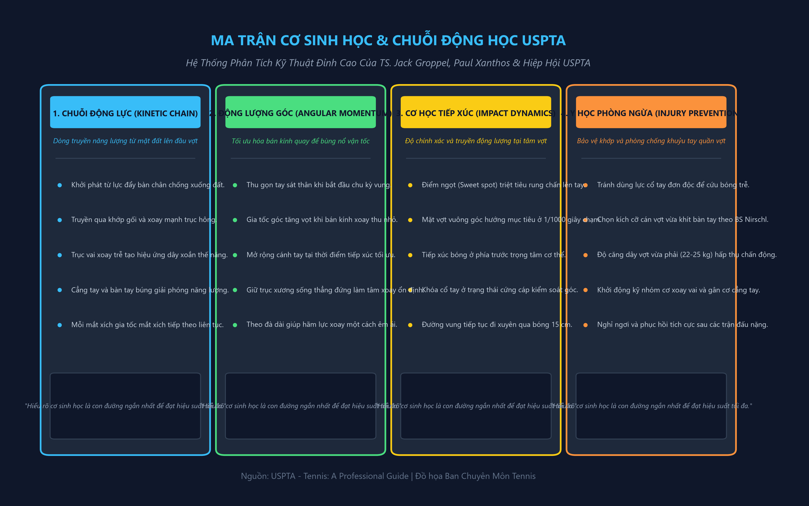
[English: The Kinetic Chain, Angular Momentum, and Ball Impact Mechanics (Dr. Jack Groppel)]
cú đánh. Nguồn lực chính của chúng đến từ hai nguyên lý vật lý khác: động lượng tuyến tính (linear momentum) và mô-men động lượng (angular momentum). Động lượng tuyến tính (linear momentum) là kết quả của việc chuyển cơ thể w tám về phía trước. Khi bạn mới học quần vợt, giáo viên có thể đã bảo bạn “bước vào bóng” trong mỗi cú đánh. Huấn luyện viên của bạn đang bảo bạn "tạo ra động lượng tuyến tính (linear momentum)". Một khi bạn đã truyền động lượng tuyến tính (linear momentum) của mình về phía trước, mô-men động lượng (angular momentum) sẽ phát huy tác dụng.
Xung lượng góc được tạo ra bởi chuyển động quay của cơ thể xảy ra ở hông và thân. 'Tôi' ở đây có rất ít cú đánh trong quần vợt có thể hiệu quả mà không cần sử dụng xung lượng góc. Để nhận ra tầm quan trọng của nó, hãy thử đánh một cú công bóng thuận tay mà không Xoay thân mình cây của bạn—đó sẽ không phải là một trong những cú đánh tốt hơn của bạn. Sự ổn định đóng một vai trò lớn trong quần vợt. Bất cứ ai muốn vượt trội đều phải cố gắng để được cân bằng. Điều này không có nghĩa là bạn phải hoàn toàn đứng yên mỗi lần đánh bóng và cũng không có nghĩa là bạn không nên đánh bóng khi đang chạy. Nó đơn giản có nghĩa là Bước vào bóng và chuyển trọng lượng cơ thể của bạn phải được kiểm soát khi vung vợt về phía va chạm. Bằng cách nâng vai quá sớm trong cú đánh hoặc đánh bằng chân sau, bạn chỉ làm tăng khả năng mắc lỗi. Ngay cả khi bạn đánh một cú đánh trong khi chạy ở chế độ nghiêng hoàn toàn, phần thân trên của bạn phải được kiểm soát để bạn có thể bung vợt về phía trước đúng cách.
Khi bạn hiểu những khái niệm này, bạn chỉ cần thêm một khái niệm nữa để nâng cấp) khả năng làm chủ trò chơi của mình. Nguyên lý đó là Định luật II Newton: Lực = Gia tốc khối lượng. Vì bạn không thể kiểm soát được khối lượng của mình nên nó luôn là một hằng số. Do đó lực tỉ lệ thuận với gia tốc. Nói cách khác, gia tốc càng lớn thì lực bạn cung cấp càng lớn. Nhưng hãy nhớ rằng, quần vợt không thực sự là một trò chơi của những cú đánh tốc độ cao mà nó là một trò chơi kiểm soát.
Sự cân bằng giữa vận tốc/độ chính xác tốt bao gồm việc thực hiện một cú đánh với một tốc độ nhất định, nhưng không quá nhanh đến mức cản trở độ chính xác. Cú đánh của bạn phải phụ thuộc vào vận tốc của cú đánh oncomTENNIS của đối thủ: Một cú đánh HƯỚNG DẪN CHUYÊN NGHIỆP, vị trí của người đó trên sân và cách bạn phải trả bóng. Ví dụ: nếu đối thủ của bạn đang ở trên lưới, bạn sẽ không muốn đánh một chiếc phao mềm có thể làm sạch lưới khoảng 5 hoặc 6 feet. Cú đánh bạn chọn để đánh (cho dù đó là cú đánh lái, cú lốp bóng (lob) hay thậm chí là cú đánh góc cạnh) phải được đánh với vận tốc thích hợp để duy trì khả năng kiểm soát tối đa. Điều này đòi hỏi cơ chế đánh tennis tốt.
Rõ ràng, có nhiều cơ chế về quần vợt hơn Định luật Chuyển động của Newton. Tuy nhiên, thông tin sơ bộ này sẽ là nền tảng tốt cho các phần tiếp theo đề cập đến cơ chế tạo ra cú đánh. Bằng cách hiểu những định luật vật lý này và áp dụng chúng vào các cú đánh của bạn, trò chơi của bạn có thể cải thiện đáng kể. Cơ thể của bạn nên hoạt động như một hệ thống liên kết. Điều đáng kinh ngạc là có rất nhiều tay vợt điêu luyện dường như vung vợt một cách dễ dàng khi chơi trò chơi này. Khi họ đánh bóng, có vẻ như họ vung vợt không mạnh lắm, tuy nhiên, khi bạn cố gắng đánh trả cú đánh của họ, có vẻ như vợt gần như văng ra khỏi tay bạn. Những tay vợt này đã học cách sử dụng toàn bộ cơ thể và tiếp xúc với bóng một cách hiệu quả. Chúng ta đã thảo luận về cách một vận động viên quần vợt tạo ra xung lượng tuyến tính và góc, nhưng chúng ta hãy xem xét cách sử dụng các bộ phận cơ thể lớn hơn để cho phép cánh tay hoạt động ít hơn.
Khi quan sát một tay vợt có kỹ năng thi đấu, không khó để thấy các bộ phận cơ thể hoạt động như thế nào. Sau khi hoàn thành bước tiến và động lượng tuyến tính (linear momentum) được truyền theo hướng xảy ra va chạm, đó là lúc cơ thể xoay vào vị trí. Rất ít người trong chúng ta từng thấy cách một tay vợt chuyên nghiệp chuẩn bị để thực hiện một cú đánh nền. [tất cả diễn ra quá nhanh mà mắt thường không thể nắm bắt được. Chúng ta chỉ nhìn thấy sản phẩm cuối cùng, khi vận động viên chuyên nghiệp đối mặt với lưới trong phần tiếp theo. Từ các hình minh họa, hãy lưu ý rằng khi bắt đầu cú đánh, hông và thân mình được xoay sang một bên. Bây giờ hãy quan sát người chơi vung người về phía trước để tiếp xúc với bóng. Khi tiếp cận tác động, hông và thân mình sẽ xoay để đưa cánh tay và vợt vào vị trí tiếp xúc với bóng. Việc sử dụng các bộ phận cơ thể lớn hơn trong ví dụ này hỗ trợ vận động viên đưa vợt vào vị trí va chạm thích hợp mà không buộc chi trên phải thực hiện phần lớn công việc.
Cú giao bóng và cú đánh qua đầu Trái ngược với những gì nhiều người tin tưởng, lực do cơ thể cung cấp để thực hiện một cú giao bóng hoặc cú đánh trên cao hiệu quả là Tim Gullikson — cú giao bóng không được phát triển ở thân và cánh tay trên. Hầu hết lực được tạo ra từ mặt đất dưới dạng lực phản lực của mặt đất. Hãy nhớ Định luật thứ ba của Newton: đối với mọi hành động, đều có phản ứng bình đẳng và ngược chiều. Khi giao bóng hoặc đánh một cú từ trên cao, bàn chân đẩy xuống đất và mặt đất đẩy lùi với cùng một lực.
Hãy chú ý trong ảnh cách Tim Gullikson (tứ kết Wimbledon 1979) uốn cong và duỗi đầu gối của mình để tạo ra lực phản ứng mặt đất vững chắc. Rất ít người chơi quần vợt sử dụng nguyên tắc này một cách tối đa. Rõ ràng, một điều có thể làm tăng lực phản ứng của mặt đất là việc sử dụng đúng động tác gập và duỗi đầu gối. Hai lỗi thường khiến một số người chơi không thể sử dụng đầu gối một cách chính xác: (1) Gập gối quá ít hoặc quá nhiều và (2) thời điểm di chuyển đầu gối không đúng so với phần còn lại của cú đánh.
Mức độ uốn cong đầu gối thích hợp thực sự phụ thuộc vào sức mạnh và sự phối hợp của mỗi cá nhân. Hãy xem xét ví dụ này. Nếu bạn đang cố gắng nhảy theo chiều dọc càng cao càng tốt, bạn sẽ uốn cong đầu gối một chút hay bạn sẽ cúi người sâu? Tôi nghi ngờ liệu bạn có làm như vậy không. Có một mức độ uốn cong đầu gối tối ưu dành riêng cho mỗi cá nhân. Nếu không Gập gối đủ mức, lực phản ứng với mặt đất kém sẽ được tạo ra, trong khi đầu gối gập quá nhiều sẽ dẫn đến chuyển động cơ thể quá mức và khả năng truyền lực từ mặt đất kém.
Vấn đề thứ hai mà nhiều người chơi quần vợt gặp phải là thời điểm thực hiện động tác đầu gối kém so với toàn bộ cú giao bóng hoặc chuyển động từ trên cao. Hãy nhớ rằng các phân đoạn của cơ thể hoạt động như một hệ thống các mắt xích. Lực do một mắt xích hoặc bộ phận cơ thể tạo ra sẽ lần lượt được truyền sang mắt xích tiếp theo. Khi việc truyền lực đó không hiệu quả, kết quả của cú đánh sẽ kém.
Vì Gập gối là một trong những chuyển động đầu tiên của cơ thể liên quan đến cú giao bóng và Cú đập trên đầu (smash) từ trên cao, nên nó có chức năng như nền tảng cho các hành động của hông và thân. Cho đến gần đây, nhiều vận động viên vẫn đặt câu hỏi về sự liên quan của hông trong việc đánh một cú giao bóng hoặc đánh qua đầu và do đó, có xu hướng bỏ qua tầm quan trọng của chúng. Tuy nhiên, bây giờ chúng ta biết rằng việc xoay hông có thể tạo ra sự khác biệt giữa một cú giao bóng hoặc cú giao bóng cao và một cú giao bóng tầm thường. Đây là vùng cơ thể nơi người chơi có kỹ năng truyền động lượng tuyến tính (linear momentum) và góc do chân tạo ra sang thân.
Tất cả đều đồng ý rằng Roscoe Tanner có một cú giao bóng tuyệt vời. Nhiều người nghĩ rằng anh ta đánh bóng trong khi cú ném đang tăng lên và do chuyển động nhanh của anh ta để làm điều đó nên tạo ra Tốc độ đầu vợt đáng kinh ngạc. Trước hết, anh ta không đánh bóng khi nó bay lên! Bóng thường ở trạng thái cao nhất khi tung và bất động khi Tanner tiếp xúc. Điều này có nghĩa là phản ứng của anh ta khi Tung bóng không phải là lý do khiến anh ta có Tốc độ đầu vợt cao. Tanner tạo ra Tốc độ đầu vợt của mình từ cách CẢI THIỆN TENNIS CỦA BẠN THÔNG QUA CƠ CHẾ SINH HỌC, anh ấy sử dụng chân và xoay hông và thân mình.
Nếu không có thời điểm xoay hông tuyệt vời, ngay cả cú giao bóng của Roscoe Tanner cũng có thể chỉ ở mức trung bình thay vì một trong những cú giao bóng tốt nhất thế giới. Sau khi lực được truyền hiệu quả đến hông và chúng đạt tốc độ quay tối đa, thân cây sẽ ở vị trí tiếp theo. Số lần Xoay thân mình cây thay đổi tùy theo người chơi. Một số người chơi có thể tạo ra rất nhiều vận tốc góc (từ việc xoay) với ít chuyển động của thân cây, nhưng hầu hết các người giao bóng và máy đập tốt đều có mức độ Xoay thân mình cây lớn. Khi cuộn cơ thể, vận động viên có thể tạo ra rất nhiều xung lượng góc bằng thân mình.
Bây giờ chi trên phát huy tác dụng. Hãy nhớ rằng việc giao bóng và đánh qua đầu cũng tương tự như việc ném bóng. Do đó, thân truyền vận tốc đến cánh tay, cánh tay quay ở vai, duỗi ra ở khuỷu tay và "bắn qua tác động" bằng cổ tay. Lưu ý cuối cùng, đừng bao giờ đánh quả giao bóng của bạn xuống. Tung bóng về phía trước cơ thể và đánh bóng “thẳng ra” để đảm bảo khoảng trống trong lưới.
Các cú công bóng Trái tay một tay và hai tay: Cú công bóng tốt hơn? Chỉ gần đây chúng ta mới bắt đầu hiểu cơ chế chuyển động liên quan đến các cú công bóng trái tay bằng một tay và hai tay. Dành cho nhiều reaTENNIS khác nhau: HƯỚNG DẪN CHUYÊN NGHIỆP Martina Navratilova—xoay hông Chris Evert Lloyd—trái tay bằng hai tay CẢI THIỆN TENNIS CỦA BẠN QUA CƠ CHẾ SINH HỌC Các con trai, các tay vợt trên khắp thế giới đã có những cảm xúc mạnh mẽ về kiểu đánh nào họ thích và tại sao. Những lý do này bao gồm từ sự khác biệt về tầm với, các vấn đề về sức mạnh cơ bắp, khả năng ngụy trang và khả năng tạo xoáy. Tuy nhiên, có một số điều chúng ta có thể tìm hiểu về hai cú đánh dựa trên phân tích cơ học.
Vào cuối những năm 1970 tôi đã thực hiện một nghiên cứu phim để kiểm tra các kỹ thuật trái tay (cả một tay và hai tay) của 36 tay vợt có tay nghề cao (18 người cho mỗi cú đánh). Một phát hiện quan trọng liên quan đến số lượng bộ phận cơ thể được sử dụng trong mỗi cú đánh và cách chúng được phối hợp hợp lý. Đối với trái tay bằng một tay, người ta thấy rằng năm bộ phận cơ thể riêng biệt được sử dụng trước khi va chạm. Khi một tay vợt bước về phía quả bóng, hông hơi xoay, truyền động lượng của họ sang thân và thân người cũng bắt đầu xoay nhẹ. Sau đó cánh tay trên di chuyển quanh vai. 'Chuyển động của cánh tay trên được chuyển sang chuyển động nhẹ của cẳng tay, từ đó làm cho bàn tay và vợt đạt đến vị trí chính xác để bóng co lại. Sự tiếp xúc bóng phải xảy ra phía trước bàn chân trước để đảm bảo truyền động lượng dọc theo tất cả các bộ phận cơ thể này và để định hướng Mặt vợt theo phương thẳng đứng đối với đường bay của bóng.
Chính vì năm bộ phận cơ thể có liên quan nên nhiều người gặp khó khăn khi chơi quần vợt bằng trái tay bằng một tay. Họ thực sự không thể phối hợp cả năm phân khúc. Đã bao nhiêu lần bạn thấy những cá nhân chơi dẫn đầu bằng cùi chỏ hoặc thả đầu vợt để giúp đánh bóng qua lưới? Điều xảy ra là những người chơi đó có thể sử dụng các bộ phận chính của cơ thể, nhưng khi phải truyền động lượng cho cẳng tay qua khuỷu tay, họ sẽ mất đi sự phối hợp và dẫn đầu bằng khuỷu tay. Một số có thể truyền tốt động lượng từ khuỷu tay đến cẳng tay, nhưng không thể lấy nó bằng cổ tay một cách hiệu quả và khiến đầu vợt bị rơi nghiêm trọng, gây ra một cú đánh khó xử. Trái tay bằng hai tay là một câu chuyện khác.
Cú đánh bằng hai tay chỉ sử dụng hai bộ phận cơ thể để vung vợt về phía va chạm. Sau khi người chơi bắt đầu chuyển động lượng tuyến tính (linear momentum) về phía trước và bước về phía điểm tiếp xúc với bóng, hông bắt đầu xoay. Chúng lần lượt làm cho thân cây xoay nhưng cánh tay của cả hai chi cũng xoay theo thân cây với chuyển động ở khuỷu tay hoặc cổ tay hướng lên để va chạm. Tức là thân và cánh tay xoay như một bộ phận cơ thể. Sau khi va chạm, bất kỳ sự co giật nào cũng xảy ra đối với các phần cơ thể khác nhau, tùy thuộc vào đặc điểm riêng của mỗi người chơi.
Điều quan trọng là phải hiểu rằng cả Trái tay một tay và Trái tay hai tay đều có những đặc điểm cụ thể và cả hai đều có thể được sử dụng hiệu quả. HƯỚNG DẪN CHUYÊN NGHIỆP Trái tay hai tay—hai phần chặt chẽ. Nếu nói cái này tốt hơn cái kia sẽ là vô lý. Tuy nhiên, có một điều bạn cần lưu ý: câu hỏi về phạm vi tiếp cận. Trong một nghiên cứu về phim tốc độ cao mà tôi thực hiện trên 36 người chơi có kỹ năng cao, tôi không thể tìm thấy sự khác biệt nào về tầm đánh giữa hai cú đánh. Hãy tự mình xem bằng cách so sánh các góc nhìn khác nhau của các cú trái tay (backhand) bằng một tay và hai tay được minh họa. Khi các tay vợt trong nghiên cứu của tôi không phải chạy để chuẩn bị đánh, việc tiếp xúc bóng trong mỗi cú đánh xảy ra ở khoảng cách như nhau so với cơ thể. «Tuyên bố này thường đưa ra câu hỏi sau: Còn tình huống khi một tay vợt thực sự bị căng ra để thực hiện cú trả bóng trái tay thì sao? Chúng ta có thể hình dung làm thế nào một vận động viên chuyên nghiệp với Trái tay một tay có thể lao vào một cú đánh, nhưng còn những người chơi sử dụng trái tay bằng hai tay thì sao? Liệu họ cũng có thể đạt được tầm bắn rộng? Câu trả lời của tôi có lẽ là không! Tuy nhiên, bạn đã thấy bao nhiêu cú trái tay (backhand) bằng một tay trong số đó là cú đánh giành chiến thắng? Tôi chắc chắn là rất ít.
Hầu hết những cú đánh rộng đó đều được trả về dưới dạng các cú bắt volley hoặc Cú lốp bóng (lob) xoáy xuống phòng thủ. Họ không có những cú đánh xuyên thấu, tấn công. Quan điểm của tôi là một tay vợt có Cú trái tay (backhand) tay bằng hai tay hiệu quả có thể học cách đánh những cú lao bằng một tay đó và phát triển một cú công bóng xoáy xuống hoặc Cú lốp bóng (lob) phòng thủ tốt. Vì vậy, thực sự không có lý do gì để tránh sử dụng trái tay bằng hai tay do được cho là thiếu tầm với.
Sản xuất độ xoáy Bất kỳ ai từng chơi quần vợt giải đấu đều biết giá trị của việc có thể thay đổi độ xoáy của bóng khi thi đấu. Bóng xoáy có thể được sử dụng vì nhiều lý do. Một số người chơi thích sử dụng xoáy xuống (hoặc xoáy xuống) vì họ cảm thấy họ có thể kiểm soát vị trí đánh tốt hơn. Những người chơi khác, những người có thể tấn công bóng mạnh mẽ hơn, thích đánh bóng Xoáy lên vì họ cảm thấy điều đó cải thiện khả năng kiểm soát của họ. Người ta vẫn thấy các đối thủ khác sử dụng Xoáy ngang trong một số cú đánh nhất định. Vì vậy, bất kỳ ai mong muốn trở nên xuất sắc trong trò chơi này nên tìm hiểu thêm về độ xoáy và lý do tại sao nó lại quan trọng như vậy.
Khi một quả bóng tennis di chuyển về phía đối thủ, đường bay của nó bị ảnh hưởng bởi không khí xung quanh. Khi quả bóng quay, không khí thậm chí còn có tác động đáng kể hơn đến đường bay của quả bóng. Ví dụ, nếu một quả bóng có Xoáy lên, mặt trên của quả bóng sẽ quay theo hướng bóng đang di chuyển. Bạn nên lưu ý rằng, khi quả bóng quay, nó mang theo một lớp không khí nhỏ ở ranh giới xung quanh. Phía trên quả bóng (nơi quả bóng quay cùng hướng với chuyển động của nó), lớp không khí biên sẽ đi theo hướng ngược lại với luồng không khí chạm vào quả bóng trong quá trình bay của nó. Điều này gây ra một lượng nhiễu loạn lớn phía trên quả bóng, buộc quả bóng đi xuống, do đó gây ra hiệu ứng giật thường thấy với các cú đánh nền Xoáy lên.
Hãy so sánh phạm vi tiếp cận của các cú trái tay (backhand) bằng một tay và hai tay này. TENNIS: HƯỚNG DẪN CHUYÊN NGHIỆP Lớp ranh giới của Hướng không khí của chuyến bay Áp suất không khí xoáy xuống Hiệu ứng ngược lại thường được quan sát thấy với xoáy xuống. Vì quả bóng quay theo hướng ngược lại nên đáy quả bóng cũng quay theo hướng quả bóng đang di chuyển. Do đó, sự tương tác của lớp không khí biên với không khí đang tới sẽ tạo ra sự nhiễu loạn bên dưới quả bóng.
Kết quả là bóng sẽ có xu hướng ở trên không lâu hơn khi nó di chuyển qua lưới. Độ xoáy cũng ảnh hưởng đến cách quả bóng nảy lên. Khi cú đánh Xoáy lên bật ra khỏi phần sân của đối phương, cú đánh Xoáy lên có xu hướng đẩy lùi về phía sân, khiến bóng bật lại ở một góc /ower hơn so với góc mà bóng sẽ có nếu nó không có xoáy. Lý do mà rất nhiều cú đánh Xoáy lên dường như có độ nảy cao như vậy là do góc tiếp cận của chúng với bề mặt. Hãy nhớ rằng sự chuyển động xoáy ở phía trên của quả bóng sẽ ép nó đi xuống, khiến cho góc tiếp cận sân rất dốc. Do đó, mặc dù góc bật lại của một cú đánh Xoáy lên thấp hơn góc bật lại nếu bóng được đánh không xoáy, độ bật lại của cú đánh Xoáy lên vẫn cực kỳ cao.
Độ nảy của một quả bóng được đánh với xoáy xuống khác với độ nảy của bóng Xoáy lên. Trong khi cú đánh Xoáy lên làm cho bóng nảy lên ở một góc thấp hơn so với quả bóng không xoáy, thì độ xoáy của một quả bóng chạm vào có xoáy xuống làm cho nó nảy lên ở một góc lớn hơn trong những điều kiện nhất định. Khi bóng tiếp cận sân ở một góc tiếp cận dốc, xoáy xuống làm cho bóng đẩy về phía trước khi tiếp xúc với sân, khiến bóng chậm lại và bật lại theo phương thẳng đứng hơn bình thường.
Tuy nhiên, góc mà cú đánh xoáy xuống chạm vào bề Mặt sân cũng sẽ ảnh hưởng đến lực bật lại. Một cú đánh tiếp đất nhẹ nhàng, lười biếng với xoáy xuống sẽ có xu hướng có góc tiếp cận dốc, khiến cú đánh bị "ngồi dậy". Một cú đánh cắt lưới vừa qua lưới có xu hướng tiếp cận sân ở một góc rất thấp, khiến bóng trượt và nảy thấp. Vì lý do này mà mục đích của hầu hết các cú đánh nền xoáy xuống là đưa bóng vào sâu phần sân đối phương với quỹ đạo thấp.
Chỉ có một cách duy nhất để tạo ra Xoáy lên trên một quả bóng tennis. Vợt phải được vung theo kiểu từ thấp đến cao trong khi Mặt vợt duy trì tư thế thẳng đứng khi tiếp xúc. Vợt có thể là TENNIS: HƯỚNG DẪN CHUYÊN NGHIỆP Hi Lớp biên Áp lực của hướng không khí Xoáy lên Xoáy lên ! Góc Mặt vợt cho Xoáy lên, phẳng và lát cắt mở hoặc đóng hơi rộng nhưng đầu vợt bị lệch quá nhiều khi tiếp xúc sẽ gây ra cú đánh sai.
Chuyển động của đầu vợt theo hướng hướng lên càng triệt để thì bạn càng có thể tạo ra nhiều Xoáy lên trên quả bóng. Vì bóng ở trên vợt trong thời gian rất ngắn (0,004 giây) nên không thể xoay đầu vợt khi bóng đang tiếp xúc với vợt. Do đó, việc cố gắng tạo thêm Xoáy lên bằng cách "lăn qua" bóng sẽ không tạo ra thêm Xoáy lên nhưng có thể làm tăng khả năng mắc sai lầm.
Để đánh bóng có xoáy xuống, mặt sau của bóng phải được đánh theo hướng hướng xuống dưới. Điều này thường được thực hiện bằng cách đưa vợt trở lại vị trí cao hơn một chút so với nơi sẽ xảy ra va chạm. Xoay vợt theo kiểu từ cao xuống thấp một chút với Mặt vợt hơi mở sẽ tạo ra một lượng xoáy xuống dồi dào cho bóng. Chú ý không tạo góc vung xuống quá dốc khiến bóng bị “chặt”, hoặc để Mặt vợt quá hở khi tiếp xúc, điều này sẽ khiến bóng có quỹ đạo cao. Tuy nhiên, nếu được giữ ở mức thấp và sâu, xoáy xuống là một vũ khí cực kỳ hữu ích.
Tiến sĩ Jack L. Gropper Điều chỉnh trò chơi của bạn theo điều kiện sân đấu và những người chơi giỏi nhất nhận thấy rằng thỉnh thoảng họ phải thay đổi các phần trong trò chơi của mình để tiếp tục cải thiện, chơi tốt hơn và giành chiến thắng. Thích ứng là cách một người chơi thông minh tồn tại. Bên cạnh những cú đánh của đối thủ, bạn sẽ phải đối mặt với nắng, nóng, gió, lạnh, các bề Mặt sân khác nhau và Sân trong nhà mà bạn sẽ phải thích nghi. Bạn sẽ cần có khả năng xử lý tất cả các biến số này để trở thành một người chơi giỏi hơn.
Mặt trời Mặt trời sẽ ảnh hưởng chủ yếu đến cú giao bóng và phần trên đầu vì bạn sẽ nhìn lên quả bóng. Nếu mắt bạn thoáng nhìn thấy mặt trời trong khi bạn bắt đầu cú đánh, rất có thể bạn sẽ đánh sai, đưa bóng ra ngoài hoặc vào lưới. Để tránh điều này, bạn nên ở trên cao, sử dụng cẳng tay và bàn tay của cánh tay không cầm vợt để chắn ánh nắng vào mắt và nhìn bóng rõ hơn. Một khả năng khác là để bóng nảy lên trước rồi đánh một Cú đập trên đầu (smash) hoặc một cú đánh nền khi mặt trời không phải là yếu tố lớn. Giữ quả bóng ở xa hơn trước mặt bạn cũng sẽ giúp giữ cho độ sáng không làm bạn tạm thời bị chói mắt khi bay qua đầu.
Trong cú giao bóng của bạn, cú Tung bóng rất quan trọng khi mặt trời là một yếu tố. Nó phải được nhắm xa hơn về phía trước và thấp hơn bình thường. Điều này nhằm tránh góc cao hơn sẽ buộc bạn phải nhìn thẳng vào những tia sáng tàn khốc đó. Khi bạn Tung bóng, hãy nghiêng người về phía lưới để cú ném thấp hơn, góc cạnh hơn sẽ không ảnh hưởng nhiều đến cú giao bóng của bạn. Tuy nhiên, hãy nhận ra rằng cơ thể bạn sẽ rơi xuống sân. Hành động này giúp ích cho cú giao bóng đầu tiên của bạn nhưng không giúp ích cho cú giao bóng thứ hai của bạn.
Bạn sẽ không thể sử dụng cú giao bóng xoáy thường xuyên nếu mặt trời là yếu tố mạnh. Tuy nhiên, những cú giao bóng theo lát (tùy thuộc vào góc của mặt trời) có thể là một vũ khí hiệu quả để chống lại đối thủ của bạn. Nguyên tắc chung nên là: nếu mặt trời chống lại bạn khi giao bóng, hãy Cú đánh phẳng bằng cách Tung bóng thấp và ra phía trước. Mặc dù ánh nắng chói chang chủ yếu ảnh hưởng đến cú giao bóng và cú đánh trên đầu, nhưng nó cũng có thể ảnh hưởng đến điều kiện của sân.
Ví dụ: nếu có bóng ở một số phần của sân và mặt trời sáng ở các phần khác, đường bay của quả bóng có thể khó theo dõi và độ xoáy của nó khó đọc hơn. Nếu bạn đang ở ngoài nắng và đối thủ của bạn ở trong bóng tối, quả bóng dường như sẽ tăng tốc ra khỏi phần sân của đối thủ và bay vào phần sân của bạn. Quả bóng dường như di chuyển nhanh hơn, do đó, bạn phải dự đoán nhiều hơn trong tình huống này.
Mặt khác, nếu bạn ở trong bóng tối và đối thủ của bạn ở ngoài trời, nhiều cú đánh của đối thủ sẽ có vẻ di chuyển chậm hơn khi chúng đi qua lưới, nhưng sau đó chúng sẽ có vẻ tăng tốc. Trong tình huống này cũng vậy, bạn phải lường trước nhiều hơn. ĐIỀU CHỈNH ĐIỀU KIỆN CỦA TRÒ CHƠI CỦA BẠN Khi có ánh nắng chói chang, bạn nên cố gắng Cú lốp bóng (lob) thường xuyên đối thủ khi họ ở bên sân hướng về phía mặt trời. cú lốp bóng (lob) của bạn tạo cơ hội tốt để khiến đối phương mất cảnh giác và di chuyển vào lưới. Anh ấy hoặc cô ấy sẽ không thể nhìn rõ và phải lo lắng về quả bóng nhiều hơn là về bạn. Bạn sẽ có thể thực hiện một cú đánh nhanh sau cú trả bóng của đối thủ.
Nhiệt Sống sót sau nhiệt chủ yếu là vấn đề điều hòa. Giả sử bạn đang ở trong tình trạng thích hợp để thi đấu trong thời tiết nóng nực, có ba mục quan trọng cần tập trung vào: 1) đánh giá phong cách của đối thủ, 2) tăng tốc trong suốt trận đấu và 3) thay nước thường xuyên. Để đánh giá đối thủ, hãy tự hỏi: Anh ta hoặc cô ta có phải là người chơi theo phong cách giao bóng và vô lê năng nổ, là người đánh bóng cơ bản hay kết hợp cả hai?
Nếu đối thủ của bạn là một tay vợt hung hãn, họ sẽ cố gắng Kết thúc cú đánh điểm nhanh chóng vì phong cách của họ sẽ tiêu tốn rất nhiều năng lượng khi nóng nảy. Bạn nên cố gắng giữ điểm lâu với tay vợt này, Cú lốp bóng (lob) thường xuyên và di chuyển bóng quanh sân. Nếu đối thủ của bạn là người tập hợp cơ bản, bạn có thể phải thi đấu lâu dài. Trừ khi bạn có kỹ năng để đánh bóng liên tục từ đường cuối sân và cảm thấy mình có thể đánh bại đối thủ này, bạn nên cố gắng kết hợp các cú đánh của mình, đưa người đánh bóng vào lưới, sau đó Cú lốp bóng (lob), di chuyển bóng quanh sân, cố gắng làm đảo lộn tính nhất quán của anh ta hoặc cô ta.
Có lẽ đối thủ khó chơi nhất trong thời điểm nóng nực là mẫu tay vợt mà bạn nên cố gắng trở thành, một mẫu tay vợt có khả năng thích nghi. Nếu đối thủ của bạn có thể tập trung ổn định từ đường cuối sân cũng như thỉnh thoảng chơi theo kiểu giao bóng và vô lê, bạn sẽ phải nhanh chóng cố gắng làm chủ trận đấu. Bạn nên cố gắng điều chỉnh tốc độ để bắt nhịp nhưng đối thủ thì không.
Hãy nhớ rằng theo nguyên tắc chung, hầu hết các cuộc giao tranh trong thời tiết nắng nóng sẽ kéo dài hơn vì bóng di chuyển chậm hơn khi trời nóng, vì vậy bạn sẽ phải tự điều chỉnh tốc độ để có đủ sức mạnh vào cuối trận đấu. Bạn không muốn hết xăng khi sắp giành chiến thắng. Việc điều chỉnh Nhịp điệu trận đấu bản thân đôi khi rất khó khăn vì bạn không biết trước cơ thể mình sẽ phản ứng thế nào với cái nóng vào một ngày cụ thể. Tuy nhiên, bạn có thể chơi để không bị kiệt sức. Đừng cố gắng chế ngự quả bóng vào một ngày nắng nóng.
Vì quả bóng sẽ bay trong không khí chậm hơn vào những ngày nắng nóng, nên những cú đánh mạnh mẽ của bạn sẽ bị cản trở và bạn sẽ sử dụng hết năng lượng quý giá. Sử dụng 3/4 sức mạnh của bạn là đủ Thích nghi với Sun TENNIS: HƯỚNG DẪN CHUYÊN NGHIỆP để Kết thúc cú đánh điểm mà không làm hao tổn sức lực của bạn. Khi đối thủ của bạn tung ra một cú đánh đẹp và có góc đánh tốt trong một trận đấu ở điều kiện thời tiết bình thường, bạn hãy cố gắng thực hiện nó. Đây là một thái độ tốt trong hầu hết các điều kiện, nhưng không phải trong thời tiết nắng nóng. Nếu bạn định cống hiến tất cả những gì bạn có cho một cú đánh, thì đó tốt hơn là điểm trận đấu. Một kế hoạch hành động tốt hơn sẽ là cố gắng hết sức để có được những cú đánh mà bạn có cơ hội thực hiện và thực hiện, nhưng hãy bỏ qua những cú đánh ngoài tầm với của bạn. Điều này sẽ tiết kiệm một phần năng lượng quý giá mà bạn sẽ cần trong những giây phút Kết thúc cú đánh trận đấu.
Mất nước cũng là một vấn đề lớn trong thời gian nắng nóng. Người ta biết rằng các tay vợt sẽ mất từ 5 đến 10 pound nước trong một trận đấu. Nếu không thay thế lượng nước đã mất, bạn không chỉ mất năng lượng mà còn cảm thấy ngất xỉu và có nguy cơ bị kiệt sức vì nóng. Uống một vài ly nước trước khi vào sân thi đấu và sau đó uống một lượng nhỏ nước mỗi lần thay đổi. Điều này sẽ có tác dụng thay thế lượng chất lỏng mà bạn sẽ mất đi nhanh chóng khi "bật nhiệt". Không uống viên muối ngay trước hoặc trong trận đấu. Chúng có thể khiến bạn bị bệnh nếu dùng vào những thời điểm này. Thay vào đó, hãy ăn chuối vài giờ trước giờ thi đấu. Điều này sẽ đưa kali vào hệ thống của bạn, giúp ngăn ngừa chuột rút do nhiệt.
Gió Việc thích ứng với điều kiện có gió đòi hỏi bạn phải thực hiện nhiều điều chỉnh trong trò chơi của mình, những điều chỉnh liên quan đến tất cả các cú đánh. Việc điều chỉnh đầu tiên liên quan đến việc tung giao bóng. Với gió thổi, rất khó để có được cú ném cao đúng vị trí. Thay vào đó, hãy thử ném thấp hơn bình thường một chút để giảm tác động của gió. Vì gió sẽ thổi vào quả bóng khi nó đang di chuyển trong không khí, nên độ xoáy nhiều hơn sẽ giúp kiểm soát cú giao bóng của bạn và sẽ tạo cho quả bóng một số chuyển động khi nó chạm vào bên trong ô giao bóng của đối thủ.
Đương nhiên, nếu gió thổi vào lưng bạn, bạn nên đánh với lực ít hơn, và nếu gió thổi vào mặt bạn, bạn nên đánh mạnh hơn một chút. Điều này đúng với tất cả các cú đánh, không chỉ riêng cú giao bóng. Bạn có thể sử dụng gió để tạo Điểm lợi thế (advantage) cho mình nếu bạn biết nó sẽ ảnh hưởng đến quả bóng của bạn như thế nào. Bạn nên sử dụng nhiều xoáy hơn trong tất cả các cú đánh của mình, không chỉ Xoáy lên và xoáy xuống mà còn cả Xoáy ngang. Điều này sẽ cho phép bạn đánh theo hướng gió chéo mà vẫn kiểm soát được Độ sâu của bóng của cú đánh nền.
Nếu gió thổi vào mặt bạn, một quả bóng đánh bằng Xoáy lên sẽ rơi xuống sớm hơn và một lát cắt sẽ bay lên nhanh hơn. Nếu gió ở phía sau lưng bạn, Xoáy lên sẽ khiến bóng tăng tốc và bay xa hơn và một cú cắt cũng sẽ bay xa hơn nhiều. Bạn nên chọn ảnh cho phù hợp. Gió thổi qua có thể gây mất tinh thần nếu không được xử lý đúng cách. Bạn nên để hầu hết các quả Cú lốp bóng (lob) bật lên trước khi đánh một cú ném qua đầu. Gió sẽ thổi bóng theo mọi hướng và rất khó để căn thời gian đánh và Khả năng đoán trước (anticipation). Nếu để bóng nảy trước, bạn sẽ có nhiều thời gian hơn để thích ứng với gió và đánh tốt.
Khi bạn Cú lốp bóng (lob) trong điều kiện có gió, kiểu Cú lốp bóng (lob) bạn chọn phụ thuộc vào hướng gió. Nếu gió thổi vào lưng bạn, bạn nên sử dụng cú lốp bóng (lob) Xoáy lên để giữ bóng không bị đưa đi quá xa. Nếu gió thổi vào mặt bạn thì cú Lốp xoáy lên xuống sẽ hiệu quả nhất vì bạn có thể kiểm soát Độ sâu của Bóng ngon ăn (sitter) dàng hơn. Tuy nhiên, cú đánh này phải được đánh khá mạnh để tránh bóng rơi ngắn. Nếu gặp gió chéo, bạn nên cố gắng Cú lốp bóng (lob) vào đó, lưu ý rằng bóng sẽ được đưa trở lại sân. Nếu bạn Cú lốp bóng (lob) theo hướng gió này, quả bóng của bạn có thể bị cuốn đi bốn sân trước khi nảy lên.
Lạnh Đầu mùa xuân, cuối mùa thu và trong nhà khi chưa bật máy sưởi là thời điểm cái lạnh có thể ảnh hưởng đến trò chơi của bạn. Các cơ không hoạt động tốt khi trời lạnh và "cảm giác" bạn có đối với vợt của mình sẽ không chính xác. Bạn phải mặc quần áo để có thể giữ ấm và cho phép cơ bắp của bạn làm những gì bạn đã huấn luyện chúng làm.
Mặc một bộ đồ giữ ấm, một chiếc áo len và có thể mặc nhiều lớp hơn, tùy thuộc vào mức độ cực đoan của nhiệt độ. (Thậm chí còn có một chiếc găng tay được thiết kế dành cho người chơi quần vợt để giữ ấm bàn tay chơi của họ.) Làm nóng các cú đánh của bạn một cách từ từ. Cơ bắp rất dễ co rút khi trời lạnh. Thực hành tất cả các cú đánh một cách đầy đủ để hoàn toàn thả lỏng. Khi bạn chơi trong thời tiết lạnh, quả bóng sẽ di chuyển trong không khí nhanh hơn và bay xa hơn ở nhiệt độ ấm áp. Vì lý do này, bạn phải sử dụng nhiều độ xoáy hơn để giữ bóng trong sân, tận dụng phong cách chơi giao bóng và vô lê và thực hiện nhiều cú đánh vào trung lộ hơn (trong thời tiết lạnh, bóng thường sẽ bay ra xa).
Các bề Mặt sân khác nhau Có vẻ như mỗi nơi trên thế giới đều có một loại bề Mặt sân cụ thể đã trở nên phổ biến. Những tay vợt giỏi nhất là những người có thể thích nghi và chơi tốt trên mọi Mặt sân. Các bề mặt khác nhau mà bạn sẽ thích ứng với trò chơi của mình là: cỏ, đất sét, Nhanh khô, Har-Tru, xi măng, thảm, cứng (hoặc thành phần), nhựa và gỗ. Chúng có thể được chia thành ba loại: 1) chơi nhanh, 2) tốc độ trung bình và 3) chơi chậm. Những loại này đề cập đến tốc độ của quả bóng nảy.
Các bề mặt như cỏ, nhựa, gỗ được coi là “nhanh”? sân đấu. Sân gỗ, hay "bảng" như đôi khi chúng được gọi, ngày nay hiếm khi được chơi mà thường là bề mặt phổ biến trong nhà. Ngày nay vẫn có những nơi duy trì sân gỗ. Sân nhựa có lưới lồng vào nhau với các lỗ ở bề mặt trên và Sân cỏ được cắt ngắn (tuy nhiên không ngắn như sân gôn) xuống đất và cuộn lại.
Những sân "chơi nhanh" này yêu cầu bạn phải đưa bóng đi lên. Bạn cần phải ra khỏi đường biên và lên lưới một cách nhanh chóng. Di chuyển vào trong và giữ ở mức thấp khi Trả giao bóng, đánh những cú giao bóng nhanh nhanh và rút ngắn cú đánh lùi của bạn trong tất cả các cú đánh tiếp đất để chơi hiệu quả trên các bề mặt này. Sân "tốc độ trung bình" là sân được làm bằng vật liệu tổng hợp, thảm và xi măng — mặc dù một số sân xi măng sẽ được coi là nhanh.
Thành phần, hay còn gọi là sân "cứng", có nền nhựa đường với một loại hợp chất acrylic nào đó được đổ lên trên. Tốc độ khác nhau, tùy thuộc vào lượng acrylic được đổ xuống. Sân thảm sử dụng chất liệu tương tự thảm trong nhà-ngoài trời nhưng được thiết kế riêng cho sân tennis. Chất liệu của nó dày hơn tấm thảm thông thường. Sân xi măng thường được bao phủ bởi một lớp phủ acrylic tương tự như lớp phủ được sử dụng trên sân tổng hợp.
Đây là những Mặt sân "trung bình" để thi đấu, không thiên về bất kỳ phong cách chơi cụ thể nào. Nên sử dụng những cú xoay hoàn toàn và tất cả các cú đánh đều có hiệu quả. Sân "chơi chậm" là sân làm bằng đất sét và vật liệu "khô nhanh" như Har-Tru. Clay là người chậm hơn trong hai người. Đây là Mặt sân được sử dụng tại các giải Pháp và Ý mở rộng. Trên các bề mặt "chậm", các pha đánh bóng về cơ bản là phổ biến, kiểu giao bóng và vô lê, rất hiếm.
Bóng nảy cao hơn nên Điểm lợi thế (advantage) là những cú đánh nền sâu. Bề Mặt sân sẽ làm giảm sức mạnh của các cú giao bóng và cú đánh đầu. Những bức ảnh này phải được đặt đúng vị trí và có góc cạnh phù hợp để đạt được hiệu quả tối đa. Topspin được nhấn mạnh trên các sân này với bóng đá cao. Các cú đánh cắt lát có xu hướng "ngồi" lên nhiều hơn thay vì trượt như trên bề mặt "nhanh".
Sân trong nhà Bề mặt thi đấu sẽ khác nhau tùy theo câu lạc bộ nhưng một số điều kiện nhất định nhìn chung sẽ đúng ở hầu hết các cơ sở trong nhà. Đó là: ánh sáng khuếch tán nhiều hơn ánh sáng mặt trời ngoài trời, trần nhà ĐIỀU KIỆN SÂN FO Thích ứng với TENNIS gió: HƯỚNG DẪN CHUYÊN NGHIỆP dành cho cách Cú lốp bóng (lob) và bạn có lưới bên ngăn cách các sân có thể cản trở một số cú đánh và cách thực hiện một số cú đánh.
Cần phải làm quen dần với ánh sáng sau khi chơi ngoài trời. Một vài lần đầu tiên bạn chơi trong nhà, hãy cố gắng thực hiện đầy đủ các cú đánh thực hành và chú ý xem ánh sáng ảnh hưởng như thế nào đến cách bạn đánh và thực hiện các điều chỉnh cần thiết. Khi Cú lốp bóng (lob), bạn phải hết sức cẩn thận để tránh trần nhà bị góc cạnh. Bởi vì điều này, các cú lốp bóng (lob) Xoáy lên hoạt động tốt hơn trong nhà so với các cú lốp bóng (lob) xoáy xuống; bạn có thể kiểm soát góc độ tốt hơn.
Lưới bên có thể được sử dụng làm Điểm lợi thế (advantage) cho bạn thay vì trở thành chướng ngại vật nếu bạn thông minh. Sử dụng các cú giao bóng cắt và các cú giao bóng xoáy để kéo đối thủ của bạn ra khỏi sân vào lưới bên. Anh ấy hoặc cô ấy sẽ lo lắng về việc vướng vào rắc rối hơn là tập trung vào việc quay trở lại. Khi nhận giao bóng, hãy di chuyển vào trong một chút để đối thủ không thực hiện được chiến thuật tương tự. Trong các cú đánh tiếp đất, một cú sút góc ngắn sẽ có hiệu quả trong việc đưa tay vợt kia vào "nắm" lưới bên cạnh.
Việc thích ứng và thay đổi theo các điều kiện khác nhau mà bạn thấy mình đang chơi là cần thiết để đạt được kỷ lục chiến thắng. Nó có thể thú vị—một thử thách để cải thiện trò chơi của bạn. Bạn có thể tìm thấy một số kỹ năng tiềm ẩn đã không hoạt động trong một kế hoạch trò chơi không thay đổi. Tay vợt PauL GaGon cắt bóng để kéo đối thủ ra khỏi sân
Kỹ Thuật Căn Bản Của Paul J. Xanthos & Ian Crookenden
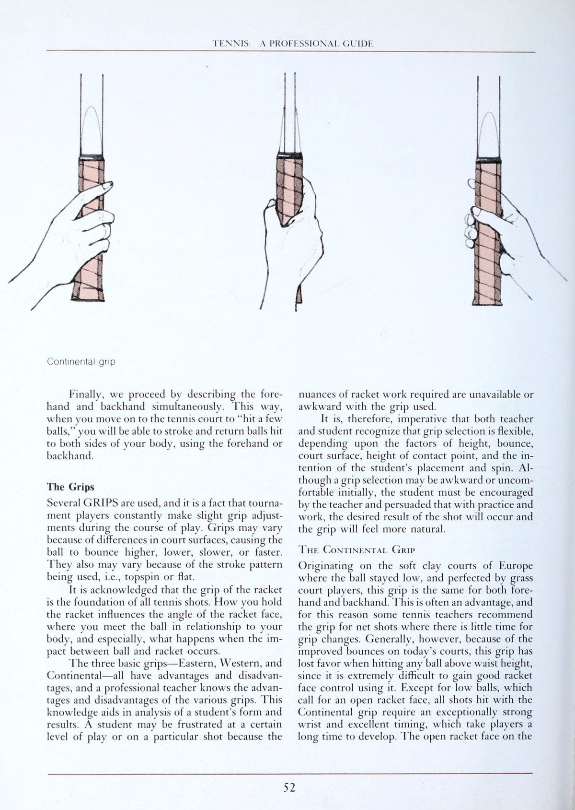
[English: USPTA Standard Grip Matrix: Continental, Eastern, Semi-Western & Western Grips]
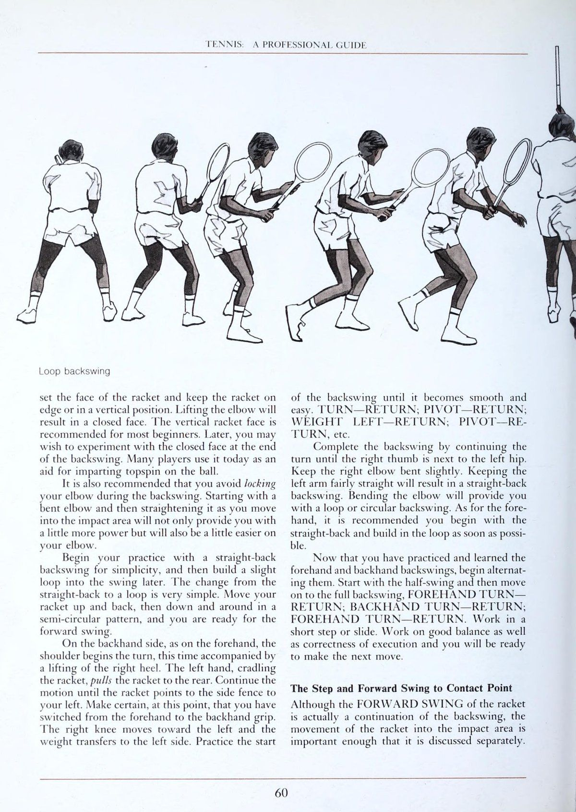
[English: Forehand Drive Mechanics: Shoulder Turn, Unit Turn & Kinetic Chain Follow-Through]
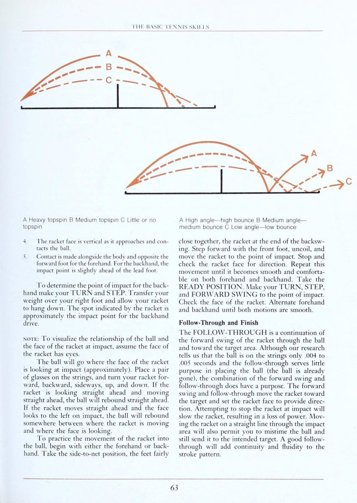
[English: Backhand Drive Dynamics: One-Handed & Two-Handed Biomechanical Execution]
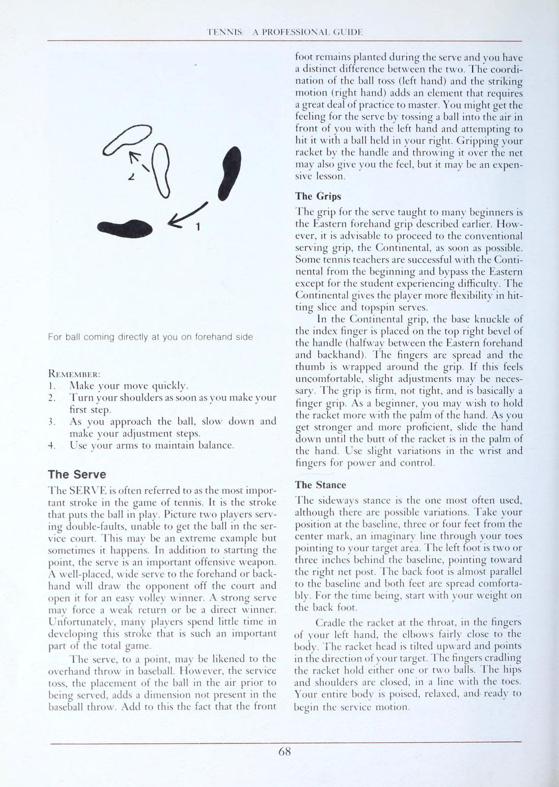
[English: Serve Kinetics: Tossing Mechanics, Knee Drive & Pronation at Contact]
ở đây có nhiều cách để đánh bóng tennis và người chơi cao cấp hơn sẽ sử dụng hầu hết hoặc tất cả những cách này trong trận đấu, ví dụ: Xoáy lên, xoáy xuống, lát, chip, cắt, thả, Cú lốp bóng (lob) và đập. Tuy nhiên, có bốn cú đánh cơ bản tạo thành nền tảng cho trò chơi của bạn. Đây là các đòn tiếp đất—thuận tay và trái tay—giao bóng và cú volley. Các cú đánh xoáy, ném bóng, Cú lốp bóng (lob) và cú đập bóng smash là các biến thể của các cú đánh cơ bản và sau này được đề cập đến dưới dạng các cú đánh đặc biệt.
Các trang sau đây trình bày mô tả đầy đủ về từng nét cơ bản, được minh họa đầy đủ với các điểm kiểm tra cho từng nét, cùng với các đề xuất thực hành hữu ích. Các mô tả được viết cho người chơi thuận tay phải. Người thuận tay trái sẽ cần đảo ngược hướng dẫn liên quan đến các bộ phận của cơ thể. Các kiểu cú đánh được trình bày ở đây thường được coi là cổ điển và được nhiều giáo viên sử dụng khi giới thiệu trò chơi cho người mới bắt đầu. Nhưng các kiểu đánh chỉ đơn thuần là nền tảng cho trò chơi. Khi một nền tảng vững chắc đã được xây dựng, cá tính của người chơi sẽ chiếm ưu thế và một phong cách bắt đầu xuất hiện.
Xây dựng một căn cứ vững chắc và trò chơi của bạn sẽ mang lại nụ cười trên khuôn mặt bạn và sự kinh ngạc cho đối thủ của bạn. Xây dựng một nền tảng yếu kém và nụ cười sẽ xuất hiện trên khuôn mặt của đối thủ, sự kinh ngạc sẽ xuất hiện trên khuôn mặt của bạn. Hãy học những cú đánh cơ bản và bạn sẽ có một cuộc sống quần vợt vui vẻ và khỏe mạnh. Các cú đánh nền Với một số trường hợp ngoại lệ, khi hai người chơi lần đầu tiên bước lên sân, họ bắt đầu đánh bóng theo đường nảy từ đường cuối sân (baseline) này sang đường cuối sân (baseline) kia. Họ đang đánh ĐẤT ĐẤT, và đây là những cú đánh mà chúng tôi mô tả đầu tiên.
Cả hai động tác đánh nền, BƯỚC TAY và BACKHAND, đều được trình bày bằng cách mô tả các phần theo một trình tự xác định, ví dụ: GRIP, STANCE (vị trí sẵn sàng), BACKSWING (xoay), BƯỚC, SWING TIẾN ĐẾN ĐIỂM TIẾP XÚC, THEO DÕI và KẾT THÚC. Mỗi phần được phân tích và mô tả bổ sung bằng một hoặc nhiều hình ảnh minh họa để bạn dễ theo dõi hơn. Điểm kiểm tra nhắc nhở bạn về những gì bạn nên tìm kiếm khi hoàn thành mỗi lần di chuyển.
Cuối cùng, các mẫu thực hành (các bài tập) được đưa ra. Các nét đã được giảm xuống một hình thức rất đơn giản. Một ví dụ là động tác Vung vợt ra sau (lấy đà) phẳng. Khi bạn tìm hiểu nó, bạn có thể thấy mình đang xây dựng trong một vòng lặp. Cả hai hình thức đều được sử dụng bởi những người chơi hàng đầu. Cuối cùng bạn sẽ áp dụng một cái phù hợp với phong cách chơi của bạn. Nhưng trước tiên, hãy học động tác đơn giản. Khi bạn học được các kỹ năng cơ bản, bạn có thể bắt đầu thoải mái với các nét vẽ và thêm các nét vẽ uyển chuyển.
TENNIS HƯỚNG DẪN CHUYÊN NGHIỆP Cách cầm kiểu lục địa Cuối cùng, chúng tôi tiến hành bằng cách mô tả đồng thời cú thuận tay (forehand) và trái tay. Bằng cách này, khi bạn chuyển sang sân tennis để “đánh vài quả bóng”, bạn sẽ có thể đánh và trả lại những quả bóng đã đánh sang hai bên cơ thể bằng cách sử dụng thuận tay hoặc trái tay. Tay cầm Một số GRIPS được sử dụng và thực tế là người chơi trong giải đấu liên tục thực hiện những điều chỉnh nhỏ về cách cầm trong quá trình chơi. Cách cầm có thể khác nhau do sự khác biệt về bề Mặt sân, khiến bóng nảy cao hơn, thấp hơn, chậm hơn hoặc nhanh hơn.
Chúng cũng có thể khác nhau do kiểu đánh được sử dụng, 1.e., Xoáy lên hoặc phẳng. Người ta thừa nhận rằng độ bám của vợt là nền tảng của mọi cú đánh tennis. Cách bạn cầm vợt ảnh hưởng đến góc của Mặt vợt, nơi bạn tiếp bóng trong mối tương quan với cơ thể và đặc biệt là điều gì sẽ xảy ra khi xảy ra va chạm giữa bóng và vợt.
Ba cách cầm vợt cơ bản—Đông, Tây và Lục địa—tất cả đều có ưu điểm và nhược điểm, và một giáo viên chuyên nghiệp sẽ biết được ưu điểm và nhược điểm của các cách cầm vợt khác nhau. 'Kiến thức này hỗ trợ việc phân tích hình thức và kết quả của học sinh. Học sinh có thể cảm thấy thất vọng ở một mức độ chơi nhất định hoặc trong một cú đánh cụ thể vì các sắc thái của động tác vợt cần thiết không có sẵn hoặc không thoải mái với cách cầm vợt được sử dụng.
Do đó, điều bắt buộc là cả giáo viên và học sinh phải nhận ra rằng việc lựa chọn cách cầm vợt phải linh hoạt, tùy thuộc vào các yếu tố về chiều cao, độ nảy, bề Mặt sân, chiều cao của điểm tiếp xúc và ý định về vị trí và độ xoáy của học sinh. Mặc dù ban đầu việc lựa chọn cách cầm vợt có thể lúng túng hoặc không thoải mái, nhưng học viên phải được giáo viên khuyến khích và thuyết phục rằng khi luyện tập và thực hành, kết quả đánh bóng như mong muốn sẽ đạt được và cách cầm vợt sẽ có cảm giác tự nhiên hơn.
Cách cầm vợt ContTINENTAL Bắt nguồn từ mặt sân đất nện mềm ở Châu Âu, nơi bóng ở mức thấp và được các tay vợt Sân cỏ hoàn thiện, cách cầm này giống nhau cho cả thuận tay và trái tay. Đây thường là một Điểm lợi thế (advantage), và vì lý do này, một số giáo viên quần vợt khuyên bạn nên sử dụng cách cầm vợt khi đánh lưới khi có ít thời gian để thay đổi cách cầm vợt. Tuy nhiên, nói chung, do độ nảy được cải thiện trên các sân ngày nay, cách cầm này không còn được ưa chuộng khi đánh bất kỳ quả bóng nào cao hơn thắt lưng, vì rất khó để kiểm soát tốt Mặt vợt khi sử dụng nó. Ngoại trừ những đường bóng thấp đòi hỏi Mặt vợt phải hở, tất cả các cú đánh bằng kiểu cầm Continental đều yêu cầu cổ tay cực kỳ khỏe và khả năng căn thời gian xuất sắc, điều này khiến người chơi phải mất nhiều thời gian để phát triển. Mặt vợt mở trên KỸ NĂNG rE NNIS CƠ BẢN Kiểu cầm kiểu phương Tây Kiểu cầm lục địa có nghĩa là tất cả các cú đánh thường có xoáy xuống hoặc lát cắt bên được tạo ra bởi chuyển động cắt xuống. Những người chơi sử dụng kiểu cầm Continental không được biết đến với những cú đánh nền mạnh mẽ mà là khả năng kiểm soát và vị trí nhất quán.
Điểm tiếp xúc với tay cầm Continental 1s thường gần đường của thân hơn so với các tay cầm khác. Điều này có thể tạo điều kiện thuận lợi cho những người chơi muốn che giấu ý định của mình thay Đổi hướng bóng đi. Khi sử dụng khi giao bóng, cách cầm này giúp bạn đánh một lát dễ dàng hơn. Cách cầm vợt WestTeRN Ngược lại với cách cầm vợt Continental, kiểu cầm vợt phương Tây có nguồn gốc từ các sân xi măng có độ nảy cao ở California và phù hợp với những quả bóng được đánh cao hơn thắt lưng. Cách cầm này giúp đóng Mặt vợt và được sử dụng cho các cú đánh Xoáy lên và chạm đất quá mức khi tiếp xúc được thực hiện ở phía trước thay vì dọc theo cơ thể.
Vì về cơ bản bàn tay nằm dưới vợt để đóng Mặt vợt nên việc xoay cổ tay đủ để mở Mặt vợt đối với những quả bóng thấp là vô cùng khó khăn và đây là vấn đề chính với cách cầm vợt. Một số người chơi sử dụng cách cầm vợt của phương Tây cho các cú thuận tay (forehand), giữ nguyên cách cầm vợt cho các cú trái tay (backhand), đánh bóng bằng cùng một Mặt vợt. Kỹ thuật này gây căng thẳng cực độ ở khuỷu tay và cánh tay và có thể gây ra hội chứng viêm gân khuỷu tay (tennis elbow). Một phương pháp trái tay thay thế của phương Tây là đặt ngón cái trực tiếp lên cán vợt. Người chơi phải chọn "dưới" hoặc "trên" để thay đổi cách cầm, điều này vẫn cần khuỷu tay cao khi đánh và gây khó khăn với bóng thấp.
Khi giao bóng, thuận tay của phương Tây có Mặt vợt cực kỳ phẳng, khiến cơ hội đánh với độ xoáy và lực là không đáng kể. Cách cầm vợt kiểu Đông Cách cầm này đòi hỏi sự thay đổi rõ ràng giữa vị trí thuận tay và trái tay. Nó có nguồn gốc ở miền đông Hoa Kỳ trên các sân có độ nảy cao đến thắt lưng. Cách cầm vợt kiểu phương Đông là cách cầm vợt được các chuyên gia dạy phổ biến nhất và thường được gọi là cách cầm vợt "bắt tay". Vì đường cổ tay và lòng bàn tay nằm phía sau đường vợt, kiểu cầm này có một số nhược điểm khi người chơi đánh bóng thấp hoặc muốn tạo ra một cú cắt mà không cần chuyển động cổ tay, nhưng tính linh hoạt của nó trên mọi bề mặt, dễ tạo lực, cảm giác mạnh do hỗ trợ tay, Mặt vợt thẳng đứng để phát triển Xoáy lên tốt và sự thoải mái tổng thể của nó đối với những học viên mới bắt đầu coi kiểu Eastern là kiểu cầm được sử dụng phổ biến nhất. Và tay cầm kiểu Eastern mang lại sự linh hoạt cho các phong cách tạo nét riêng lẻ.
Sự thay đổi cách cầm cho các cú trái tay (backhand) thường là TENNIS: HƯỚNG DẪN CHUYÊN NGHIỆP Cách cầm vợt kiểu bán phương Tây yêu cầu một phần tư lượt theo hướng ngược chiều kim đồng hồ. Nói chung, điểm tiếp xúc với Mặt vợt thẳng đứng cho cảm giác tiếp xúc kéo dài, nhấn mạnh hiệu ứng “vuốt ve”. Lưu ý: Khuyến cáo học viên nên cầm vợt ngang cơ thể thay vì hướng về phía trước để tìm cách cầm vợt trái tay kiểu Đông. Ngoài ra, học viên nên đợi bóng ở vị trí sẵn sàng của vợt ngang cơ thể theo kiểu cầm vợt trái tay kiểu phương Đông để thuận tiện cho việc thay đổi cách cầm vợt. Hầu hết học viên sẽ phát triển sự thay đổi nhanh hơn nếu họ chuyển từ cách cầm vợt trái tay sang thuận tay hơn là ngược lại. Khi bị ép về thời gian, học viên có thể thoải mái đánh bóng muộn về phía thuận tay. Ở cú trái tay (backhand), tiếp xúc phải được thực hiện thẳng hàng hoặc trước chân gần lưới hơn (chân phải).
Bằng cách cầm vợt ở cổ họng bằng tay trái, người chơi có thể xoay vợt bằng tay đó, giữ yên tay phải. Điều này tốt hơn là di chuyển tay phải (chơi) quanh tay cầm. Tay cầm hai tay Hanpep Tay cầm hai tay đã trở nên phổ biến kể từ những năm 1970 nhờ sự thành công của Jimmy Connors, Chris Evert Lloyd, Bjorn Borg, Tracy Austin, et al.
Cần phải thừa nhận rằng những cú đánh bằng hai tay không phải là “mới”, nhưng những người được đề cập đã đạt được thành công nhờ khắc phục được nhược điểm của cú đánh bằng hai tay và tận dụng những ưu điểm. Người ta nhận thấy rằng những người chơi thuận tay có khả năng tiếp cận và theo dõi ngắn hơn, gặp khó khăn với những quả bóng gần cơ thể và cần động tác bằng chân nhanh hơn, chính xác hơn. Bù đắp cho những yếu tố này là sức mạnh được tạo ra tăng lên, Điểm lợi thế (advantage) ngụy trang của việc đánh bóng muộn hơn, cũng như các góc và độ xoáy sắc nét hơn có thể được tạo ra do lực cổ tay của một cú đánh trúng đích bằng hai tay.
Đối với các tay vợt trẻ, tay phụ giúp hỗ trợ thao tác vợt tốt hơn. Và bàn tay phụ có thể tạo ra tác dụng hạn chế khi xoay và căng quá mức có thể góp phần gây ra hội chứng viêm gân khuỷu tay (tennis elbow). CÁC BIẾN ĐỔI CỦA Tay cầm TL wo-HANpED Sử dụng hai tay, có rất nhiều cách kết hợp tay cầm tiêu chuẩn bằng một tay có thể được sử dụng. Nếu cả hai tay đều ở vị trí thuận tay kiểu Đông, tay trái thường chiếm ưu thế và khả năng kiểm soát có thể bị ảnh hưởng đối với những người chơi thiếu kinh nghiệm.
Nếu tay phải (tay thuận) ở vị trí trái tay phía Đông và tay trái ở phía thuận tay phía Đông, một trong hai tay có thể điều khiển vợt. Cách cầm này cho phép buông tay trái sau khi đánh. Tay trái được sử dụng nhiều để tạo lực hơn là hỗ trợ. a4 KỸ NĂNG CƠ BẢN CỦA PHE Cách cầm vợt kiểu phương Đông Nếu tay phải theo kiểu cầm thuận tay kiểu phương Đông và tay trái theo cách cầm thuận tay kiểu phương Tây thì tay trái thường chiếm ưu thế.
Nếu tay phải ở kiểu cầm trái tay kiểu phương Đông và tay trái theo cách cầm thuận tay kiểu phương Tây, thì một trong hai tay hoặc không tay nào có thể chiếm ưu thế. HÀNH ĐỘNG cổ tay Nếu cổ tay bị khóa ở tư thế thoải mái trong suốt cú đánh, một cú đánh có kiểm soát sẽ thiếu lực. Khi cổ tay được sử dụng để tạo ra vận tốc đầu vợt trong cú đánh, hiệu ứng "khớp nối" sẽ được tạo ra, làm nổi bật sức mạnh.
Khi các lực này hoạt động theo chiều ngang, tốc độ rất lớn có thể được phát triển. Nếu thực hiện theo hướng lên và xuống, sẽ tạo ra độ xoáy quá mức, hoặc là Xoáy lên hoặc xoáy xuống. Các cú đánh bằng hai tay hạn chế việc vung vợt ra sau và theo sát đồng thời đòi hỏi nhiều chuyển động của cơ thể hơn so với các cú đánh bằng một tay. Điều này làm nổi bật tốc độ của cú đánh bằng hai tay. Người chuyên nghiệp cần nhấn mạnh sự cần thiết phải phát triển động tác chân cực kỳ tốt, nhanh với các cú đánh bằng hai tay vì đây là cách duy nhất để cân bằng ưu điểm và nhược điểm của kỹ thuật.
BIẾN ĐỔI CỦA kiểu cầm vợt OnE-HaNnpeEp Kiểu cầm vợt kiểu Úc là một biến thể của kiểu cầm vợt phương Đông. Vị trí của gót bàn tay, chữ V' của ngón cái và ngón trỏ được di chuyển nhẹ về phía tay cầm kiểu Lục địa. Việc mở nhẹ Mặt vợt này giúp tạo ra độ nảy thấp và những cú vô lê điển hình khi thi đấu trên Sân cỏ ở Úc. Trong kiểu cầm Semi-Western, độ nghiêng của bàn tay hướng về phía Tây. Cách cầm này rất phổ biến với những người chơi không có kinh nghiệm vì cảm giác thoải mái của bàn tay đặt sau vợt.
Nó có thể được sử dụng trên những quả bóng thấp, những cú giao bóng và những cú vô lê —tất cả đều quá khó để xử lý với kiểu cầm vợt hoàn toàn kiểu phương Tây. Áp lực của Hanp Điều quan trọng cần nhớ là sự tiếp xúc của bóng và vợt là điểm định hướng và dẫn dắt của tất cả các cú đánh và lực căng khi người chơi cầm vợt ảnh hưởng trực tiếp đến cảm giác và tốc độ của cú đánh. Các điểm áp lực để "ép vợtTM thay đổi tùy theo cách cầm vợt. Học sinh có thể cảm thấy vợt là một phần của cơ thể hoặc họ có thể coi vợt như một công cụ được sử dụng. Điều này có thể xác định liệu người chơi có nhấn mạnh cách cầm vợt bằng áp lực ở lòng bàn tay hay bằng lực của ngón tay. Nếu xảy ra va chạm lỏng lẻo, thiếu quyết đoán giữa vợt và bóng, bất kể đang sử dụng cách cầm vợt nào, hãy kiểm tra xem độ căng của tay cầm có đủ ở TENNIS hay không: HƯỚNG DẪN CHUYÊN NGHIỆP. Ở một số nơi các trường hợp, ví dụ: thả bóng vô lê, trong đó lực của bóng lớn hơn mức cần thiết, có thể đạt được tốc độ thiếu bằng cách thả lỏng tay cầm tại thời điểm tiếp xúc giữa vợt và bóng.
Cách cầm thuận tay kiểu phương Đông thường được dạy như cách cầm ban đầu vì nó có lẽ là cách cầm tốt nhất cho người mới bắt đầu chưa phát triển bàn tay và cổ tay khỏe. Có một số cách cầm vợt kiểu Đông trên vợt, chẳng hạn như đặt lòng bàn tay lên dây và trượt tay xuống cán vợt và khép tay lại, hoặc đặt đốt gốc ngón trỏ lên tấm bên phải của tay cầm và khép tay lại, hay đơn giản hơn là cầm vợt trước mặt ở tư thế thẳng đứng bằng tay trái, sau đó đặt lòng bàn tay vào tấm bên phải và “bắt tay” với nó. Trong mọi trường hợp, lòng bàn tay sẽ nằm trên cùng một mặt phẳng với Mặt vợt và bất kỳ sự xoay nào của bàn tay và cổ tay sẽ dẫn đến chuyển động tương tự của Mặt vợt.
Khi tay cầm đã được thiết lập, các điều chỉnh sau sẽ được thực hiện: 1. Di chuyển tay sao cho bạn cảm thấy thoải mái khi cầm. Tất cả các tay và cán vợt đều không giống nhau. Di chuyển ngón tay cái để tiếp xúc với mặt ngoài của ngón giữa của bàn tay. (Tiếp xúc với ngón trỏ sẽ dẫn đến hiện tượng "bắp búa".') 2. Xòe các ngón tay bằng ngón trỏ, tạo thành cái mà đôi khi được gọi là "ngón tay cò súng đã được sửa đổi". Bạn sẽ nhận thấy rằng các miếng đệm của ba ngón tay cuối cùng được ấn vào tấm mặt trước và các đầu ngón tay đang nhìn lên bạn. Kiểm tra độ bám của vợt bằng cách đặt Mặt vợt vào cột (hoặc tay trái của bạn) và ấn vợt của bạn vào đó.
Bạn sẽ thấy rất ít hoặc không có sự cho đi. Một lỗi phổ biến của người mới bắt đầu là đặt ngón tay cái lên tấm trên cùng. Điều này gây ra điểm yếu trong cách cầm vợt và vợt sẽ bay ra khỏi tay nếu bóng không được đánh vuông góc. Thực hành cách cầm và kẹp lại vợt của bạn cho đến khi bạn có thể thực hiện điều đó một cách chính xác và tự động. Sự thay đổi cách cầm được thực hiện khi bắt đầu vung vợt về phía trái tay. Với việc luyện tập và lặp lại, sự thay đổi sẽ trở nên tự động và khá đơn giản. Bàn tay, thay vì thẳng đứng trên tay cầm (thuận tay), được di chuyển một phần tư vòng sang bên trái của đỉnh tay cầm sao cho lòng bàn tay hướng xuống. Bàn tay sau đó đóng lại để hoàn thành việc cầm nắm. Sử dụng khớp gốc của ngón trỏ làm hướng dẫn, đặt nó lên tấm trên cùng của tay cầm và khép tay lại. Ngón cái đặt chéo hoặc hướng xuống tay cầm và các ngón tay dang rộng. Ngón cái và ngón trỏ cố gắng gặp nhau qua tay cầm. Bạn có thể kiểm tra sức mạnh của ngón cái và ngón trỏ bằng cách cầm vợt bằng cả hai ngón đó và vung vợt theo chuyển động trái tay. Bạn sẽ nhanh chóng nhận ra tầm quan trọng của ngón cái đối với cách cầm vợt trái tay.
Bạn có thể muốn đặt phần thịt của lòng bàn tay lên cán vợt. Điều này có thể giúp bạn hỗ trợ thêm một chút và đóng vai trò như một hướng dẫn trong cách cầm vợt trái tay. Quan sát cách cầm vợt trái tay, bạn sẽ nhận thấy rằng mu bàn tay của bạn bây giờ hướng về phía mặt bạn. Miếng đệm của 3 ngón tay cuối đã di chuyển về phía cạnh vát. Thực hành thay đổi cách cầm vợt bằng cách bắt đầu với cách cầm vợt thuận tay, di chuyển vợt của bạn vài inch về phía trái tay và chuyển sang cách cầm vợt trái tay. Quan sát các điểm kiểm tra và sau đó quay trở lại cách cầm vợt thuận tay. LẶP LẠI! LẶP LẠI!
LẶP LẠI! Thế đứng hoặc Tư thế sẵn sàng Điều quan trọng là thế đứng mà người chơi thực hiện phải thoải mái, cân bằng và chủ động để các chuyển động tiến, lùi và sang bên được thực hiện dễ dàng, đưa họ vào vị trí để trả bóng hiệu quả nhất. Hãy quan sát các điểm kiểm tra sau đây và kết hợp chúng vào VỊ TRÍ SẴN SÀNG của riêng bạn. KỸ NĂNG TENNIS PH CƠ BẢN 1.
Hai chân dang rộng thoải mái, rộng hơn vai một chút, hai chân cong ở đầu gối, lưng thẳng. nN Trọng lượng hơi dồn về phía trước—dựa vào mu bàn chân—với gót chân gần như bắt đầu chạm đất. 3. Vợt được đặt trong các ngón tay của bàn tay trái, hướng thẳng về phía trước hoặc về phía cột lưới bên trái. 4.
Vợt được cầm bằng kiểu cầm kiểu phương Đông. Nó phải chắc chắn - không đủ chặt để khiến các khớp ngón tay trở nên trắng bệch. 5. Đầu và mắt tập trung vào đối phương và quả bóng đang tới. 6. Trên hết, hãy thả lỏng, thư giãn! Từ vị trí này, hãy thực hành chuyển trọng lượng của bạn từ bên này sang bên kia, nhấc chân lên khỏi mặt đất khoảng một inch. Hãy thử đẩy một trong hai chân ra và trượt một hoặc hai bước sang trái và phải.
Hãy tích cực!
Hãy trơn tru!
Hãy thư giãn!
Giữ cân bằng!
Giữ vị trí sẵn sàng bất cứ khi nào bạn thực hiện cú đánh trả lại và chờ đối thủ trả lại.
Nó là một phần thiết yếu trong toàn bộ kiểu đánh tiếp đất của bạn.
Cú đánh lùi hoặc xoay người Chìa khóa để thực hiện tốt một cú đánh tiếp đất là sự chuẩn bị sớm.
Để bắt đầu, bạn phải di chuyển vợt về phía sau để chuẩn bị cho chuyển động tiến tới TENNIS gót chân: HƯỚNG DẪN CHUYÊN NGHIỆP Tay cầm vợt Tay một ngón trỏ f—J
Có một số phương pháp thực hiện động tác vung vợt sau, 1e., vòng tròn hoặc vòng lặp, lưng thẳng, hình bán nguyệt, kẹp tóc và hình giọt nước. Tất cả đều phù hợp. Tư thế thẳng lưng, kèm theo việc hạ đầu vợt xuống trước khi di chuyển lên trên vào bóng, có lẽ là tư thế đơn giản nhất và có thể là tốt nhất cho người mới bắt đầu. Một biến thể là đưa vợt trở lại ngang vai và sau đó thả đầu xuống dưới đường bay của quả bóng đang tới trước khi di chuyển vào khu vực va chạm. Một trong hai đều được khuyến khích cho người mới bắt đầu.
Bất kể phương pháp được sử dụng để lấy lại vợt là gì, điều quan trọng là chuyển động bắt đầu vào thời điểm bóng rời khỏi vợt của đối phương. anh ấy thực hiện động tác vung vợt sau 1 giây bằng vai. Hãy tưởng tượng một cây gậy khổng lồ chiếu từ quả bóng đang tới tới vai của bạn, đẩy khi nó tiến về phía bạn. Điều này sẽ cho bạn ý tưởng về tốc độ cần thiết khi rẽ. Một quả Cú đánh phẳng, có lực đánh mạnh và di chuyển nhanh sẽ cần phải xoay vai và vung vợt ra sau nhanh; một quả bóng xoáy chậm, một cú xoay người và vung vợt ra sau chậm hơn. Vào thời điểm bóng chạm đất ở phía bên lưới của bạn, vợt của bạn phải ở gần điểm cuối của cú vung vợt ra sau và sẵn sàng di chuyển vào khu vực tiếp bóng.
Từ phía thuận tay, cú đánh sau được bắt đầu bằng TURN hoặc PIVOT. Một cú đẩy nhẹ KỸ NĂNG TENNIS CƠ BẢN vào cổ vợt bằng tay trái có thể giúp bạn bắt đầu chuyển động cũng như bắt đầu xoay vai. Khi vai xoay và vợt di chuyển về phía sau, trọng lượng sẽ được chuyển sang chân phải. Đồng thời, gót chân trái nhấc lên khỏi mặt đất và đầu gối trái di chuyển về phía bên phải. Hoạt động của đầu gối và vợt di chuyển về phía sau xảy ra gần như đồng thời.
Thực hành xoay sang phải cho đến khi vợt của bạn hướng về phía hàng rào bên, sau đó trở về vị trí sẵn sàng. Lặp lại động tác này nhiều lần. Bạn sẽ thấy rằng chỉ riêng việc xoay hông và vai sẽ dẫn đến gần một nửa đường đi của vợt. TURN—TRỞ LẠI; TRỤC—TRẢ LẠI. Lặp lại động tác tương tự, nhưng thay vì xoay chân phải, hãy nhấc nó lên cách mặt đất khoảng một inch và đặt nó xuống, hơi hướng sang phải. Bây giờ bạn đã sẵn sàng để hoàn thành động tác Vung vợt ra sau (lấy đà).
Lặp lại hướng dẫn ở đoạn trước. Tuy nhiên, thay vì dừng vợt của bạn, hãy để vợt tiếp tục cho đến khi chỉ vào hàng rào phía sau. QUAY—RET URN; TRỤC—TRẢ LẠI; TRỌNG LƯỢNG PHẢI—TRẢ LẠI; PIVOT—RETURN, v.v. Trong quá trình vung vợt sau, bạn có thể lựa chọn giữ khuỷu tay hướng xuống hoặc di chuyển nó lên và ra khỏi cơ thể. Giữ khuỷu tay hướng xuống sẽ giúp cho cú đánh ngược thẳng về phía sau TENNIS: HƯỚNG DẪN CHUYÊN NGHIỆP Cú giật ngược vòng đặt Mặt vợt và giữ vợt ở cạnh hoặc ở vị trí thẳng đứng. Nâng khuỷu tay sẽ dẫn đến một khuôn mặt khép kín. Mặt vợt thẳng đứng được khuyên dùng cho hầu hết người mới bắt đầu. Sau này, bạn có thể muốn thử nghiệm với mặt đóng ở cuối động tác vung vợt sau. Ngày nay nhiều người chơi sử dụng nó như một công cụ hỗ trợ để truyền bóng Xoáy lên.
Bạn cũng nên tránh chạm khuỷu tay trong khi thực hiện động tác Vung vợt ra sau (lấy đà). Bắt đầu với khuỷu tay cong và sau đó duỗi thẳng khi bạn di chuyển vào khu vực tiếp xúc sẽ không chỉ cung cấp cho bạn thêm một chút lực mà còn giúp khuỷu tay của bạn dễ dàng hơn một chút. Bắt đầu thực hành của bạn với động tác vung vợt ra sau thẳng để đơn giản, sau đó thực hiện một cú giật nhẹ vào cú đánh sau đó. Việc thay đổi từ thẳng trở lại thành vòng lặp rất đơn giản. Di chuyển vợt của bạn lên và xuống, sau đó xuống và xung quanh theo hình bán nguyệt, và bạn đã sẵn sàng cho cú vung vợt về phía trước.
Ở bên trái tay, giống như bên thuận tay, vai bắt đầu xoay người, lần này đi kèm với việc nhấc gót chân phải lên. Tay trái cầm vợt đẩy//s đưa vợt ra phía sau. Tiếp tục chuyển động cho đến khi vợt chỉ vào hàng rào bên trái của bạn. Tại thời điểm này, hãy chắc chắn rằng bạn đã chuyển từ cách cầm vợt thuận tay sang cách cầm vợt trái tay.
Đầu gối phải di chuyển về phía bên trái và trọng lượng chuyển sang bên trái. Thực hành bắt đầu động tác vung vợt sau cho đến khi nó trở nên trơn tru và dễ dàng. TURN—TRỞ LẠI; TRỤC—TRẢ LẠI; TRỌNG LƯỢNG—TRẢ LẠI; PIVOT—RETURN, v.v. Hoàn thành động tác Vung vợt ra sau (lấy đà) bằng cách tiếp tục xoay cho đến khi ngón cái bên phải ở cạnh hông trái. Giữ khuỷu tay phải hơi cong. Giữ cánh tay trái khá thẳng sẽ tạo ra một cú vung vợt về phía sau thẳng. Việc uốn cong khuỷu tay sẽ giúp bạn thực hiện cú giật hoặc Vung vợt ra sau (lấy đà) hình tròn. Đối với cú thuận tay (forehand), bạn nên bắt đầu với cú giật thẳng về phía sau và thực hiện cú giật càng sớm càng tốt.
Bây giờ bạn đã thực hành và học được các động tác vung thuận tay và trái tay, hãy bắt đầu xen kẽ chúng. Bắt đầu với động tác vung một nửa và sau đó chuyển sang động tác vung vợt ra sau hoàn toàn, BẬT TRẢ TAY THUẬN TAY; QUAY TRÁI—TRẢ LẠI; BẬT TAY THUẬN – TRẢ LẠI. Làm việc trong một bước ngắn hoặc trượt. Hãy làm việc với sự cân bằng tốt cũng như tính đúng đắn của việc thực hiện và bạn sẽ sẵn sàng thực hiện bước đi tiếp theo.
Bước xoay và cú xoay về phía trước đến điểm tiếp xúc Mặc dù cú vung vợt về phía trước của vợt thực sự là sự tiếp nối của cú đánh lùi, chuyển động của vợt vào khu vực tiếp xúc đủ quan trọng nên nó được thảo luận riêng. Đối với người mới bắt đầu và để đơn giản, chúng tôi trình bày chuyển động dưới dạng một chuyển động duy nhất. Chuyển động về phía trước của vợt được bắt đầu bằng BƯỚC theo hướng bóng đang tới, kèm theo việc chuyển trọng lượng sang chân về phía trước. Việc chuyển trọng lượng tạo điều kiện cho việc duỗi hông. Vợt bắt đầu chuyển động về phía trước ngay trước thời điểm chân trước chạm đất. Di chuyển hông ra khỏi hướng sẽ cho phép đầu vợt thay đổi từ đường tròn sang đường thẳng hơn về phía khu vực mục tiêu. Sau này bạn sẽ thấy rằng điều này sẽ mang lại cho bạn độ chính xác cao hơn trong việc vuốt bóng về phía khu vực mục tiêu dự định của bạn.
Ngoài việc cung cấp hướng cho bóng, đường đi của Mặt vợt khi nó di chuyển vào khu vực đánh bóng cũng xác định mức độ và loại xoáy được truyền, tức là Xoáy lên, xoáy xuống hoặc Xoáy ngang. Chuyển động của vợt từ thấp lên cao, quét lên trên mặt sau của quả bóng với Mặt vợt thẳng đứng, sẽ gây ra chuyển động quay của quả bóng về phía trước (Xoáy lên hoặc xoáy về phía trước). Chuyển động của vợt từ cao xuống thấp, quét xuống phía sau lưng bóng sẽ khiến bóng quay ngược về phía trục nằm ngang của nó (spin xuống hoặc xoáy xuống). Vuốt bóng từ trái sang phải hoặc từ phải sang trái sẽ khiến bóng quay theo trục thẳng đứng của nó (Xoáy ngang hoặc cắt). Trong mỗi trường hợp, quả bóng sẽ Đổi hướng bóng trong KỸ NĂNG TENNIS PH CƠ BẢN o> Thời điểm vung vợt sau: cây gậy tưởng tượng từ quả bóng đẩy vai ra sau để bắt đầu vung vợt sau PENNIS: HƯỚNG DẪN CHUYÊN NGHIỆP về hướng xoay. Độ xoáy và quỹ đạo quay trở lại sẽ được xác định bởi mặt phẳng của cú swing. Một cú xoay ngang (hoặc phẳng) sẽ dẫn đến một cú công Cú đánh phẳng có ít hoặc không có độ xoáy.
Việc tăng mặt phẳng hướng lên hoặc hướng xuống sẽ tạo ra một số quỹ đạo. Khi luyện tập, bạn có thể kiểm soát cả Độ sâu của bóng và hướng bóng tiếp cận mặt đất. Điều quan trọng không kém là bạn biết phản ứng của quả bóng sau khi nó nảy lên. Hãy ghi nhớ quy tắc "góc tới bằng góc phản xạ (gần như)" và bạn sẽ chuẩn bị cho hầu hết các phản xạ. Topspin làm cho bóng nảy thấp hơn, xa hơn và nhanh hơn một chút. Góc tiếp đất của bóng càng cao thì độ nảy càng cao; càng thấp, độ nảy càng thấp, v.v.
Xoáy xuống (xoáy xuống) hoạt động theo cách ngược lại với Xoáy lên và đạt được bằng cách đánh bóng từ cao xuống thấp, một cú đánh liếc mắt sẽ khiến bóng quay ngược lại trong đường bay của nó. Mặt phẳng của cú vung cũng như độ nghiêng của Mặt vợt khi tiếp xúc sẽ quyết định mức độ xoáy xuống. Một cú đánh mạnh xuống nửa dưới của quả bóng, kèm theo một cú nghiêng mạnh của Mặt vợt sẽ khiến bóng quay rất nhanh và bay lên gần như thẳng đứng. Một cú đánh nhẹ (dink) xuống với Mặt vợt thẳng đứng sẽ khiến bóng chỉ bay lên một chút và bay xa hơn khi được đánh với một lực nào đó. Cái trước sẽ mang lại độ nảy cao hơn - cái sau có độ nảy thấp hơn. Giống như topsin, xoáy xuống có thể được kiểm soát và sử dụng để tạo Điểm lợi thế (advantage) trong quá trình chơi. Thật thú vị khi quan sát thấy rằng một quả bóng đến với bạn bằng Xoáy lên sẽ bị đánh trả dễ dàng hơn với xoáy xuống. Điều này là do hướng quay không thay đổi. Trong trường hợp bạn muốn đánh một cú công bóng Xoáy lên trở lại bằng Xoáy lên, trước tiên bạn phải cân bằng cú xoáy đang tới và cung cấp thêm lực để bắt đầu bóng quay về phía trước một lần nữa.
Quay trở lại cơ chế của cú vung SY về phía trước, một số gợi ý được đưa ra để hỗ trợ bạn di chuyển vợt của mình vào khu vực va chạm. ' 1. 'Chuyển trọng lượng của bạn về phía quả bóng bằng cách đẩy chân sau ra và đồng thời uốn cong chân trước ở đầu gối. Đặt bàn chân trước vào tư thế Đóng: hông khóa, tư thế vuông: hông không khóa cho phép diện tích tiếp xúc lớn hơn trên mặt đất ở góc 45° so với lưới.
nN Cho phép hông của bạn xoay (thở ra) bằng cách nâng gót chân lên (phải đối với thuận tay và trái đối với trái tay) và để đầu gối di chuyển vào trong. 3. Khi trọng lượng của bạn chuyển, hãy di chuyển vợt của bạn về phía trước và hướng lên trên vào khu vực tiếp bóng, làm chắc cổ tay và cầm vợt. Siết chặt các ngón tay của bạn sẽ Truyền độ xoáy giúp bạn thực hiện được điều này. KỸ NĂNG TENNIS CƠ BẢN A Xoáy lên nặng B Xoáy lên trung bình C Ít hoặc không có Xoáy lên +.
Mặt vợt thẳng đứng khi nó tiếp cận và tiếp xúc với bóng. Sự tiếp xúc được thực hiện dọc theo cơ thể và đối diện với bàn chân phía trước cho cú thuận tay (forehand). Đối với cú trái tay (backhand), Điểm tiếp xúc bóng ở phía trước bàn chân dẫn đầu một chút. Để xác định điểm tác động của cú trái tay (backhand), hãy thực hiện TURN và STEP. Chuyển trọng lượng của bạn qua chân phải và để vợt của bạn buông thõng xuống. Vị trí được chỉ định bởi vợt gần như là điểm tác động của cú công bóng trái tay.
Lưu ý: Để hình dung mối quan hệ của quả bóng và Mặt vợt khi tiếp xúc, giả sử Mặt vợt có mắt. Quả bóng sẽ đi đến vị trí mà Mặt vợt đang nhìn vào (khoảng). Đặt một cặp kính trên dây và xoay vợt của bạn về phía trước, phía sau, sang một bên, lên và xuống. Nếu vợt nhìn thẳng về phía trước và di chuyển thẳng về phía trước thì bóng sẽ nảy thẳng về phía trước.
Nếu vợt di chuyển thẳng về phía trước và mặt nhìn sang trái khi va chạm, bóng sẽ bật lại ở đâu đó giữa nơi vợt đang di chuyển và nơi mặt đang nhìn. Để thực hành chuyển động của vợt vào bóng, hãy bắt đầu bằng cú thuận tay (forehand) hoặc trái tay. Vào vị trí cạnh lưới, hai bàn chân khá A Góc cao—độ nảy cao B Góc trung bình Độ nảy trung bình C Góc thấp—độ nảy thấp gần nhau, vợt ở cuối cú vung vợt sau. Bước chân trước về phía trước, thả lỏng và di chuyển vợt đến Điểm tiếp xúc bóng. Dừng lại và kiểm tra Mặt vợt để biết hướng. Lặp lại chuyển động này cho đến khi nó trở nên trơn tru và thoải mái ở cả thuận tay và trái tay. Vào vị trí SẴN SÀNG. Thực hiện LƯỢT, BƯỚC và CHUYỂN TIẾN của bạn đến Điểm tiếp xúc bóng.
Kiểm tra Mặt vợt. Luân phiên thuận tay và trái tay cho đến khi cả hai chuyển động đều trơn tru. Đi theo và Kết thúc cú đánh Đuổi theo và Kết thúc cú đánh Đuổi theo là sự tiếp nối của chuyển động vung vợt về phía trước qua quả bóng và hướng tới khu vực mục tiêu. Mặc dù nghiên cứu của chúng tôi cho chúng ta biết rằng quả bóng chỉ ở trên dây trong khoảng thời gian từ 0,004 đến 0,005 giây và cú đánh theo sau không có mục đích gì trong việc đặt bóng (bóng đã bay đi), sự kết hợp giữa cú vung về phía trước và cú đánh theo sau thực sự có một mục đích. Cú vung vợt về phía trước và theo sau sẽ di chuyển vợt về phía mục tiêu và đặt Mặt vợt để cung cấp hướng. Cố gắng dừng vợt khi va chạm sẽ làm vợt chậm lại, dẫn đến mất lực. Di chuyển vợt theo đường thẳng qua khu vực tiếp bóng cũng sẽ cho phép bạn đánh sai thời điểm và vẫn đưa bóng đến mục tiêu đã định. Một bước thực hiện tốt sẽ tăng thêm tính liên tục và trôi chảy cho kiểu nét.
''Mặt'' của vợt—nơi mà ''mắt'' nhìn là nơi bóng đi. Thực hành theo dõi bằng cách lặp lại cú đánh từ vị trí cạnh lưới. Lần này, thay vì dừng lại ở Điểm tiếp xúc bóng, hãy đi thẳng về phía mục tiêu của bạn và HOÀN THÀNH cú đánh với vợt ở trên cao và ở phía trước cơ thể bạn (Xoáy lên). Hoàn thành động tác duỗi chân bằng cách nhấc gót chân lên và xoay người trên mu bàn chân.
Khi hoàn thành cú thuận tay (forehand), hông của bạn sẽ gần như song song với lưới. Cú rẽ không hoàn toàn rõ rệt ở cú trái tay (backhand). Khi hoàn thành mỗi động tác, hãy nhanh chóng trở về vị trí sẵn sàng. Tiếp tục thực hành của bạn bằng cách bắt đầu từ vị trí sẵn sàng. Hãy nhớ, SẴN SÀNG; XOAY; BƯỚC—Swing; HỒI PHỤC. Thực hành thuận tay, sau đó là trái tay, sau đó luân phiên thuận tay và trái tay.
Những lời nhắc nhở sau đây sẽ hỗ trợ bạn trong việc hoàn thiện các cú công bóng thuận tay và trái tay của mình. Tập trung vào từng điểm một mỗi lần bạn cầm vợt hoặc thực hiện các cú đánh của mình. 1. Kiểm tra đi kiểm tra lại độ bám của bạn. Hãy chắc chắn rằng bạn đang thay đổi cách cầm khi bắt đầu cú công bóng trái tay. 2. Chờ bóng ở vị trí cân bằng. Hãy thư giãn, nhưng hãy cảnh giác. 3.
Bắt đầu động tác Vung vợt ra sau (lấy đà) sớm, chuyển trọng lượng của bạn khi thực hiện động tác đó. Thời gian Vung vợt ra sau (lấy đà) của bạn trùng với tốc độ của quả bóng đang tới. 4. Cầm vợt vừa đủ chắc chắn để tránh bị mỏi cổ tay. 5. 'Để tránh dẫn đầu bằng cổ tay, trước tiên hãy bắt đầu vợt về phía sau khi vung vợt ra sau. 6. 'Chuyển trọng lượng của bạn sang chân trước khi bạn bắt đầu vung gậy về phía trước.
7. Điều chỉnh mặt phẳng và hướng của cú vung về phía trước để đạt được kết quả mà bạn mong muốn. 8. Xoay Mặt vợt qua quả bóng và hướng tới mục tiêu dự định của bạn. 9. Kết thúc cú đánh của bạn với trọng lượng về phía trước, vợt cao và ở phía trước cơ thể. 10. Giữ đầu cố định trong suốt cú đánh. 11. THỰC HÀNH! LUYỆN TẬP! LUYỆN TẬP! Động tác bằng chân Khi bạn đã học được cơ chế của các động tác đánh nền, bạn đã sẵn sàng để tiếp tục. Vì quần vợt là một trò chơi vận động nên BÀI TẬP trở thành một phần rất quan trọng và cần thiết trong quá trình tập luyện của bạn. Bóng hiếm khi đến với bạn ở vị trí hoàn hảo để đánh theo kiểu đánh mà bạn đã luyện tập. Nó bay cao, thấp, dài, ngắn, hướng về phía bạn, cách xa bạn và với nhiều kiểu xoáy khác nhau.
Động tác bằng chân là một trong những nguyên tắc cơ bản quan trọng nhất của quần vợt và phải được luyện tập chăm chỉ như chính các cú đánh. Động tác bằng chân tốt sẽ đưa bạn vào tư thế giữ Trọng tâm cơ thể tốt, trong tầm kiểm soát và sẵn sàng thực hiện cú trả bóng ở bất kỳ vị trí nào trên sân. Động tác bằng chân kém có thể khiến bạn đánh muộn, mất Trọng tâm cơ thể và mất kiểm soát, khiến những cú đánh dễ trở nên khó khăn và những cú đánh khó gần như không thể thực hiện được.
Xem những tay vợt giỏi di chuyển trên sân. Phần lớn sự dễ dàng thực hiện và sự mượt mà của cú đánh có thể là do chuyển động thích hợp trên sân. Những lời khuyên sau đây sẽ hỗ trợ bạn khi bạn hoàn thiện chuyển động của mình trên sân. Thực hành di chuyển từ bên này sang bên kia, lên xuống và theo đường chéo. Bạn sẽ hài lòng với kết quả. 1. Bắt đầu từ vị trí cân bằng; tỉnh táo, năng động và sẵn sàng di chuyển để nhận bóng.
2. Bước đầu tiên của bạn đi kèm với một động tác xoay vai thích hợp. Điều này sẽ bắt đầu di chuyển vợt. 3. Khi chỉ di chuyển một khoảng ngắn sang phải, trái hoặc theo đường chéo, hãy trượt, xoay và bước tới bóng. Điều này có thể được mô tả là từng bước một. Khi hoàn thành cú xoay người, bạn đã hoàn thành động tác vung vợt về phía sau và sẵn sàng thực hiện cú vung gậy về phía trước. Đối với đường trượt ngắn, trước tiên hãy Bước chân (footwork) gần quả bóng nhất.
Đẩy chân đối diện ra. CÁC KỸ NĂNG CƠ BẢN CỦA PENNIS cú thuận tay (forehand) cú trái tay (backhand) (xoáy nhẹ, tương ứng với thuận tay) TENNIS: HƯỚNG DẪN CHUYÊN NGHIỆP Cú thuận tay (Jimmy Connors) cú trái tay (backhand) (Ivan Lendl) KỸ NĂNG TENNIS CƠ BẢN Di chuyển một khoảng cách ngắn hơn—động tác bằng chân bằng Vd $ ? Tôi ned DP hoặc —=Di chuyển một khoảng cách lớn hơn Trước khi bước tới bóng, trọng lượng đã chuyển sang chân sau. Bây giờ bạn có thể bước rộng, thẳng về phía trước hoặc tránh xa quả bóng đang tới.
Để bóng đi sâu, hãy xoay người và lùi lại bằng chân phải. Để bóng tiếp đất ngắn, hãy xoay người và bước về phía trước bằng chân trái. Thực hiện theo lượt bằng các đường trượt hoặc "các Bước điều chỉnh" để đặt bạn vào vị trí đánh bóng. Chỉ sử dụng những động tác này khi bạn phải di chuyển một vài bước chân. Khi di chuyển ở khoảng cách xa hơn, sẽ hiệu quả hơn nếu bạn Bước chân bắt chéo chân bằng chân xa bóng nhất và bắt đầu bằng những bước chạy ngắn, sau đó kéo dài dần chúng. Khi bạn đến gần bóng, hãy giảm tốc độ, điều chỉnh độ dài của các bước để đưa bạn vào vị trí cân bằng phía sau và dọc theo đường bay của bóng—động tác bằng chân khi bóng đang tới. Các bước cuối cùng của bạn sẽ tương tự như những bước được mô tả trong 3 và 4. Giữ vợt ở phía trước bạn cho đến khi bạn bắt đầu phần xoay của cú vung vợt ra sau.
6. Để tránh một quả bóng bay thẳng về phía bạn ở phía thuận tay, hãy Bước chân (footwork) phải của bạn về phía sau và sang trái, đồng thời thực hiện động tác vung vợt ra sau. Sau đó, bước về phía bóng và bắt đầu vung vợt về phía trước. Nếu bạn cảm thấy Sự tự tin hơn về phía trái tay của mình, hãy Bước chân (footwork) trái về phía sau và sang phải. Sau mỗi cú đánh, nhanh chóng trở lại vị trí sẵn sàng. Thực hành từng động tác được mô tả riêng biệt, sau đó ghép chúng lại thành một chuỗi động tác. Bạn sẽ sớm nhận ra rằng mình cũng sẽ di chuyển nhanh chóng, dễ dàng và hiệu quả hơn trên sân.
TENNIS HƯỚNG DẪN CHUYÊN NGHIỆP "a Đối với bóng tới thẳng về phía bạn ở phía thuận tay HÃY NHỚ: 1. Di chuyển nhanh chóng. 2. Xoay vai ngay khi bạn thực hiện bước đầu tiên. Khi bạn đến gần bóng, hãy giảm tốc độ và thực hiện các Bước điều chỉnh. 4. Sử dụng cánh tay của bạn để giữ Trọng tâm cơ thể. ces) Giao bóng Giao bóng thường được coi là cú đánh quan trọng nhất trong trò chơi quần vợt. Đó là cú đánh đưa bóng vào Hãy tưởng tượng hai tay vợt giao bóng mắc lỗi kép, không thể lấy được bóng ở phần giao bóng. Đây có thể là một ví dụ điển hình nhưng đôi khi nó xảy ra. Ngoài việc bắt đầu giao bóng, giao bóng còn là một vũ khí tấn công quan trọng.
Một cú giao bóng rộng, đúng vị trí về phía thuận tay hoặc trái tay sẽ kéo đối phương ra khỏi sân và mở tỉ số cho người thắng cú vô lê dễ dàng. Một cú giao bóng mạnh có thể buộc phải trả lại một cú giao bóng yếu hoặc là người chiến thắng trực tiếp. Thật không may, nhiều người chơi dành rất ít thời gian để phát triển cú đánh này, vốn là một phần quan trọng của toàn bộ trò chơi. Ở một khía cạnh nào đó, cú giao bóng có thể được ví như cú ném quá tay trong môn bóng chày. Tuy nhiên, cú ném giao bóng, việc đặt quả bóng lên không trung trước khi được giao, sẽ bổ sung thêm một khía cạnh không có trong quả ném bóng chày. Thêm vào đó là thực tế là bàn chân trước vẫn được đặt trong khi giao bóng và bạn có sự khác biệt rõ ràng giữa hai bàn chân này. Sự phối hợp giữa ném bóng (tay trái) và chuyển động đánh (tay phải) bổ sung thêm một yếu tố đòi hỏi phải luyện tập nhiều để thành thạo.
Bạn có thể cảm nhận được cú giao bóng bằng cách tung một quả bóng lên không trung trước mặt bằng tay trái và cố gắng đánh nó bằng một quả bóng cầm ở tay phải. Việc nắm vợt và ném qua lưới cũng có thể mang lại cho bạn cảm giác đó, nhưng đó có thể là một bài học đắt giá. Cách cầm vợt Cách cầm giao bóng được dạy cho nhiều người mới bắt đầu là cách cầm vợt thuận tay kiểu phương Đông đã được mô tả trước đó. Tuy nhiên, bạn nên chuyển sang cách cầm giao bóng thông thường, kiểu Continental, càng sớm càng tốt.
Một số giáo viên dạy quần vợt đã thành công với Continental ngay từ đầu và vượt qua Eastern ngoại trừ học sinh gặp khó khăn. Continental giúp người chơi linh hoạt hơn trong việc đánh các cú giao bóng cắt và Xoáy lên. Trong kiểu cầm vợt Continental, khớp gốc của ngón trỏ được đặt ở góc xiên trên cùng bên phải của cán vợt (nửa giữa thuận tay kiểu Đông và trái tay). Các ngón tay dang rộng và ngón cái quấn quanh báng cầm. Nếu điều này khiến bạn cảm thấy không thoải mái, có thể cần phải điều chỉnh một chút. Báng cầm chắc chắn, không chặt, về cơ bản là kiểu cầm bằng ngón tay. Khi mới bắt đầu, bạn có thể muốn cầm vợt nhiều hơn bằng lòng bàn tay. Khi bạn đã khỏe hơn và thành thạo hơn, hãy trượt tay xuống cho đến khi mông vợt nằm trong lòng bàn tay. Sử dụng các biến thể nhỏ ở cổ tay và ngón tay để tăng sức mạnh và khả năng kiểm soát.
Thế đứng Thế đứng nghiêng là tư thế thường được sử dụng nhất, mặc dù có thể có những biến thể. Chọn vị trí của bạn ở đường cuối sân (baseline), cách điểm trung tâm ba hoặc bốn feet, một đường tưởng tượng xuyên qua các ngón chân chỉ đến khu vực mục tiêu của bạn. Bàn chân trái cách đường biên hai hoặc ba inch, hướng về cột lưới bên phải. Bàn chân sau gần như song song với đường cuối sân (baseline) và cả hai chân dang rộng thoải mái. Hiện tại, hãy bắt đầu với trọng lượng của bạn ở chân sau.
Đặt vợt ở cổ họng, ở các ngón tay của bàn tay trái, khuỷu tay khá gần với cơ thể. Đầu vợt nghiêng lên trên và hướng về phía mục tiêu của bạn. Các ngón tay đỡ vợt giữ một hoặc hai quả bóng. Hông và vai khép lại, thẳng hàng với ngón chân. Toàn bộ cơ thể của bạn ở Tư thế sẵn sàng, thư giãn và: sẵn sàng bắt đầu động tác giao bóng.
PH KỸ NĂNG CƠ BẢN PENNIS Ném bóng Một khi bạn đã vào thế đứng và quyết định hướng, độ xoáy và tốc độ giao bóng của mình, hãy tập trung sự chú ý của bạn vào việc tung và đánh. Hãy nhớ rằng, đường kẻ và sân sẽ không di chuyển! Tung bóng Việc Tung bóng (hoặc vị trí) là chìa khóa để thực hiện một cú giao bóng tốt. Một cú ném đều đặn sẽ đặt bóng vào đúng vị trí để đánh đúng cách. Một cú ném bóng kém sẽ gây ra rắc rối và thường là nguyên nhân dẫn đến một quả giao bóng kém.
Bóng được giữ bằng ngón cái và các ngón tay của bàn tay trái, lòng bàn tay hướng lên trên. Quả bóng cần ném được giữ bằng ngón cái, ngón giữa và ngón trỏ. Quả bóng thứ hai được các ngón còn lại ép vào gót bàn tay. Nếu cầm một quả bóng đơn, nó sẽ được đặt ở gần đầu các ngón tay duỗi thẳng và được giữ cố định bằng ngón cái. Bóng được tung bằng cách thả tay và cánh tay xuống đùi trái rồi tiếp tục thực hiện động tác theo hướng cột lưới bên phải (hướng mà chân trái chỉ). Cánh tay tiếp tục đi lên và thả bóng bằng cách mở các ngón tay, cho phép nó bay lên cao hơn một chút so với mức bạn có thể với tới khi cánh tay và vợt mở rộng. Cong khuỷu tay sẽ mang lại cú ném ổn định hơn bằng cách cho phép bàn tay di chuyển lên trên theo đường thẳng thay vì theo hình vòng cung. Bằng cách này, bóng có thể được thả sớm hoặc muộn một chút mà vẫn di chuyển thẳng lên trên. Nếu quả bóng được phép thả từ vị trí này, nó sẽ rơi xuống sân và ở phía trước vai phải.
TENNIS: HƯỚNG DẪN CHUYÊN NGHIỆP PHI KỸ NĂNG CƠ BẢN NNIS Kiểm soát cú tung là điều quan trọng hàng đầu. Hãy tập Tung bóng cho đến khi bạn nhắm mắt có thể thực hiện được. Bây giờ bạn đã sẵn sàng phối hợp nó với hành động hướng xuống dưới hoặc hướng lên trên của cánh tay và vợt. Cú đánh lùi (Hướng xuống-Hướng lên) Thực hiện tư thế giao bóng cơ bản, trọng lượng dồn lên bàn chân sau. Bắt đầu động tác Vung vợt ra sau (lấy đà) bằng cách thả cả hai tay đồng thời, tay trái đặt lên đùi trái và tay phải di chuyển để giao bóng.
Cánh tay phải và vợt di chuyển xuống qua đầu gối, mép vợt dẫn đầu và tiếp tục về phía hàng rào phía sau. Khi vợt di chuyển về phía hàng rào, Mặt vợt hướng ra ngoài, vợt lại chuyển sang vị trí thẳng đứng. 'Cánh tay và vợt tiếp tục hướng lên trên cho đến khi khuỷu tay cao hơn vai một chút. Lúc này, khuỷu tay uốn cong, làm cho vợt rơi ra sau lưng. Cổ tay uốn cong về phía ngón cái. Tránh uốn cong cổ tay ở mu bàn tay. Điều này sẽ khiến Mặt vợt “ngước” lên trời và dẫn đến một cú giao bóng tát. Thực hành chuyển động hướng xuống dưới của cánh tay và vợt sau đó kết hợp với động tác thả bóng. Thực hiện chuyển trọng lượng và uốn cong đầu gối khi vợt rơi ra sau lưng.
Toàn bộ chuyển động của động tác vung vợt sau là chậm và có chủ ý và có thể được ví như việc cung thủ kéo dây cung, cuộn lò xo thép —sự tích tụ sức mạnh. Tiếp theo là hành động bùng nổ của đầu vợt, di chuyển qua quả bóng - cú vung và tiếp xúc hướng lên trên. Xoay và tiếp xúc hướng lên trên Khi bóng hạ xuống, hai chân duỗi thẳng, hông, thân và vai xoay về phía trước, đồng thời cổ tay và khuỷu tay duỗi thẳng một cách cưỡng bức để đẩy đầu vợt lên trên và về phía trước, tiếp xúc bóng với thân, cánh tay và vợt mở rộng. Mép vợt, chứ không phải mặt, di chuyển theo hướng bóng. Khi nó đến gần quả bóng, bàn tay và cổ tay hướng ra ngoài. Vuốt ra ngoài làm cho quả bóng quay ngược chiều kim đồng hồ trên trục thẳng đứng của nó. Điều này sẽ làm cho quả bóng quay từ phải sang trái (lát). Thực hành động tác này với vợt của bạn ở phía sau lưng.
Thay đổi góc mà mép vợt tiếp cận bóng và tiếp xúc. Chuyển động của tay trái thay đổi tùy theo người chơi. Một số người chơi đẩy nó qua bên trái của họ, trong khi một số người nhét nó vào ngực. Những người đẩy nó qua phía bên trái cảm thấy nó giúp họ tăng tốc độ quay của cơ thể. Những người sử dụng kiểu "tuck" cảm thấy rằng nó dừng chuyển động quay, cho phép cánh tay, cổ tay và vợt bật ra như một chiếc roi bò. Hãy thử cả hai và sử dụng cái phù hợp nhất với bạn.
Tư thế giao bóng: chân sau song song với đường biên ngang, chân trước hướng về cột lưới bên phải; Đường kẻ ngang các ngón chân dẫn đến điểm nhắm trong ô giao bóng TENNIS: HƯỚNG DẪN CHUYÊN NGHIỆP Trình tự giao bóng PH KỸ NĂNG TENNIS CƠ BẢN Góc vô lê—khả năng giết người tăng lên khi một người đến gần lưới TENNIS HƯỚNG DẪN CHUYÊN NGHIỆP Trình tự cú volley Khi bạn thực hiện các động tác đánh nền, hãy cố gắng quan sát vợt tiếp xúc với bóng. Một khi bạn đã quyết định được cú giao bóng mà bạn định sử dụng, hãy tập trung vào việc tung và đánh. Hãy nhớ rằng, sân đấu sẽ không di chuyển.
Theo dõi và Kết thúc Theo dõi, như đã nêu trước đó, là chuyển tiếp chứ không phải đi xuống. Đánh xuống quả bóng sẽ đưa nó vào lưới. Hãy suy nghĩ hướng lên trên hoặc hướng lên trên và bạn sẽ tìm thấy một vài quả bóng ở phía lưới của mình. Cú đánh tiếp theo là sự tiếp tục tự nhiên của cú đánh, vợt di chuyển về phía khu vực mục tiêu trước khi bắt đầu đi xuống qua phía bên trái của cơ thể. Chân phải vung qua đường cuối sân (baseline) và tiếp tục hướng về mục tiêu. Nó cũng giúp bạn duy trì sự cân bằng của bạn. Sau đó, bước này sẽ trở thành bước khởi đầu cho quá trình tiếp cận lưới của bạn.
Cú giao bóng 1 rất quan trọng, vì vậy hãy dành nhiều thời gian nhất có thể để hoàn thiện nó. Học cách giao bóng ở cả hai sân giao bóng và tập thói quen quyết định vị trí và cách bạn muốn bóng đi mỗi lần giao bóng. Và hãy nhớ rằng, trước tiên hãy làm việc vì SỨC KHỎE, sau đó là KIỂM SOÁT và cuối cùng là SỨC MẠNH. Hãy lưu ý những điểm kiểm tra sau đây và ghi nhớ chúng trong quá trình thực hành của bạn.
1. Kiểm tra độ bám của bạn. Kiểm tra bàn chân của bạn. Tung bóng và xoay. 2. 'Ném bóng về hướng cột lưới bên phải. Buông bóng bằng cách mở ngón tay của bạn. Hãy ngẩng cao đầu và xem bóng. Hãy suy nghĩ—'"cùng nhau xuống, cùng nhau đứng lên." Đánh lên và ra - không đánh xuống. STON hee eS Thư giãn—làm việc để đạt được sự nhất quán và kiểm soát, sau đó là sức mạnh. 8. Thực hiện theo và Kết thúc cú đánh.
Cú vô lê Cú vô lê là cú đánh bóng trên không trước khi nó rơi xuống đất và thường được đánh ở vùng lân cận lưới. Mặc dù có thể chơi tennis mà không cần vô lê nhưng việc thiếu kỹ năng vô lê sẽ hạn chế khả năng tấn công và có thể tạo Điểm lợi thế (advantage) cho đối thủ. Chơi đôi được xây dựng dựa trên khả năng giao bóng và vô lê, và vô lê là một phần của "trận đấu lớn", thương hiệu của nhiều nhà vô địch hiện đại.
Cú vô lê là một cú đánh viết tắt, về mặt nào đó tương tự như cú đánh tiếp đất. Để có hiệu quả, nó được thực hiện phía trên lưới, nơi nó có thể được đánh xuống để người chiến thắng. Bóng càng gần lưới thì KỸ NĂNG TENNIS CƠ BẢN Bóng vô lê thuận tay TENNIS HƯỚNG DẪN CHUYÊN NGHIỆP Tư thế vô lê khi thực hiện cú vô lê, sân càng rộng rãi cho cú đánh và tỷ lệ thắng càng cao. Tuy nhiên, phải cẩn thận vì việc di chuyển quá gần lưới sẽ khiến bạn dễ bị Cú lốp bóng (lob). Để bóng rơi xuống dưới lưới cần phải mở Mặt vợt để nhấc bóng qua lưới.
Đây có thể là điều mà đối thủ của bạn đang chờ đợi, một quả bóng cao mà họ có thể đưa ra cho người chiến thắng Học cách bắt vô lê khá dễ dàng, nhưng việc sử dụng một cú vô lê trong thi đấu có thể khá khó khăn. Để trở thành một tay chuyền thành thạo đòi hỏi phải có nhiều giờ luyện tập tận tâm. Tuy nhiên, kết quả cuối cùng, khả năng thực hiện cú vô lê từ hai bên cơ thể, rất xứng đáng với thời gian bỏ ra.
Tay cầm Các tay cầm cho cú vô lê có thể giống như những tay cầm được sử dụng cho các cú đánh nền, cú thuận tay (forehand) kiểu phương Đông và Gael ben. Chúng được ưa thích đối với hầu hết những người mới bắt đầu vì sự hỗ trợ được cung cấp. Cách cầm vợt Continental được hầu hết người chơi cao cấp sử dụng, mặc dù một số ít sử dụng kiểu cầm vợt kiểu Eastern. Thế đứng Vị trí bắt volley cơ bản nằm ở khoảng giữa lưới và đường giao bóng. 'Vị trí sẵn sàng tương tự như vị trí được mô tả cho các cú đánh nền ngoại trừ việc đầu vợt được nâng lên ngang tầm mắt. Đây là tư thế chủ động, bàn chân chuyển động và sẵn sàng di chuyển nhanh đến quả bóng đang tới.
Cú đánh sau Cú đánh sau cơ bản được bắt đầu bằng việc xoay nhẹ vai và chuyển trọng lượng sang bàn chân sau. Khi vai xoay, đầu gối phía sau di chuyển nhẹ vào để thả lỏng hông. Thường cần phải bước một bước ngắn để thích nghi với quả bóng đang tới. Đôi khi đây là bước duy nhất cần thiết trước khi thực hiện cú vung về phía trước và tiếp xúc với bóng. Bước này được thực hiện bằng chân sang trái hoặc phải, hoặc hơi tiến hoặc lùi bằng chân trái hoặc chân phải.
Độ dài và hướng của chuyển động này sẽ thay đổi tùy theo đường bay của quả bóng. Về phía thuận tay, động tác vung vợt về phía sau rất ngắn và trong nhiều trường hợp bị giới hạn ở việc xoay vai và vị trí của Mặt vợt trên đường đi của bóng tới. Đối với những quả bóng di chuyển ở tốc độ cao, đây có thể là tất cả những gì bạn có thời gian. Việc di chuyển sang phía trái tay cũng ngắn. Vợt được kéo về phía sau bằng tay trái, giúp định vị đầu vợt chuẩn bị cho bước di chuyển về phía trước để va chạm. Thực hành cả hai động tác, giới hạn độ dài của cú vung vợt về phía sau trong phạm vi tầm nhìn ngoại vi của bạn, tức là điểm mà bạn không nhìn thấy đầu vợt khi nhìn thẳng về phía trước. Một cách khác để luyện tập KỸ NĂNG TENNIS CƠ BẢN viết tắt là vung vợt lùi 1 giây để lùi vào hàng rào hoặc tường và tập lấy vợt về. Để bóng đến gần một cách nhẹ nhàng, Đôi khi cần phải xoay vai nhiều hơn và tăng độ dài của cú đánh ra sau để cung cấp thêm lực.
Việc xoay vai thường đi kèm với một bước về hướng bóng đang tới. Khi bạn có thời gian, giống như khi bóng được trả về từ đường biên đối diện, hãy bước về phía bóng và tiếp xúc sớm. Điều này sẽ cho phép bạn bắt volley ra phía trước cơ thể. Đối với bóng rộng, hãy bước chéo và đón bóng trước khi nó di chuyển ra xa bạn. Giống như động tác đánh nền, đầu gối phía trước uốn cong để truyền trọng lượng.
Cú xoay về phía trước để va chạm Cú xoay về phía trước về cơ bản là rất ngắn, rất gọn. Chuyển động tương tự như một cú đấm ngắn hoặc một khối. Chuyển động về phía trước đi kèm với việc định vị Mặt vợt để định hướng cho bóng. Hãy ghi nhớ “đôi mắt” của Mặt vợt được mô tả trong phần về các cú đánh nền. Bóp các ngón tay quanh báng cầm ngay trước khi va chạm để giữ chắc cổ tay. Sau này bạn sẽ học cách thay đổi tốc độ của cú vô lê bằng cách điều chỉnh áp lực do các ngón tay tạo ra.
Ở phía thuận tay, việc đặt bóng có thể được thực hiện bằng cổ tay, cũng như bằng cách trộn bóng sớm hoặc muộn. Cổ tay ngửa ra sau và vợt chuyển động về phía trước sẽ tạo ra một cú vô lê theo đường biên. Duỗi thẳng cổ tay sẽ dẫn đến tư thế Đánh chéo sân (cross-court). Ở phía bên trái tay, việc nâng khuỷu tay ra xa cơ thể sẽ làm rơi Mặt vợt và định vị nó để thực hiện cú đánh theo đường dọc.
Hạ khuỷu tay ở phía bên trái tay sẽ dẫn đến một cú trả bóng chéo bàn. Đối với bóng đánh dưới lưới, hãy uốn cong đầu gối và mở Mặt vợt để bóng di chuyển lên trên và qua lưới. Di chuyển vợt về phía trước với Mặt vợt mở sẽ tạo ra một mức độ xoáy xuống nào đó, điều này cũng sẽ làm cho bóng bay lên. Sẽ có lúc bóng bị đánh thẳng vào giữa cơ thể bạn. Trong những trường hợp này, bước sang phải hoặc trái và kéo khuỷu tay phải ra khỏi cơ thể. Điều này sẽ định vị Mặt vợt để thực hiện cú vô lê trái tay. Cần chú ý giữ đầu vợt theo phương thẳng đứng, không nghiêng về phía sau, nếu không bóng sẽ trượt khỏi dây và đập thẳng vào mặt bạn. Một chuyển động nhẹ về phía trước sẽ đưa bóng đi theo hướng của nó.
Để bóng bay thẳng vào mặt bạn, hãy bước sang trái và thực hiện cú vô lê thuận tay. Cú đánh tiếp theo và Kết thúc cú đánh Trong phần mô tả các cú đánh nền, cú đánh tiếp theo được mô tả là sự tiếp tục của cú xoay người về phía trước xuyên qua quả bóng. Điều này cũng áp dụng cho TL TENNIS: cú volley. Việc theo dõi thường ngắn gọn, súc tích và hướng đến khu vực mục tiêu đã định. Một chuyển động nhẹ từ cao xuống thấp sẽ tạo ra một mức độ xoáy xuống nào đó mà đôi khi được mong muốn. Tránh thực hiện động tác “chặt” có thể dẫn đến cú đánh sai hoặc không hiệu quả.
Khi bạn thực hiện xong cú vô lê, hãy ngay lập tức trở về vị trí sẵn sàng. Kéo khuỷu tay và vợt ra sau và bạn sẽ sẵn sàng cho quả bóng tiếp theo. HÃY NHỚ: 1. Luôn theo dõi bóng thật kỹ. Hãy sẵn sàng bằng cách ở tư thế chủ động sẵn sàng trên lưới, kiễng chân, đầu vợt hướng lên trên và giữ Trọng tâm cơ thể tốt. 3. 'Xoay vai sớm để chuẩn bị cho cú vô lê. Giữ cho cú Vung vợt ra sau (lấy đà) ngắn.
4. Bước về phía bóng và tiếp xúc sớm. 5. Giữ chặt cổ tay bằng cách siết chặt các ngón tay. 6. Sử dụng một cú đấm hoặc đòn chặn ngắn. 7. Sử dụng tay trái của bạn để hướng vợt về phía trái tay. 8. Cong đầu gối của bạn cho những quả bóng thấp. Bây giờ bạn đã biết cách đánh bóng, điều quan trọng là bạn THỰC HÀNH nhiều nhất có thể để \ HƯỚNG DẪN CHUYÊN NGHIỆP hoàn thiện từng cú đánh. KHÔNG THỰC HÀNH, KHÔNG TIẾN BỘ. Bạn không cần sân tennis hay vợt để thực hiện các động tác và động tác chân cơ bản.
Sử dụng bàn tay của bạn, mô phỏng cách cầm vợt thuận tay, trái tay hoặc giao bóng và thực hành cú đánh trong phòng khách của bạn. Bật nhạc và luyện tập động tác chân của bạn theo nhịp điệu của hai bước. Sử dụng gương dài của bạn để quan sát các điểm kiểm tra được liệt kê. 'Tấm ván sau, bức tường của ngôi nhà của bạn, hoặc nhà để xe là những công cụ hỗ trợ tuyệt vời để học các động tác đánh nền và cú volley, thậm chí cả giao bóng. Thả và đánh bóng vào tường hoặc vào mục tiêu. Đánh quả bóng vào tường, đánh nó ở lần nảy thứ hai.
Tiến lại gần và ném bóng vào tường. Di chuyển đến sân và tập đánh bóng qua lưới tới mục tiêu. Nhờ một người bạn ném bóng cho bạn và tập vuốt bóng qua lưới. Sau đó, tập hợp, tập hợp, tập hợp. Đầu tiên hãy làm việc để đạt được SỰ NHẤT ĐỊNH, sau đó là KIỂM SOÁT. SỨC MẠNH sẽ đến sau. Cuối cùng, nếu bạn thực sự nghiêm túc, hãy học một bài học từ một chuyên gia quần vợt được cấp phép. Nếu bạn không biết tìm ở đâu, hãy gọi cho USPTA để được tham khảo.
Paut J. XANTHOs IAN CROOKENDEN
Cú Đánh Chuyên Biệt, Hệ Thống Đánh Giá Năng Lực & Giáo Án Tập Luyện Chuẩn Mực
Kho Vũ Khí Chuyên Biệt Của USPTA: Lob, Overhead, Bỏ Nhỏ & Demi-Volley
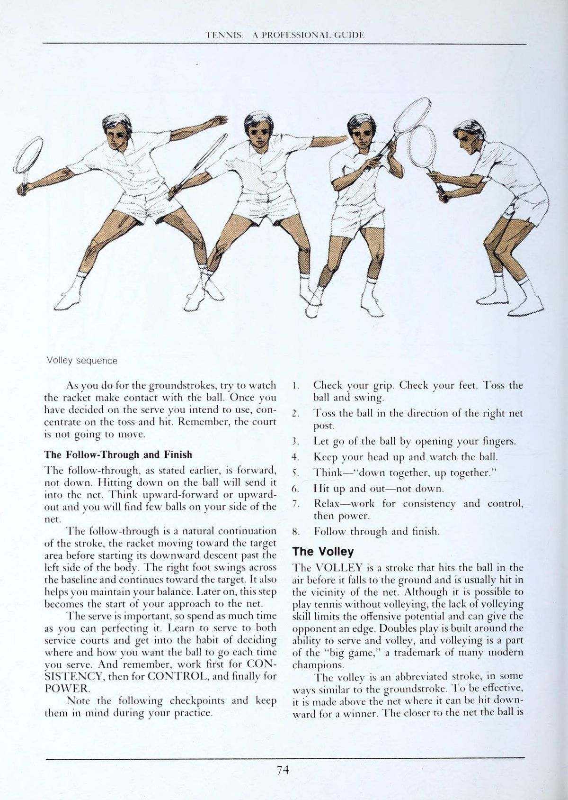
[English: Volley Mechanics: Compact Backswing, Solid Wrist and Dynamic Split-Step Forward]
ở chương trước, các cú đánh cơ bản của trò chơi—giao bóng, các cú công bóng thuận tay và trái tay cũng như các cú vô lê chặn thông thường được mô tả và minh họa. Dù những cú đánh này có giá trị và cần thiết nhưng chúng sẽ không đủ để giúp bạn phản ứng chính xác với tất cả các cú đánh của đối thủ và đánh hiệu quả trong tất cả các tình huống chơi mà bạn có thể gặp phải trong một trận đấu. Có thể nói, bạn sẽ cần thêm những cú đánh và cú đánh, nhiều vũ khí hơn để chơi hiệu quả ở cấp độ cạnh tranh cao hơn. Một số "cú đánh đặc biệt" này được mô tả trong chương này. Hãy thực hiện chúng nhiều như khi bạn thực hiện các nét cơ bản.
Hãy luyện tập để tạo ra những bộ phận này trong kho vũ khí của bạn. Bạn sẽ trở thành một người chơi giỏi hơn khi bạn học chúng. Phần GroundStroke Slice GroundSTROKE có thể là một bổ sung có giá trị cho trò chơi của bạn, một phần bổ sung cho các động tác truyền động thông thường được mô tả trước đó. Bạn có thể sử dụng nó để trả lại các cú giao bóng và duy trì một pha giao bóng, như một cú đánh tiếp cận (approach shot) và để cản trở một tay vợt trên lưới. Bạn có thể Cú lốp bóng (lob) với nó, thả bóng với nó và sử dụng nó để phá vỡ nhịp điệu của một tay vợt đánh bóng lùi nhẹ nhàng.
Rõ ràng, đây là một trong những cú đánh hữu ích nhất trong trò chơi, một cú đánh rất đáng để bạn dành thời gian học hỏi. Cách cầm và thế đứng của một cú cắt giống như cách cầm bóng của bạn, ở cả cú thuận tay (forehand) và cú trái tay (backhand). Tuy nhiên, các cú vung vợt khác nhau, đặc biệt là trong mặt phẳng mà vợt của bạn di chuyển. Đối với một lát vợt, vợt của bạn phải di chuyển từ cao xuống thấp mặc dù đôi khi mặt phẳng đi xuống này rất nhẹ đến mức khó có thể nhận thấy.
Một điểm khác biệt nữa là ở cách thiết lập vợt của bạn. Khi cắt một quả bóng ở dưới mức lưới, bạn sẽ phải "mở" Mặt vợt của mình một chút để bóng nâng đủ cao để qua lưới. Bạn càng mở Mặt vợt và mặt phẳng vung vợt hướng xuống càng rõ ràng thì bạn sẽ càng tạo ra nhiều xoáy xuống cho quả bóng. Bạn có thể học cách điều chỉnh hai biến đó theo ý muốn để thay đổi quỹ đạo và độ xoáy của cú đánh. Tất nhiên bạn cũng sẽ phải điều chỉnh biến số thứ ba luôn có mặt, lực vung vợt của bạn, phù hợp với tình huống hiện tại.
Khi sử dụng lát cắt như một cú đánh tập trung, bạn áp dụng xoáy xuống với một cú đánh liếc xuống. Cú xoáy có thể chỉ là sản phẩm phụ của nỗ lực của bạn nhằm giảm tốc độ cho một quả bóng đang lao tới nhanh. Bạn đánh bóng xiên thay vì trực tiếp, và kết quả là vợt của bạn sẽ ít bật lại hơn. Do đó, những sai sót về thời gian, phán đoán và cách đặt vợt có thể được giảm thiểu.
Nhưng bạn có thể cố tình xoay quả bóng để khiến nó nảy khác với cú đánh của bạn. Sự thay đổi tốc độ này có thể gây rắc rối cho đối thủ của bạn và có thể gây ra kết quả yếu ở các cú đánh tập trung cơ bản và các cú đánh tiếp cận (approach shot). TENNIS: Slice (thuận tay) Khi Trả giao bóng, cú cắt bóng có thể có giá trị, nhưng việc sử dụng nó thường bị hạn chế ở cú trái tay (backhand) và chống lại những quả bóng có độ nảy cao. (Khi giao bóng về phía thuận tay, người chơi gặp chút khó khăn khi nâng vợt trong quá trình vung vợt sau để vung vợt đúng cách ở những quả bóng cao.) Ở cú giao bóng trái tay, không nhiều người chơi có thể kéo vợt về phía sau đủ xa để đánh lái đồng thời cũng nâng vợt thẳng hàng với những quả bóng cao. Vì động tác Vung vợt ra sau (lấy đà) của họ bị hạn chế nên họ có xu hướng cắt bóng nhiều hơn.
Những quả giao bóng về phía trái tay thường được chơi ngày càng nhiều. Bóng bị vợt của họ "kéo" xuống trên đường đi xuống và chuyển tiếp qua điểm tiếp xúc. Để cắt bóng khi Trả giao bóng, hãy nâng vợt của bạn trong quá trình vung vợt về phía sau để bạn có thể bắt đầu cú vung vợt về phía trước cao hơn điểm tiếp xúc dự định. Hãy để quả bóng đang bay lên cao hơn thắt lưng của bạn để nó cao hơn lưới khi chạm bóng. Sau đó, vung vợt theo đường chéo xuống phía dưới vào quả bóng, với Mặt vợt của bạn hướng vào mặt sau của quả bóng chứ không phải phần đáy của nó.
Hai biến số này, đường đi của vợt và cách thiết lập vợt của bạn ( độ nghiêng của vợt), cùng với lượng lực trong cú vung vợt của bạn, phải được điều chỉnh cẩn thận trong mỗi lần trả bóng để cung cấp lượng xoáy và tốc độ thích hợp. Vì khi bạn cắt bóng, bạn không có ý định đánh quá mạnh (độ xoáy và tốc độ loại trừ lẫn nhau; phần lớn cái này dẫn đến cái kia ít hơn), bạn không cần phải xoay vai nhiều khi thực hiện cú vung HƯỚNG DẪN CHUYÊN NGHIỆP. Nói ngắn gọn, chẳng hạn như ý định của bạn từ đường cuối sân (baseline) đến đường giao bóng chẳng hạn - bạn có thể nhận đủ lực từ hành động của khuỷu tay và cánh tay (ở vai) và từ chuyển trọng lượng. Do đó, bạn sẽ không cần một cú swing mạnh với thời gian theo dõi dài. Trên thực tế, bạn có thể phải cố tình rút ngắn thời gian theo dõi để hồi phục nhanh chóng và chuẩn bị cho cú đánh tiếp theo.
Khi bạn thực hành lát cắt, hãy tránh hai lỗi phổ biến. Đừng nâng khuỷu tay của bạn. Điều này sẽ khiến bạn đánh vào dưới quả bóng, tiếp xúc với mặt dưới của nó. Kết quả là bạn hầu như sẽ luôn đánh được một cú "bật lên", một cú đánh cao và nổi. Thứ hai, không thả lỏng tay cầm và cổ tay, để vợt rơi thấp hơn bàn tay. Bức tường này gây ra độ xoáy quá mức và thiếu kiểm soát. Di chuyển vợt của bạn theo mặt phẳng hướng xuống với toàn bộ lực tác động của cánh tay ở vai chứ không phải bằng tác động của cổ tay.
Được sử dụng để thực hiện một cú giao bóng, cú trái tay (backhand) có thể trở thành một cú đánh phòng thủ hiệu quả. Mặc dù nó có thể không ngoạn mục hoặc gây chết người như một cú đánh bóng, nhưng nó có thể là cách tốt nhất để bạn có được tỷ lệ Trả giao bóng tốt và làm giảm Điểm lợi thế (advantage) của người giao bóng bằng cách buộc anh ta hoặc cô ta phải tung một quả bóng thấp. Vì những lý do này, nó thường được sử dụng như một biến thể của cú đánh ngay cả trong các cuộc thi đấu đẳng cấp thế giới, nơi một lần nghỉ giao bóng thường ảnh hưởng đến kết quả của một hiệp đấu. Ở cấp độ chơi thấp hơn, nơi bạn thường phải bẻ giao bóng của đối thủ nhiều hơn những cú đánh ĐẶC BIỆT* Cắt (trái tay) một lần để bù đắp cho việc bạn đã thua ván giao bóng của chính mình, điều đó thậm chí còn hữu ích hơn.
Các biến thể của cú vô lê Trong chương trước, bạn đã được yêu cầu sử dụng một loại cú vô lê đơn giản trong đó bạn đặt vợt của mình tại điểm tiếp xúc dự định và chỉ giữ nó ở đó để Vô-lê chặn. Bạn được yêu cầu Vô-lê chặn và đấm nó, chỉ với một cú vung nhẹ về phía sau và một cú vung ngắn về phía trước. Tất cả những điều này đều là lời khuyên hữu ích, nhưng cú vô lê chặn và cú Vô-lê đấm chỉ là hai trong số nhiều loại cú vô lê có thể thực hiện được để chơi trên lưới hiệu quả. Từ những vị trí nhất định và trong những tình huống chơi nhất định, bạn thường sẽ phải làm nhiều việc hơn là đấm hoặc Vô-lê chặn để thực hiện một cú đánh hiệu quả. Các loại cú volley khác có thể sử dụng là cú volley kéo, cú volley nhanh, cú volley lái (hoặc cú volley xoay) và cú volley thả. Chúng có thể được coi là những cú đánh đặc biệt, những cú đánh bổ sung, được sử dụng cùng với cú vô lê cơ bản được mô tả ở Chương 2.
Cú vô lê thả Cú volley thả là một cú đánh nhẹ (dink) nhàng, "chạm" có nghĩa là thả bóng theo phương thẳng đứng (hoặc gần như vậy) gần lưới và nảy lên với rất ít chuyển động về phía trước. Hãy sử dụng nó như một công cụ hỗ trợ cho những cú vô lê sâu, sắc nét của bạn và bạn sẽ thường có thể gây bất ngờ cho những đối thủ ở sân sau. Chờ đợi một cú sút sâu, họ sẽ không sẵn sàng lao về phía trước. Kết quả là họ sẽ không thể tiếp cận được quả bóng trước khi nó nảy lên lần thứ hai.
Để thực hiện cú vô lê thả bóng, hãy thả lỏng cổ tay và tay cầm của bạn khi tiếp xúc. Hãy để vợt của bạn hơi giật lại khi bóng chạm vào nó. Đồng thời, xoay nhanh cổ tay và cẳng tay theo chiều kim đồng hồ (ở cú thuận tay (forehand)) để tạo xoáy xuống cho bóng. Cổ tay lỏng lẻo sẽ cho phép bạn giảm tốc độ của quả bóng đang tới, và xoáy xuống sẽ làm chậm độ nảy của quả bóng và giảm chuyển động về phía trước của nó.
Cú volley kéo Sử dụng cú volley kéo (được đặt tên như vậy vì vợt được kéo xuống và ngang qua quả bóng) khi bạn muốn truyền một tốc độ vừa phải cho quả bóng với rủi ro tối thiểu. Đánh bóng với một cú đánh hướng xuống, với Mặt vợt của bạn hở nhiều đối với bóng thấp và ít hơn đối với bóng cao. Sự kết hợp giữa cú vung vợt hướng xuống và Mặt vợt mở của bạn sẽ cho phép bạn đánh bóng xiên, không vuông góc, và kết quả là bạn sẽ giảm tốc độ của quả bóng đang đến gần. Bạn có thể sẽ kiểm soát cú đánh này tốt hơn so với khi bạn thực hiện một cú đánh trực tiếp chắc chắn hơn, đặc biệt là với những quả bóng thấp, trong đó vấn đề của bạn là đánh quả bóng đủ nhẹ để giữ cho nó không đi quá đường cuối sân (baseline).
PENNIS: HƯỚNG DẪN CHUYÊN NGHIỆP Cú vô lê thả bóng Khi bạn đang thực hiện một cú đánh bóng cao và bạn muốn cú đánh của mình có tốc độ nhanh hơn so với các cú vô lê kéo, đấm hoặc chặn, hãy sử dụng một cú vô lê SNAP. Đúng như tên gọi, hãy Bật cổ tay để di chuyển Mặt vợt của bạn vào trong quả bóng. Đặt cổ tay của bạn về phía sau trong quá trình vung vợt sau đó giữ cổ tay thẳng hơn khi bạn đánh. Hành động cổ tay của bạn càng nhanh thì bạn sẽ càng tăng thêm tốc độ cho cú đánh của mình.
Siết chặt tay cầm và giữ cổ tay chắc chắn khi va chạm. Và vì tốc độ bóng là mục tiêu của bạn, hãy đánh Cú đánh phẳng; thực hiện một cú đánh vuông góc, chắc chắn hơn là một cú đánh lướt qua của một cú vô lê kéo. Cú vô lê truyền động (hoặc cú vô lê xoay) Cú vô lê truyền động đặc biệt thích hợp khi bạn muốn đánh thật mạnh vào một quả bóng cao. Đúng như tên gọi, bạn có thể vung vợt theo cú vô lê này, giống như cách bạn vung vợt khi thực hiện cú đánh tiếp đất.
Bạn có thể tạo ra Tốc độ đầu vợt chỉ bằng hành động của cánh tay (ở vai) hoặc bằng cách kết hợp hành động của cánh tay với xoay vai. Bởi vì cú swing dài hơn và ý định đánh mạnh của bạn nên cú đánh này có yếu tố rủi ro lớn hơn so với các cú vô lê khác. Để giảm thiểu rủi ro, hãy giữ vợt của bạn chắc chắn. Điều này sẽ loại bỏ chuyển động của cổ tay và kết quả sẽ là một kiểu xoay một mảnh không bị "chảy" ở cổ tay hoặc khuỷu tay của bạn. Làm cho vợt của bạn hoạt động như một phần mở rộng của cánh tay của bạn.
Cú vô lê lái hoặc cú vô lê xoay: để thực hiện cú đánh mạnh mẽ, vận động viên vô lê này thực hiện cú đánh ngược dài hơn và theo dõi lâu hơn so với cú vô lê thông thường. Sự săn chắc ở các cơ ở bàn tay, cổ tay và cẳng tay sẽ ngăn ngừa tình trạng “chung” phát triển trong cú đánh. Kết quả là anh ta có thể đánh mạnh một cách có kiểm soát. Kéo bóng: cổ tay co lên và đặt về phía bóng một cú đánh nhẹ (dink). Kết quả là người vô lê sẽ nâng vợt lên phía trên và phía sau quả bóng. Cổ tay có thể giảm một phần tốc độ khi tiếp cận, sau đó dẫn đầu trong quá trình vung vợt về phía trước để bóng. Cú đánh này thường an toàn hơn so với khi vợt được kéo xuống và ngang qua bóng, đánh vung vợt thẳng vào bóng để đánh thẳng vào đầu. Half volley: vợt được đặt rất thấp và vuông góc với mặt đất. Bóng được tiếp xúc ngay sau khi nảy bằng một cú đánh chắc chắn và có kiểm soát, có lực nâng vừa đủ để đưa bóng qua lưới và đi sâu vào phần sân sau.
TENNIS: HƯỚNG DẪN CHUYÊN NGHIỆP cú vô-lê Thuật ngữ "HALF-VOLLEY", được áp dụng cho cú đánh nhặt bóng khi bóng được đánh ở đường nhảy ngắn, là một cách gọi sai: cú đánh hoàn toàn không phải là một cú vô lê mà là một cú đánh nền (bóng chạm đất trước khi người chơi đánh nó). Vì lý do này, bạn nên thực hiện cú đánh này tương tự như cách bạn đánh một cú đánh nền thông thường. Nhưng vì cú đánh này thường được thực hiện từ vị trí cú volley nên bạn có thể sẽ phải sử dụng cách cầm cú volley của mình.
Bởi vì bạn ít nhất đã chạm tới lưới khi thực hiện cú đánh này, nên cú đánh của bạn sẽ ngắn hơn so với những cú đánh bóng có chiều dài tối đa ở sân sau. Bạn sẽ phải điều chỉnh độ dài của cú đánh, tùy thuộc vào khoảng cách của bạn với lưới và từ điểm ngắm của bạn. Và bạn cũng sẽ phải điều chỉnh cài đặt vợt của mình, đóng vợt nhiều hơn khi đánh từ gần lưới và mở vợt khi đánh từ xa hơn.
Giữ chắc cổ tay của bạn và để cho khớp vai và khuỷu tay của bạn có ít hoặc không bị "chùng". Cong đầu gối của bạn để Hạ vợt sau lưng (racquet drop) xuống; không thay đổi góc giữa cổ tay, cẳng tay và tay cầm vợt để bạn có thể kiểm soát vợt tối đa. Điều chỉnh mặt phẳng của mỗi cú xoay tùy theo tình hình chiến lược. Khi bạn đánh từ đường giao bóng và ý định đánh sâu, bạn có thể hơi khép Mặt vợt lại và vung vợt trên một mặt phẳng, song song với mặt đất. Khi bạn muốn nâng bóng lên nhiều hơn mức cú xoay đó cho phép, hãy mở Mặt vợt của bạn ra và vung vợt theo mặt phẳng hướng lên trên. Thực hiện những điều chỉnh này bằng cổ tay và cẳng tay của bạn. Để làm điều đó một cách chính xác, bạn sẽ phải xem xét các góc lệch có thể có của bóng khỏi vợt trong mỗi cú vung.
Nhiều người chơi lưới giỏi tin rằng cú đánh này sẽ dễ dàng hơn 1 giây khi họ đánh bóng nhanh sau khi nảy, khi nó chỉ nhô lên khỏi mặt đất ba hoặc bốn inch, thay vì khi bóng được phép nảy lên ngang tầm ống chân. Hãy thử phương pháp này. Nó cũng có thể hiệu quả nhất với bạn. Cú Lob LOB là một cú đánh cao, thường được thực hiện như một cú đánh tiếp đất. Nó được sử dụng thường xuyên nhất để chống lại một tay vợt lưới đối phương như một cú đánh phòng thủ khi ý định của người Cú lốp bóng (lob) là thực hiện một cú đánh lỗi hoặc một cú đánh yếu (sau đó người Cú lốp bóng (lob) hy vọng giành chiến thắng bằng những cú đánh mạnh mẽ hoặc đơn giản là để kéo dài pha bóng). Trong trường hợp sau này, chúng ta có thể nói rằng người chơi Cú lốp bóng (lob) để thoát khỏi rắc rối.
Đôi khi một cú lốp bóng (lob) có mục đích bay hoàn toàn qua người chơi trên lưới và do đó bật sâu xuống sân để tìm người chiến thắng. Khi nó được sử dụng theo cách này, nó được gọi là một cú lốp bóng (lob) tấn công. Các cú lốp bóng (lob) phòng thủ được đánh không xoáy (phẳng) hoặc có xoáy xuống. Các cú lốp bóng (lob) tấn công thường được thực hiện bằng Xoáy lên. Đối với cả hai kiểu Cú lốp bóng (lob), bạn có thể sử dụng cú đánh tương tự như cú đánh bóng chạm đất thông thường của mình. Bạn có thể sử dụng cùng cách cầm, thế đứng, cú xoay chuẩn bị và điểm tiếp xúc. Nhưng vì ý định của bạn là đánh bóng lên cao—cao hơn so với một cú đánh nền thông thường—bạn sẽ phải vung vợt theo mặt phẳng hướng lên trên nhiều hơn bình thường. Bạn có thể cũng sẽ phải nghiêng Mặt vợt về phía sau (mở nó) nhiều hơn so với khi đánh công. Sự kết hợp giữa mặt phẳng hướng lên và Mặt vợt mở này sẽ tạo ra lực nâng, quỹ đạo hướng lên khiến người đánh lưới phải rút lui vội vàng.
Một điểm khác biệt lớn giữa cú đẩy bóng và cú lốp của bạn là lượng lực bạn tác dụng khi vung vợt. Cú xoay bóng nên ít lực hơn và được kiểm soát nhiều hơn; nó thậm chí có thể chỉ đơn giản là một cú đẩy bóng đều đặn hơn là một cú xoay người. Để có được đường bay lên trên mềm mại như mong muốn trên cú lốp bóng (lob) của mình, bạn có thể phải sử dụng một số chuyển động tinh tế ở cổ tay và cẳng tay ngay trước khi vợt của bạn gặp bóng. Ở cú thuận tay (forehand), bạn có thể phải xoay cẳng tay theo chiều kim đồng hồ; ở phía trái tay, ngược chiều kim đồng hồ. Kết quả của những hành động xoay này là bóng có thể xoáy xuống. Cú xoáy đơn giản là sản phẩm phụ của cơ chế cú đánh; không cố ý áp dụng nó để làm ảnh hưởng đến đường bay của quả bóng hoặc độ nảy của nó.
Những kỹ thuật Cú lốp bóng (lob) này chỉ áp dụng khi bạn có thời gian để di chuyển đúng vị trí cho chuyển động lái bình thường của mình. Nhưng không phải lúc nào bạn cũng có nhiều thời gian như vậy. Bạn thường sẽ phải sử dụng chuyển động ngắn hơn nhiều để thực hiện cú đánh với quả bóng đang đến gần. Chuyển động ngắn, gọn này có thể giống với cú đánh cú volley của bạn; đó là một cú đấm ngắn, một đòn chặn hoặc một cú đẩy, với rất ít hoặc không có động tác của cổ tay. Để đánh bóng, bạn sẽ phải di chuyển vợt của mình lên trên quả bóng hoặc xoay cổ tay và cẳng tay để mở Mặt vợt khi tiếp xúc. Với hành động sau này, bạn gần như chắc chắn sẽ tạo ra xoáy xuống cho quả bóng.
Để phân biệt giữa hai loại lốp này, bạn có thể coi loại đầu tiên là "lốp dẫn động". Chuyển động giống như ổ đĩa của bạn. Cú thứ hai có thể được gọi là "công việc vô lê" vì bạn đánh nó nhiều như bạn thực hiện cú vô lê vào lưới. Trong mỗi trường hợp, cú lốp bóng (lob) hoặc cú lốp bóng (lob) bổng, yếu tố quan trọng trong cú đánh là "chạm" hoặc "cảm giác" cần thiết để Cú đánh nhẹ (dink) nhàng và chính xác. Điều này không dễ học hay dạy, nhưng bạn sẽ cải thiện nó bằng cách thực hành.
cú lốp bóng (lob) Xoáy lên tấn công được đề cập trước đó giống như một cú công bóng xoáy mạnh, giật cao. Hành trình cũng tương tự như hành trình lái xe của bạn. Nhưng Cú đập trên đầu (smash) từ trên cao một lần nữa, để có được quỹ đạo cao như mong muốn, bạn sẽ phải vung vợt theo một mặt phẳng hướng lên rõ rệt đồng thời mở Mặt vợt nhiều hơn so với khi đánh bóng. Đó là sự kết hợp thích hợp giữa mặt phẳng vung và thiết lập vợt tạo ra cả đường bay hướng lên và Xoáy lên làm cho bóng cong mạnh xuống sau khi lướt qua người chơi trên lưới.
Cú đập từ trên cao Cú đập từ trên đầu được sử dụng để trả lại một cú lốp bóng (lob), trước hoặc sau khi cú lốp bóng (lob) nảy lên. Nó có thể được so sánh tốt nhất với cú giao Cú đánh phẳng: cách cầm, thế đứng và chuyển động đánh của bạn là tương tự nhau. Tuy nhiên, khi bạn di chuyển vào vị trí để cú đập bóng smash, bạn phải chuẩn bị vung vợt theo cách khác. Khi cú đập bóng smash, không vung vợt xuống quá đầu gối trước khi nâng vợt ra phía sau. Thay vào đó, hãy đưa vợt về ngang tầm thắt lưng, hoặc thậm chí có thể cao hơn. Những cú vung vợt về sau ngắn hơn, trực tiếp hơn này sẽ giúp bạn kiểm soát vợt nhiều hơn so với những cú vung vợt lùi tự do trong các cú giao bóng của bạn.
Khi bạn nhìn thấy đối thủ Cú lốp bóng (lob), hãy quay sang một bên và giơ vợt ra phía sau bạn. Mang vợt ở tư thế "nghiêng", với khuỷu tay nâng cao ngang vai và tay cầm đủ chắc để giữ vợt ở phía sau bạn, không treo lủng lẳng xuống phía sau lưng. Di chuyển vợt của bạn vào vị trí nghiêng khi bạn di chuyển vào vị trí để đánh. Nếu cú lốp bóng (lob) ngắn và bạn phải tiến về phía trước để đánh, hãy chạy hoặc bỏ qua theo hướng đó. Bỏ qua có thể là đủ nếu bạn chỉ phải di chuyển một hoặc hai bước. Nhưng nếu bạn phải di chuyển nhiều hơn để có thể thực hiện cú lốp bóng (lob) chuẩn xác, hãy chạy về phía trước. Tại đây, hãy tính thời gian cho các bước của bạn và điều chỉnh số lượng cũng như kích thước của chúng sao cho bàn chân trái của bạn sẽ ở phía trước khi bạn vung gậy. Theo nghĩa này, thế đứng của bạn sẽ giống với thế đứng giao bóng của bạn.
Để thực hiện một cú lốp bóng (lob) rất sâu, bạn có thể phải rẽ sang phải và chạy sang một bên. Ở đây, bạn cũng sẽ phải điều chỉnh số lượng và kích thước các bước của mình để có thể nghiêng sang một bên hợp lý và sẵn sàng xoay người khi bóng ở trong tầm tay. Bắt đầu chuyển động đánh của bạn từ vị trí nghiêng. Nhanh chóng nhúng vợt ra sau lưng rồi đưa vợt lên mạnh vào bóng. Để kiểm soát tốt nhất, không được phép "chung" giữa chuyển động của cánh tay ở vai với khuỷu tay và cổ tay của bạn. Thay vào đó, hãy giữ vợt thật chắc và căng nhẹ cánh tay và cơ vai để kiểm soát cú đánh của bạn.
Nhưng không phải lúc nào bạn cũng có đủ khả năng để lùi lại và đặt mình ở vị trí thuận lợi dưới quả bóng để đập nó. Thay vào đó, bạn có thể phải nhảy về phía đường cuối sân để chạm được một quả bóng mà lẽ ra nằm ngoài tầm với của bạn. Cú nhảy này yêu cầu điều chỉnh một chút về phân bổ trọng lượng và thời gian. Khi bạn di chuyển trở lại để đạt được cú lốp bóng (lob) sâu, bạn có thể chạy sang một bên hoặc bỏ qua hướng đó. Trong wa TENNIS: HƯỚNG DẪN CHUYÊN NGHIỆP Cú đập từ trên cao bằng cú đá kéo, căn thời gian di chuyển sao cho bạn đặt chân phải xuống kịp lúc để nhảy khi bóng đến trong tầm tay.
Nhảy lên và hơi lùi lại, cất cánh bằng chân phải đồng thời vung chân trái ra sau để có thể tiếp đất trên đó. Tính thời gian di chuyển, nhảy và xoay người sao cho bạn tiếp xúc khi đang ở trên không, trước khi tiếp đất bằng chân trái. Thùy rất cao rất khó để đánh giá và thời gian. Chúng thường dễ chơi hơn sau khi nảy lên. Và vì một cú lốp bóng (lob) rất cao được thả xuống gần như theo phương thẳng đứng nên nó sẽ nảy gần như theo phương thẳng đứng.
Khi đó, bạn sẽ không phải sao lưu xa hơn nhiều so với thời điểm mà bạn có thể chơi nó "nhanh chóng". Vì những lý do này bạn nên để bóng thùy cao nảy lên. Cú đánh Dropshot DROPSHOT là một cú đánh "chạm" tinh tế đòi hỏi phải căn thời gian chính xác và thực hiện vợt khéo léo. Nó được sử dụng bởi một vận động viên ném biên để chống lại một vận động viên ném biên đang mất vị trí, mất Trọng tâm cơ thể hoặc đặc biệt là bước chân chậm. Mục đích làm cho quả bóng rơi xuống gần như thẳng đứng gần lưới và đánh với một lực rất nhỏ đến mức quả bóng sẽ có rất ít chuyển động về phía trước sau khi nảy lên. Kết quả là, đối phương sẽ không thể tiếp cận và thực hiện cú đánh bóng trước khi nó nảy hai lần trên phần sân của mình.
Cú đánh này cũng có thể được xây dựng dựa trên kiểu chạm đất của bạn. Sử dụng cách cầm, thế đứng và vung vợt giống nhau tôi bạn làm trên ổ đĩa của bạn. Bắt đầu cú swing về phía trước của bạn cũng tương tự. Nhưng ở đây bạn sẽ phải giảm tốc độ vung vợt ngay trước khi tiếp xúc để đánh bóng nhẹ nhàng. Bạn cũng có thể phải mở Mặt vợt nhanh chóng khi đánh để tạo xoáy xuống cho bóng. Độ xoáy sẽ khiến bóng nảy về phía trục thẳng đứng nhiều hơn bình thường. Kết quả là đối thủ của bạn sẽ phải chạy xa hơn để tiếp cận quả bóng trước khi nó nảy lên lần thứ hai. Bởi vì cú vung về phía trước chậm hơn nên bạn sẽ không cần phải thực hiện nhiều, nếu có. Bạn sẽ cần phải mở rộng cánh tay và vợt của mình dọc theo đường đánh (đường mục tiêu của bạn) chỉ đủ xa để điều khiển bóng một cách tinh tế về phía điểm ngắm của bạn.
Bạn có thể sử dụng cú đánh này tốt nhất khi bạn ở gần một trong những nơi có thể gọi là "góc lưới" (những phần sân đối phương gần lưới và đường biên) và khi đối thủ của bạn không ở gần nó. Nhắm vào góc cụ thể đó, Cú đánh nhẹ (dink) nhàng nhất có thể trong khi thả bóng càng gần lưới càng tốt. Và ngụy trang cú đánh của bạn tốt nhất có thể để không làm lộ ý đồ của bạn. Cú thả bóng phải khiến đối thủ bất ngờ mới có hiệu quả.
Hoàn trả giao bóng TRẢ LẠI DỊCH VỤ là cú đánh đầu tiên của bạn trong chuỗi cú đánh thả bóng: việc chuẩn bị và vung vợt sau cũng giống như động tác đánh nền thông thường. Ngay trước khi tiếp xúc, Mặt vợt mở ra và cổ tay thả lỏng. Vì vậy, bóng được vuốt nhẹ lên trên để chết trên lưới. Mặt vợt mở tạo ra xoáy xuống để giữ bóng ở gần lưới Cú thả bóng thực hiện kém: bóng được đánh lướt qua phần trên của lưới, nghĩa là quỹ đạo của nó sẽ quá phẳng, đưa bóng đi quá xa phần sân đối phương.
©) +4'. ' a anh r ' cú bỏ nhỏ (drop shot) (drop shot) được thực hiện tốt: bóng được đánh lên, do đó nó rơi xuống khi qua lưới, cho phép xoáy xuống giữ bóng gần lưới. TENNIS: HƯỚNG DẪN CHUYÊN NGHIỆP về số điểm bạn thi đấu trong trận đánh đơn và 1/4 số điểm trong trận đấu đôi. Có điều gì có thể quan trọng hơn trừ khi bản thân nó là giao bóng? Nhưng khi giao bóng bạn có quyền chủ động, bạn có thể quyết định cách bắt đầu trận đấu. Khi trả lại giao bóng, bạn phải sẵn sàng đáp ứng bất kỳ tùy chọn nào mà người giao bóng chọn.
Cần có nhiều tính linh hoạt về kỹ thuật hơn cũng như nhiều khả năng thích ứng và tìm cách chống lại bất cứ điều gì được Giao bóng / Cú giao bóng cho bạn. Có những cú giao bóng cứng, phẳng, có những đường biên cao đối với Cú trái tay (backhand) tay của bạn và có những góc cắt đối với cú thuận tay (forehand) của bạn. Bạn không thể xử lý chúng theo cùng một cách. Trước hết, chúng ta hãy thực tế. Có nhiều cuộc thảo luận về việc cú trả bóng phải sâu, khó và mạnh mẽ như thế nào với tất cả sức nặng của bạn trong đó. Điều đó thật đáng yêu đối với một người đang viết sách. Anh ấy hoặc cô ấy có rất nhiều thời gian. Trong thực tế chơi thực sự có rất ít thời gian.
Một quả bóng bay với tốc độ 60 dặm một giờ sẽ có vận tốc 88 feet mỗi giây. Người giao bóng cách bạn chưa đầy 80 feet và nhiều cú giao bóng mạnh có tốc độ trên 60 dặm một giờ. Ngoài ra, bạn sẽ phải mất một phần thời gian để phát hiện ra rằng nó đang đến phía thuận tay hoặc trái tay của bạn. Vì vậy, nhiều nhất bạn có nửa giây để phản ứng. Bạn có thể làm được bao nhiêu, bạn có thể di chuyển đôi chân của mình bao nhiêu, bạn có thể vung bao nhiêu - trong nửa giây hoặc ít hơn? Nếu bạn rất nhanh nhẹn, như Jimmy Connors, bạn có thể làm được nhiều hơn hầu hết mọi người — và chẳng phải anh ấy có khả năng Trả giao bóng tuyệt vời sao? Nhưng hầu hết chúng ta đều có ít tài sản hơn và phải sử dụng những tài sản vật chất hạn chế hơn. Vì vậy, chúng ta hãy phân tích vấn đề với nhận thức rõ ràng về tầm quan trọng của Nhịp điệu trận đấu (mọi việc diễn ra nhanh như thế nào) và tình huống phòng thủ mà bạn đang gặp phải.
Nguyên tắc đầu tiên. Hãy đứng yên, đừng lùi bước. Nhiều tay vợt đánh đơn và tất cả các tay vợt đánh đôi giỏi đều theo sát cú giao bóng của họ để đưa bóng vào lưới. Trong cả hai trường hợp, điều quan trọng nhất mà người nhận phải cân nhắc là lấy lại bóng trước khi người giao bóng có thể tiến vào nơi họ có thể thực hiện cú vô lê của mình. Đứng lùi xa có nghĩa là bóng sẽ di chuyển xa hơn về phía bạn và lùi xa hơn, giúp người giao bóng có thêm một hoặc hai bước để đưa họ vào vị trí chỉ huy để thực hiện cú vô lê. Trong đánh đôi, nếu bạn đứng xa, cú trả bóng của bạn sẽ không vượt qua được đối tác của người giao bóng trên lưới. Người chơi này sẽ cắt ngang vì phải mất quá nhiều thời gian để vượt qua anh ta hoặc cô ta. Vì vậy, bạn phải đứng vững, dù điều đó có thúc đẩy bạn hay không. Trong đánh đơn, ngoại lệ duy nhất là khi đối thủ của bạn không theo kịp. Khi đó, bạn có thể dành thời gian và chơi có chiều sâu tốt từ xa hơn.
"đứng trong" nghĩa là gì? Một nguyên tắc chung là đứng sao cho ngón chân chạm vào đường biên cuối sân và cố gắng bước về phía trước để chơi bóng. Điều này có thể thay đổi với các cú giao bóng khác nhau, nhưng hiếm khi thay đổi ngược lại. Nguyên tắc thứ hai. Luôn di chuyển vào bóng. Giao và nhận có thể được ví như một cuộc thi xô đẩy. Khi tôi giao bóng, tôi hy vọng sẽ đẩy bạn bằng gót chân để không trọng lượng nào của bạn lọt vào cú đánh của bạn, bóng của bạn bay trở lại một cách yếu ớt và tôi tiến hành tận dụng Điểm lợi thế (advantage). Công việc của bạn với tư cách là người nhận bóng là đẩy lùi, đưa bóng càng nhiều càng tốt và trả bóng chắc chắn nhất có thể. Việc tăng cân của bạn là điều cần thiết. Vì vậy, bạn luôn bước vào quả bóng nếu con người có thể. Nếu bạn không thể, cú trả về của bạn sẽ nổi và vật nổi duy nhất tốt là một cú lốp bóng (lob).
Để áp dụng chính sách này vào thực tế, bạn phải phát triển một số thói quen di chuyển bằng chân nhất định, đặc biệt là với những quả bóng ở gần bạn. Để thuận tay, luôn bước vào bằng chân trái, không bao giờ lùi bằng chân phải. Đối với Cú trái tay (backhand) tay, luôn bước vào bằng chân phải. Khi bóng ở bên cạnh nhiều hơn, hãy cố gắng di chuyển sang một bên và theo đường chéo về phía trước, không bao giờ sang ngang một góc vuông hoặc lùi lại một chút. Nếu bạn làm điều này, cú đánh của bạn sẽ xảy ra khi trọng lượng của bạn di chuyển về phía trước và nhìn chung sẽ vững chắc hơn nhiều. Điều đó cũng có nghĩa là bạn sẽ chơi bóng bên trong đường cuối sân của mình, đạt được cú đánh sớm được nhấn mạnh theo nguyên tắc đầu tiên. Hãy quan sát Jimmy Connors — anh ấy dồn hết sức lực của mình vào mỗi lần trả bóng.
Điều này một lần nữa đặt ra câu hỏi về Nhịp điệu trận đấu. Làm thế nào bạn có thể đủ nhanh để thực hiện những cú giao bóng sắc bén một cách nhanh chóng và quyết liệt? Nguyên tắc thứ ba. Học cách chơi với động tác Vung vợt ra sau (lấy đà) gần như bằng không. Những cú vung vợt về phía sau khá hay (đặc biệt là những cú xoay tròn đi lên, lùi, xuống, rồi tiến về phía trước) cần có thời gian. Bạn không có thời gian. Bất kỳ một cú swing lớn nào cũng là điều không thể. Mặt khác, bạn có thời gian để đưa vợt sang một bên và xoay vai một chút. Nó giống như việc bắt volley sau khi nó nảy lên thay vì trước khi nó nảy lên.
Nếu bạn làm điều này và cũng di chuyển vào trong quả bóng, nó sẽ bật trở lại rất mạnh, giống như một cú vô lê chắc chắn. Có lẽ nó được mô tả tốt nhất bằng cụm từ "chặn và theo dõi". Một cú bắt volley tốt (nhiều hơn một cú vô lê) là điều đáng mong đợi và thậm chí còn tạo thêm sức nặng cho quả bóng. Nhưng điểm quan trọng là đây là điều bạn CÓ THỂ làm trong khoảng thời gian cực ngắn được cho phép bởi một cú giao bóng có tốc độ. Nó là thực tế.
Nguyên tắc thứ ba này cần được nhấn mạnh, vì nếu không có nó, bạn không thể đủ nhanh. Nếu bạn lùi lại quá xa hoặc lùi lại để có thêm thời gian, bạn sẽ không thể đạt được sự quay trở lại nhanh chóng và chắc chắn. Khi huấn luyện một đội bóng ở trường đại học trong 44 năm, tôi nhận thấy khuyết Điểm quan trọng (big point) nhất ở hầu hết sinh viên năm nhất là xoay người quá nhiều. Với một cú xoay người lớn, họ đã có thể đạt đến một trình độ chơi nhất định. Khi tầm cỡ của đối thủ vượt quá một Nhịp điệu trận đấu nhất định, họ sẽ gặp khó khăn, đặc biệt là ở những trận đánh đôi tốt, nhưng cũng chống lại một kẻ tấn công lưới trong đánh đơn.
Jimmy Connors, có lẽ là người có cú Trả giao bóng tốt nhất trong quần vợt hiện nay, tấn công cú Trả giao bóng trái tay bằng cách di chuyển jn Bjorn Borg, đánh cú Trả giao bóng thuận tay theo tư thế mở đã được cấp bằng sáng chế của anh ấy (Lưu ý động tác Xoay thân mình trên quá mức.) TENNIS: HƯỚNG DẪN CHUYÊN NGHIỆP Người nhận có khoảng cách ít hơn để che để tiếp cận bóng nếu anh ta hoặc cô ta bước /n Nhiều người đã được dạy cách vung vợt về phía sau đầy đủ và rộng rãi cho các cú phát bóng cơ bản, và sử dụng nó một cách tự nhiên để Trả giao bóng. Có lẽ giáo viên nên suy nghĩ về điều này và đánh giá những gì họ dạy không phải bằng việc liệu nó có hiệu quả với người mới bắt đầu và người ở trình độ trung cấp hay không, mà là liệu nó có hiệu quả khi chơi ở trình độ nâng cao hay không.
Cú swing lớn sẽ không. Hơn nữa, nếu người chơi được dạy các động tác vung vợt về phía sau ngắn, với ý tưởng là bạn không "vung vợt lùi", bạn chỉ chuẩn bị vợt sẵn sàng để chơi, sau đó vung vợt về phía trước, sau này rất dễ nói với họ rằng, "Khi bạn có thời gian, ở đường cuối sân, tại sao bạn không vung vợt thêm một chút nữa?" Rất dễ dàng để mở rộng một cú vung vợt nhỏ. Rất khó để "từ bỏ" hoặc cắt giảm một cú swing lớn sau khi nó đã được luyện tập theo thời gian. (Tôi biết từ kinh nghiệm cay đắng với tư cách là một huấn luyện viên!) Hãy thử thực hiện các mẹo cụ thể sau đây để cải thiện khả năng Trả giao bóng của bạn.
(1) Hãy sẵn sàng di chuyển. Khả năng di chuyển nhanh chóng của bạn phụ thuộc một phần vào việc bạn chuẩn bị di chuyển tốt như thế nào. Nếu ở Tư thế sẵn sàng, bạn thường đứng bằng chân, đầu gối thẳng và trọng lượng dồn vào gót chân, hãy cố gắng khắc phục những lỗi này. Cong đầu gối của bạn và chuyển trọng lượng của bạn về phía trước một chút. Hãy tạo cho mình cảm giác nhẹ nhàng và bồng bềnh. Hãy sẵn sàng chuyển động ngay khi bạn xác định được hướng giao bóng của đối thủ.
Một cách hay để có được cảm giác về Tư thế sẵn sàng thích hợp là nhảy vào tư thế đó như hầu hết những người chơi giỏi đều làm. Khi đối thủ của bạn Tung bóng để giao bóng, hãy nhảy lên một chút. Từ bước nhảy của bạn, hãy tiếp đất ở Tư thế sẵn sàng, đó là lý do tại sao điều này được gọi là "bước nhảy sẵn sàng" —giống như vợt của đối thủ gặp bóng. Từ Tư thế sẵn sàng, di chuyển để Vô-lê chặn đang tới. (2) Nhìn vào quả bóng.
Nhưng bạn không thể di chuyển đúng cách cho đến khi bạn xác định được vị trí bóng được giao. Và bạn càng sớm thấy nó đi đâu thì bạn càng có thể di chuyển sớm hơn. Do đó, sẽ có lợi cho bạn nếu học cách nhìn bóng nhanh chóng. Khi bạn thực hiện bước nhảy sẵn sàng, hãy tập trung sự chú ý vào quả bóng. Nhìn lên để xem nó khi đối thủ của bạn tung và khi họ vung nó. Kiểm tra xem bạn không nhìn vào con số tổng thể của người giao bóng rồi đợi bóng ra khỏi nền đó như nhiều người chơi thiếu kinh nghiệm nhầm lẫn. Tập trung vào quả bóng. Hãy để cơ chế khởi động nhanh chóng mang tính ngẫu nhiên, tự động theo nghĩa nào đó và không bị tiềm thức của bạn kiểm soát.
(3) Điều chỉnh độ bám của bạn. Bên cạnh việc nhìn bóng nhanh, đứng đúng và bắt đầu nhanh, bạn thường muốn di chuyển vợt của mình càng nhanh càng tốt. Để làm được điều này, bạn có thể phải điều chỉnh độ bám của mình. Nếu bạn có thể quản lý cách cầm vợt không thay đổi, một kiểu cầm mà bạn có thể sử dụng cho cả thuận tay và trái tay, thì tốt; bạn sẽ không phải lo lắng về việc có thời gian để điều chỉnh cách cầm vợt của mình trong khi thực hiện động tác vung vợt lùi. Nhưng nếu bạn cảm thấy mình phải cầm vợt khác nhau cho các cú thuận tay (forehand) và trái tay, hãy thử nghiệm để xem bạn thực hiện sự thay đổi nào nhanh hơn: từ thuận tay sang trái tay hoặc từ trái tay sang thuận tay. Trong Tư thế sẵn sàng, hãy sử dụng tay cầm cho phép bạn thực hiện thay đổi nhanh hơn. Dù quyết định của bạn là gì, hãy đặt tay trái của bạn vào cổ vợt và sử dụng nó để di chuyển vợt trong quá trình vung vợt về phía sau.
) Rút ngắn cú đánh của bạn. Khi ở Tư thế sẵn sàng, hãy co khuỷu tay sang hai bên và uốn cong cánh tay ở khuỷu tay để đưa tay và vợt đến gần cơ thể hơn. Với những điều chỉnh này, bạn sẽ có thể thực hiện một cú xoay có bán kính ngắn. Khi đó, bạn sẽ có ít quán tính hơn của cánh tay và vợt để vượt qua và kết quả là bạn có thể vung vợt nhanh hơn so với khi cánh tay của bạn mở rộng và vợt ở xa cơ thể bạn hơn.
Chỉ sau một chút luyện tập về cách quan sát bóng, thực hiện cú nhảy sẵn sàng và sử dụng cú xoay có bán kính ngắn, bạn có thể sẽ phản ứng và di chuyển nhanh hơn. Do đó, việc hoàn trả giao bóng của bạn có thể sẽ hiệu quả hơn. Nguyên tắc thứ tư. Trả giao bóng Đánh chéo sân (cross-court). Bạn đang bị áp lực. Bạn đang vội vã. Rất có thể bạn sẽ có một chút không chính xác. Vì vậy, hãy đặt cho mình mục tiêu lớn nhất ở phần thấp nhất của lưới. Khả năng xảy ra lỗi khi chơi Đánh chéo sân (cross-court) ít hơn nhiều so với việc chơi thẳng. Bạn cũng có thể giữ bóng thấp hơn máy đẩy lưới. Hơn nữa, cho dù người giao bóng đến lưới hay đứng lại, một cú giao bóng chéo sẽ khiến người đó ít có cơ hội đánh bóng xa bạn hơn. Ngược lại, nếu bạn đánh thẳng, đối thủ của bạn có thể hướng cú đánh thứ hai của họ (cú vô lê hoặc cú đánh nền) ra xa bạn một cách rõ ràng. Việc trả Giao bóng phẳng (flat serve) chỉ nên được sử dụng nếu cú giao bóng quá bình thường đến mức bạn nghĩ rằng mình có thể thực hiện một cú đánh cưỡng bức hoặc có thể giành chiến thắng. Cú đánh chéo sân (cross-court) là cú đánh khiến đối thủ của bạn khó tận dụng Điểm lợi thế (advantage) là người giao bóng nhất và là cú đánh gây ít áp lực nhất cho bạn khi bạn ở thế phòng thủ và vội vàng.
Nguyên tắc thứ năm. Hãy linh hoạt. Dan Magill (huấn luyện viên xuất sắc của Georgia) đã từng đưa ra nhận xét đáng chú ý về việc Trả giao bóng. Anh ấy nói, "Bạn có ba lựa chọn: lùi lại và tránh xa, di chuyển để chặn và chip, hoặc Cú lốp bóng (lob)." Một số cú giao bóng, chẳng hạn như những cú giao Cú đánh phẳng, có thể bị chặn và chọc ngược ngay vào chân của người đẩy lưới. Những cú giao bóng khác, chẳng hạn như những cú đánh vòng cung cao được tính toán để nảy cao về phía trái tay của bạn, được xử lý tốt nhất bằng cách áp sát để thực hiện chúng sớm, trước khi chúng đạt mức cao khó chịu. Cú Trả giao bóng Đánh chéo sân (cross-court) sẽ hiệu quả hơn vì nó đi qua lưới ở phần thấp nhất (giữa) và tận dụng đường chéo dài của sân, thêm gần 5 feet sân để đánh TENNIS: HƯỚNG DẪN CHUYÊN NGHIỆP và trước khi người lao vào lưới bắt đầu. Một số cú giao bóng ở giữa và nảy thấp hợp lý nhưng không phải là đạn đại bác có thể bị xử lý với những kết quả tàn khốc bằng cách đưa chúng lên cao và chơi một cú đánh Xoáy lên cứng.
Tính linh hoạt như vậy không hề dễ dàng. Để thực hiện một quả giao bóng đang đi lên và đánh bằng Xoáy lên đòi hỏi một kỹ thuật hơi đặc biệt: Mặt vợt phải đóng hơn bình thường, bởi vì quả bóng đang lên sẽ cố gắng bay lên cao khỏi vợt của bạn. Bạn phải che nó lại một chút. Lấy bóng đủ sớm để nó không ở độ cao một cách khó chịu cho một cú đánh như vậy có nghĩa là bạn phải hoàn thiện khá tốt thủ thuật Vung vợt ra sau (lấy đà) số 0. Mặt khác, nếu bạn thực hiện kỹ năng này rất nhanh, bạn có thể tạo ra những cú trả bóng Xoáy lên mạnh mẽ từ hầu hết các cú giao bóng. Don Budge đã từng làm điều này, thuận tay và trái tay, với kết quả cực kỳ đáng sợ. Connors làm điều đó ngày hôm nay, và giống như Budge, dường như luôn là kẻ gây hấn bất kể ai đang Giao bóng / Cú giao bóng.
Đứt bóng là một cách rất hiệu quả để trả lại những cú giao bóng xoắn có xu hướng nhảy cao về phía trái tay của bạn. Ở đây một lần nữa sự vắng mặt của động tác Vung vợt ra sau (lấy đà) là điều cần thiết. Bạn không cần thu vợt lại nhiều mà chỉ nhấc nó sang một bên, phía trên quả bóng, để bạn có thể chặt xuống khi di chuyển trọng lượng của mình vào cú đánh. Việc Cú lốp bóng (lob) với tay vợt trên lưới trong nội dung đánh đôi là rất quan trọng. Nếu bạn không làm điều này thỉnh thoảng khi bạn Trả giao bóng, đối tác của người giao bóng có thể tự do áp sát, bắt lưới can thiệp (poaching) và nói chung là gây rắc rối. Bạn phải giữ anh ấy hoặc cô ấy trung thực. Bí quyết là hãy chuẩn bị như thể bạn định chip, sau đó ngay lập tức cuộn vợt của bạn dưới quả bóng để bật nó lên một cách có kiểm soát mà không báo trước cho đối thủ. Điều quan trọng nữa là phải áp sát càng nhiều càng tốt để lấy bóng sớm, sao cho nó bay qua đầu tay vợt lưới trước khi anh ta hoặc cô ta có thời gian lùi lại để thực hiện Cú đập trên đầu (smash) bóng.
Một người chơi thực sự linh hoạt cũng nên đặt mục tiêu trở nên thành thạo trong việc sử dụng tư thế mở cho cú thuận tay (forehand). Vì thời gian rảnh của bạn rất ngắn nên có một điều tuyệt đối phải làm: đưa đầu vợt vào bóng. Nếu bạn không làm điều này thì tất cả những điều khác đều mang tính học thuật. Cánh tay đánh của bạn được treo trên chân phải của bạn. Nếu, khi bóng đến tay bạn, bạn bước tới bằng chân trái, bạn sẽ không đưa vợt đến gần bóng hơn. Nếu bóng đến nhanh, bạn chỉ có thời gian cho một bước: bước này phải bằng chân phải để bạn có thể tiếp cận được. Đây là lý do tại sao trên thực tế tất cả những người chơi dẫn đầu đều sử dụng thế đứng cởi mở: đó là vì họ phải làm vậy.
Nếu quần vợt giống như chơi gôn, một trò chơi trong đó bóng nằm yên, cho phép bạn luôn muốn xử lý bóng và thực hiện cú đánh của mình, thì chắc chắn mọi người sẽ sử dụng thế đứng khép kín và cú xoay người đầy đủ hơn nhiều so với lời khuyên ở đây. Nhưng trong chơi gôn, không có Nhịp điệu trận đấu nào cả, trong khi trong quần vợt, Nhịp điệu trận đấu chi phối hoặc sửa đổi nhiều quyết định của chúng ta. Đã có những tranh luận gay gắt về thế trận mở và đóng, nhưng Nhịp điệu trận đấu giao bóng thuận tay sẽ quyết định vấn đề vượt quá mọi tranh chấp. Đó là lý do tại sao tất cả những người chơi giỏi đều sử dụng tư thế mở: họ làm những gì họ phải làm để đưa vợt của mình lên bóng trước khi Snemia đánh trúng. Sử dụng tư thế mở là một kỹ thuật nâng cao. Chắc chắn người ta sẽ không dạy người mới bắt đầu chơi với tư thế cởi mở. Nó nên được bổ sung vào túi thủ thuật của một người sau khi người đó đã đủ tiến bộ để ở trong các tình huống có Nhịp điệu trận đấu cao hơn.
Từ tư thế mở, bạn có thể bước sang ngang bằng chân phải, Lên dây cót (tích lực) một chút ở thắt lưng để xoay người vào cú đánh và nghiêng người về phía trước vào quả bóng. Vì vậy, chúng ta có thể thu được lợi thế sớm và chắc chắn với mức độ hợp lý đằng sau nó. Thông thường, nó đòi hỏi cổ tay hơi ngả ra sau để ngăn bóng đi chéo bàn quá nhiều. Thế đứng mở không được sử dụng nhiều ở cú trái tay (backhand) vì khi Bước chân (footwork) phải để cánh tay đánh bóng nằm trong tầm với, chúng ta sẽ tự động tạo ra một thế đứng khép kín. Một lần nữa, Nhịp điệu trận đấu chi phối kỹ thuật.
Trên hết, hãy tháo vát, những người chơi thành công nhất thường là những người cởi mở nhất. Họ sẽ thử bất cứ điều gì chỉ để xem liệu nó có hiệu quả với đối thủ này trên sân này trong điều kiện ngày nay (nóng, lạnh, có gió, Sân cứng hay mềm, bóng thường hay bóng nặng). Một vài ví dụ sẽ minh họa. Rafael Osuna đã từng gần như lùi về phía sau và trả lại những cú lốp bóng (lob) cao ngất ngưởng khi trở lại Giao bóng / Cú giao bóng. Làm được điều này, anh ấy đã thành công trong việc giành được một vài break trước Frank Froehling III, một tay vợt đang Giao bóng / Cú giao bóng mọi người ngoài sân đấu.
Osuna đã thắng Forest Hills. John Newcombe đã đánh bại Stan Smith bằng cách thực tế đánh rơi cú Trả giao bóng của anh ta. "Big Stan" đang lao vào lưới và thực hiện những cú vô lê đầu tiên đầy uy lực. Newcombe đã thay đổi chiến thuật và bắt đầu thực hiện những cú trả bóng của mình một cách nhẹ nhàng, để chúng hạ cánh tốt bên trong vạch giao bóng. Smith phải thực hiện cú vô lê nửa chừng, thực hiện những cú đánh yếu. Newcombe đã vượt qua anh ta hết lần này đến lần khác. Smith lẽ ra phải kiểm tra tốc độ lao lên của anh ấy, để bóng nảy lên và thực hiện một cú sút tiếp cận, nhưng anh ấy đã không làm như vậy. Anh ấy tiếp tục xông vào, và Newcombe tiếp tục tạo ra những con chip mềm, phai màu của mình. Newcombe đã thắng dễ dàng.
Bây giờ, chuyên gia giảng dạy nào sẽ khuyên học sinh lùi xa (mười đến mười lăm feet) phía sau đường biên để ném bóng về? Huấn luyện viên sẽ nói gì, "Khi họ giao bóng và vội vàng, hãy thả 'em''? Tuy nhiên, những chiến thuật có vẻ kỳ lạ này đã phát huy tác dụng và giành chiến thắng trong các trận đấu trước đối thủ hàng đầu. Những người chiến thắng không nên được chúc mừng vì những cú đánh tuyệt vời mà vì sự khéo léo của họ: họ đã tìm ra cách.
Trả bóng trái tay từ trong ra ngoài: một cú trả bóng rất khó vì người nhận bóng tự nhiên muốn đánh xuyên qua bóng, nhưng người chơi trên lưới chặn cú đánh đó, do đó người nhận bóng phải nghiêng Mặt vợt của mình/phía bên trong đường bay của bóng và đánh trả nó ra ngoài và ra xa cơ thể của mình để tránh người chơi trên lưới. TENNIS: HƯỚNG DẪN CHUYÊN NGHIỆP —O \ Giao bóng đầu tiên sâu: người nhận đánh phía sau đường biên ngang để có thời gian trả bóng tốt. Giao bóng thứ hai nông: người nhận giao bóng di chuyển tốt bên trong đường biên ngang và vẫn có cùng khoảng thời gian để thực hiện cú trả bóng tốt.
Thật dễ dàng để khuyên mọi người hãy tháo vát và thử mọi cách cho đến khi có việc gì đó hiệu quả. Nhưng bạn không thể thử mọi thứ trừ khi bạn có thể làm mọi thứ. Một ý tưởng thông minh sẽ vô ích trừ khi bạn có thể thực hiện nó bằng vợt của mình. Người chơi nâng cao nên rèn luyện các kỹ năng cụ thể. Nhờ ai đó giao bóng có độ nảy cao về phía trái tay: áp sát và chip chéo bàn. Nhờ ai đó giao bóng chăm chỉ: cố gắng nhanh đến mức bạn di chuyển vào đó, tiến về phía trước, trong mỗi lần trả bóng. Luyện tập cú trả bóng trái tay của bạn, sử dụng kiểu cầm vợt kiểu phương Đông hoàn toàn để đóng Mặt vợt (ngay cả khi cách cầm vợt thông thường của bạn hơi kiểu kiểu Lục địa như nhiều người). Trên hết, hãy sử dụng các đối tác khác nhau, bởi vì sau khi bạn thực hiện tốt việc đáp lại một kiểu giao bóng này, một kiểu giao bóng khác có thể khiến bạn hoàn toàn thất vọng.
Đừng bao giờ có cảm giác là bạn biết hết. Có lẽ tâm trí của bạn biết rất nhiều. Vợt của bạn biết được bao nhiêu? Để Trả giao bóng tốt đòi hỏi chúng ta phải nắm vững một số kỹ thuật thể thao nhất định. Luôn cúi người ngay khi đối thủ của bạn chuẩn bị tấn công, sao cho hai chân của bạn cong lại, sẵn sàng đẩy lùi lực đánh của đối phương hoặc bật sang hai bên nếu bóng được đặt ở rìa sân giao bóng. Học cách chơi trái tay với cổ tay thoải mái: khi đối thủ giao bóng cho bạn ở phần sân thuận tay và đặt nó ở giữa, bạn cần Cú đánh nhẹ (dink) vào bên trong quả bóng để trượt nó sang bên trái. Đây là điều đáng mong muốn trong các trận đấu đơn và tuyệt đối phải có trong các trận đấu đôi - nếu bạn không làm điều này, bạn sẽ đánh ngay vào tay người chơi trên lưới! Vic Braden, tay vợt chuyên nghiệp hàng đầu của California, đã gặp rất nhiều khó khăn khi trả bóng chéo góc trong nội dung đánh đôi từ vị trí này. Anh ấy khẳng định đây là cú Trả giao bóng khó khăn nhất, bởi vì hầu hết mọi người đều di chuyển xung quanh bóng một chút với cú đánh thông thường của họ và thấy việc điều chỉnh này khó khăn. Bí quyết là bạn hãy dẫn đầu vợt qua để Mặt vợt chạm vào bên trong quả bóng. Ở đây một lần nữa, việc tìm hiểu sâu về nó mang lại khả năng thành thạo nhanh hơn nhiều so với việc chỉ chơi. Không khó nếu bạn có năng khiếu.
Thái độ tinh thần là rất quan trọng khi Trả giao bóng. Hầu hết người chơi đều có xu hướng phòng thủ trong thái độ của họ đến mức ngay cả khi quả giao bóng rất ngắn, họ sẽ ở lại và để nó nảy hết cỡ về phía mình rồi sau đó thực hiện một cú đánh phòng thủ. Trên thực tế, một cú giao bóng ngắn, trừ khi nó có “nội dung” tuyệt vời trong đó, là một lời mời gọi tấn công. Nếu, trong một cuộc tập hợp, tôi chơi cho bạn một quả bóng rơi vào trong vạch giao bóng 8 feet, liệu bạn có di chuyển vào và cố làm tổn thương tôi không?
Vậy tại sao không tấn công nếu tôi đánh một cú giao bóng ngắn? Hầu như mọi lần, chỉ có những tay vợt hàng đầu mới giao bóng sâu thứ hai của họ. Bạn đang chơi McEnroe phải không? Hãy sẵn sàng nhảy vào những quả bóng ngắn và làm mọi việc với chúng. Bạn có thể sock nó nếu đó là một Cú trái tay (backhand) tay. Trong môn quần vợt dành cho người lớn tuổi hơn (loại tôi chơi), việc Kết thúc cú đánh bằng một cú giao bóng ngắn và đánh rơi thậm chí có thể rất tai hại. (Những người lớn tuổi di chuyển chậm hơn.) Nhưng ở bất kỳ cấp độ nào, điều quan trọng là phải nhận ra rằng bất kỳ thiếu sót nào trong việc giao bóng của đối thủ đều là cơ hội cho bạn - miễn là bạn đang theo dõi cơ hội và nắm bắt chúng. Hãy sẵn sàng!
Một số người có thể phản đối rằng làm như vậy sẽ khiến họ mắc sai lầm. Không phải vậy. Bạn đứng gần vạch cuối sân để nếu quả giao bóng chạm gần vạch giao bóng, bạn sẽ có thời gian để đánh giá và đáp ứng nó. Nếu một quả giao bóng tiếp đất 10 feet bên trong đường giao bóng và bạn di chuyển trong 10 feet, bạn sẽ có cùng khoảng thời gian để đánh giá cú nảy, xử lý và thực hiện nó.
Nếu bạn vội vàng thì có thể là do bạn chưa nghĩ ra cho đến khi quá muộn. Nếu bạn có đầu óc quyết liệt hơn, bạn sẽ phản ứng sớm hơn và có mặt ở đó để thực hiện cú đánh của mình từ vị trí chỉ huy. Thực hành nó! Trên hết, người chơi nên thực hành việc Trả giao bóng thứ hai một cách tích cực. Ngay cả những người giao bóng giỏi không phải lúc nào cũng có được quả bóng lớn đầu tiên. Họ phải hy sinh một số tốc độ để tạo độ xoáy và sự an toàn ở quả bóng thứ hai. Đây là cơ hội để bạn làm tốt hơn là chỉ cố gắng chặn nó lại, đó là tất cả những gì bạn thường có thể làm với cơ hội lớn. Ngay cả khi một đấu thủ nổi nóng và giao bóng cho bạn ngoài sân một thời gian, đừng trở nên phòng thủ hoàn toàn. Ở đâu đó, anh ta hoặc cô ta sẽ có khả năng đánh quả đầu tiên ngay ngoài hoặc vào lưới. Bạn phải sẵn sàng tinh thần để đuổi theo đối thủ bất cứ khi nào điều này xảy ra. Nếu bạn để mình bị đe dọa bởi quả bóng đầu tiên, bạn sẽ không đủ Sự tự tin hoặc chủ động để làm được gì nhiều với quả bóng thứ hai.
Ngày nay, rất nhiều môn quần vợt được chơi trên Sân cứng và nhanh. Tôi đã từng nghe người ta nói: "Quần vợt trên Sân cứng chỉ có giao bóng, vô lê và đánh đầu". Vì vậy mọi người đều làm việc trên những điều này. Người ta nói rất ít về việc Trả giao bóng. Chưa hết: nếu bạn có thể thắng cú giao bóng của mình và tôi có thể thắng cú giao bóng của mình, điều gì tạo nên người chiến thắng? Tất nhiên, câu trả lời là bất kỳ ai trong chúng ta có thể thỉnh thoảng bẻ giao bóng.
Việc áp dụng thái độ này - rằng trong giao bóng bẻ giao bóng trên Sân cứng đã tạo nên sự khác biệt - đã có lần mang lại cho Harvard chiến thắng đậm. Một đội Ivy khác được xếp hạng từ tám đến mười hai trong nước. Chúng tôi thậm chí còn không được xem xét xếp hạng quốc gia. Chúng tôi đã làm việc suốt mùa đông để Trả giao bóng, đấu với đối thủ của mình trên Sân cứng, nơi họ, những tay vợt lớn, được cho là bất khả chiến bại, và thắng bốn trong sáu trận đánh đơn và một trận đôi với tỷ số thua 5-4. Họ có những cú giao bóng lớn và đôi khi khiến chúng tôi phải rời sân. Nhưng không phải lúc nào cũng vậy. Khi họ bỏ lỡ quả bóng đầu tiên, chúng tôi đã sẵn sàng tấn công quả bóng thứ hai đó và chúng tôi có nhiều break giao bóng hơn TENNIS: HƯỚNG DẪN CHUYÊN NGHIỆP Sự khác biệt về feet giữa cú đánh sau đường cuối sân và cú đánh bên trong đường cuối sân: khi một người chơi di chuyển bên trong đường cuối sân, anh ta hoặc cô ta sẽ mất khoảng không gian sân từ 8 đến 14 feet để đánh vào.
họ đã làm được. Làm việc bằng cách luyện tập một cách có hệ thống khi Trả giao bóng thực sự có thể mang lại hiệu quả. Hãy thử nó. Cú đánh tiếp cận (approach shot) Tầm quan trọng của cú đánh tiếp cận (approach shot) khó có thể được phóng đại. Các tay vợt thường tập trung lại cho đến khi mắc lỗi: một đường bóng ngắn dẫn đến tấn công. Đây: là cơ hội mà kẻ tấn công đã hy vọng. Bây giờ anh ta hoặc cô ta có thể di chuyển vào lưới để giết. Những gì xảy ra trên lưới được xác định bởi chất lượng của cú đánh tiếp cận (approach shot). Nếu tốt thì khả năng cao là người đó sẽ có cơ hội hợp lý để tung cú vô lê hoặc cú đập bóng smash để giành chiến thắng. Nếu kém, anh ta hoặc cô ta chỉ cho đối thủ cơ hội thể hiện bất kỳ kỹ năng nào mà họ có trong việc bắt volley và Cú lốp bóng (lob). Trò chơi trực tuyến của bạn chỉ tốt khi cách tiếp cận của bạn.
Một cách tiếp cận tấn công đòi hỏi nhiều kỹ thuật khác nhau, tất cả đều được thiết kế để giúp bạn vào lưới sẵn sàng thực hiện bất kỳ cú trả bóng nào. Trước đây, hầu hết các giáo viên đều cho rằng nếu học sinh của họ có được các kỹ năng cơ bản thỏa đáng thì những kỹ năng cơ bản này cũng sẽ Giao bóng / Cú giao bóng cho các cú sút ở khu vực nửa sân để đưa vào lưới. Điều này hóa ra là một sự đơn giản hóa quá mức. Tại sao nên coi những cú đánh nửa sân là những kỹ năng riêng biệt cần được nhấn mạnh và luyện tập cụ thể?
Nói chung, nếu những người chơi giỏi có thể tiến một bước rưỡi hoặc hai bước bên trong đường cuối sân để thực hiện cú đánh nền, họ có quyền lựa chọn theo bóng vào lưới. Khi họ thực hiện cú đánh này, họ thường ở gần lưới hơn sáu đến mười hai (hoặc hơn) feet so với khi họ đánh bóng từ đường cuối sân mà không có ý định theo dõi cú đánh của mình. Vì vậy bóng của họ có ít Độ sâu của bóng hơn để đi vào trước khi đi ra ngoài. Một cú thuận tay (forehand) hoặc trái tay có đường cuối sân (baseline) sâu đẹp mắt có thể là một khoảng cách xa nếu được sử dụng như một cách tiếp cận mà không cần thay đổi. Thứ hai, một tay vợt thường đứng yên (không tính đến chuyển trọng lượng) khi thi đấu từ đường cuối sân. Khi thực hiện một cách tiếp cận, việc di chuyển về phía sau cú đánh thực sự là một phần và là sự tiếp nối của quá trình theo dõi. Chuyển động về phía trước này có xu hướng đưa bóng xa hơn dự kiến ban đầu. Một lần nữa nó rất dễ dàng để đánh ra. Thứ ba, tất cả các giáo viên (tôi tin là không có ngoại lệ) dạy cách chơi tốt phía trên lưới tính từ đường cuối sân để có chiều sâu tốt và tránh được lỗi thường gặp nhất (đánh lưới). Nhưng bây giờ chúng tôi muốn giới hạn độ dài của cảnh quay vì những lý do đã được trình bày chi tiết. Chúng ta phải nhắm đến gần lưới hơn. Thứ tư, chúng ta muốn đánh lừa một chút và có một cú đánh nhanh được giữ cho đến giây cuối cùng, từ đó đe dọa các lựa chọn như chơi về phía bất ngờ hoặc đánh rơi bóng.
Điều này có nghĩa là chúng tôi sử dụng một cú đánh lùi ngắn hơn và một cú đánh bất ngờ hơn so với một cú xoay cơ bản quét rộng. Thứ năm, để nhắm thấp hơn và hạn chế y( sa == --_* Cách tiếp cận cú thuận tay (forehand): lưu ý cách người chơi GP a Se = = Ka tiếp tục di chuyển về phía trước trong cú đánh của mình để đạt được ae Beas = vị trí chuyền Bóng tấn công và cách vợt của anh ta di chuyển wy = từ cao xuống thấp.
Cách tiếp cận lát trái tay: một lần nữa cú xoay từ Sn SS< 54 cao xuống thấp và chuyển động về phía trước là SS re ae |
\ liên tục.
Lưu ý cách chân trái (phía sau) của người chơi sgt -—=* c Trượt về phía sau chân phải (phía trước) khi tiếp xúc để giữ cho thân và vợt căn chỉnh chính xác để thực hiện cú tiếp cận ec
Hãy nghĩ đến tất cả những khác biệt này! Một cú đánh ngắn hơn, một khuôn mặt khép kín hơn, sự chuẩn bị cao hơn khi thiết lập cao, mục tiêu ngắn hơn, mục tiêu chỉ làm sạch lưới khoảng một foot và một cú phát bóng nhanh, đột ngột, lừa đảo. Điều này có giống âm thanh cơ bản của bạn không? Có lẽ có thể khẳng định rằng tôi đã phóng đại quá mức những khác biệt. Điều đó tất nhiên có thể gây tranh cãi, nhưng ở Harvard, năm này qua năm khác, tôi có nhiều sinh viên năm nhất từ khắp đất nước đến với tôi, thường là những chàng trai có thứ hạng cấp dưới và một số kinh nghiệm thi đấu. Hầu hết đều đã thực hành các động tác cơ bản của mình cho đến khi chúng khá chắc chắn. Nếu tôi tăng sâu, họ sẽ ở lại với tôi. Tất cả những gì tôi phải làm để đánh bại họ là đánh ngắn. Thông thường nhất, họ đánh nó ra vì quá dài. Sau đó, họ đánh vào lưới để cố gắng giữ cú đánh lớn của mình vào lưới. Họ hiếm khi đánh lừa được tôi. Tôi đã ở ngay đó nếu họ vào được.
Tôi có thể mắc đủ loại lỗi nhưng vẫn rút ra được hầu hết số điểm. Nói cách khác, họ có tốc độ cao hơn và do đó, người vô lê không thể đạt được vị trí lưới tối ưu trước khi bóng được trả lại. Những tay vợt tài năng nhưng khi có cơ hội tốt, họ không thể làm tổn thương tôi. Tại sao? Bởi vì họ hoàn toàn không có khái niệm nào liên quan đến các kỹ thuật nửa sân: các cú đánh tiếp cận (approach shot), các cú bỏ nhỏ (drop shot) (drop shot) (trên sân đất nện), các góc đánh lừa.
Không nhận ra rằng nó liên quan đến các kỹ thuật khác nhau, họ không dành thời gian cho vấn đề nên tương đối kém năng lực. Ngược lại, khi Gar Mulloy đưa đội Miami của mình lên phía bắc và đấu với Harvard, anh ấy sẽ chơi cho tôi một hoặc hai bộ vui nhộn. Mỗi lần tôi thực hiện một cú đánh tầm thường, tôi đều bị tổn thương. Anh ấy là một tay vợt toàn diện, biết khai thác hiệu quả mọi cơ hội. (Lưu ý: Mulloy đã thắng các set. Anh ấy xếp hạng ở vị trí thứ 10 của Hoa Kỳ trong 20 năm liên tiếp.) Có hai loại cú đánh tiếp cận (approach shot). (1) Rock 'em and sock' em—đánh mạnh và dựa vào tốc độ và tốc độ để lao tới và dồn ép đối thủ của bạn đủ để nỗ lực bắt volley hoặc Cú lốp bóng (lob) của họ sẽ bị cản trở đủ để mang lại Điểm lợi thế (advantage) cho bạn. (2) Slice, ý tưởng của nó là tạo ra một cú nảy thấp buộc đối thủ của bạn phải đánh lên.
Một lát cắt trung bình cũng "đá", tức là nó nhảy hoặc trượt hơi khó đoán trước khiến đối thủ bị khó chịu và chất lượng trả bóng của họ bị suy giảm. Trên hết, độ nảy thấp là quan trọng. Rất ít người học nhận ra rằng việc chuyền một quả bóng thấp khó hơn nhiều so với một quả bóng nảy lên một độ cao thoải mái hơn. Bất kỳ ai còn nghi ngờ có thể thử cách này: để một tay vợt giỏi trên lưới, đứng ở một trong hai góc, thả bóng Chém là kỹ thuật tiếp cận tốt nhất đối với một đường bóng ngắn, thấp. Chém ở vị trí thấp và dễ giữ trong tầm tay của bạn hơn nên nó nảy khá thấp và cố gắng vượt qua anh ta hoặc cô ta. Sau đó, hãy ném bóng cho chính bạn để nó nảy nhiều hơn ở nơi bạn thích và cố gắng chuyền lại. Sự khác biệt là khá rõ ràng. Đó là lý do tại sao hầu hết những người tung lưới thành công đều phát triển một phần nhỏ. Billie Jean King là một ví dụ điển hình: một cách tiếp cận cắt bóng trái tay đẹp mắt mà cô ấy thậm chí còn sử dụng như một đòn Trả giao bóng nếu cú giao bóng không quá mạnh.
Suy cho cùng, một cú giao bóng yếu là một đường bóng ngắn mời gọi tấn công. Một số người chơi thậm chí còn cắt được những cơ hội thuận tay cao, mặc dù hầu hết đều thích sức mạnh tuyệt đối: sock it! Sự thấp kém có thể hoạt động theo cách khác. Nhiều đường bóng ngắn ngắn vì chúng hầu như không qua được lưới. Chúng không nảy cao. Khi bạn chơi chúng, chúng ở bằng hoặc thấp hơn giữa độ cao của lưới. Quả bóng như vậy mời gọi một động tác tấn công nhưng không thể đánh mạnh. Góc nâng để phá lưới lớn đến mức cú sút của chúng tôi sẽ đi chệch cột dọc nếu chúng tôi đánh quá nhanh. Nhưng nếu chúng ta tung ra bất kỳ cú sút sạch nào một cách nhẹ nhàng, thì đó là một sơ đồ dành cho hậu vệ. Câu trả lời hiệu quả duy nhất là một cú cắt chéo trung bình: đánh từ ngoài vào trong, và tất nhiên là một cú đánh nhẹ (dink) bên dưới để phá lưới. Điều này phải được học, bởi vì nó có nghĩa là bạn đưa vợt của bạn sang một bên (không quay lại như bình thường) và cắt mạnh theo chiều ngang (không xuyên qua) quả bóng. Nó cần thực hành.
Khi người chơi lần đầu thử động tác này, họ lùi lại quá nhiều, do đó, vung về phía trước quá nhiều, do đó, quá dài và bóng đi ra ngoài. Mục đích là xoay quả bóng (chứ không phải đánh nó) để vượt qua ranh giới của sân. Topspin khó kiểm soát hơn và độ nảy tới đối thủ cao hơn. nó có độ nảy trượt thấp và cũng văng ra ngoài. 'Anh ấy là một kỹ năng quý giá mà ít tay vợt phát triển được. Ngay cả một tay vợt tầm cỡ như Connors cũng có thể yếu với những đường bóng ngắn thuận tay nếu chúng ở mức thấp, bởi vì anh ta chỉ biết một chính sách: đánh mạnh. Lỗ hổng này trong kỹ thuật của anh ấy đôi khi là nguyên nhân khiến anh ấy bị hủy hoại. Anh ta nên cắm nó. Nếu ai đó gợi ý: "Jimmy làm khá tốt!" Câu trả lời là: “Anh ấy làm tốt bất chấp khuyết điểm này chứ không phải vì nó”. Người ta nên nhắm bắn tiếp cận ở đâu?
Dường như hầu như có sự nhất trí chung rằng nó nên nhắm mục tiêu sâu sắc. Người viết này không đồng ý với sự đồng thuận này và đưa ra logic của mình dựa trên kinh nghiệm giảng dạy các phương pháp tiếp cận cho hàng trăm người chơi đã nâng cao nhưng chưa hoàn thiện. Tốt hơn là bạn nên nhắm những cú đánh tiếp cận (approach shot) để tấn công phía sau vạch giao bóng một chút (năm feet). Tại sao? Đầu tiên, nếu bạn nhắm sâu, bạn sẽ loại trừ mọi góc độ.
Bạn không thể đặt bóng quá xa đối thủ. Bạn đang đánh nó trở lại vị trí của anh ấy hoặc cô ấy: phía sau đường cuối sân (baseline). Trừ khi cú đánh của bạn rất mạnh, nếu không thì đối thủ của bạn có thể phòng thủ khá tốt. Thứ hai, trừ khi chúng ta sử dụng lý thuyết trung tâm, ý tưởng của việc đặt cách tiếp cận là đặt nó sang một bên, từ đó mở ra phía bên kia cho người chiến thắng.
Do đó, chúng tôi đang nhắm đến mục tiêu gần sát lề nhất có thể. Nếu chúng ta nhắm mục tiêu sâu, chúng ta cũng đang nhắm mục tiêu gần đường cuối sân (baseline). Đây là một rủi ro kép, và có thể lập luận rằng việc mạo hiểm hai đường cùng lúc cũng là một PENNIS: HƯỚNG DẪN CHUYÊN NGHIỆP Hiệu quả của cách tiếp cận góc ngắn: bằng cách nhắm mục tiêu ngắn và gần đường biên, đối thủ bị kéo ra xa khỏi sân và hướng lên trên lưới, khiến cú chuyền của họ trở nên khó khăn hơn và tạo cho người bắt cú volley nhiều khoảng trống hơn để khai thác.
nhiều, và không phải là tỷ lệ quần vợt. Hạn chế rủi ro của một người là thành phần cốt lõi của tính nhất quán. Điều gì sẽ xảy ra nếu chúng ta nhắm mục tiêu ngắn—tức là cách vạch giao bóng năm hoặc sáu feet? Một số kết quả có lợi. Chúng tôi giảm rủi ro xuống còn một dòng chứ không phải hai dòng. Nếu vị trí của chúng tôi ở gần giữa sân, chúng tôi sẽ có được nhiều góc hơn và đặt nó xa đối thủ hơn. Anh ta hoặc cô ta phải di chuyển thêm một bước hoặc lâu hơn và vội vã hơn và ở xa vị trí hơn khi chơi. Thực tế là nếu cách tiếp cận của bạn vượt qua đường biên trước khi vượt qua đường cuối sân, thì đó thường là thành công: bạn có cơ hội giành chiến thắng trong lượt về. Ưu điểm thứ ba là nếu cách tiếp cận của bạn là một lát cắt thấp và nếu nhắm mục tiêu khá ngắn thì nó sẽ không nảy về phía đối thủ của bạn. Khi anh ấy hoặc cô ấy chạm được đến mức đó, quả bóng đang ở rất thấp. Khó khăn khi bắt volley rất thấp đã được thảo luận. Lợi ích thứ tư là việc nhắm mục tiêu ngắn sẽ mang lại điều gì đó cho xu hướng mà mọi người đều phải đánh quá mức về độ dài. Một quả bóng nhắm sâu đi ra ngoài. Bóng nhắm ngắn hơn sẽ đi xa hơn dự định nhưng vẫn ở trong sân.
Khi đối thủ đánh bạn một đường bóng sang một bên sân, thông thường bạn nên đánh thẳng dọc theo đường biên để bạn có thể tiến thẳng vào lưới vào đúng vị trí. Jack Kramer, một nhà chiến thuật và tay vợt giỏi, đã từng viết rằng ông tin tưởng điều này mạnh mẽ đến mức ông sẽ thực hiện cách tiếp cận thẳng và theo thẳng phía sau nó, sau đó ông dùng chữ nghiêng để nhấn mạnh thêm, "ngay cả khi đối thủ của tôi đang đứng đó." Bằng cách này, anh ta thực hiện được mọi cú trả bóng sử dụng toàn bộ chiều dài của sân, buộc đối thủ của mình phải Cú lốp bóng (lob) hoặc cố gắng thực hiện một cú giao bóng chéo góc sắc nét. Cú đánh thứ hai là một cú đánh khó khi bị ép vì mục tiêu quá nhỏ. Kramer trên hết là một người chơi theo tỷ lệ phần trăm. Ồ vâng, mọi người đã vượt qua anh ấy, nhưng rất hiếm khi đủ để thắng trận đấu.
Tại sao không chơi Đánh chéo sân (cross-court)? Bởi vì khi đó bạn phải chạy qua sân cũng như về phía trước, nếu không con hẻm của bạn sẽ rộng mở. Nếu bạn lao vào che con hẻm, một cú trả bóng Đánh chéo sân (cross-court) sẽ khiến bạn di chuyển sai hướng. Hơn nữa, bạn có thể di chuyển quá nhiều đến mức không thể tiến về phía trước tốt, do đó bạn không giành được vị trí chiến thắng trên lưới và có thể để bóng dưới chân mình. Chắc chắn nếu đối thủ đang dự đoán quá cao cú đánh thẳng của bạn, bạn có thể chọn chơi Đánh chéo sân (cross-court) trong một số trường hợp hiếm hoi, nhưng bạn nên hướng tới người chiến thắng thay vì một cú đánh chuẩn bị bởi vì nếu anh ta hoặc cô ta thực hiện được cú đánh đó, thì, anh ta hoặc cô ta có những lựa chọn tàn khốc đã được vạch ra trước đó. Vì vậy, hãy chơi thẳng và chỉ sử dụng đường chéo để đánh vào điểm yếu rõ rệt hoặc để giữ cho đối thủ trung thực.
_SPECIAI VY SHOTS Có lẽ cần lưu ý rằng crosscourt có nghĩa là xuyên qua sân chứ không phải xuyên qua chính bạn. Nếu bạn chạy vòng qua một quả giao bóng sang phần sân bên trái để thực hiện cú giao bóng bằng tay thuận tay, sau đó đánh sang phần sân bên trái còn lại, thì đây là một cú giao bóng Đánh chéo sân (cross-court). Còn lý thuyết trung tâm thì sao? Chơi thẳng xuống giữa, do đó làm giảm các góc có thể có của hậu vệ và di chuyển thẳng vào giữa lưới. Điều này đôi khi được sử dụng thành công nhưng chỉ khôn ngoan trong những trường hợp hiếm hoi. Bill Tilden huyền thoại nổi tiếng đã có những pha chạy chỗ xuất sắc từ cả hai cánh. Sau khi anh ta liên tục giành được chiến thắng trong tình thế bế tắc, người ta nhận ra rằng anh ta không may mắn: anh ta giỏi đến thế. Vì vậy, các tay vợt đã sử dụng lý thuyết trung tâm như là giải pháp thay thế duy nhất để đánh lưới anh ta. Nhưng bạn có thường xuyên gặp phải một tay vợt có khả năng bắt volley bằng cả hai cú đánh mạnh đến mức bạn cảm thấy tỷ lệ tấn công ở cả hai bên là kém? Hơn nữa, nếu bạn tán thành lý thuyết trung tâm, tốt hơn hết bạn nên trở thành một tay chơi siêu lưới. Cách tiếp cận của bạn đi thẳng vào đối thủ và đặt họ vào vị trí hoàn hảo để phòng thủ trong các cú đánh tiếp theo. 'Toàn bộ gánh nặng dồn vào cú vô lê và Cú đập trên đầu (smash) bóng của bạn. Trò chơi trực tuyến của bạn có tốt không? Vì vậy, đối với hầu hết người chơi và hầu hết các tình huống trận đấu, lý thuyết trung tâm không tốt bằng khái niệm chính thống hơn: buộc một bên để mở bên kia và che chắn con hẻm để không để lại cho đối thủ của bạn một góc khó.
Có thể bổ sung thêm một chút về việc nhắm mục tiêu ngắn. Khi dạy điểm số của những vận động viên khá giỏi đến với tôi với kỹ năng sân kém, tôi nhận thấy việc nhắm mục tiêu ngắn hơn đã mang lại sự cải thiện ngay lập tức. Bóng thường xuyên đi xa hơn mục tiêu nhưng vẫn ở trong sân. Tôi nói với họ rằng tôi không phiền nếu bóng của họ đi sâu, tôi chỉ không đồng tình nếu họ nhắm sâu.
Dạy cách vung vợt ra sau hạn chế là rất quan trọng. Cú xoay nhỏ hơn để có cú đánh nhỏ hơn—và cách tiếp cận cũng nhỏ hơn một chút so với cú công bóng cơ bản. Nó thấp hơn và truyền được khoảng cách ngắn hơn—hoặc nó bị thoát ra ngoài. Ngoài ra, việc chuẩn bị rất nhanh, có thể thực hiện được bằng một cú xoay nhỏ hơn, cho phép người ta giữ được cú đánh một chút và tất cả chúng ta đều biết đây là điều cơ bản để đánh lừa. Thường có tranh luận về điều này. "Vì vậy (tay vợt nổi tiếng) thực hiện một cú đánh lớn và anh ấy có những cách tiếp cận tốt." Đây là quan sát tốt nhưng phân tích kém. Hoàn toàn có thể thực hiện một cú vung vợt đáng kể trông giống như một cú vung lớn nhưng chỉ thực sự tung ra cú đánh thực sự khi vợt ở khá gần bóng. Đây không phải là một sự thay đổi lớn. Đó là một chiếc cú vung vợt nhỏ được ngụy trang. Nhiều người chơi sẽ tỏ ra nguy hiểm khi thực hiện cú bỏ nhỏ (drop shot) (drop shot)—cú đánh nhỏ nhất trong trò chơi. Lừa dối là được, nhưng chỉ nên thêm vào sau khi các nguyên tắc cơ bản là Cách tiếp cận Đánh chéo sân (cross-court) không hiệu quả: tay vợt tấn công phải bao quát sân nhiều hơn để đạt được vị trí bắt volley hiệu quả. Tay vợt phòng ngự có hai lựa chọn tốt: cú sút dọc biên trước khi người vô lê đến vị trí thuận lợi, hoặc cú sút Đánh chéo sân (cross-court) để tận dụng đà của tay vợt tấn công để đạt được vị trí bắt volley tốt.
TENNIS: HƯỚNG DẪN CHUYÊN NGHIỆP thành thạo. Điều cơ bản trong nửa sân là phải có cú xoay nhỏ hơn, sắc nét hơn. Cách cư xử lừa đảo có thể được thêm vào sau. Tóm lại: các cú đánh tiếp cận (approach shot) liên quan đến toàn bộ nhóm kỹ năng khác với các kỹ năng cơ bản. Xoay ngắn hơn; Chúng tôi hy vọng rằng một bản hit phát hành nhanh có phần hơi xấu xa và lừa đảo; cắt chéo để có cơ hội thấp; nhắm đến cấp độ cao hơn thay vì lên cao; Quét vào như một phần của cảnh quay tiếp theo, để khi bạn hoàn thành cảnh quay, bạn không cần phải đi lên—bạn gần như ở trên đó như một phần của cảnh quay; nhắm mục tiêu ngắn hơn để kiểm soát độ dài và đạt được một số góc nếu vị trí thiết lập cho phép—tất cả những điều này cần phải được rèn luyện bởi những người chơi đầy tham vọng.
Làm thế nào để chúng ta học cách làm tất cả những điều này? Chỉ có một câu trả lời: khoan. Thật không may là hầu hết các tay vợt đều ra sân, đánh bóng, đánh vô lê, đánh đầu, giao bóng và nói: "Tôi đã sẵn sàng". Khi thực hành họ cũng làm như vậy. Mọi người dường như đều nhận ra rằng chi phí này chỉ xảy ra không liên tục khi chơi, vì vậy để thành thạo nó, bạn phải thực hành nó một cách riêng biệt như một dự án đặc biệt. Nhưng cú đánh tiếp cận (approach shot) và cú bỏ nhỏ (drop shot) (drop shot) (một cú đánh nửa sân khác) cũng là những cú đánh ít xảy ra hơn trong trận đấu thực tế. Chúng cũng cần được luyện tập và cách tiếp cận có ý nghĩa quan trọng: đây là cơ hội để bạn chủ động, tấn công và giành chiến thắng. Câu hỏi: Bạn sẽ thổi nó, hay bạn đã sẵn sàng?
Có lẽ một số người cho rằng sự nhấn mạnh này là quá đáng. Nếu vậy, đó là vì đây là lĩnh vực thường bị hầu hết các tay vợt có tham vọng và hầu hết các huấn luyện viên và giáo viên bỏ qua. Nó thực sự bị một số người bỏ qua. Có lẽ cần có một giai thoại nhỏ. Harvard đang chuẩn bị cho một đối thủ của Ivy. Các đội được đánh giá khá đồng đều. Tất cả các set đầu tiên đều diễn ra rất gần, hầu hết đều diễn ra ở các hiệp phụ. Harvard thắng đơn 6-0.
Chắc chắn không phải ngẫu nhiên mà chúng tôi đã dành hơn một nửa thời gian luyện tập đánh đơn trong tuần trước trận đấu cho một thứ: các cú đánh tiếp cận (approach shot). Kết quả về tỷ lệ phần trăm khá rõ ràng: khi chúng tôi có bóng ngắn, chúng tôi thực hiện tốt nó thường xuyên hơn một chút và mắc ít lỗi hơn đối thủ. Làm việc theo các phương pháp tiếp cận thực sự mang lại kết quả. Cuet Murpuy Jack BarnaTheo lý thuyết trung tâm: người vô lê có thể dễ dàng bao quát các góc chuyền có thể. Tuy nhiên, góc tấn công của người vô lê cũng biến mất.
Đánh giá bản thân với tư cách là một tay vợt dù là một tay vợt bình thường vào cuối tuần, một người chơi ở trình độ trung cấp nghiêm túc hay một chuyên gia giảng dạy đã thành danh, điều quan trọng là một tay vợt phải làm quen với Chương trình xếp hạng quần vợt quốc gia (NTRP). Khi tìm kiếm các đối thủ tương thích, tham gia một giải đấu hoặc lên kế hoạch cho con đường tiếp tục cải thiện, NTRP có thể là một công cụ rất hữu ích.
Năm 1979 USTA, USPTA và NTA (Hiệp hội Quần vợt Quốc gia) đã hợp tác để tạo ra NTRP. Hy vọng của họ là thiết lập một chương trình xếp hạng được chấp nhận rộng rãi, miễn phí, dễ hiểu và có sẵn cho mọi người. Với số lượng người chơi quần vợt tăng nhanh, người ta cảm thấy rằng cần phải có một hệ thống xếp hạng nhất quán, được sử dụng trên toàn quốc để đảm bảo sự tăng trưởng liên tục và sự hài lòng trong môn thể thao này.
NTRP đánh giá khả năng của tất cả người chơi dựa trên hiệu suất trong các danh mục quảng cáo mở. Không có sự phân biệt tuổi tác nhưng hai giới được đánh giá riêng biệt. Một người đàn ông sáu mươi tuổi được đánh giá 4,2 sẽ cạnh tranh với một cậu bé mười sáu tuổi có cùng điểm đánh giá. Điều tương tự cũng đúng đối với phụ nữ. Các hạng mục xếp hạng là những khái quát về cấp độ kỹ năng. Không có gì thay thế được thành tích trên sân làm thước đo khả năng thi đấu để đánh giá chính xác. Thành tích thi đấu của một người chơi với những người khác được đánh giá ở mức tương tự là bài kiểm tra tốt nhất về xếp hạng của người đó. Mọi người có thể thấy rằng họ thực sự chơi ở trên hoặc dưới một hạng mục mô tả trình độ kỹ năng của họ, tùy thuộc vào khả năng cạnh tranh của họ. Thông thường, một người chơi bị thiếu hụt cú đánh ở một lĩnh vực sẽ được đánh giá ở cùng cấp độ hoặc cao hơn người chơi không bị thiếu sót đó nếu người đó có thể thi đấu cạnh tranh ở cấp độ đó.
Trận đấu "cạnh tranh" là trận đấu mà kết quả không thể đoán trước được. Trình độ khả năng của người chơi gần nhau đến mức một trong hai người chơi đều có khả năng giành chiến thắng. Những người chơi được đánh giá đúng cách trong phạm vi 0,2 của nhau nên rất có tính cạnh tranh về khả năng chơi. Khi một người liên tục đánh bại người khác thì họ không thực sự được coi là có tính cạnh tranh. Những tay vợt có chênh lệch từ 0,5 đến 1,0 thường tương thích về khả năng. Dù có khả năng có những trận đấu sát nút nhưng kết quả có thể đoán trước được: người chơi có chỉ số cao hơn thường thắng.
Khi nam và nữ cạnh tranh với nhau, nữ thường phải được xếp hạng cao hơn. Hướng dẫn chung là chênh lệch 0,5 ở cấp độ 3,5 và 1,0 ở cấp độ cao hơn. Tự đánh giá Vì NTRP được tổ chức rất tốt nên người chơi dễ dàng tự đánh giá mình. Người chơi có thể khách quan có thể tự đánh giá chính xác. Mặc dù chuyên gia có thể hữu ích trong việc xác định hoặc xác minh xếp hạng nhưng không nhất thiết phải phụ thuộc vào xếp hạng đó.
Xếp hạng lý tưởng là xếp hạng mà bạn đã tự đặt TENNIS MỘT HƯỚNG DẪN CHUYÊN NGHIỆP và sau đó được điều chỉnh dựa trên kết quả trận đấu. Danh mục được chọn không có nghĩa là cố định mà nên được sửa đổi khi kỹ năng thay đổi hoặc trận đấu thể hiện nhu cầu phân loại lại. Người chơi chiến thắng nhiều giải đấu ở cấp độ kỹ năng của họ sẽ tự động lên cấp độ tiếp theo.
Tự xếp hạng có thể thú vị cũng như mang lại nhiều thông tin. Để xác định vị trí của mình, hãy đọc qua hướng dẫn NTRP và các danh mục xếp hạng sau đây. Thật dễ dàng để xem cái nào mô tả đúng nhất về trình độ hiện tại của bạn. Đặt mình vào vị trí 1. Bắt đầu với 1.0. Đọc kỹ tất cả các danh mục và sau đó quyết định xem danh mục nào mô tả đúng nhất mức độ khả năng hiện tại của bạn. Nm Hãy chắc chắn rằng bạn đủ tiêu chuẩn về tất cả các điểm của tất cả các hạng mục trước đó cũng như những điểm trong phân loại mà bạn chọn.
3. Khi xếp hạng bản thân, giả sử bạn đang đấu với một người chơi cùng giới tính và cùng khả năng. 4. Việc tự đánh giá của bạn có thể được xác nhận bởi chuyên gia giảng dạy, huấn luyện viên, điều phối viên giải đấu hoặc chuyên gia có trình độ khác. a Người phụ trách chương trình quần vợt của bạn có quyền phân loại lại bạn nếu việc tự xếp hạng của bạn được cho là không phù hợp.
NTRP Xếp hạng Loại 1.0 Người chơi này mới bắt đầu chơi quần vợt. 1.5 Tay vợt này có kinh nghiệm thi đấu hạn chế và vẫn chủ yếu đưa bóng qua lưới; có một số kiến thức về tính điểm, nhưng không quen với các vị trí và thể thức cơ bản khi thi đấu đơn và đôi. 2.0 Tay vợt này có thể đã có một số bài học nhưng cần có kinh nghiệm trên sân; có điểm yếu về cú đánh rõ ràng nhưng bắt đầu cảm thấy thoải mái khi chơi đơn và đánh đôi.
2.5 Người chơi này có những cú đánh đáng tin cậy hơn và đang học cách phán đoán xem bóng sẽ đi đến đâu; có khả năng bao quát sân yếu hoặc thường bị lệch khỏi vị trí nhưng bắt đầu giữ bóng trong cuộc với những tay vợt khác có cùng khả năng. 3.0 Người chơi này có thể thực hiện các cú đánh với mức độ thành công vừa phải; có thể duy trì một cú đánh với tốc độ chậm, nhưng không thoải mái với tất cả các cú đánh; thiếu kiểm soát khi cố gắng giành quyền lực.
3.5 Người chơi này đã đạt được độ tin cậy trong cú đánh và hướng đánh trong tầm với, bao gồm cả cú vô lê thuận tay và trái tay, nhưng vẫn thiếu chiều sâu và sự đa dạng; hiếm khi mắc lỗi kép và đôi khi buộc phải mắc lỗi khi giao bóng. 4.0 Người chơi này có các cú đánh đáng tin cậy ở cả cú thuận tay (forehand) và trái tay; có khả năng sử dụng nhiều cú đánh khác nhau bao gồm Cú lốp bóng (lob), đánh đầu, tiếp cận và vô lê; có thể thực hiện cú giao bóng đầu tiên và mắc một số lỗi; hiếm khi bị mất vị trí trong một trận đấu đôi.
4.5 Người chơi này đã bắt đầu thành thạo việc sử dụng sức mạnh và vòng quay; có bước chân khỏe mạnh; có thể kiểm soát Độ sâu của bóng của cú đánh và có thể di chuyển đối thủ lên và lùi; có thể thực hiện cú giao bóng đầu tiên với sức mạnh và độ chính xác, đồng thời thực hiện cú giao bóng thứ hai; có thể lao vào lưới với một số thành công khi giao bóng ở nội dung đánh đơn cũng như đánh đôi. 5.0 Tay vợt này có khả năng dự đoán cú sút tốt; thường có một cú đánh xuất sắc hoặc tính nhất quán đặc biệt mà trận đấu có thể được cấu trúc; có thể thường xuyên đánh trúng cú ghi điểm trực tiếp hoặc buộc phải phạm lỗi với những đường bóng ngắn; có thể thực hiện thành công các cú lốp bóng (lob), cú bỏ nhỏ (drop shot) (drop shot), cú vô lê và những Cú đập trên đầu (smash) từ trên cao; có Độ sâu của bóng và độ xoáy tốt trong hầu hết các cú giao bóng thứ hai.
an an Người chơi này có thể thực hiện tất cả các cú đánh tấn công và phòng thủ; có thể tung ra những cú đánh đáng tin cậy dưới áp lực; có thể phân tích phong cách của đối thủ và có thể sử dụng các kiểu chơi để đảm bảo khả năng giành điểm cao nhất; có thể đánh trúng người thắng hoặc gây ra lỗi với cả quả giao bóng thứ nhất và thứ hai, việc Trả giao bóng có thể là một vũ khí tấn công. 6.0 Người chơi này đã thành thạo tất cả các kỹ năng trên; đã phát triển sức mạnh và/hoặc tính nhất quán như một vũ khí chính; có thể thay đổi chiến lược và phong cách chơi trong tình huống cạnh tranh; thường được đào tạo chuyên sâu để thi đấu cấp quốc gia ở cấp cơ sở hoặc đại học.
6.5 Người chơi này đã thành thạo tất cả các kỹ năng trước đó và là một vận động viên thi đấu có kinh nghiệm, thường xuyên đi thi đấu và thu nhập của họ có thể được lấy một phần từ tiền thắng giải. 7.0 Đây là một tay vợt đẳng cấp thế giới. Mặc dù có thể được xếp hạng theo mức tăng 0,1, nhưng hầu hết các giải đấu, giải đấu và bậc thang được tổ chức đều được thiết lập theo mức tăng 0,5. Ví dụ: một tay vợt được xếp hạng 2,7 sẽ được yêu cầu chơi ở hạng 3.0 trong một tình huống giải đấu.
Một số có thể thích được đánh giá bởi một chuyên gia hoặc một người quan sát khách quan quen thuộc với hệ thống. Kể từ khi
Đánh Giá Năng Lực Bản Thân & Lập Kế Hoạch Tập Luyện Của Clarence Mabry & Chet Murphy
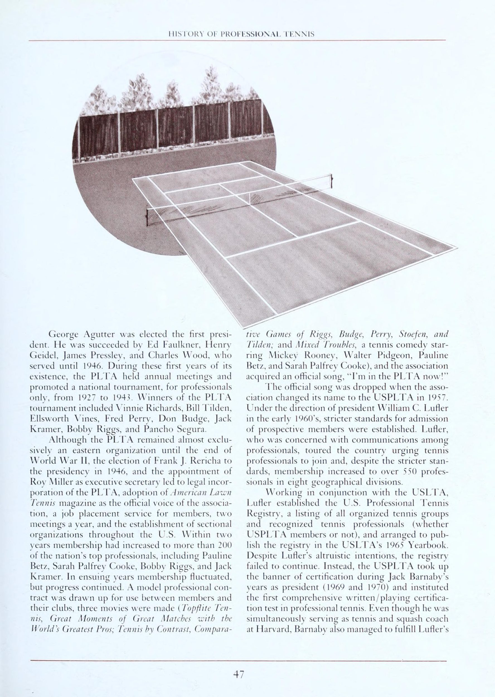
[English: USPTA Standardized Teaching Progression System and Performance Evaluation]
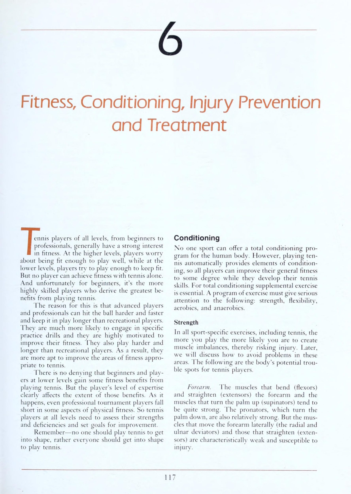
[English: Biomechanical Stroke Analysis Framework and Corrective Drill Design]
không có bài kiểm tra cố định nào để thiết lập xếp hạng, việc phân loại có thể thay đổi khi phân tích kết quả thi đấu. Việc xác minh đôi khi có thể được yêu cầu bởi một chuyên gia hoặc một ủy ban trong liên minh hoặc các tình huống tương tự. Nguyên tắc Xác minh Chuyên nghiệp mang tính mô tả nhiều hơn và có thể rất hữu ích trong việc xếp hạng, xác minh và lập kế hoạch cho các chương trình cải tiến. Những hướng dẫn này chia nhỏ từng cấp độ, từng cú đánh và có thể đưa ra thông tin chính xác hơn về vị trí của người chơi và cách cải thiện từ đó.
(Hầu hết các chuyên gia giảng dạy đều có điểm từ 4,0 đến 6,5, với phần lớn ở khoảng 5,0.) NTRP—Hướng dẫn cải tiến NTRP có thể cực kỳ hữu ích trong việc xác định các điểm yếu cần cải thiện. Bởi vì các cấp độ được mô tả rất rõ ràng nên không quá khó để tìm ra những gì người chơi sẽ cần để tiến lên cấp độ tiếp theo. Những người chuyên nghiệp có thể sử dụng NTRP làm kim chỉ nam để cải thiện bản thân cũng như của học viên.
Một trong những ví dụ điển hình nhất về chương trình cải tiến sử dụng NTRP là biểu đồ của Clarence Mabry về "Lập trình hiệu quả cho người chơi trưởng thành". Những người chơi được đánh giá ở mức 5.0 trở lên thường là những tay vợt nghiêm túc. Họ bao gồm những đàn em tài năng, Xếp hạng 1.0 Uns) 2.0 2:5 3.0 3.5 4.0 4.5 5.0 oS 6.0 đến 7.0 TENNIS: HƯỚNG DẪN CHUYÊN NGHIỆP HƯỚNG DẪN XÁC MINH CHUYÊN NGHIỆP Thuận tay Không có khái niệm về cú đánh ngang eo. Thường vung từ khuỷu tay ngang tầm mắt.
Chuẩn bị muộn, Không theo dõi; Liên lạc thất thường; Không có phương hướng. Không có ý định định hướng. hiếm khi ở vị trí Có thể duy trì một cuộc biểu tình lên tới 3 lần truy cập khi thiết lập Biểu mẫu đang phát triển. Chuẩn bị tốt cho những cú đánh vừa phải. Theo dõi hầu hết các cảnh quay. Khá nhất quán về thiết lập. Khá phù hợp với một số mục đích định hướng; Thiếu kiểm soát Độ sâu của bóng. Tính nhất quán tốt khi thiết lập. Vẫn thiếu chiều sâu ở những cú đánh khó; Có ý định định hướng với những quả bóng vừa phải; Có thể có sự chuẩn bị tốt nhưng vẫn còn yếu ở những cú đánh sâu.
Luôn đáng tin cậy với Độ sâu của bóng và khả năng kiểm soát nhất quán; Có thể điều khiển FH đang chạy; Bắt đầu phát triển topspin; Thường xuyên có thể cố gắng đánh một cú sút quá tốt khỏi FH. Rất đáng tin cậy; Sử dụng tốc độ và độ xoáy hiệu quả. Có xu hướng đánh quá mạnh vào những cú đánh khó; Tấn công ở những cú đánh dễ dàng. Cú sút mạnh có khả năng kiểm soát, Độ sâu của bóng và độ xoáy, Sử dụng FH để thiết lập các tình huống tấn công; Đã phát triển khả năng tiếp xúc tốt; Kiên định trong việc chuyền các cú trái tay (backhand) Nhiều khả năng sẽ tránh được những cú trái tay (backhand) hoặc đánh trượt hoàn toàn.
Tránh trái tay khi có thể. Không có sự thay đổi độ bám. Vấn đề về độ bám; Không theo dõi; Liên lạc thất thường; Không có phương hướng; Mặt lưới. Vẫn còn vấn đề về độ bám và chuẩn bị. Thiếu Sự tự tin; Không theo dõi; Có thể bù đắp thường xuyên cho một quả bóng đến bên BH Ít có ý định định hướng. Chuẩn bị thường xuyên; Thường thiếu sự theo dõi xuyên suốt; Có thể nhất quán khi thiết lập.
Vấn đề chuẩn bị; Bắt đầu đánh với mục đích định hướng ở những cú đánh dễ dàng, Bắt đầu theo sát thay vì đấm. Người chơi có thể điều khiển bóng một cách nhất quán trong mỗi cú đánh; Trả lại những cú đánh khó một cách phòng thủ; Ít kiểm soát việc chạy BH; Vẫn thiếu chiều sâu. Có thể đánh có chiều sâu. Thường không gây khó chịu; Có thể kiểm soát hướng và Độ sâu của bóng, nhưng không chịu áp lực.
Có thể sử dụng BH như một cú đánh mạnh mẽ với độ ổn định tốt; Có hướng và chiều sâu tốt trong hầu hết các cú đánh. Những cú đánh khó được trả lại mà không có mục đích về hướng hoặc Độ sâu của bóng, nhưng thường có thể đánh trúng cú ghi điểm trực tiếp trong các tình huống sắp đặt. Giao bóng Không có kiến thức về chuyển động hoặc thủ tục tống đạt. Tung và chuyển động không nhất quán: Không thường xuyên tiếp xúc với tâm dây; Không theo dõi; Không có vết xước lưng hoặc xoay hoàn toàn; Lỗi kép thường xuyên.
Chủ yếu là xoay V2; Thường là chuyển động tới lui; Có thể thường xuyên đưa bóng vào cuộc; Lỗi kép vẫn còn phổ biến Bắt đầu chuyển động hoàn toàn; Có thể nhất quán trong lần giao bóng thứ hai; Không có ý định định hướng; Thường xuyên không có vết xước lưng. Phát triển nhịp điệu; Ít nhất quán khi cố gắng giành quyền lực. Bắt đầu giao bóng với một số sức mạnh và khả năng kiểm soát. Cố gắng giao bóng trực tiếp; Thường giao bóng bằng phẳng; Có thể đang cố gắng học cách sử dụng spin.
Thực hiện cả cú giao bóng thứ nhất và thứ hai; Cấp nguồn thường xuyên trong lần Giao bóng / Cú giao bóng đầu tiên với một số điều khiển; Bắt đầu sử dụng vòng quay; Có xu hướng đánh quá cao cú giao bóng đầu tiên. Giao bóng tích cực, hạn chế lỗi kép; Sử dụng sức mạnh và độ xoáy; Vẫn đang phát triển độ xoáy và tấn công ở lần giao bóng thứ hai; Thường xuyên đánh với Độ sâu của bóng tốt. Giao bóng được thực hiện một cách hiệu quả với mục đích đánh vào điểm yếu hoặc phát triển một tình huống tấn công; Có thể kết hợp các cú giao bóng Xoáy lên, cắt lát và phẳng; Độ sâu của bóng và độ xoáy tốt trong hầu hết các cú giao bóng thứ hai và một số cú giao bóng đôi.
Người chơi 5.0 thường xuyên có một cú sút xuất sắc để anh ta có thể điều chỉnh lối chơi của mình hoặc bảo vệ điểm yếu. Có chiến lược hợp lý trong đánh đơn và đánh đôi và có thể thay đổi kế hoạch trò chơi tùy theo đối thủ. Tay vợt này đã trở nên “khôn ngoan” và “đánh bại chính mình” kém hơn tay vợt 4,5. Bao quát sân tốt, Người chơi này có thể tung ra những cú đánh đáng tin cậy trong những tình huống căng thẳng; Đã phát triển khả năng dự đoán tốt và có thể nhận biết các tín hiệu từ những cú ném của đối thủ, vị trí cơ thể, vung vợt ra sau, sự chuẩn bị, v.v. Cú giao bóng thứ nhất và thứ hai có thể phụ thuộc vào những tình huống căng thẳng và có thể bị tấn công bất cứ lúc nào. Có thể phân tích và khai thác điểm yếu của đối thủ Những người chơi này nhìn chung sẽ không cần xếp hạng NTRP, vì thứ hạng hoặc thứ hạng trong quá khứ của họ đã nói lên điều đó. Tay vợt 6.0 thường xuyên có kiến thức giảng dạy về game và thường xuyên di chuyển từ thành phố này sang thành phố khác để thi đấu. Tay vợt 6.5 thường xuyên biến việc di chuyển để thi đấu trở thành một phần trong phong cách sống của mình và đôi khi kiếm được một phần eS ee ee (Đặc điểm chung của các cấp độ chơi khác nhau) Cú volley Ít tiếp xúc với bóng trên lưới hoặc hoàn toàn không vào lưới Chỉ cú volley FH; Thành công không thường xuyên.
Thường xuyên lắc lư; Miễn cưỡng chơi lưới; Tránh BH; Không có động tác chân; Thành công khi thiết lập FH; Không có Độ sâu của bóng Có thể tạo góc cú volley FH khi thiết lập. Không uốn cong khi thực hiện cú vô lê thấp (thường làm rơi đầu vợt). Vẫn không thoải mái khi vào lưới, đặc biệt là bên phía BH. Vấn đề về độ bám. Những cú vô lê FH nhất quán; Thường xuyên sử dụng Mặt vợt FH trong các cú vô lê BH; Có thể gây khó chịu khi thiết lập.
Cú vô lê BH không nhất quán khi sử dụng Mặt vợt BH; Gặp khó khăn với những quả bóng thấp và rộng. Chơi trên lưới tích cực hơn. Một số khả năng che chắn các cú đánh bên. Sử dụng động tác chân thích hợp; Có thể chỉ đạo cú volley FH; Tiếp xúc nhất quán, nhưng ít phạm lỗi trong các cú vô lê của BH. Độ sâu và khả năng kiểm soát cú vô lê FH; Có thể hướng bóng BH nhưng thường thiếu chiều sâu; Phát triển các cú vô lê rộng và thấp ở hai bên cơ thể.
Có thể xử lý một loạt các cú vô lê hỗn hợp; Động tác chân tốt; Có chiều sâu và định hướng! kiểm soát BH; Phát triển cảm ứng; Lỗi phổ biến nhất vẫn là đánh quá mạnh. Có thể đánh hầu hết các cú vô lê với Độ sâu của bóng, tốc độ và hướng; Có thể đánh những cú vô lê phẳng hoặc xoáy xuống. Chơi những cú vô lê khó có chiều sâu; Khi có cơ hội, cú vô lê sẽ tự động được thực hiện để giành chiến thắng. Những cú đánh đặc biệt Có thể cố ý Cú lốp bóng (lob).
Thỉnh thoảng có thể xử lý những quả bóng đánh vào chân (nhưng không phải ở dạng nửa chuyền tốt). Có thể liên hệ về chi phí chung; Có thể Cú lốp bóng (lob) liên tục. Có thể sử dụng cú xoay người hoàn toàn trên cao khi đánh trong tầm tay. Nhận biết các cú đánh tiếp cận (approach shot) và cú vô lê một nửa; Có thể đặt sự trở lại của Giao bóng / Cú giao bóng. Có thể chỉ đạo các chi phí chung dễ dàng; Có thể câu trộm đôi; Có thể đánh cả Lốp tấn công và phòng thủ; Thực hiện những cú sút mạnh mẽ vào lưới; Đánh vào điểm yếu của đối thủ.
Những cú đánh tiếp cận (approach shot) có Độ sâu của bóng và khả năng kiểm soát tốt; Có thể liên tục đạt được chi phí chung cho đến tận tuyến giao bóng; Bắt đầu thực hiện những cú vô lê; Có thể thay đổi tốc độ khi chạm đất. Đã thêm cú sút và cú lốp bóng (lob) vào tiết mục; Những cú sút tiếp cận và bắt volley đều đạt hiệu quả cao. chơi quần vợt theo tỷ lệ phần trăm và có khả năng dự đoán tốt. Thực hiện cú vô lê giữa sân ổn định nhưng có thể thiếu chiều sâu. Việc Trả giao bóng là nhất quán và có thể gây khó chịu khi thực hiện cú giao bóng thứ hai yếu. Có thể đánh từ trên cao từ hầu hết mọi Vị trí trên sân.
thu nhập từ trúng thưởng. Người chơi 7.0 thường cam kết tham gia thi đấu giải đấu như một phong cách sống và thường phụ thuộc vào tiền thắng giải đấu như một phần thu nhập của mình. Khác Ít kiến thức về ghi điểm và định vị cơ bản Ít kiến thức ~* Khó khăn khi ghi điểm. Có thể tiếp tục diễn biến trận đấu ở nội dung đánh đơn và đánh đôi. Phạm vi sân yếu; Không thể trả lại thùy; Có thể Trả giao bóng trên FH một cách nhất quán; Không thể điều chỉnh sự khác biệt trong các cú giao bóng; Thường vẫn ở vị trí nhân đôi ban đầu.
Có thể thường xuyên che bóng đôi; Nhận biết lối chơi tấn công đôi nhưng yếu trong việc thực hiện; Có thể Trả giao bóng trên BH, nhưng với ít mục đích định hướng. Phát triển ý thức chơi trận đấu. Di chuyển lên xuống tốt. Bao sân khá tốt. Với đối tác đôi, có thể che lưới một cách hiệu quả. Có Sự Sự tự tin hơn, nhưng các đợt phục hồi vẫn thường bị thua do thiếu kiên nhẫn.
Chưa chơi quần vợt có tỷ lệ chơi tốt; Có tinh thần đồng đội phát triển đôi. Sự đa dạng có chủ ý hơn trong trò chơi; Che đậy điểm yếu tốt; Lên kế hoạch chiến thuật nhiều hơn một lần bắn trước. © USTA, NTA, USPTA, 1879 TENNIS: HƯỚNG DẪN CHUYÊN NGHIỆP LẬP TRÌNH HIỆU QUẢ CHO NGƯỜI CHƠI CÂU LẠC BỘ NGƯỜI LỚN Clarence Mabry |. 2.5 Tay vợt—Chương trình xếp hạng quần vợt quốc gia A. Trình độ của tay vợt 1. Có thể giữ bóng trong cuộc—''Cú đánh giao hữu'' 2. Thường được giao bóng trong trận đấu, không có lực—'''Powder Puff' 3. Có thể phán đoán vị trí bóng sẽ chạm, khó di chuyển tới đó 4. Thường ở ngoài vị trí B. Lịch hoạt động 1.
Giải đấu—câu lạc bộ, thành phố 2. Giải đấu—câu lạc bộ, thành phố 3. Luyện tập a. Xô đựng bóng b. Tường c. Đối tác thực hành d. Máy bóng e. Bài tập chuyên nghiệp 4. Hướng dẫn—bộ và trận đấu C. Chuỗi hướng dẫn 1. Di chuyển thuận tay—sự nhất quán về trái tay 2. Di chuyển thuận tay, Cú lốp bóng (lob)—sự nhất quán về trái tay 3. Vị trí giao bóng và các điểm đánh đơn từ sân sau 4. Cú volley cơ bản và cú đánh trên cao 5. Đánh đôi cơ bản—tư thế sân D. Mục tiêu 1. Cải thiện chuyển động và vị trí sân 2. Học cú vô lê cơ bản và cú đánh đầu 3.
Cải thiện vị trí giao bóng Il. Tay vợt 3.0—Chương trình xếp hạng quần vợt quốc gia Tôi thấy thất vọng! Tôi vẫn gặp khó khăn khi đánh bại người chơi 2.5 và tôi đã làm mọi thứ mà bạn khuyên để trở thành người chơi 3.5 tôi thực hành cú thuận tay (forehand) để có sức mạnh và nghiên cứu vị trí giao bóng của tôi. Nó tốt hơn nhưng nó không có sức mạnh như 3,5 người bạn của tôi. | Biết tôi nên chơi với 3,5 người chơi nhưng |'' chưa đủ tốt.
Vấn đề của tôi là gì? Trả lời Bạn đã trả lời vấn đề của chính mình - bạn thất vọng vì bây giờ bạn chơi quần vợt nhiều hơn mức bạn có thể thi đấu. Bạn là một người chơi 3.0 và đang cố gắng đạt đến cấp độ 3.5. Cấp độ 3.0 gần như là một cấp độ chuyển tiếp và tiến bộ sẽ trở nên dễ dàng nếu bạn kiên nhẫn và đánh giá các ưu tiên của mình. Trước tiên, hãy Sự tự tin vào việc đặt bảo lãnh trước khi lo lắng về quyền lực. Quyền lực đến dần dần theo thời gian và thời gian. Bây giờ hãy làm việc về vị trí và kiểm soát.
Bạn biết vị trí có thể từ bên này sang bên kia, ngắn và sâu. Cú chạm đất của bạn phải tiếp đất trong vùng sâu hoặc vùng cơ động của sân, nhưng bạn phải học cách đánh vào vùng đó từ tất cả các Vị trí trên sân. Cú giao bóng của bạn phải được đặt về phía thuận tay, trái tay hoặc vào cơ thể đối thủ. Hãy nhớ rằng sau khi bạn có thể đặt bóng, bạn phải thay Đổi bên (switch).
Hãy xem chương trình của bạn trong vài tuần tới Hoạt động Chơi càng nhiều người chơi khác nhau càng tốt. Chơi 2,5 và 3,0 và đôi khi là 3,5 người chơi chỉ để luyện tập kỹ thuật của bạn với các phong cách chơi khác nhau Luyện tập mà không có đồng đội—(tường, máy bóng hoặc xô bóng) để cải thiện hình thức và Sự Sự tự tin Hướng dẫn và luyện tập Chơi thuận tay Đánh chéo sân (cross-court) và dọc theo cường độ xây dựng đường biên bằng cách lặp lại ở tốc độ chậm hoặc vừa phải Luyện tập chơi bóng từ cả ba khu vực của sân, thao tác (sâu), tiếp cận (giữa sân) và trên lưới. Đánh hầu hết các quả bóng sâu vào vùng cơ động của đối thủ.
Giao bóng để đặt vào vị trí thuận tay, trái tay của đối thủ vào trong cơ thể. Tìm hiểu cách thay đổi các vị trí này để khiến đối thủ của bạn mất Trọng tâm cơ thể. Chơi điểm, trò chơi và hiệp đấu với chuyên gia của bạn và càng nhiều người chơi khác nhau càng tốt. Mục tiêu Tinh chỉnh vị trí và khả năng kiểm soát bóng từ tất cả các phần của sân. Học cách chơi với những người chơi khác nhau. O.K.—Bây giờ hãy quay lại vấn đề cơ bản và tôi sẽ gặp bạn ở mức 3,5!
3.5 Người chơi—Chương trình xếp hạng quần vợt quốc gia A. Trình độ của người chơi 1. Có thể di chuyển tốt hơn, đánh được hầu hết các quả bóng từ đường cuối sân 2. Vị trí của cú thuận tay (forehand) cả dọc và dọc, nhưng Cú trái tay (backhand) tay vẫn gặp khó khăn trong việc đạt được tính nhất quán trong đường chéo . Có thể chuyền Bóng ngon ăn (sitter) dàng và có thể trả lại hầu hết các đường bóng. Đánh trúng một vài người thắng khi giao bóng—vị trí tốt hơn Có khả năng chơi bóng ở tất cả các khu vực trên sân với ít lỗi dễ mắc hơn B. Lịch hoạt động 1. Các giải đấu—thực sự phù hợp với khái niệm quần vợt đồng đội 2. Các giải đấu—cần càng nhiều càng tốt để cải thiện cá nhân 3. Luyện tập—luyện tập đồng đội và luyện tập cá nhân nên trở nên thường xuyên hơn và có cấu trúc tốt hơn 4. Các bài tập chuyên nghiệp hoặc bài tập nhóm phổ biến và được khuyến khích 5. Hướng dẫn—cần tập luyện cá nhân và đồng đội theo IV.
C. Chuỗi hướng dẫn 1. Phối hợp các cú đánh 2. Tinh chỉnh đôi—Đội giao bóng (cú đánh thứ 1 & thứ 2) 3. Tinh chỉnh đôi—Đội nhận 4. Các biến thể đôi 5. Bài tập di chuyển D. Mục tiêu 1. Cải thiện đánh đôi và phối hợp đánh 4.0 Người chơi—Chương trình xếp hạng quần vợt quốc gia A. Trình độ của người chơi 1. Người chơi đánh đôi hiệu quả 2. Khả năng tạo ra nhiều cú đánh khác nhau 3. Vị trí giao bóng đầu tiên tốt 4. Đáng tin cậy thuận tay và trái tay B. Lịch hoạt động 1.
Giải đấu và lối chơi đồng đội từ các khu vực khác nhau 2. Nhiều trận đấu đôi và giải đấu 3. Luyện tập theo lịch trình hai tuần để bao gồm các cú đánh nền cơ bản, cú vô lê, giao bóng & đánh đầu, cộng với các pha phối hợp sút 4. Hướng dẫn—các bài tập của đội theo lịch trình thường xuyên quan trọng nhất 5. Điều kiện thể chất tốt quan trọng C. Chuỗi hướng dẫn 1. Giao bóng—mục tiêu và xoay tròn—trả lại 2. Tinh chỉnh cú volley 3. Các tình huống chơi—đơn 4.
Tình huống chơi—đánh đôi 5. Bài tập di chuyển và đánh thắng D. Mục tiêu 1. Tinh chỉnh các cú đánh, cú đánh chạm và phong cách đánh đơn 4.5 Người chơi—Chương trình xếp hạng quần vợt quốc gia A. Trình độ của người chơi 1. Kiểm soát tốc độ và độ xoáy (kiểm soát vợt tốt) 2. Có thể di chuyển bóng từ tất cả các khu vực và đánh vào tất cả các khu vực 3. Giao bóng chắc chắn, cả thứ nhất và thứ hai B. Lịch hoạt động 1. Giống như 4.0 với nhiều trận đấu và thi đấu đơn hơn C. Chuỗi hướng dẫn 1.
Thực hiện cú đánh—giao bóng/trả lại 2. Thực hiện cú đánh—bắn thả, bắt volley & tiếp cận 3. Cú volley nâng cao, cú volley thứ 1, cú volley góc, cú volley thả, trên cao, cú volley sân mở 4. Di chuyển trong đường cuối sân (baseline) và diễn tập% sân D. Mục tiêu 1. Cải thiện việc thực hiện giao bóng và trả bóng 2. Học cách gây áp lực lên đối thủ với các nguyên tắc cơ bản và vị trí sân tốt 3. Thêm các cú đánh mới vào các khả năng cơ bản TENNIS: MỘT trường HƯỚNG DẪN CHUYÊN NGHIỆP người chơi, người cao niên được xếp hạng, người chơi trong giải đấu cạnh tranh và chuyên gia giảng dạy.
Những tay vợt này có tất cả các cú sút và có thể tấn công từ bất kỳ đâu trên sân. 'Các giải đấu, thi đấu đồng đội và luyện tập nhiều là những hoạt động chính của họ. Điều kiện thể chất và tinh thần tốt là rất quan trọng. Người chơi ở cấp độ này chủ yếu phấn đấu để có được sự nhất quán hơn, thực hiện tốt hơn và lựa chọn cú đánh tốt. Họ dành nhiều thời gian để chơi các trận đấu và nghiên cứu chiến thuật cũng như các phong cách chơi khác nhau.
NTRP đã đi một chặng đường dài kể từ năm 1979. Việc thành lập các giải đấu, giải đấu mới cũng như các chương trình câu lạc bộ và công viên đã giúp mở đường cho hoạt động gia tăng và sự chấp nhận trên toàn quốc đối với hệ thống xếp hạng hoàn chỉnh nhất trên thế giới hiện nay. Jim ReFFKIN CriareNcE Masry Ăn để đạt hiệu suất cao nhất đối với tôi, với tư cách là một nhà tư vấn dinh dưỡng thể thao, còn khó chịu hơn là xem các tay vợt đẳng cấp thế giới và cuối tuần tập luyện hàng giờ, ngày này qua ngày khác, chỉ để làm tê liệt thành tích thể thao của họ vì thói quen dinh dưỡng kém. Thông thường, chính kỹ năng phi thường của người chơi với dao và nĩa, chứ không phải thiếu kỹ năng với vợt tennis, mới quyết định kết quả của một trận đấu quần vợt.
Hiệu suất cao nhất trên sân quần vợt—tất cả những trận đấu hoặc trận đấu quá hiếm hoi đó khi mọi thứ dường như diễn ra suôn sẻ—có thể được thiết kế về mặt dinh dưỡng. Ngay cả những nhà vô địch thế giới như Jimmy Connors và Martina Navratilova cũng không phải lúc nào cũng tận hưởng được cảm giác hồi hộp khi đạt được hiệu suất cao nhất trong mỗi trận đấu, hiệp đấu hoặc trận đấu, nhưng tôi khẳng định rằng họ có thể—và quan trọng không kém—bạn cũng có thể.
Nghiên cứu và làm việc của tôi với những người chơi quần vợt nghiệp dư và chuyên nghiệp đã chứng minh rằng bất kỳ ai, bất kể tuổi tác hay trình độ khả năng, đều có thể cải thiện sức bền, sức chịu đựng, năng lượng, sức mạnh và sức khỏe thông qua khoa học về dinh dưỡng thể thao. Tôi làm việc riêng với các vận động viên như Gene Mayer, Sandy Mayer, Stan Smith, Harold Solomon và Fred Stolle, và tôi có thể chỉ cho bạn cách ăn để giành chiến thắng trước, trong và sau khi thi đấu.
Nạp năng lượng trước khi chơi Hãy tưởng tượng nguồn nhiên liệu hoàn hảo cho cơ thể. Nó sẽ cung cấp năng lượng tinh khiết, vitamin, khoáng chất và các chất dinh dưỡng khác và sẽ được đốt sạch. Liệu một loại nhiên liệu hoàn hảo như vậy có tồn tại? Chắc chắn là có, và nó không ở đâu xa hơn kệ đựng thức ăn hoặc siêu thị địa phương của bạn. Carbobydrat phức tạp chưa tinh chế—được tìm thấy trong các thực phẩm như bột yến mạch, lúa mì cắt nhỏ và các loại ngũ cốc nguyên hạt khác, gạo lứt, bánh mì nguyên hạt, bánh kiều mạch, trái cây tươi, mì ống và khoai tây—cung cấp nhiên liệu chứa đầy dinh dưỡng hoàn hảo để tiếp thêm sinh lực cho cả những cơ thể uể oải nhất trước một trận đấu quần vợt hoặc tập luyện. Nhưng đây không phải là những thực phẩm mà hầu hết các vận động viên tránh để giữ dáng và vóc dáng sao? Và protein ở đâu? Bít tết và trứng, món ăn trên bàn tập luyện "giàu protein" được tôn vinh theo thời gian mà các huấn luyện viên có thiện chí khuyên dùng để giúp xây dựng cơ bắp khỏe hơn và các vận động viên giỏi hơn, rõ ràng không có trong danh sách nhiên liệu lý tưởng cho cơ thể này.
Nghiên cứu của tôi cho thấy bữa sáng, bữa trưa và bữa tối của các nhà vô địch nên chứa nhiều carbohydrate phức tạp nhưng chỉ nên chứa lượng protein vừa phải. Một bữa ăn giàu protein thực sự có thể làm mất đi lượng nước cần thiết cho cơ bắp đang tập luyện ngay khi chúng cần nhất. Protein cần nhiều nước để tiêu hóa hơn carbohydrate và lượng protein dư thừa (trên 15% tổng lượng calo trong bữa ăn trước trận đấu) có thể làm mất đi các vitamin và khoáng chất quan trọng qua nước tiểu. Proal TENNIS: HƯỚNG DẪN CHUYÊN NGHIỆP Mất nước do tein và mất vitamin-khoáng chất là hai điều mà ai muốn ăn để thắng thì có thể và nên tránh.
Jimmy Connors, người thường xuyên ăn thịt đỏ trước mỗi trận đấu quần vợt, đã rất ngạc nhiên khi biết rằng bữa ăn giàu protein trước trận đấu của anh ấy thực sự cản trở hơn là giúp ích cho sức bền và sức chịu đựng trên sân của anh ấy. Khi tôi thảo luận về dinh dưỡng lần đầu tiên với Jimmy vào năm 1981, anh ấy chắc chắn hai điều: (1) đối thủ của anh ấy ngày càng trẻ hơn qua mỗi năm, và (2) anh ấy thì không. Jimmy đang tìm kiếm Điểm lợi thế (advantage) chiến thắng và tôi nói với anh ấy rằng khoa học về dinh dưỡng thể thao có thể mang lại Điểm lợi thế (advantage) cạnh tranh về việc tăng sức bền, năng lượng và sức chịu đựng.
Jimmy làm theo lời khuyên của tôi trong công việc bán thời gian tại Caesar's Palace-Alan King Tennis Classic, Wimbledon và US Open. Tôi muốn nghĩ rằng bữa ăn giàu carbohydrate/protein vừa phải trước trận đấu của Jimmy đã thúc đẩy tài năng quần vợt to lớn và động lực thi đấu của anh ấy để giúp anh ấy giành chiến thắng trong các giải đấu này và các giải đấu tiếp theo ở độ tuổi mà hầu hết các vận động viên chuyên nghiệp đều cân nhắc việc giải nghệ.
Dinh dưỡng trên sân Bất cứ ai từng theo dõi một trận đấu quần vợt chuyên nghiệp đều biết rằng các tay vợt hiếm khi ăn thức ăn đặc trong khi thi đấu. Chất lỏng - nước ngọt, nước ép trái cây, đồ uống thay thế chất lỏng và chất điện giải - dường như là lựa chọn của những người chuyên nghiệp. Uống chứ không phải ăn chiếm ưu thế là hình thức thay thế chất dinh dưỡng phổ biến nhất trong quá trình chuyển đổi bên.
Trong trường hợp này, những người chuyên nghiệp đã đúng khi chọn chất lỏng thay vì chất rắn, nhưng loại chất lỏng họ uống thực sự có thể cản trở hơn là giúp ích cho hiệu suất của họ. Trường Cao đẳng Y học Thể thao Hoa Kỳ (ACSM) đã đánh giá thấp các loại đồ uống thể thao thương mại phổ biến, đồ uống trái cây và thậm chí cả nước ép trái cây tự nhiên về khả năng thay thế chất lỏng trong quá trình hoạt động thể chất. Hội đồng nghiên cứu ACSM đã xác định rằng những đồ uống này chứa quá nhiều đường và/hoặc muối để mang lại hiệu quả thể thao tối ưu. Tiêu thụ đồ uống bão hòa đường và nhiều muối có thể dẫn đến co thắt dạ dày, buồn nôn và có thể làm chậm quá trình hấp thụ nước (thành phần quan trọng nhất trong tất cả các loại đồ uống này) từ dạ dày đến các bộ phận thiếu nước của cơ thể đang tập luyện cần nước nhất.
Trong khi nghiên cứu về việc sử dụng những loại đồ uống này và các loại đồ uống tương tự vẫn chưa có kết quả thuyết phục, thì đồ uống tôi khuyên dùng cho cuối tuần và các vận động viên chuyên nghiệp là nước, nước và nhiều nước hơn. Vì cơn khát không theo kịp nhu cầu nên bạn có thể sẽ không thể bổ sung ngay lập tức tổng lượng nước mất đi trong một trận đấu quần vợt: chẳng hạn như Harold Solomon, có thể mất 8 pound nước chỉ trong một trận đấu.
Li2 Đó là lý do tại sao tôi khuyên tất cả các vận động viên nên uống một lít nước trước khi hoạt động thể chất, sau đó tiêu thụ tại Jeast một lít nước trong mỗi nửa giờ. Trên thực tế, các tay vợt người Úc đã làm đúng trong nhiều năm. của 'tập thể dục hoặc cạnh tranh liên tục'. Các nhà vô địch như Lew Hoad, Ken Rosewall và Rod Laver đã bổ sung lượng chất lỏng bị mất trong cơ thể bằng đồ uống làm từ nước và nước cam—một hỗn hợp rất gần với khuyến nghị thay thế chất lỏng của ACSM.
Dinh dưỡng sau trận đấu Những gì bạn ăn sau trận đấu hoặc tập luyện cũng quan trọng như những gì bạn ăn trước đó và một lần nữa, lượng carbohydrate phức tạp đóng vai trò quan trọng trong việc tiếp nhiên liệu cho cơ thể đang cạn kiệt chất dinh dưỡng và mệt mỏi khi thi đấu của bạn. Tuy nhiên, dinh dưỡng sau khi chơi đòi hỏi bạn cũng phải ăn nguồn protein ít chất béo (thường là từ động vật) cùng với những carbohydrate phức hợp cực kỳ quan trọng đó.
Martina Navratilova biết giá trị của bữa ăn sau trận đấu hợp lý về mặt khoa học và cô ấy 4 nhẹ nhàng tuân thủ các khuyến nghị về dinh dưỡng của tôi để bổ sung lượng năng lượng dự trữ và nuôi dưỡng cơ thể đã cạn kiệt chất dinh dưỡng sau mỗi trận đấu. Martina thích các nguồn protein động vật như thịt gia cầm, thịt gà hoặc gà tây; hải sản như cá tuyết, scrod, tôm hùm, cá bơn, đế; và một con vịt Bắc Kinh "ăn gian" không thường xuyên nhưng rất xứng đáng. Cô cũng chọn các sản phẩm từ sữa gầy hoặc ít béo như phô mai, sữa chua và sữa để bổ sung protein cũng như canxi, magie và vitamin B. (Người ăn chay có thể chọn đậu phụ [phô mai đậu nành] và/hoặc các loại đậu, đậu Hà Lan và đậu lăng làm nguồn protein tốt sau trận đấu.) Để tiếp nhiên liệu một cách khoa học cho cơ thể và chuẩn bị đúng cách cho trận đấu hoặc buổi tập luyện ngày hôm sau, hãy chọn các loại thực phẩm carbohydrate phức hợp như mì ống, khoai tây, bánh mì nguyên hạt, trái cây và rau quả, đồng thời bổ sung các thực phẩm chủ yếu có hiệu suất cao nhất này bằng 4 ounce nguồn protein ít chất béo như hải sản hoặc thịt gia cầm. (Người ăn chay nên tiêu thụ khoảng hai cốc đậu, đậu Hà Lan hoặc đậu lăng, hoặc khoảng 8 ounce đậu phụ.) Lời cuối cùng về chất béo Với một ngoại lệ, chất béo là chất dinh dưỡng không cần thiết cho cuộc sống con người. Axit linoleic, một loại dầu có nhiều trong ngũ cốc nguyên hạt, ngũ cốc, rau và một số loại cá, là loại "chất béo" duy nhất mà cơ thể cần. Trong khi các chất béo và dầu khác thực hiện các chức năng sinh học quan trọng thì axit linoleic là chất béo duy nhất mà chúng ta phải ăn để sống.
Việc ăn uống hiệu suất cao nhất yêu cầu bạn tiêu thụ không quá 20% lượng calo hàng ngày từ tổng lượng chất béo và dầu. Vì chất béo và dầu cung cấp 9 kilocalo mỗi gam, nên một vận động viên tiêu thụ 2000 kilocalories mỗi ngày không nên ăn quá 44 gam tổng lượng chất béo và dầu. Tôi khuyên các vận động viên trong tất cả các môn thể thao nên hạn chế tổng lượng chất béo ở mức từ 5 đến 20% tổng lượng calo hàng ngày vì hai lý do: (1) chất béo dư thừa trong chế độ ăn uống có thể làm giảm khả năng vận chuyển oxy tối đa của máu và do đó, có thể làm giảm sức mạnh hiếu khí và hiệu suất cao nhất và (2) chế độ ăn nhiều chất béo có thể làm tăng nguy cơ mắc bệnh tim mạch và các bệnh ung thư liên quan đến chế độ ăn kiêng.
Những khuyến nghị về dinh dưỡng trước đây là không có căn cứ và không phù hợp với các vận động viên ngày nay. Nếu bạn luôn muốn thi đấu hết mình, thì hãy quên chế độ ăn kiêng thể thao giàu protein, nhiều chất béo truyền thống và áp dụng các khuyến nghị về chế độ ăn nhiều carbohydrate, ít chất béo của tôi. Bạn thực sự có thể tạo ra những thành tích đỉnh cao về mặt dinh dưỡng - chỉ cần hỏi Jimmy, Martina hoặc bất kỳ vận động viên chuyên nghiệp nào khác mà tôi đã tư vấn. Những nhà vô địch này không chơi để thua; họ ăn để giành chiến thắng.
Làm chậm lão hóa bằng chất chống oxy hóa Chất chống oxy hóa giúp bảo vệ chúng ta khỏi lão hóa sớm và các hóa chất gây hại trong nguồn cung cấp thực phẩm, không khí và nước. Không ai trong chúng ta có thể thoát khỏi tình trạng ô nhiễm môi trường phổ biến, chất béo ôi và dầu trong chế độ ăn uống cũng như các gốc tự do (cấu trúc nguyên tử và phân tử có hại gây tổn hại cho tế bào của cơ thể) bằng các chất chống oxy hóa như vitamin E, C và beta-carotene (pro-vitamin A).
Tôi thực sự khuyên bạn nên bổ sung những chất này và các chất chống oxy hóa quan trọng khác trước tiên từ thực phẩm bạn ăn và sau đó, nếu cần, từ các chất bổ sung nguyên chất. Vì nền tảng của chế độ chống oxy hóa thích hợp bắt đầu từ chế độ ăn kiêng, đây là danh sách các loại thực phẩm bạn có thể thưởng thức đồng thời nhận được lợi ích chống lão hóa và tăng cường sức khỏe của chất chống oxy hóa. Beta-caroten.
Beta-carotene là một dạng vitamin A không độc hại, có thể bảo vệ phổi của bạn chống lại ô nhiễm không khí, khói thuốc lá và các chất gây hại khác. Nó thúc đẩy chức năng phổi khỏe mạnh và có thể bảo vệ chúng ta chống lại một số dạng ung thư do môi trường gây ra. Nó là chất tẩy gốc tự do tuyệt vời và có thể được tìm thấy rất nhiều trong siêu thị địa phương của bạn.
Khoai lang, khoai mỡ, bí cứng màu vàng và cà rốt chỉ là một số loại rau cung cấp lượng beta-carotene dồi dào. Vitamin C. Vitamin C, vitamin chống bệnh scorbut, là một chất tẩy gốc tự do mạnh mẽ khác. Trong khi các nhà khoa học tiếp tục tranh luận về tính hiệu quả của nó trong việc ngăn ngừa và cải thiện bệnh cảm lạnh thông thường thì khả năng chống oxy hóa của vitamin C đã được nhiều người biết đến. rENNIS: HƯỚNG DẪN CHUYÊN NGHIỆP để vô hiệu hóa các hóa chất gây ung thư trong thực phẩm của chúng ta như nitrat và thuốc trừ sâu. Vitamin C là loại vitamin tan trong nước, dễ bị phá hủy hoặc mất đi khi nấu nướng và bảo quản thực phẩm. Một dạng vitamin C hòa tan trong chất béo, ascorby] palmitate, cũng có thể giúp bảo vệ tế bào khỏi sự tấn công của gốc tự do và có sẵn trong một số chế phẩm vitamin không kê đơn.
Mẹ Thiên nhiên đã bổ sung Vitamin C vào cà chua, trái cây họ cam quýt, bông cải xanh và nhiều loại trái cây, rau quả khác. VitaminFE. Vitamin E có trong ngũ cốc và rau chưa tinh chế và là chất khử hoạt tính gốc tự do mạnh. Một chế độ ăn nhiều chất béo, chẳng hạn như chế độ ăn kiêng thông thường của người Mỹ, không chỉ chứa một lượng nhỏ vitamin E mà còn phá hủy một lượng lớn chất chống oxy hóa quan trọng này. Gạo lứt, bột yến mạch, lúa mì nguyên hạt và đậu nành cung cấp nguồn cung cấp dồi dào chất chống oxy hóa đa năng này.
Selen. Nghiên cứu gần đây đã chỉ ra rằng tần suất ung thư tăng lên ở những khu vực của Hoa Kỳ nơi hàm lượng selen trong đất kém. Mặc dù bằng chứng chưa thuyết phục, nhưng các nhà khoa học đã chỉ ra rằng chế độ ăn tinh chế cao gồm bột mì trắng, đường và thịt đỏ có chứa lượng chất chống oxy hóa mạnh này ở mức dưới mức tối ưu, hoạt động cùng với vitamin E để bảo vệ cơ thể chúng ta khỏi tổn thương gốc tự do.
Vì selen có thể gây độc ngay cả với một lượng nhỏ, hãy cố gắng lấy selen bạn cần từ ngũ cốc nguyên hạt, trái cây tươi và rau quả. Nếu bạn phải bổ sung selen, hãy dùng không quá 50-100 microgam mỗi ngày. Các chất bổ sung hiệu suất đỉnh cao mới Những người chơi quần vợt, thực ra là tất cả những người năng động, dường như đang tìm kiếm chất đặc biệt giúp họ tăng cường năng lượng, sức bền và sức chịu đựng.
Cuộc tìm kiếm 'vũ khí bí mật' về thể chất đã khai sinh ra một lĩnh vực dinh dưỡng chuyên biệt được gọi là công thái học sinh học (ergogenics), tức khoa học về các loại thực phẩm tăng cường năng lượng và chế phẩm dinh dưỡng cô đặc giúp tối ưu hóa hiệu suất thể thao đỉnh cao.
Tuy nhiên, nghiên cứu có trách nhiệm đã chỉ ra rằng một số hợp chất được bán rộng rãi, hợp pháp và không cần kê đơn dường như thực sự mang lại Điểm lợi thế (advantage) cạnh tranh vào cuối tuần cho các vận động viên đẳng cấp thế giới. Mặc dù nghiên cứu về các chất này vẫn chưa có kết luận chắc chắn, nhưng có bằng chứng gợi ý rằng một hoặc nhiều chất sau đây có thể được chứng minh là một chất hỗ trợ sinh học thực sự.
Octacosanol. Octacosanol là một axit béo chuỗi thẳng, 28 carbon được tìm thấy trong dầu mầm lúa mì và các loại dầu thực vật khác. Các nhà khoa học đã thử nghiệm octacosanol trên động vật thí nghiệm với một số thành công và Hải quân Hoa Kỳ đã thử nghiệm nó trên thợ lặn. Octacosanol dường như tăng cường việc cung cấp và sử dụng oxy bởi các cơ hoạt động (bao gồm cả cơ tim) và do đó mang lại khả năng tăng sức bền và sức chịu đựng.
L-Carnitine. L-Carnitine là chất vận chuyển phân tử các axit béo từ tế bào chất của tế bào đến cơ quan sản xuất năng lượng của nó được gọi là ty thể. Do đó, L-Carnitine thúc đẩy quá trình đốt cháy chất béo hiệu quả với việc giải phóng hơn gấp đôi năng lượng có được từ protein hoặc carbohydrate. Mặc dù cơ thể con người có thể tổng hợp L-Carnitine từ các hóa chất khác, việc bổ sung L-Carnitine có thể giúp tăng cường sản xuất năng lượng hơn nữa. Tuy nhiên, cần nhiều nghiên cứu hơn trước khi chúng ta có thể chắc chắn về hiệu quả của L-Carnitine.
Coenzym Q-10. 'Đây là một phân tử vận chuyển điện tử giúp cơ thể chúng ta bổ sung nguồn cung cấp ATP (adenosine triphosphate), một hợp chất năng lượng cao cần thiết cho sự co cơ. Giống như L-Carnitine, co-enzym Q-10 có mặt ở hầu hết mọi tế bào trong cơ thể chúng ta, nhưng vận động viên có thể được hưởng lợi từ lượng bổ sung, đặc biệt là khi thi đấu hoặc tập luyện vất vả.
Nghiên cứu với co-enzym Q-10 sẽ cần phải thử nghiệm cẩn thận trong vài năm nữa trước khi các nhà khoa học có thể khẳng định một cách đúng đắn rằng đó là một chất sinh học thực sự. Nhu cầu dinh dưỡng đặc biệt của các tay vợt nữ Ban Thực phẩm và Dinh dưỡng của Viện Khoa học Quốc gia (NAS) gợi ý rằng phụ nữ nên ăn 1800-2200 kilocalories mỗi ngày để duy trì cân nặng lý tưởng. Nghiên cứu và kinh nghiệm lâm sàng của tôi đã thuyết phục tôi rằng đối với hầu hết phụ nữ, khuyến nghị này có thể là quá đáng. Hầu hết phụ nữ, ngay cả những người thích hoạt động thể chất thường xuyên, có xu hướng tăng cân trên 1800 kilocalo mỗi ngày.
Trên thực tế, nhiều phụ nữ năng động mà tôi từng tư vấn đã gặp khó khăn trong việc đạt được cân nặng lý tưởng cho đến khi họ giảm lượng tiêu thụ xuống dưới 1000 kilocalories mỗi ngày. Thật không may, nhiều chuyên gia dinh dưỡng vẫn tin rằng nếu bạn ăn ít hơn 3500 kilocalo so với mức bình thường mỗi tuần (hoặc nếu bạn đốt cháy cùng số calo đó thông qua tập thể dục), thì bạn sẽ giảm được 1 pound mỡ. Nếu cách lập luận đó là đúng thì hầu hết trong số 30-50 triệu người Mỹ thừa cân rõ rệt đều sẽ gầy gò | Hiện tại đang dành cho PE AK PE RFORMANCE. Sự thật về dinh dưỡng là cơ thể bạn, với tất cả trí tuệ của nó, vẫn chưa học được quy tắc 3500 lần ăn. Khi bạn giảm lượng thức ăn ăn vào hoặc tăng cường tập thể dục, hoặc cả hai, cơ thể bạn cuối cùng sẽ chậm lại tốc độ đốt cháy chất béo và cuối cùng bạn đạt đến điểm nguy hiểm của mọi người ăn kiêng có ý thức về cân nặng — mức bình nguyên đáng sợ! Những phụ nữ năng động tính toán lượng calo thực sự có thể cần năng lượng để duy trì cơ thể của họ nhiều hơn mức mà những người bạn béo hơn, lười biếng hơn của họ cần.
Đổ lỗi cho mẹ thiên nhiên. Ngay cả với tất cả sự hiểu biết của mình, cô vẫn chưa biết rằng đây là năm 1984; rằng bạn cho bữa tối vào lò vi sóng thay vì săn lùng và giết chết nó; rằng bạn lái xe đến cửa hàng tạp hóa để mua thực phẩm thay vì trồng, gieo hạt và thu hoạch. Bạn thấy đấy, Mẹ Thiên nhiên thân yêu vẫn nghĩ rằng bạn là người tiền sử. Vâng, tại sao không? Bạn vẫn sống trong cùng một cơ thể nguyên thủy, có cùng gen di truyền, như tổ tiên thời tiền sử của bạn. Đúng vậy, Mẹ Thiên nhiên, cũng như Ban Thực phẩm và Dinh dưỡng, vẫn còn đọng lại trong quá khứ.
Những phụ nữ năng động cần tập thể dục nhiều hơn và ít calo hơn họ tưởng. Một phụ nữ năng động vừa phải, tập thể dục 3–5 ngày một tuần và nặng khoảng 125 pound (và cao khoảng 5'5") có thể cần không quá 1400-1600 kilocalories mỗi ngày với chế độ ăn nhiều carbohydrate phức tạp, ít chất béo—loại mà tôi đã khuyến nghị và mô tả trong Eat to Win: The Sports Nutrition Bible (Rawson Associates, New York, 1983). lượng protein, chất béo, carbohydrate, vitamin và khoáng chất cho nhu cầu cá nhân của bạn, dựa trên giới tính, thành phần hóa học trong máu và các yêu cầu thể thao cụ thể của bạn.
Ủi Sắt Cần Sắt Phụ nữ năng động cần sắt chứ không phải từ chai hay viên nén. Cách đây rất lâu, một thiên tài quảng cáo đã phát minh ra cụm từ “máu mệt” cho loại thuốc bổ sung vitamin dạng lỏng giàu chất sắt nổi tiếng, và kể từ đó, nhiều thế hệ phụ nữ Mỹ đã lầm tưởng rằng (1) có thứ gọi là máu mệt mỏi, và (2) họ cần uống thuốc bổ sung sắt để có sức khỏe tốt.
Tên của một loại thuốc bổ sung sắt phổ biến thậm chí còn ngụ ý rằng nó được sản xuất đặc biệt dành cho phụ nữ. Bỏ qua Geritol và FemIron— nhường chỗ cho các loại đậu, đậu Hà Lan, đậu lăng, rau và trái cây! Ủy ban Thực phẩm và Dinh dưỡng của NAS khuyến nghị phụ nữ nên tiêu thụ 18 miligam sắt mỗi ngày, đặc biệt là sắt từ các nguồn động vật như thịt đỏ, thịt gia cầm và hải sản (sữa và phô mai là những nguồn cung cấp ít chất sắt). Những phụ nữ ăn theo chế độ ăn bình thường của người Mỹ sẽ phải tiêu thụ ít nhất 3000 kilocalories cũng như lượng quá nhiều sản phẩm động vật (có liên quan đến chất béo bão hòa và hàm lượng cholesterol) mỗi ngày để đáp ứng RDA cao tùy ý (mức khuyến nghị hàng ngày) đối với sắt. Khó hiểu hơn nữa, TENNIS đang mang thai: HƯỚNG DẪN CHUYÊN NGHIỆP và phụ nữ đang cho con bú không thể đáp ứng RDA về sắt thông qua lượng thức ăn ăn vào!
Chất bổ sung sắt đã được báo cáo là gây táo bón và kích ứng đường tiêu hóa, đồng thời cũng có liên quan đến tổn thương gan, thận và xương. Từ 1400 đến 1600 kilocalories mỗi ngày để duy trì cân nặng, 3000 kilocalories trở lên mỗi ngày để đáp ứng RDA của Hoa Kỳ cho sắt — liệu người phụ nữ hiện đại này '"Catch-22 Lượng sắt nạp vào lớn gây nguy cơ dinh dưỡng và thảm họa calo. Bạn có thể đáp ứng nhu cầu sắt của cơ thể một cách an toàn nếu tiêu thụ ngũ cốc và ngũ cốc chưa tinh chế, cùng với các loại đậu, rau lá sẫm màu và trái cây tươi. Trên loại thực phẩm giàu dinh dưỡng này chế độ ăn kiêng, bạn thậm chí sẽ đạt được RDA là 1,8 miligam sắt hàng ngày mà không gặp rủi ro về sức khỏe liên quan đến lượng calo dư thừa, chất béo bão hòa, cholesterol và protein — điều mà bạn không thể làm được nếu ăn chế độ ăn kiêng thông thường của người Mỹ đã qua chế biến quá mức.
Vấn đề về protein Mặc dù các nhà khoa học nghiên cứu từ lâu đã xác định rằng chế độ ăn giàu protein thúc đẩy bệnh loãng xương (một căn bệnh tiến triển ảnh hưởng chủ yếu đến phụ nữ dẫn đến mất canxi và khoáng chất từ xương, dẫn đến gãy xương và thoái hóa cột sống), nhiễm độc thai kỳ, tổn thương thận và tăng nguy cơ mắc bệnh tim và ung thư, RDA của Hoa Kỳ đối với protein vẫn quá cao.
Ban Thực phẩm và Dinh dưỡng đang nhận được thông báo—s-l-o-w-l-y. Kể từ năm 1941, hội đồng quản trị đã giảm hàm lượng protein RDA xuống tới 20%. Lượng protein RDA dành cho phụ nữ hiện nay vẫn còn quá cao, nhưng nếu Ủy ban Thực phẩm và Dinh dưỡng giữ đúng tiến độ, họ sẽ công bố lượng protein RDA tối ưu cho phụ nữ vào năm 2027! Xin đừng đợi đến lúc đó mới ăn đủ lượng protein. Ngay cả khi bạn dùng canxi và các chất bổ sung khoáng chất khác, các nghiên cứu đã chỉ ra rằng chế độ ăn giàu protein vẫn sẽ khiến canxi và khoáng chất bị mất đi nhiều hơn lượng bạn ăn vào.
Bạn không cần phải dựa vào sữa hoặc các sản phẩm từ sữa khác để có được canxi. Vì các sản phẩm từ sữa cung cấp cho những phụ nữ năng động ít chất sắt và không có chất xơ, tôi khuyên bạn nên chọn các loại rau có màu xanh đậm như bông cải xanh (đừng quá phụ thuộc vào rau bina để bổ sung canxi vì nó có chứa oxalat, ngăn cơ thể hấp thụ canxi có trong đó), các loại đậu, đậu Hà Lan hoặc đậu lăng là nguồn cung cấp canxi, chất xơ, vitamin và khoáng chất tuyệt vời. Nếu bạn đang cố gắng giảm lượng cholesterol nạp vào, hãy nhớ rằng không hề có một chút cholesterol nào trong vương quốc thực vật (spirulina—một loại tảo màu xanh lam—là ngoại lệ duy nhất đối với quy tắc này mà tôi đã tìm thấy).
Bông cải xanh cung cấp nhiều canxi nhất với ít chất béo (và calo) nhất trong số các loại thực phẩm được liệt kê. ; Một lượng carbohydrate phức tạp cao (nhiều gạo lứt, ngũ cốc nguyên hạt và _ bánh mì, khoai tây, nhiều loại rau bao gồm các loại đậu, trái cây tươi), các sản phẩm sữa gầy (lên đến 1% cốc mỗi ngày nếu muốn), vài ounce thịt gia cầm và hải sản sẽ cung cấp quá đủ protein và canxi cho bất kỳ phụ nữ năng động nào, kể cả những người đang mang thai hoặc cho con bú. Hầu hết các chuyên gia dinh dưỡng và bác sĩ mà tôi trò chuyện đều quên rằng hàm lượng protein từ 6 đến 7% trong sữa mẹ là quá đủ cho những em bé sẽ tăng gấp đôi cân nặng khi sinh trong sáu tháng đầu đời. Không có giai đoạn tăng trưởng nào khác trong cuộc đời đòi hỏi nhiều protein đến vậy, tuy nhiên các chuyên gia dinh dưỡng ngày nay vẫn khuyến nghị phụ nữ mang thai nên tiêu thụ 74 gam protein mỗi ngày (nhiều hơn 30 gam so với mức họ khuyến nghị cho phụ nữ không mang thai) mặc dù thực tế là thai nhi cần ít hơn sáu gam protein mỗi ngày trong toàn bộ thời kỳ tăng trưởng 9 tháng của thai nhi!
Lượng carbohydrate phức hợp cao và lối sống năng động có thể giúp giảm nhu cầu về protein và canxi của phụ nữ; chế độ ăn giàu protein sẽ làm tăng chúng và cùng với việc lười vận động sẽ thúc đẩy chứng loãng xương và các bệnh thoái hóa khác. Tôi nghĩ thông điệp đã rõ ràng. Sức khỏe tối ưu đòi hỏi những phụ nữ năng động phải giảm lượng protein hiện đang cao và tăng tiêu thụ các loại đậu, ngũ cốc nguyên hạt và rau xanh đậm.
Rosert Haas, Px.D. và Điều trị Người chơi ennis ở mọi cấp độ, từ người mới bắt đầu đến chuyên gia, thường rất quan tâm đến thể dục. Ở những cấp độ cao hơn, người chơi lo lắng về việc có đủ thể lực để chơi tốt, trong khi ở những cấp độ thấp hơn, người chơi cố gắng chơi đủ sức để giữ thể lực. Nhưng không một tay vợt nào có thể đạt được thể lực chỉ bằng quần vợt. Và thật không may cho những người mới bắt đầu, chính những người chơi có kỹ năng cao hơn mới thu được lợi ích lớn nhất từ việc chơi quần vợt.
Lý do cho điều này là các tay vợt nâng cao và chuyên nghiệp có thể đánh bóng mạnh hơn, nhanh hơn và giữ bóng lâu hơn những tay vợt giải trí. Họ có nhiều khả năng tham gia vào các bài tập luyện cụ thể hơn và họ có động lực cao hơn để cải thiện thể lực của mình. Họ cũng chơi chăm chỉ và lâu hơn những người chơi giải trí. Kết quả là, họ có nhiều khả năng cải thiện các lĩnh vực thể lực phù hợp với quần vợt hơn.
Không thể phủ nhận rằng những người mới bắt đầu và những người chơi ở trình độ thấp hơn sẽ nhận được một số lợi ích về thể chất khi chơi quần vợt. Nhưng trình độ chuyên môn của người chơi rõ ràng ảnh hưởng đến mức độ lợi ích đó. Khi điều đó xảy ra, ngay cả những người chơi giải đấu chuyên nghiệp cũng không đạt được một số khía cạnh về thể lực. Vì vậy, người chơi quần vợt ở mọi cấp độ cần đánh giá điểm mạnh, điểm yếu của mình và đặt ra mục tiêu để cải thiện.
Hãy nhớ—không ai nên chơi quần vợt để có thân hình cân đối, thay vào đó mọi người nên có thân hình cân đối để chơi quần vợt. Điều hòa Không một môn thể thao nào có thể cung cấp một chương trình điều hòa tổng thể cho cơ thể con người. Tuy nhiên, chơi tenmis tự động cung cấp các yếu tố điều hòa, vì vậy tất cả người chơi có thể cải thiện thể lực chung của mình ở một mức độ nào đó trong khi họ phát triển kỹ năng chơi quần vợt của mình. Để điều hòa toàn diện, việc tập thể dục bổ sung là điều cần thiết. Một chương trình tập luyện phải chú ý nghiêm túc đến những điều sau: sức mạnh, tính linh hoạt, thể dục nhịp điệu và kỵ khí.
Sức mạnh Trong tất cả các bài tập dành riêng cho thể thao, bao gồm cả quần vợt, bạn càng chơi nhiều thì càng có nhiều khả năng tạo ra sự mất cân bằng cơ bắp, do đó có nguy cơ bị chấn thương. Sau đó, chúng ta sẽ thảo luận cách tránh các vấn đề trong những lĩnh vực này. [Sau đây là những điểm rắc rối tiềm ẩn của cơ thể đối với người chơi quần vợt. Cẳng tay. Các cơ uốn cong (cơ gấp) và duỗi thẳng (cơ duỗi) cẳng tay và các cơ lật lòng bàn tay lên (cơ ngửa) có xu hướng khá khỏe. Các cơ quay lật lòng bàn tay xuống cũng tương đối khỏe. Nhưng các cơ di chuyển cẳng tay sang bên (cơ lệch hướng tâm và cơ trụ) và các cơ duỗi thẳng (cơ duỗi) có đặc điểm là yếu và dễ bị chấn thương.
bal) TENNIS MỘT HƯỚNG DẪN CHUYÊN NGHIỆP 1, Lỗi trái tay: Thiếu động tác của phần thân dưới và vai dẫn đến chấn thương cẳng tay. Cơ bắp tay và cơ tam đầu nói chung đều yếu, đáng kinh ngạc là so với cơ bắp tay — ngay cả ở những vận động viên đẳng cấp thế giới. Vai. Cơ xoay ngoài và cơ bả vai nhìn chung yếu hơn các nhóm cơ khác. Cổ và thân trên.
Các cơ ở cổ và thân trên nói chung là yếu. Bụng. 'Các cơ bụng đối diện (ví dụ: cơ bụng trái ở những người chơi thuận tay phải) thường khỏe hơn các cơ ở cùng bên. Đùi và háng. Cơ háng nhìn chung yếu hơn so với cơ chân, gân kheo và cơ hông-đùi. Chân. . Cơ bắp chân nhìn chung rất khỏe nhưng lại có điểm yếu ở cơ bắp chân trước.
Tính linh hoạt Chơi quần vợt giúp cải thiện rất ít tính linh hoạt, ngoại trừ khả năng xoay vai. Trên thực tế, việc chơi thường hạn chế sự linh hoạt ở cánh tay cầm vợt và ở chân. Giống như các môn thể thao khác liên quan đến chạy, chơi tennis liên tục sẽ làm săn chắc lưng, háng, gân kheo và bắp chân. Vì hầu hết mọi người đều chơi tennis chủ yếu bằng một cánh tay nên cơ duỗi cẳng tay sẽ chặt hơn nhiều ở khuỷu tay của cánh tay đó. Rõ ràng là hoạt động cải thiện tính linh hoạt đó phải đến từ một nguồn khác.
Thể dục nhịp điệu Quần vợt không phải là môn thể dục nhịp điệu như đạp xe, bơi lội và chạy, nhưng những người chơi trong giải đấu phát triển khả năng hiếu khí khá tốt. Thể dục kỵ khí Vì quần vợt về bản chất là một môn thể thao dừng lại và bắt đầu nên việc điều hòa kỵ khí của một số cơ nhất định (cánh tay, vai, bắp chân, bụng) là không thể tránh khỏi. Mục đích của cuộc thảo luận này là: bạn không thể đạt được trạng thái đỉnh cao và duy trì ở đó chỉ bằng cách chơi quần vợt. Và bạn không thể chơi quần vợt đã cá cược cho đến khi bạn có đủ sức khỏe. Câu trả lời là bài tập điều hòa. Những người chơi giải trí và thi đấu cũng nên xây dựng một chương trình tập luyện để tăng cường các cơ không đủ và tăng cường tính linh hoạt để chống lại tác động căng cứng của việc chơi quần vợt. Hãy hỏi bác sĩ để đánh giá thể lực cụ thể và thiết kế một chương trình tập luyện phù hợp với tình trạng và mức độ chơi của bạn.
Phòng Phòng ngừa chấn thương Bước đầu tiên rất quan trọng trong việc ngăn Phòng ngừa chấn thương là thiết lập các mục tiêu của bạn. Tham vọng chơi quần vợt của bạn có bao gồm thành tích đẳng cấp thế giới hay bạn hài lòng với trận đấu đôi nam nữ giao lưu mỗi tuần một lần? Hiểu được mục tiêu của mình sẽ giúp bạn thiết kế một chương trình tập luyện có thể ngăn Phòng ngừa chấn thương. Điều đặc biệt quan trọng đối với những người lớn học trò chơi hoặc chơi trò chơi này sau nhiều năm là phải xem lại lịch sử y tế của họ để có thể thiết kế một chương trình điều hòa thích hợp nhằm tăng cường sức mạnh cho bất kỳ vùng cơ thể nào có thể bị suy nhược khi bị căng thẳng.
Hãy xem xét một cựu tay vợt bóng đá bị chấn thương đầu gối ở tuổi 18 và mong muốn bắt đầu chơi quần vợt ở tuổi 45. Chơi quần vợt mà không có chương trình phục hồi đầu gối trước chắc chắn sẽ gây rắc rối. Khi bạn đã đặt ra mục tiêu, xem lại lịch sử y tế của mình và thiết kế một chương trình tập luyện phù hợp, điều quan trọng là phải phát triển kỹ thuật chơi quần vợt chính xác. Kỹ thuật đánh kém có thể nhanh chóng dẫn đến bong gân cổ tay, hội chứng viêm gân khuỷu tay (tennis elbow) hoặc viêm gân vai, vì vậy những người mới bắt đầu nên tìm kiếm sự trợ giúp hướng dẫn từ một chuyên gia được chứng nhận.
Những chấn thương sau đây thường liên quan đến lỗi kỹ thuật. FIEENESS, ĐIỀU KIỆN, CHẤT THƯƠNG TRƯỚC KHI VENTION VÀ TRE ATME! NI 2, Kỹ thuật vai: Góc 90° có thể gây chấn thương cho gân cơ xoay. Góc cao hơn giúp bảo vệ tốt hơn Bong gân cổ tay Vị trí cổ tay nằm ngửa quá mức là yếu tố phổ biến gây bong gân dây chằng ở bên ngón tay út (ulnar) của cổ tay cũng như mặt sau của cổ tay. Các học viên quần vợt thường lạm dụng lời khuyên của huấn luyện viên quần vợt là đặt cổ tay ngửa ra sau. Thật không may, ở vị trí này, khả năng hấp thụ sốc bằng không, có thể dẫn đến bong gân dây chằng cổ tay.
Hội chứng viêm gân khuỷu tay (tennis elbow) (Bên) Kỹ thuật lỗi gây ra hội chứng viêm gân khuỷu tay (tennis elbow) bên là sử dụng quá mức cơ duỗi cổ tay cẳng tay, chẳng hạn như dẫn đầu bằng khuỷu tay hoặc đấm trái tay. Nguồn năng lượng và nguồn điều khiển tập trung ở các cơ tương đối yếu nên nhanh chóng “quá tải” dẫn đến viêm gân hội chứng viêm gân khuỷu tay (tennis elbow) bên. Tất nhiên, kiểu đánh đúng sẽ sử dụng cơ vai mạnh hơn, chuyển trọng lượng phù hợp và hoạt động của đầu gối.
Hội chứng viêm gân khuỷu tay (tennis elbow) (Trung gian) Tình trạng này thường xảy ra do tình trạng quá tải gây ra do lăn cẳng tay khi cố gắng thực hiện cú Xoáy lên. Các cú thuận tay (forehand) muộn liên tục - đòi hỏi phải Bật cổ tay quá mức cũng là một nguyên nhân phổ biến. Kiểu hành động này thường đi kèm với việc chuyển trọng lượng và hoạt động của đầu gối kém. Ngay cả những vận động viên thi đấu ở hạng đấu cũng trở thành nạn nhân của quần vợt hạng trung *NGUỒN "Chăm sóc cánh tay"' của Robert P. Nirschl, M.D. Được phép của Medical Sports, Inc. Publishing, Arlington, Virginia khuỷu tay. Trong trường hợp của họ, vấn đề là do chi phí hoạt động và phân phối. Khó khăn bắt nguồn từ việc tăng tốc đầu vợt ra khỏi vị trí cào lùi. Thật không may, kỹ thuật này lại hoàn toàn phù hợp, khiến căn bệnh trở nên khó chữa hơn.
Viêm gân vai Đối với những người chơi giải trí, việc giao bóng quá mức hoặc luyện tập qua đầu thường là nguyên nhân. Cảm giác đau ở phía trước vai. Bất kỳ kỹ thuật chơi quần vợt nào đặt cánh tay ở góc 90° so với thân người - chẳng hạn như giao bóng, đánh qua đầu và bất kỳ cú đánh theo sau cao nào đều gây khó chịu cho vòng quay. Lựa chọn thiết bị Ngoài kỹ thuật kém, thiết bị kém cũng có thể dẫn đến chấn thương quần vợt và việc sử dụng đúng thiết bị phù hợp có thể giúp bất kỳ người chơi nào tránh và/hoặc khắc phục nhiều vấn đề liên quan đến quần vợt.
Mặc dù bong gân cổ tay và viêm gân vai gây rắc rối cho một số người, nhưng hội chứng viêm gân khuỷu tay (tennis elbow) dễ dàng là vấn đề phổ biến nhất đối với người chơi quần vợt. Những gợi ý sau đây về thiết bị có thể giúp ngăn ngừa các vấn đề về hội chứng viêm gân khuỷu tay (tennis elbow) đối với người chơi quần vợt trưởng thành bình thường: 1. Vợt cỡ trung nhẹ (tầm 12/4 ounce) Đánh từ vị trí thích hợp là cách tốt nhất 1d. rENNIS: KÍCH CỠ TAY HƯỚNG DẪN CHUYÊN NGHIỆP Kích thước tay cầm phù hợp: Kỹ thuật của Robert P. Nirechi, M.D.
MEDICAL SPORTS, INC. 3801 N. Fairfax Dr, Suite 504 Arlington, Virginia 22203 (703) 525-8500 Chỉ đường (gmt nang) * Đặt điểm của tam giác trên 'đường lòng bàn tay thứ hai của bàn tay. * Đặt thước lên ngón đeo nhẫn * Xem sơ đồ * Thước giữ và các ngón tay luôn thẳng, * Đo đến đầu ngón đeo nhẫn + Để cố định bàn tay loft, hãy lật Hand'Sizer + Mossurement Ia kích thước tay cầm phù hợp của bạn.
Diagram ' 3, Hand Sizer: Kỹ thuật đo bàn tay của Nirschl để xác định kích thước tay cầm phù hợp. Đo từ nếp gấp thứ 2 của lòng bàn tay đến đầu ngón đeo nhẫn để tránh hội chứng viêm gân khuỷu tay (tennis elbow). Một cây vợt nhẹ hơn giúp bạn dễ dàng đạt được vị trí chính xác hơn. Vì vậy, hãy tìm một cái phù hợp với trò chơi của bạn. Đặc biệt, khung than chì, composite than chì và kim loại có thiết kế OPS mang đến sự kết hợp giữa sức mạnh, trọng lượng nhẹ và khả năng cơ động. Khung cỡ trung bình có vẻ thích hợp hơn khung tiêu chuẩn hoặc cỡ lớn đối với hầu hết người chơi.
nm Kích thước cán vợt phù hợp—Để đảm bảo cán vợt của bạn có kích thước chính xác, hãy kiểm tra thang đo được minh họa ở đây. Phép đo được thực hiện giữa ngón tay dài và ngón đeo nhẫn vì đường này chia đôi lòng bàn tay từ ngón cái đến ngón út. 3. Dây—Mặc dù ban đầu dây ruột có thể dễ dàng hơn ở khuỷu tay, nhưng lợi ích sẽ biến mất khi ruột già đi. Vì vậy, loại nylon tốt có lẽ là tốt nhất cho hầu hết người chơi quần vợt.
Độ căng dây—Theo quan sát lâm sàng của tôi, độ căng dây trung bình 1 là tốt nhất cho cánh tay nhạy cảm và do đó, có lẽ nên sử dụng như một biện pháp phòng ngừa là khôn ngoan. Những người bị Viêm khuỷu ngoài (tennis elbow) khi chơi quần vợt nên căng vợt ít hơn 3 pound so với thông số kỹ thuật của nhà sản xuất. Tất nhiên, có rất nhiều sở thích cá nhân cần được xem xét khi chọn vợt. Trên thực tế, bạn nên thử nghiệm nhiều loại vợt khác nhau để biết khả năng chơi cũng như sự thoải mái.
y Nhưng hãy nhớ chọn trọng lượng đủ nhẹ để / ngăn cản hội chứng viêm gân khuỷu tay (tennis elbow). 5. Niềng răng phản lực — Niềng răng phản lực là những giá đỡ không đàn hồi giúp giảm quá tải lực và giảm đau. Đặc điểm của nẹp phản lực đích thực là thiết kế cong phù hợp với hình dạng hình nón của tay và chân, vật liệu không đàn hồi giúp tăng cường khả năng kiểm soát cơ và loại bỏ khả năng chèn ép dây thần kinh và tắc nghẽn mạch máu, đồng thời có nhiều dây đai căng để bệnh nhân có thể điều chỉnh. Các nghiên cứu cơ sinh học gần đây được thực hiện trong phòng thí nghiệm tại Đại học Illinois đã chỉ ra rằng nẹp phản lực làm thay đổi lực tác động tuần tự của cơ cũng như vận tốc góc trong và xung quanh vùng được nẹp. Đánh giá thống kê cho thấy việc sử dụng niềng răng phản lực đã giảm thiểu cường độ của các triệu chứng ở đại đa số bệnh nhân. Dựa trên các bằng chứng, chúng tôi có thể kết luận rằng việc sử dụng nẹp phản lực có thể đóng vai trò ngăn chặn các triệu chứng chấn thương và đau, miễn là bệnh nhân cũng thực hiện các bài tập rèn luyện sức mạnh.
Cường độ và thời gian hoạt động—Nhận thức về trình độ kỹ năng, thiết bị được sử dụng và điều kiện tổng thể là rất quan trọng trong việc thiết lập một chương trình tập thể dục. Những người thiếu điều kiện tham gia vào các hoạt động đột ngột, hung hãn hoặc hoạt động quá lâu sẽ dễ bị chấn thương (hội chứng chiến binh cuối tuần). Vì vậy, hãy tập thể dục nhưng đừng tập quá sức. Chăm sóc cấp cứu Quy trình chăm sóc cấp cứu tương tự đối với tất cả các thương tích trên cơ thể. Để nhớ các bước cần thực hiện để điều trị chấn thương khẩn cấp, hãy nghĩ đến GIÁ: P —Protection.
R—Nghỉ ngơi. Tôi – Băng. C—Nén. E—Độ cao. Việc bảo vệ có thể được thực hiện theo nhiều cách khác nhau. Tốt nhất là cho phép người bị thương kiểm tra vùng bị thương. Nếu có sự biến dạng rõ ràng của bộ phận bị thương, cần phải nẹp 1 giây (thậm chí Ww gõ vào bộ phận đó bằng gối hoặc bằng tạp chí cuộn nếu không có thiết bị phức tạp hơn). Khi bị chấn thương ở phần dưới cơ thể, vận động viên không nên cố gắng dồn toàn bộ trọng lượng lên chi dưới.
Nghỉ ngơi là người bạn đồng hành của sự bảo vệ. Di chuyển PHÙ HỢP, ĐIỀU TRỊ, PHÒNG NGỪA VÀ ĐIỀU TRỊ THƯƠNG TÍCH phần bị thương nên tránh. Mặt khác, cần khuyến khích chuyển động của các bộ phận không bị thương mà không gây đau cho bộ phận bị thương, vì điều này giúp giảm thiểu tình trạng teo cơ và tăng tốc độ lành vết thương. Nghỉ ngơi giúp ngăn Phòng ngừa chấn thương thêm và cho phép quá trình chữa lành diễn ra mà không bị cản trở. Nghỉ ngơi phải được hiểu không phải là vắng mặt trong hoạt động, mà là vắng mặt trong hoạt động lạm dụng.
Đá được sử dụng hiệu quả nhất cho các ứng dụng lạnh. Chườm lạnh có tác dụng ngăn chặn cơn đau, giảm co thắt và giảm nguy cơ chườm đá trong túi nhựa lên vùng bị thương, đắp 30 phút và nghỉ 30 phút, đã tỏ ra hiệu quả. Chườm đá sẽ hữu ích miễn là vẫn còn nguy cơ bị viêm/sưng. Việc xác định này được thực hiện bằng cách kiểm tra vùng bị thương để tìm dấu hiệu viêm (1.e. đau cục bộ, sưng tấy, nóng hoặc sốt ở vùng bị thương và đau ở vùng bị thương khi nghỉ ngơi). Nếu có bất kỳ dấu hiệu nào trong số này, nên tiếp tục chườm đá.
(Không: Đôi khi, tình trạng này có thể kéo dài gây sưng và viêm. Có thể vài ngày hoặc vài tuần.) Nén có tác dụng hữu ích để kiểm soát tình trạng sưng tấy. Cần hiểu rằng lực đàn hồi quá mức được áp dụng ở phần giữa của chi, chẳng hạn như đầu gối, có thể gây sưng tấy ở đầu xa (1.e. ở mắt cá chân và bàn chân). Do đó, băng nén nên được áp dụng bắt đầu từ phần cuối của chi. Ống bọc khí liên tục bơm chất lỏng ra khỏi chi đã chứng tỏ là một tiến bộ vượt trội trong việc kiểm soát và loại bỏ sưng tấy.
Độ cao giúp kiểm soát sưng tấy rất nhiều bằng cách khuyến khích dòng chất lỏng từ bộ phận bị thương đến tim. Để có hiệu quả, ee phải ở trên mức của tim. Chi dưới bị thương dù là đầu gối, chân, mắt cá chân hay bàn chân đều phải được nâng cao hơn vai để có kết quả tốt nhất. Các bộ phận của chi trên cũng phải được nâng cao hơn vai. Ví dụ, nếu có thể, một bàn tay bị thương nên được đỡ trên đỉnh đầu thay vì đeo dây đeo.
Chẩn đoán xác định là cực kỳ quan trọng. Sau khi thực hiện năm bước khẩn cấp trước đó, người bị thương phải được đưa ngay đến bác sĩ để chẩn đoán và điều trị. Điều này đặc biệt đúng trong các chấn thương dây chằng lớn ở chi dưới, đặc biệt là đầu gối, nơi việc sửa chữa bằng phẫu thuật sớm thường mang lại giải pháp lâu dài tốt nhất. (May mắn thay, hiếm khi xảy ra trong quần vợt.) chấn thương này là 4, Hỗ trợ Elb bên; Nẹp chống lực cho hội chứng viêm gân khuỷu tay (tennis elbow) bên Nẹp Counter-force thực sự có dạng hình nón, rộng, không đàn hồi và có nhiều dây đai căng để hỗ trợ được kiểm soát hoàn toàn, cong để phù hợp với Chăm sóc dứt khoát các chấn thương quần vợt thông thường Các thành phần cơ bản để chăm sóc dứt điểm cho tất cả các chấn thương trong thể thao, bao gồm cả chấn thương quần vợt, như sau: Viêm và kiểm soát cơn đau.
Xúc tiến chữa bệnh. Bài tập. Buộc kiểm soát quá tải. Phẫu thuật (khi có chỉ định). Viêm và đau có thể được kiểm soát hiệu quả bằng các bước được mô tả trong chăm sóc cấp cứu. Tất nhiên, các bác sĩ có sẵn nhiều loại thuốc chống viêm hơn. Một bác sĩ có kỹ năng chẩn đoán thể thao và sử dụng thuốc trị sưng tấy có thể tiếp cận từng chấn thương. Ngoài ra, các bác sĩ có quyền tiếp cận các liệu pháp vật lý trị liệu đã được chứng minh là hữu ích trong việc kiểm soát cơn đau và viêm.
là một trường hợp C duy nhất. Việc chữa lành có liên quan gián tiếp đến việc kiểm soát tình trạng viêm và đau. Tuy nhiên, thuốc chống viêm cũng như nghỉ ngơi không thực sự thúc đẩy quá trình chữa lành mà chỉ là công cụ giúp loại bỏ tình trạng trầm trọng hơn. Hiện tại, có hai lựa chọn cơ bản hữu ích trong việc thúc đẩy quá trình chữa lành. Tập thể dục phục hồi chức năng và kích thích điện áp cao.
Bài tập phục hồi chức năng rất cụ thể và chính xác, được giám sát chặt chẽ, chia độ và thực hiện tốt nhất dưới sự hướng dẫn của bác sĩ, nhà trị liệu vật lý hoặc huấn luyện viên thể thao được chứng nhận. Sách và tạp chí đưa ra nhiều bài tập khác nhau, nhưng việc thực hiện chúng là tùy theo quyết định của bệnh nhân bị thương và có thể dẫn đến chấn thương.
12] TENNIS HƯỚNG DẪN CHUYÊN NGHIỆP 5, /so'-fex Bài tập: Bài tập thuận tiện, hiệu quả để phục hồi và điều hòa, sử dụng điện trở dây căng *NGUỒN ''Chăm sóc cánh tay'' của Robert P. Nirschl, M.D. Kích thích điện cao thế được bác sĩ chỉ định và được giám sát bởi nhà vật lý trị liệu hoặc huấn luyện viên thể thao. Tập thể dục có thể được chia thành hai loại chính: phục hồi chức năng và thể thao. Mục tiêu của loại đầu tiên là khuyến khích chữa bệnh và duy trì của các mô được chữa lành. Trong tập luyện thể thao, mục tiêu là giành chiến thắng và cải thiện kỹ năng. Vì các mục tiêu khác nhau nên chúng ta phải cẩn thận để không nhầm lẫn giữa nhu cầu tập luyện của mình.
Các chương trình tập luyện bao gồm các bài tập về sức mạnh, sức bền và sự linh hoạt. Trong giai đoạn đầu, các bài tập sức mạnh thường mang lại hiệu quả cao nhất. Các bài tập sức mạnh bao gồm isometrics, calisthenics, bài tập isoflex, isotonics và isokinetic. Tất cả năm điều này đều có một vị trí trong các chương trình thể dục và phục hồi chức năng. Thông thường, cả năm đều được quy định ở các giai đoạn khác nhau. Mỗi hệ thống cũng có thể được sử dụng theo những cách khác nhau — bằng cách thay đổi các cung chuyển động, lượng lực cản, số lần lặp lại, kỹ thuật tốc độ (tức là đẩy so với kéo).
Các chương trình sức bền sử dụng các hệ thống chung giống như các bài tập tăng cường sức mạnh, nhưng thường mức độ kháng lực giảm khi tốc độ tập luyện và số lần lặp lại tăng lên. Đối với hầu hết các vùng cơ thể bị thương, các bài tập để tăng độ dẻo dai không quan trọng lắm. Thật vậy, theo quan sát của tôi, việc tập thể dục linh hoạt sớm cho cơ gân kheo và háng sẽ khiến vết thương trở nên trầm trọng hơn hơn là giúp chữa lành, như người ta thường nghĩ. Nói chung, tính linh hoạt được đề cập đến cuối cùng - có thể ngoại trừ các bài tập dành cho vai.
Việc phục hồi chức năng đòi hỏi chúng ta phải vô hiệu hóa các thế lực vốn là công cụ gây ra thương tích. Các phương pháp có sẵn để kiểm soát tải lực lạm dụng đã được mô tả. Chúng bao gồm giằng chống lực, lựa chọn thiết bị phù hợp, sử dụng đúng kỹ thuật và chú ý theo dõi cường độ và thời gian hoạt động thể chất. Tôi đã kê đơn nẹp phản lực từ năm 1970 và đã có nhiều cơ hội để quan sát tác dụng hữu ích của nó trong nhiều lĩnh vực khác nhau, bao gồm hội chứng viêm gân khuỷu tay (tennis elbow), bong gân cổ tay, các vấn đề về lưng và bụng, chấn thương háng và đùi, đầu gối của người chạy bộ, nẹp ống chân và gai gót chân. Tuy nhiên, xin nhắc lại, mỗi nẹp phản lực phải được thiết kế phù hợp với giải phẫu của bộ phận bị thương và phải hỗ trợ vùng bị thương.
Kỹ thuật đúng là rất quan trọng để kiểm soát tình trạng quá tải lực có hại. Trong quần vợt, chúng ta may mắn vì kỹ thuật tốt là liều thuốc tốt. Tất cả các bệnh nhân bị hội chứng viêm gân khuỷu tay (tennis elbow), viêm gân vai hoặc bong gân cổ tay nên kiểm tra các cú đánh quần vợt và kỹ thuật tổng thể của họ để phát hiện bất kỳ thiếu sót nào. Sẽ là khôn ngoan nếu tìm kiếm sự hướng dẫn quần vợt chuyên nghiệp để khắc phục mọi vấn đề về cơ học quần vợt.
Cuối cùng, nếu người chơi hoạt động rời rạc và không nhất quán, họ sẽ gây ra chấn thương. Ngay cả khi chơi ổn định, căng thẳng và mệt mỏi vẫn có thể dẫn đến chấn thương. Phẫu thuật chỉ được chỉ định khi tất cả các lựa chọn khác đã cạn kiệt. Theo quan sát của tôi, sau một số loại phẫu thuật chữa viêm gân ở vai và khuỷu tay, một tay vợt có thể gặp khó khăn khi trở lại chơi quần vợt. Điều quan trọng là bệnh nhân phải thảo luận kỹ lưỡng với bác sĩ phẫu thuật của mình chính xác những gì được đề xuất và cách bác sĩ phẫu thuật đề xuất thực hiện điều đó. Nói chung, tốt hơn là nên tránh các thao tác trượt cơ quanh khuỷu tay và tránh bất kỳ sự bóc tách lớn nào của xương mỏm cùng vai hoặc cơ delta quanh vai. Nhìn chung, thành công của phẫu thuật ở khuỷu tay và vai là 85% chữa khỏi bệnh nN nN FIP NES, ĐIỀU TRỊ, PHÒNG NGỪA VÀ PHÒNG BỆNH và cải thiện 12% bằng cách sử dụng các kỹ thuật hiện đại.
Các chấn thương quần vợt phổ biến được điều trị trong nhiều năm tại Viện Y học Thể thao Virginia bao gồm, một cách tự nhiên, hội chứng viêm gân khuỷu tay (tennis elbow), viêm gân vai, bong gân cổ tay và các vấn đề về đầu gối, chân và lưng. Mô tả về phương pháp điều trị hội chứng viêm gân khuỷu tay (tennis elbow) bên của chúng tôi tại Viện Y học Thể thao Virginia sẽ nhằm minh họa sự quan tâm toàn diện dành cho tất cả các nạn nhân bị chấn thương trong thể thao. Hội chứng viêm gân khuỷu tay (tennis elbow) được điều trị bằng thuốc chống viêm và hoạt động quần vợt sẽ bị tạm dừng trong khoảng ba tuần. Việc điều trị tiếp tục bằng kích thích điện áp cao, xoáy nước sau đó xoa bóp, chương trình tập thể dục theo mức độ, xem xét đầy đủ về thiết bị và nẹp chống lực khuỷu tay bên.
Tiếp theo quy trình này là việc dần dần quay trở lại các hoạt động quần vợt, tập trung vào cơ chế đánh bóng, với sự hỗ trợ của một chuyên gia quần vợt được chứng nhận. Thời gian thông thường cần thiết cho việc điều trị này là từ hai đến ba tháng. Nếu các chương trình tập thể dục và quy trình phục hồi chức năng phù hợp đã được tuân thủ và bệnh nhân không có tiến triển gì trong giai đoạn này thì nên xem xét phẫu thuật để sửa chữa các mô bị tổn thương.
Nhưng hãy nhớ rằng phẫu thuật là biện pháp cuối cùng, được thực hiện khi tất cả các lựa chọn khác đã được thử và thất bại. Rosert P. Nirscuv., M.D. Lập kế hoạch và luyện tập hiệu quả để cải thiện môn quần vợt, bản thân đấu đối kháng không cung cấp đủ sự luyện tập để bạn cải thiện khả năng của mình ở nhiều cú đánh và cú đánh mà bạn cần để chơi tốt. Ví dụ: trong một trận đấu cụ thể, bạn có thể chỉ phải thực hiện bốn hoặc năm Cú đập trên đầu (smash) từ trên cao. Nếu cú đập của bạn yếu, bạn sẽ không thể cải thiện nó với số lần đánh ít ỏi đó. Thay vào đó, bạn cần có cơ hội lặp lại cú đánh nhiều lần. Điều tương tự cũng xảy ra với các cú đánh và cú đánh khác trong trò chơi. Kỹ năng đến từ sự lặp lại.
Chỉ thông qua thực hành lặp đi lặp lại, trong thời gian đó bạn tập luyện một cách có ý thức trên các điểm hình thức cụ thể trên các cú đánh cụ thể, bạn mới có thể học cách sử dụng các cú đánh một cách hiệu quả khi chơi nghiêm túc. Bạn có thể sắp xếp việc thực hành lặp đi lặp lại này cho chính mình với sự trợ giúp của một đối tác. Hãy hỏi những người bạn đang chơi của bạn để tìm một người muốn luyện tập cùng bạn. Bạn sẽ gặp chút khó khăn khi tìm một người có những khuyết điểm giống bạn trong trò chơi. Lên kế hoạch cho một số bài tập được thiết kế đặc biệt để giúp cả hai bạn khắc phục những thiếu sót đó.
Trong phần còn lại của chương này, tôi mô tả một số bài tập được các giáo viên và huấn luyện viên giàu kinh nghiệm sử dụng. Hãy nghiên cứu chúng một cách ngắn gọn và sau đó sử dụng càng nhiều càng phù hợp với nhu cầu của bạn. Khi bạn chọn bài tập, hãy bắt đầu bằng. phân tích cẩn thận trò chơi của bạn. Chia nhỏ trò chơi của bạn để bạn có thể xác định rõ nhất điểm mạnh và điểm yếu của mình. Bạn làm gì tốt nhất và bạn yếu nhất ở đâu?
Bạn Sự tự tin với những cú đánh nào và bạn không chắc chắn về những cú đánh nào? Những chiến thuật và chiến lược nào thường hiệu quả với bạn và những chiến thuật nào bạn hiếm khi sử dụng hoặc có lẽ không bao giờ sử dụng? Còn đối thủ của bạn thì sao? Chiến thuật và chiến lược nào của họ làm bạn khó chịu? Làm thế nào bạn có thể chơi tốt hơn trước những đối thủ đó? Bạn có những cú đánh và cú đánh để sử dụng hiệu quả khi chống lại chúng không?
Một cách hay để phân tích và hiểu trò chơi của bạn là chuẩn bị "Bảng phân tích biểu mẫu cá nhân". Một ví dụ về một được hiển thị. Phân tích từng nét trong tiết mục của bạn; các cú thuận tay (forehand) và trái tay cho các cú đánh nền và vô lê, giao bóng và Trả giao bóng, Cú lốp bóng (lob) và cú đập bóng smash, và các cú đánh đặc biệt khác như cú bỏ nhỏ (drop shot) (drop shot), Cú lốp bóng (lob) Xoáy lên, cú đánh tiếp cận (approach shot) cắt lát, v.v.
Sau đó, mô tả điểm mạnh hoặc điểm yếu của bạn trên mỗi cú đánh và/hoặc cú đánh. Khi bạn làm như vậy, hãy đánh giá cú đánh của bạn về hình thức và các cú đánh của bạn để sử dụng mang tính chiến thuật. Khi viết, hãy đánh giá chất lượng của từng nét và cú đánh, ở dạng tường thuật hoặc bằng những nhận xét ngắn gọn. Ở mặt sau của bảng phân tích, hãy chuẩn bị một hình ảnh đồ họa về trò chơi của bạn, như trong ví dụ. Đánh giá các cú đánh và cú đánh của bạn theo thang điểm từ một đến mười và vẽ đường ngoằn ngoèo để thể hiện mức độ đánh giá của chúng. Loại hình ảnh đồ họa này sẽ củng cố nhận xét của bạn được đưa ra trên bảng phân tích.
Nhưng quan trọng hơn, nó sẽ chỉ ra một cách sinh động sự cần thiết của một số loại thực hành nhất định. BIỂU ĐỒ PHÂN TÍCH HÌNH THỨC CÁ NHÂN CỦA TÔI CÁC ĐỘ ĐẤT ĐẤT Thuận tay Ứng dụng chân trái—sự ổn định, tốc độ, độ chính xác, kiểm soát Độ sâu của bóng, kiểm soát cú đánh bóng Cú vô lê thuận tay Ứng dụng trái tay—nhất quán, vị trí, sắc nét, giảm tốc độ PHỤC VỤ Ứng dụng—nhất quán, đa dạng, vị trí, Độ sâu của bóng, hiệu quả TRẢ LẠI Ứng dụng giao bóng—nhất quán, phòng thủ, tấn công, đa dạng (điều khiển tốc độ và hướng) TRÊN ĐẦU SMASH—sự nhất quán, tốc độ, vị trí, chuyển động LOBS—sự đa dạng, kiểm soát Độ sâu của bóng, chiều cao;}| DROPSHOTS—kiểm soát Độ sâu của bóng và hướng Sử dụng chiến thuật Sử dụng chiến thuật SẴN SÀNG, NHANH CHÓNG, NHANH CHÓNG, CHUYỂN ĐỘNG MỘT HƯỚNG DẪN CHUYÊN NGHIỆP PENNIS: ÁP DỤNG HÌNH THỨC LONGNOOD GNV dIHSNVWSLYOdS NOILIGNOO WOISAHd INAWSAOW AGO' 4O Ga3dS INSAW3SAOW 13xOVY JO G335dS ALIMEV SAISN3S30 AATIOA Hd AATIOA HA AAYSS 4O NYNLSY SLOHS HOVOUddV SASTIOA SSxNOYULSGNNOYD OGQNVHYOVE GQNVHSHOS GNVHTMOVE OQNVH43¥O4 dO} HSVWS OGNVHYOVE OQNVH3YHO4 GQNVHYOVE fo) (op) loa) Ny o o wo hi o N ge ee eee ee ee ae ee Pee oe ee Co See Oe a —al = —i ee Nees a ona Ce heme ee (=) i Một hình ảnh đồ họa về trò chơi của bạn, dựa trên thang điểm từ 1 đến 10, với 10 thể hiện điểm xuất sắc (một cú đánh hoặc cú đánh xuất sắc) ở cấp độ thi đấu của bạn Khi bạn lên kế hoạch cho các buổi luyện tập, hãy dành thời gian để làm việc thường xuyên với một số cú đánh, cú đánh và chiến thuật diễn ra thường xuyên trong trận đấu, chủ yếu là giao bóng và Trả giao bóng—kỹ năng cần thiết ở mọi điểm. Ngoài ra, khả năng duy trì một pha bóng từ sân sau là cần thiết. Và sớm hay muộn, việc vô lê và vượt qua lưới của một tay vợt là bắt buộc. Đây là những kỹ năng cơ bản và việc luyện tập chúng sẽ tạo nền tảng cho việc chơi hiệu quả.
Khi lập kế hoạch luyện tập, bạn phải cân nhắc nhiều giới hạn khác nhau. Đối với cựu trại viên, bạn phải quyết định xem bạn có thể dành bao nhiêu thời gian cho việc luyện tập đánh và bao nhiêu thời gian cho chiến thuật cũng như bao nhiêu thời gian để "chơi để luyện tập" so với thời gian dành cho việc thi đấu nghiêm túc. Ở đây bạn phải chọn lọc. Bạn có thể phải chọn chỉ những bài tập mà bạn thực hiện tốt nhất và mang lại lợi thế tối đa cho thời gian bạn bỏ ra cho chúng.
Biểu đồ thực hành tổng thể có thể giúp bạn theo dõi loại hình và số lượng thực hành bạn đang thực hiện. Hãy chuẩn bị một cái cho chính bạn, một cái giống như ví dụ được hiển thị. Ở lề trái của một tờ giấy trắng, hãy liệt kê tất cả các mục thực hành mà bạn cảm thấy cần. Ví dụ, bạn sẽ muốn thực hành ít nhất những điều sau: tập trung vào sân sau để giữ vững, các cú đánh tiếp cận (approach shot), các cú bắt volley, giao bóng và những cú vô lê đầu tiên.
Ngoài những vật dụng cơ bản này có thể bạn cũng sẽ muốn luyện tập những kỹ năng khác. Ví dụ, bạn sẽ muốn trả một số cú giao bóng sớm và ngắn, một số khác, muộn và sâu. Bạn sẽ muốn ở lại sau khi một số quả giao bóng trở lại và chuyển sang thực hiện cú vô lê sau những quả giao bóng khác. Bạn sẽ muốn thực hành cú vô lê từ vị trí cú volley lý tưởng và từ chữ '"T" và thậm chí có thể từ vùng đất "không có người". Bạn sẽ muốn thực hành bắt volley cho một tay vợt lưới và bắt volley cho một tay vợt đang lao tới trong một cú đánh tiếp cận (approach shot).
Liệt kê tất cả những thứ này trong một cột. Khi bạn thực hành những mục đặc biệt này và những mục cơ bản, hãy chỉ ra điều đó bằng cách đánh dấu đối diện với mục thích hợp. Xem lại biểu đồ này theo định kỳ để bạn có thể so sánh những gì bạn đang làm trong thực tế với nhu cầu của mình như được hiển thị trong "Bảng phân tích biểu mẫu cá nhân". Bằng cách này, bạn sẽ được nhắc nhở thay đổi thói quen luyện tập của mình nếu cần thiết để chúng phù hợp với nhu cầu của bạn.
Phương pháp thực hành Bạn có thể thực hành một cách có phương pháp, làm việc cẩn thận trên từng mục một và chú ý đến từng điểm của hình thức một cách cẩn thận. Hoặc bạn có thể thực hành một cách ngẫu nhiên, chú ý đến bất cứ điều gì xảy ra vào lúc đó. Một cú đánh lái hoặc một cú cắt bóng, một cú đánh mạnh mẽ hoặc một cú đánh phòng thủ—đây là một số kiểu mà bạn có thể thực hiện trong kiểu luyện tập này. Có lẽ bạn có thể chọn thay đổi phương pháp thực hành cho phù hợp với tính khí và tâm trạng trong ngày của mình. Nếu bạn cảm thấy mình muốn đặc biệt năng động, bạn có thể muốn tập luyện tích cực. Nếu bạn cảm thấy cạnh tranh, bạn có thể muốn chơi. Hoặc nếu bạn lười biếng hơn bình thường, mệt mỏi hơn mức bạn muốn, bạn có thể chỉ muốn một số bài tập đứng đơn giản, có thể là những cú đánh vào những quả bóng được bạn tập của bạn đưa cho bạn một cách thuận tiện. Cho dù bạn chọn phương pháp nào, hãy cải thiện một số phần của trò chơi thay vì chỉ đánh một cách bất cẩn.
Thực hành đánh bóng Để thực hành đánh bóng, bạn và đối tác của mình nên thay phiên nhau bắt volley cho nhau. Ví dụ, nếu bạn muốn luyện tập trái tay, hãy yêu cầu anh ấy hoặc cô ấy đánh những cú đánh về phía trái tay của bạn. Nếu bạn đang làm việc trên một số điểm đặc biệt, cụ thể của hình thức ở đây, đừng lúc nào cũng lo lắng về kết quả các cú đánh của bạn. Bạn có thể cần thời gian để nắm bắt được cảm giác của một chuyển động hoặc một tư thế ngay cả khi bạn bỏ lỡ cơ hội chụp ảnh. Sau này, khi bạn đã quen với điểm hình thức đó, bạn sẽ cố gắng áp dụng nó vào những cú đánh đẹp, để kết nối nó với các phần khác trong cú đánh của bạn.
Bạn thậm chí có thể yêu cầu đối tác huấn luyện bạn khi bạn thực hành theo cách này. 'Hãy nói cho anh ấy hoặc cô ấy biết bạn đang cố gắng làm gì — bắt đầu cú swing gần với hông sau của bạn, duy trì góc cổ tay của bạn, vung gậy đúng cách dọc theo đường mục tiêu của bạn, hoặc bất cứ điều gì. Hiển thị điểm biểu mẫu đó bằng chuyển động chậm, sau đó yêu cầu đối tác của bạn kiểm tra xem liệu bạn có thực hiện đúng ở tốc độ bình thường hay không.
Quan điểm tôi đang đưa ra là trước tiên bạn hãy tập đánh trong những tình huống không có hậu quả gì về việc đánh hay đánh hụt, thắng hay thua. Tất nhiên, bạn sẽ có phản hồi ngay lập tức về mỗi lần chụp—bạn xem liệu nó có thành công hay không. Tuy nhiên, tốt nhất bạn nên bỏ qua kết quả và thay vào đó tập trung vào cảm giác của mỗi cú đánh cũng như vào tư thế cụ thể mà bạn đang thực hiện.
Thực hành theo cách này trên tất cả các cú đánh của bạn—các cú đánh nền, vô lê, giao bóng, Cú lốp bóng (lob) và cú đập bóng smash. Luyện tập để tăng cường những cú đánh yếu và củng cố những cú đánh mạnh của bạn. Chỉ nhờ Sự Sự tự tin có được trong luyện tập, bạn mới có đủ Sự tự tin để sử dụng các cú đánh và cú đánh của mình trong một trận đấu cạnh tranh. Thực hành chiến lược Mặc dù trong một số bài tập, bạn có thể nhấn mạnh vào hình thức vuốt ve, nhưng trong những bài tập khác, bạn và đối tác của mình có thể kết hợp thực hành cú đánh với thực hành các chiến thuật khác nhau. Để làm được điều này, hãy nghĩ ra các bài tập trong đó bạn lặp lại các tình huống chơi cụ thể. Ví dụ: followTENNIS: HƯỚNG DẪN CHUYÊN NGHIỆP ' KHOAN ĐỂ PHỤC VỤ KỸ NĂNG Lên lưới Ở phần sân sau Với người chơi lưới đối phương TRẢ LẠI Sâu về phía trái tay CỦA Đang dâng lên PHỤC VỤ Đi vào sau đó ĐẤT- Tập hợp từ phần sân sau CÁC CÚT Trò chơi sâu Crosscourt-liners VƯỢT Chống lại một vận động viên vô lê đứng yên BÚT Chống lại cú đánh tiếp cận (approach shot) Chống lại hai người vô lêCú volley để nhanh chóng Cú volley qua giữa sân Cú volley từ chữ ''T"' Chống lại hai tay vợt cuối sân LOBS Lốp phòng thủ Lùn bóng và dẫn bóng hỗn hợp ĐẬP ĐẬP để đảm bảo tính nhất quán Đập và vô lê hỗn hợp Đập với đối tác đôi ĐÔI Bắt lưới can thiệp (poaching) khi Trả giao bóng Tín hiệu Đội hình kỳ lạ Bảo vệ đồng đội của bạn Trả về chống lại kẻ bắt lưới can thiệp (poaching) Quay lại và di chuyển trong cú vô lê đầu tiên đến chân hoặc sâu HALF-VOLLEYS DROPSHOTS Biểu đồ thực hành tổng thể của bạn Đặt một dấu kiểm đối diện mỗi mục mỗi khi bạn thực hành nó. Hãy ghi lại các dấu kiểm định kỳ để đảm bảo rằng bạn không bỏ qua một số phần quan trọng trong trò chơi của mình.
khi thực hành cú đánh để có tư thế, bạn có thể yêu cầu đối tác của mình bắt đầu lao vào lưới sau các cú đánh tiếp cận (approach shot). Sau đó bạn có thể thực hành vượt qua anh ta hoặc cô ấy. Hoặc bạn có thể cố gắng đánh tất cả các cú đánh của mình sâu vào cú đánh yếu của đối tác để ngăn cản họ tiến lên lưới. Để thay thế, bạn có thể sử dụng tư thế "mới" khi cố gắng thực hiện những cú đánh tiếp cận (approach shot) tích cực. Đối tác của bạn sẽ cố gắng vượt qua bạn, sử dụng bất kỳ quan điểm nào về hình thức mà anh ấy hoặc cô ấy đang làm.
Một số bài tập như thế này được mô tả trong các phần tiếp theo. Hãy sử dụng chúng như được trình bày ở đây hoặc sửa đổi chúng để phù hợp hơn với trình độ chơi của bạn. Chơi để luyện tập Mặc dù các bài tập rất hữu ích và thường cần thiết để phát triển các phản ứng theo thói quen nhưng chúng không thể thay thế cho sự cạnh tranh. Bạn sẽ học cách chơi tốt hơn bằng cách chơi nhiều hơn. Luyện tập một mình mà không có nhiều sự cạnh tranh sẽ không đảm bảo rằng bạn sẽ thể hiện tốt trong thi đấu như khi tập luyện.
Nhưng lối chơi cạnh tranh vô tận mà không có luyện tập đặc biệt cũng không thể biến bạn thành một tay vợt hoàn thiện. Chơi liên tục mà không luyện tập thường dẫn đến thói quen xấu. Ví dụ, bạn có thể tránh được cú đánh yếu của mình khi chơi và do đó không cải thiện được cú đánh đó. Nhưng cuối cùng một đối thủ có kỹ năng có thể khai thác điểm yếu đó. Khi điều đó xảy ra, bạn sẽ hối tiếc vì đã bỏ qua việc luyện tập đặc biệt cho điểm yếu đó.
Bây giờ, vì trò chơi có thể hấp dẫn bạn hơn nhưng việc luyện tập lại có lợi hơn, bạn có thể giải quyết tình thế tiến thoái lưỡng nan này bằng cách kết hợp cả hai trong cái có thể gọi là "chơi để luyện tập". Đúng như tên gọi, bạn và đối tác của mình giao bóng và Trả giao bóng và tiếp tục tính điểm cho đến khi Kết thúc cú đánh nhưng sẽ không giữ được điểm. Và vì không có hậu quả gì đối với việc thắng hay thua, mỗi người trong số các bạn nên sẵn sàng sử dụng những cú đánh không chắc chắn và thử những cú đánh không chắc chắn mà các bạn hy vọng cuối cùng sẽ học được.
Để đạt được lợi ích tối đa từ cách luyện tập này, hãy đồng ý với đồng đội của bạn dừng cuộc chơi sau một cú đánh trượt dễ dàng và lặp lại tình huống chơi đó, cú đánh đó và cú đánh đó, để người đánh trượt có thể sửa lỗi. Ví dụ: nếu bạn bỏ lỡ một cú vô lê cao dễ dàng, hãy dừng lại ngay tại đó để đối tác của bạn có thể đưa cho bạn một vài quả bóng tương tự để đánh để bạn có thể lặp lại cú đánh. Tất nhiên, bạn cũng sẽ làm điều tương tự với đối tác của mình sau khi họ đánh trượt. Kiểu chơi này diễn ra chậm rãi nhưng có thể cực kỳ có lợi. Và nếu bạn nghiêm túc muốn cải thiện, bạn nên sẵn sàng dành thời gian đáng kể cho loại hình thực hành này.
V.E. ddd Mũi khoan sâu: cả hai đấu thủ phải đánh vào khu vực có bóng râm phía sau sân. 129. TENNIS: HƯỚNG DẪN CHUYÊN NGHIỆP Các bài tập Trong phần còn lại của chương này, tôi liệt kê một số bài tập được các giáo viên và huấn luyện viên giàu kinh nghiệm sử dụng. Nhóm đầu tiên tôi gọi là "các bài tập cơ bản" vì bạn có thể gặp phải tình huống này hoặc tình huống khác bất kỳ lúc nào trong trận đấu.
Các cuộc biểu tình ở sân sau để ổn định Bạn và đối tác luyện tập của mình vào vị trí trong các khu vực sân sau tương ứng của bạn. Một trong hai bạn bắt đầu cuộc biểu tình bằng một cú nảy và đánh. Mục tiêu là giữ bóng trong cuộc và phát triển sự ổn định. Bạn có thể đánh cả hai cú thuận tay (forehand) và thuận tay hoặc bạn có thể chỉ định rằng một trong hai bạn chỉ đánh các cú trái tay (backhand) hoặc thuận tay trong khi người chơi kia thực hiện tất cả các cú đánh vào cú đánh được chỉ định.
Cố gắng đánh ở tốc độ thực tế, tốc độ mà bạn thường chơi. Đếm số cú đánh tốt được thực hiện liên tiếp trong mỗi đợt đánh bóng và luôn cố gắng kéo dài các đợt đánh bóng. Bằng cách này, bạn sẽ tạo ra một số áp lực cho chính mình, điều này làm cho việc thực hành này càng có lợi hơn. Bạn có thể học cách chơi tốt dưới áp lực bằng cách luyện tập dưới áp lực.
Backcourt Rellies for Depth Là một biến thể của bài tập trước, tập hợp với đồng đội của bạn trong khi mỗi người cố gắng đánh bóng vào một "vùng sâu" được đánh dấu ở cả hai bên lưới. Sử dụng phấn để đánh dấu đường hoặc căng dây qua sân ở giữa đường giao bóng và đường cuối sân (baseline). Khu vực sâu là khoảng sân giữa đường được đánh dấu và đường cuối sân, kéo dài từ đường biên này sang đường biên khác.
Bắt đầu mỗi lượt đánh bằng một cú nảy và đánh và dừng mỗi lượt đánh khi bóng tiếp đất bên ngoài khu vực sâu, cho dù bóng quá ngắn hay quá dài. Thống nhất với đối tác của bạn là không lên lưới; điều này chỉ dành riêng cho việc luyện tập ở sân sau. Các pha đánh bóng Đánh chéo sân (cross-court) và đường lót Bài tập này nhằm mục đích phát triển độ chính xác trong việc đặt bóng Đánh chéo sân (cross-court) và dọc theo đường biên.
Một lần nữa, hãy bắt đầu một cuộc biểu tình trong khi mỗi người trong số các bạn ở vị trí trung tâm trong phần sân tương ứng của mình. Một trong số các bạn phải đánh tất cả các cú đánh dọc theo đường thẳng; cách còn lại là đánh chéo sân (cross-court). Với trình tự này, và nếu cú đánh của bạn được đặt chính xác một cách hợp lý, cả hai bạn sẽ lần lượt Cú thuận tay (forehand) và trái tay. Để giải thích, bạn có thể đánh một cú thuận tay (forehand) chéo bàn và tiếp theo là một Cú trái tay (backhand) tay dọc theo đường biên.
Bắt đầu bằng cách Cú đánh nhẹ (dink) nhàng nhất có thể để duy trì cú đánh. Chơi các quả bóng "ra ngoài" nếu chúng ở gần hợp lý nhưng cố gắng luôn đánh vào bên trong đường đánh đơn. Khi bạn đạt được kỹ năng, hãy tăng tốc độ bắn của bạn. Hình 8 bài tập: A chỉ đánh dọc biên, B chỉ đánh chéo bàn. Quả bóng và các tay vợt mô tả hình số tám." THỰC HÀNH HIỆU QUẢ Sau một khoảng thời gian hợp lý, đổi vai cho đồng đội của bạn; bạn đánh dọc biên trong khi anh ấy hoặc cô ấy đánh chéo sân (cross-court).
Mặc dù quần vợt thường không được coi là một môn thể thao aerobic vì thường xuyên phải tạm dừng sau khi thi đấu, bài tập này có thể trở thành một hoạt động aerobic. Nếu bạn duy trì Nhịp điệu trận đấu đó đủ lâu và nếu bạn bắt đầu một đợt tập luyện mới nhanh chóng sau mỗi lần trượt, nhịp tim của bạn có thể đạt đến mức luyện tập. Sau đó, nếu bạn tiếp tục tập luyện tích cực trong khoảng mười lăm phút, bạn sẽ có được sức khỏe tim mạch tốt cho môn quần vợt.
Bài tập này mang lại lợi ích thứ hai, đó là cơ hội luyện tập động tác chân. Vì mục đích này, hãy chạy cẩn thận trong mỗi lần đánh, đảm bảo rằng bạn dừng lại để đánh hoặc ít nhất là giảm tốc độ nhiều nhất có thể cho mỗi lần đánh. Tập chạy “nhẹ nhàng” để giữ đầu ổn định khi vung gậy. Đừng cố tình đánh khi đang bước với một chân trên không. Và đừng bắt đầu chạy chậm với mục đích tăng tốc khi bạn tiếp cận quả bóng. Thay vào đó, hãy đặt chân trước xuống khi bạn bắt đầu mỗi cú vung và di chuyển nhanh, sau đó chậm hơn để giảm chuyển động sang một bên khi bạn vung.
Cuộc tập hợp dành cho người chiến thắng Trong một phiên bản khác của bài tập tập hợp, bạn và đối tác của mình có thể đánh nhằm mục đích Kết thúc cú đánh cuộc tập hợp bằng những cú đánh lùi về phía sau mạnh mẽ, hung hãn. Quyết định rằng một trong các bạn sẽ là lớp tấn công, người đánh càng mạnh. Người còn lại sẽ chơi phòng thủ. Người chơi tấn công cố gắng kết hợp các vị trí của mình để di chuyển người chơi khác và tạo sơ hở để người đó có thể đánh cú ghi điểm trực tiếp hoặc mắc lỗi. Khi bạn là người chơi tấn công, hãy sử dụng bất kỳ cách kết hợp cú đánh nào mà bạn cho là sẽ hiệu quả. Đánh chéo bàn và dọc theo đường biên, ngắn hoặc sâu, Xoáy lên hoặc phẳng hoặc cắt lát; sử dụng bất cứ điều gì trong tiết mục của bạn sẽ mang lại chiến thắng cho bạn.
Khi bạn là người chơi phòng thủ, hãy làm bất cứ điều gì có thể để thoát khỏi rắc rối. Đánh những cú đánh sâu tiết kiệm thời gian hoặc chơi mọi thứ theo cú đánh yếu hơn của đối tác. Kết hợp các cú đánh của bạn, sử dụng những thay đổi về độ xoáy và tốc độ. Nhưng đừng lên lưới. Trong quá trình luyện tập này, hãy ở lại sân sau để cải thiện kỹ năng của bạn ở đó. Giao bóng và Trả giao bóng Ở đây, một trong các bạn giao bóng theo cách thông thường và cố gắng giao bóng đủ hiệu quả để nhận được một quả trả giao yếu. Trong khi đó, đấu thủ kia cố gắng Trả giao bóng theo cách sao cho ở vị trí thuận lợi để tiếp tục đánh bóng nếu xảy ra sau đó. Tuy nhiên, trong cách thực hành này, đừng tập hợp lại; chỉ Giao bóng / Cú giao bóng và quay trở lại. Mỗi người trong số các bạn phải lưu ý chất lượng KẾ HOẠCH VÀ KHAI THÁC ĐỂ CẢI TIẾN Bài tập tiếp cận: B bắt đầu bài tập bằng cách đánh vào một ổ đĩa mềm gần đường giao bóng của A. A di chuyển vào, thực hiện cú tiếp cận dọc biên và chiếm lấy lưới. B cố gắng Cú lốp bóng (lob) hoặc bắt volley.
TENNIS: HƯỚNG DẪN CHUYÊN NGHIỆP Diễn tập đối đầu: B đưa bóng vào cho A và di chuyển 2-3 bước. A trả lại ổ của B và di chuyển trong 2-3 bước. Người chơi tiếp tục đánh nhau và di chuyển vào cho đến khi một người có thể bắt volley cho người chiến thắng. Nếu chiến thuật trận đấu của bạn hoặc đối tác của bạn bao gồm việc lao lên lưới sau một quả giao bóng, hãy thực hành điều đó tại đây. Sau đó, người nhận sẽ cố gắng vượt qua người giao bóng lao vào lưới hoặc chỉ đánh thấp để thực hiện một cú vô lê yếu (hoặc một nửa cú vô lê). Nhưng ở đây, hãy dừng cuộc biểu tình sau cú vô lê đầu tiên để nhấn mạnh tầm quan trọng của cú giao bóng, cú trả bóng và cú vô lê đầu tiên.
Nếu người giao bóng ở lại vì anh ta hoặc cô ta chơi theo cách đó trong khi thi đấu, người nhận sẽ cố gắng trả bóng đủ sâu để ngăn người giao bóng sử dụng các cú đánh mạnh mẽ để chống lại cú trả bóng. Ở đây cũng vậy, hãy dừng cuộc chơi chỉ sau một lần chạm đất; sự nhấn mạnh vẫn là chất lượng của cú giao bóng, cú trả bóng và cú đánh đầu tiên sau đó. Lên lưới và phòng thủ trước người đẩy lưới. Bài tập này giúp bạn thực hành cách thực hiện các cú đánh tiếp cận (approach shot) và bắt volley cho người chơi trên lưới.
Một lần nữa, hãy tập hợp lại với đồng đội của bạn khi mỗi người trong số các bạn đang ở sân sau. Đồng ý rằng người này hoặc người kia sẽ chạy về phía trước để thực hiện cú vô lê bất cứ khi nào tay vợt đó đánh từ bên trong đường cuối sân. Cả hai bạn đều phải cố gắng giữ người kia ở phía sau đường cuối sân và cố gắng vượt qua người đó sau khi một cú đánh ngắn cho phép tấn công lưới. Nếu một trong hai bạn cần luyện tập thêm về các cú đánh tiếp cận (approach shot), hãy đồng ý rằng chỉ người đó mới là người đẩy lưới trong bài tập này. Ngược lại, nếu một người cần luyện tập thêm cú bắt volley thì thỏa thuận tương tự này sẽ cho phép điều đó.
Để luyện tập chăm chú hơn nữa ở các cú đánh tiếp cận (approach shot) và bắt volley, bạn có thể sửa đổi bài tập này một chút. Hãy để một trong số các bạn thực hiện cú đánh trung chuyển, đánh ngắn có chủ đích vào//ow người kia để tiến về phía trước để thực hiện cú đánh tiếp cận (approach shot) mạnh mẽ và cú vô lê. Sau đó, người đưa bóng sẽ vượt qua, đánh thấp tới chân hoặc Cú lốp bóng (lob) qua lưới. Bài tập đặc biệt Bạn và/hoặc đối tác của bạn có thể cần luyện tập nhiều cú đánh đặc biệt hoặc những phẩm chất đặc biệt. Động tác chân, sự nhanh nhẹn, sức chịu đựng—đây là một số thuộc tính có thể được cải thiện trong luyện tập và giúp bạn chơi hiệu quả hơn.
Cú volley qua khu vực giữa sân Bài tập này giúp thực hành kỹ thuật bắt volley sau khi di chuyển vào, bắt volley từ một số vị trí cũng như thay đổi và kiểm soát Độ sâu của bóng của cú vô lê. Với cả bạn và đối tác của bạn đang đứng ở đường cuối sân (baseline), một trong hai bạn bắt đầu một cuộc tập hợp và sau đó tiến về phía trước hai hoặc ba bước để chờ đến lượt THỰC HÀNH RIVE REEFFEC. Người chơi kia đánh trả và cũng tiến về phía trước hai hoặc ba bước. Cuộc biểu tình tiếp tục với việc cả hai bạn tiến về phía trước hai hoặc ba bước sau mỗi lần đánh. Mục tiêu là thực hiện một cú đánh yếu hoặc mắc lỗi bằng cách buộc đối tác của bạn phải đánh bạn từ chiếc bali mà bạn đặt thấp dưới chân họ.
Cả hai bạn đều có thể chọn bất kỳ cú đánh nào sẽ hiệu quả nhất—những cú vô lê cứng sắc nét có góc nhọn hướng xuống dưới hoặc những cú vô lê "chạm" mềm đi theo quỹ đạo hình vòng cung tới chân của tay vợt kia. Cú volley từ chữ "'T" Bạn có thể luyện tập đặc biệt để đạt được kỹ năng thực hiện cú vô lê đầu tiên, điều này xảy ra sau cú đánh tiếp cận (approach shot) của bạn trong trận đấu thực tế. Đứng ở giao điểm của các đường giao bóng, ở điểm gọi là "T," để trả lại những quả bóng được đồng đội của bạn đánh tại đường cuối sân (baseline) Bue. Khi đối tác của bạn đánh trực tiếp vào bạn hoặc cố gắng khiến bạn tiếp cận những cú đánh rộng (bất kể chiến thuật nào bạn đồng ý), bạn sẽ cố gắng thực hiện một cú vô lê mạnh mẽ hơn vào tai. Tuy nhiên, trong bài tập này, hãy ở lại "TI" để liên tục thực hành cú vô lê từ vị trí đó. Trong một trận đấu, cú vô lê đầu tiên thường phải được thực hiện từ đó; đừng bỏ qua tầm quan trọng của việc thực hành từ đó.
Thực hành nửa cú volley Chọn một vị trí ở đường giao bóng của bạn trên lưới từ đối tác của bạn, người lẽ ra phải ở đường giao bóng của anh ấy hoặc cô ấy. Hãy để một trong hai bạn bắt đầu một đợt đánh bóng và mỗi người trong số các bạn phải cố gắng duy trì một đợt đánh bóng bằng nửa cú vô lê. Di chuyển về phía trước hoặc phía sau bất cứ khi nào bạn phải thực hiện cú đánh của đối tác trong bước nhảy ngắn, như một cú vô lê nửa chừng. Sau khi thực hành phù hợp, hãy để một trong các bạn lùi về đường cuối sân và đánh các cú đánh và cắt vào chân người kia, ở vạch giao bóng đối diện.
Tay vợt đó ở đường giao bóng sẽ cố gắng thực hiện cú trả bóng trong khi đánh những cú vô lê thấp hoặc nửa vô lê. Đảo ngược vai trò của bạn. Lobs and Smashes Một trong số các bạn ở đường biên cuối cùng ném bóng vào lưới người chơi. Ban đầu, các cú lốp bóng (lob) phải ngắn có chủ đích để người cú đập bóng smash có được Sự Sự tự tin và có cơ hội áp dụng các điểm hình thức cụ thể. Sau đó, các cú lốp bóng (lob) phải sâu hơn, một số cú lốp đủ sâu để buộc người cú đập bóng smash phải nhảy để tiếp cận bóng.
Sau thời gian thích hợp, hãy để người ném bóng đánh những cú lốp bóng (lob) rất cao để người cú đập bóng smash có thể tập đánh sau khi chúng nảy lên. Cách thực hành này thường bị bỏ qua, có lẽ vì người Cú lốp bóng (lob) có rất ít cơ hội PAN ANNING- VÀ DRILL LS ĐỂ CẢI THIỆN NT B O Cú volley từ ''T'': B giữ bóng trong cuộc từ đường cuối sân. A giữ nguyên chữ T và thực hiện cú vô lê, cố gắng tạo chiều sâu.
TENNIS: HƯỚNG DẪN CHUYÊN NGHIỆP trả lại những Cú đập trên đầu (smash) bóng bằng lốp nảy. Và vì vậy việc thực hành này không hề dễ chịu chút nào. Tuy nhiên nó lại vô cùng có lợi. Một biến thể hữu ích khác là để người Cú lốp bóng (lob) kết hợp các cú lốp bóng (lob) với những cú đánh thấp đặt vào chân của người chơi trên lưới. Ở đây, người cú đập bóng smash sẽ phải phục hồi vị trí cú volley tốt sau mỗi lần cú đập bóng smash, giống như điều mà họ hy vọng làm được trong trận đấu.
Sau khi nhấn mạnh giá trị của việc luyện tập và đã mô tả một số bài tập để sử dụng trong thực tế, bây giờ tôi khuyên bạn nên đánh giá chương trình luyện tập của mình và đo lường tính hiệu quả của các bài tập khác nhau mà bạn sử dụng. Nếu bạn có một đối tác luyện tập thường xuyên, họ có thể giúp xác định xem thời gian dành cho một bài tập cụ thể có mang lại hiệu quả hay không. Anh ấy hoặc cô ấy có thể biết rõ hơn bạn liệu cú đánh của bạn có hiệu quả hơn hay không.
Nhưng chỉ có bạn mới biết mức độ Sự tự tin mà bạn có trong các cú đánh khác nhau mà bạn thực hiện trong trận đấu. Không cần phải nói, bạn nên lên kế hoạch luyện tập nhiều hơn nữa đối với những bức ảnh có cảm giác rung lắc. Trong khi đó, bạn nên tiếp tục thực hiện các cú đánh khác để duy trì mức độ Sự tự tin cao ở đó. Cuối cùng, tôi khuyên bạn nên nhớ rằng việc học cần có thời gian, không chỉ thời gian trôi qua mà còn là thời gian dành cho việc thực hành chu đáo và có ý nghĩa. Hãy cải tiến trò chơi của bạn để bạn có thể khiến trò chơi phù hợp với mình trong lối chơi cạnh tranh.
Chiến Thuật Đơn Thông Minh Của Bill Tym & Nghệ Thuật Đánh Đôi Đỉnh Cao Rod Laver - Roy Emerson
Chiến Thuật Thi Đấu Đơn Hiện Đại Của Bill Tym
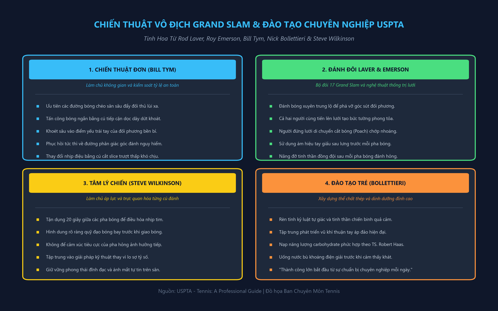
[English: Singles Court Geometry and Percentage Tennis Decision Matrix (Bill Tym)]
chiến thuật tối thượng của anh ấy trong trò chơi quần vợt là tính nhất quán. Cho dù bạn là người mới bắt đầu, người chơi trung cấp hay người chơi giải đấu cao cấp, tính nhất quán là vũ khí tàn khốc nhất của bạn. Việc bạn đánh bằng một tay hay hai tay hay bạn là người chơi Xoáy lên, xoáy xuống hay đánh mạnh không thực sự quan trọng, khả năng giành chiến thắng của bạn ở bất kỳ ume nào sẽ dựa trên mức độ nhất quán của bạn, khả năng trả lại mọi quả bóng sao cho nó đi qua lưới và bên trong đường biên.
Lựa chọn cú đánh tốt là nền tảng của một trò chơi hợp lý về mặt chiến thuật. Khi người chơi đạt đến một trình độ nhất định với những cú đánh cơ bản, cơ hội chiến thắng của họ sẽ phụ thuộc vào khả năng đánh đúng điểm, đúng vị trí, đúng thời điểm. Thành công phụ thuộc nhiều hơn vào vị trí và thời điểm bạn thực hiện cú đánh - hơn là cách bạn thực hiện cú đánh. Nếu bạn thực hiện cú đánh tuyệt vời nhất mà bạn từng đánh, nhưng đến sai vị trí và sai thời điểm thì bạn có thể sẽ mất điểm. Tuy nhiên, nếu bạn thực hiện cú đánh tệ nhất thế giới nhưng đến đúng nơi, đúng thời điểm, bạn có thể sẽ giành được điểm với người chiến thắng rõ ràng.
Hiện nay trên thế giới có hàng nghìn tay vợt đánh bóng tốt, nếu không muốn nói là giỏi hơn những vận động viên chuyên nghiệp được xếp hạng đang giành được số tiền lớn trong các giải đấu. Nhưng chúng ta sẽ không bao giờ nhìn thấy hay nghe thấy 99% những người chơi này vì họ không thể giành chiến thắng ở đẳng cấp cao. Việc họ không thể giành chiến thắng không phải là kết quả của sự kém cỏi về thể chất, bởi vì trong nhiều trường hợp, họ có đôi chân nhanh hơn và khả năng điều hòa tốt hơn.
Việc họ không thể giành chiến thắng liên quan trực tiếp đến thói quen tinh thần hoặc chiến thuật không đầy đủ của họ. Chiến thuật hợp lý dựa trên hai khái niệm cực kỳ quan trọng. Để có thể chơi quần vợt một cách có chiến thuật, người chơi phải biết giới hạn và năng lực của mình là gì. Lựa chọn cú đánh tốt dựa trên sự hiểu biết của người chơi về khả năng của họ trong bất kỳ cú đánh nào vào bất kỳ lúc nào. Bạn đánh bóng mạnh đến mức nào trước khi tính nhất quán và độ chính xác của bạn giảm sút hoặc thất bại? Bạn có thể nhắm cú đánh của mình gần đường biên đến mức nào trước khi bắt đầu phun bóng rộng? Nói cách khác, mức độ chơi tối ưu của bạn là gì—bạn chơi tốt nhất trong những điều kiện hoặc hoàn cảnh nào? Áp lực, lực hoặc độ xoáy có ảnh hưởng đến tính nhất quán và độ chính xác của bạn không, và nếu có thì ở mức độ nào?
Nền tảng của lối chơi chiến thuật hợp lý là sự hiểu biết của cá nhân về giới hạn của mình tại bất kỳ thời điểm nào trong mọi trường hợp. Nếu một tay vợt không có được sự hiểu biết hoặc nhận thức về bản thân này thì không thể chơi quần vợt ổn định và giành chiến thắng ở cấp độ cạnh tranh cao hơn. Nhưng hiểu được giới hạn của mình chỉ là một nửa nền tảng. Nửa còn lại, cũng quan trọng không kém, là: người chơi phải sẵn sàng chơi trong giới hạn của mình - một khi họ đã thiết lập và đo lường được chúng. Tất cả người chơi đều có ý thức về TENNIS của mình: HƯỚNG DẪN CHUYÊN NGHIỆP Crosscourt kéo đối thủ ra nhiều giới hạn trong một số cú đánh nhất định, dù có ý thức hay vô thức, nhưng chỉ một tỷ lệ nhỏ sẵn sàng nhận ra giới hạn của họ và chơi trong giới hạn đó. Những tay vợt ưu tú sẵn sàng kỷ luật bản thân để chơi trong giới hạn của mình được cả thế giới quần vợt biết đến như những người chiến thắng.
Giới hạn số lần chụp của bạn có thể và sẽ bị ảnh hưởng bởi nhiều yếu tố khác nhau. Một trong những yếu tố chính ảnh hưởng trực tiếp đến chiến thuật là cách bố trí vật lý của sân. Nếu chúng ta bỏ qua các yếu tố khác và chỉ xem xét quy mô của sân thì chiến thuật về cơ bản là đơn giản. Tôi coi kế hoạch chiến thuật này là lý thuyết hình học. 'Uhus, đường chéo sâu (AB) tự động trở thành tỷ lệ đánh bóng cao hơn đường biên (AC)—với điều kiện tất cả các yếu tố khác đều bằng nhau.
Điều này đúng vì cú đánh nền Đánh chéo sân (cross-court) có thể đi được khoảng 821) feet, dài hơn gần 4,5 feet so với khoảng cách từ đường xuống, đo được là 78 feet. Cú ném Đánh chéo sân (cross-court) sẽ đi qua vùng lân cận của tâm lưới có chiều cao 3 feet, trong khi cú sút dọc biên sẽ đi qua lưới có chiều cao 3 feet rưỡi.
Vì vậy, đường Đánh chéo sân (cross-court) chiếm phần dài nhất của sân và phần thấp nhất của lưới, giúp cho cú đánh có tỷ lệ đánh cao hơn, an toàn hơn. Đường chéo (AB) sẽ kéo đối thủ của bạn ra khỏi đường biên và do đó tạo ra sơ hở lớn hơn—điều mà đường dưới (AC) không thể thực hiện được. Vì vậy, nếu chúng ta chỉ xem xét lý thuyết hình học thì cú đánh chéo sân (cross-court) là cú đánh tốt nhất của bạn.
Tuy nhiên, có những yếu tố khác nhất thiết phải được xem xét nếu bạn muốn thành công. Ba cân nhắc sẽ khiến bạn thực hiện những sửa đổi cần thiết đối với lý thuyết hình học là: (1) vị trí của bóng so với bạn, (2) vị trí của lưới so với bạn và (3) vị trí của đối thủ so với bạn. Nếu chúng tôi mở rộng từng điểm cân nhắc này, bạn có thể thấy chúng sẽ ảnh hưởng đến chiến thuật của bạn như thế nào.
(1) Vị trí của bóng và (2) Vị trí của lưới so với bạn. Khi bóng ở mức thấp (dưới mức lưới) và bạn đang căng người về phía trước (về phía lưới), tỷ lệ cú đánh cao nhất của bạn vẫn sẽ là cú đánh chéo sân (cross-court). Bóng nảy càng thấp và bạn càng bị kéo về phía và ra ngoài đường biên, hoặc bạn càng bị kéo gần lưới thì cú đánh chéo sân (cross-court) (cross-court) càng trở thành một cú đánh đúng đắn về mặt chiến thuật.
Khi bóng nảy cao hơn (trên mức lưới) và gần lưới hơn, nguy cơ đánh xuống đường biên sẽ giảm—mặc dù về mặt hình học, A ép B ra rộng bằng đường chéo và đánh xuống đường biên cho người thắng khi B không phục hồi được vị trí TENNIS: HƯỚNG DẪN CHUYÊN NGHIỆP đường chéo vẫn là lựa chọn tốt hơn. Hãy nhớ rằng chúng ta vẫn dựa trên lý thuyết này với giả định rằng tất cả các yếu tố khác đều ngang bằng, tức là đối thủ của bạn không có điểm yếu nào nổi bật.
(3) Vị trí của đối thủ trong mối quan hệ với bạn. Việc cân nhắc này sẽ có ảnh hưởng rất đáng kể đến chiến thuật của bạn và bất kỳ sửa đổi nào bạn có thể thực hiện. Nếu đối thủ của bạn bị kéo rộng về phía thuận tay và duy trì vị trí sân đó thay vì quay trở lại Vị trí trên sân tối ưu gần giữa đường cuối sân, thì cú đánh nền dọc biên sẽ trở thành một lựa chọn hấp dẫn và hiệu quả đối với cú đánh chéo bàn vì đối thủ của bạn lúc này đang chạy hoàn toàn về phía trái tay của họ. Độ trả bóng của đối thủ càng cao và bạn có thể thực hiện cú đánh từ dưới lưới của mình càng gần lưới thì cú đánh sẽ càng hiệu quả. Ví dụ: A đánh vào B, B đứng rộng sau khi trả lại đường chéo cho A, A sau đó đánh bóng dọc biên.
Tuy nhiên, nếu B trả lại sức mạnh và chiều sâu cho A, thì A sẽ ở lại với đường chéo. Thời điểm tối ưu để xuống tuyến là khi B không lấy lại được vị trí ở giữa sân sau và đánh một quả bóng ngắn, yếu về phía A. Việc lựa chọn cú đánh cũng phải thay đổi tùy theo điểm mạnh và điểm yếu của đối thủ so với điểm mạnh và điểm yếu của bạn. Ví dụ: bạn có thể nhận thấy sau một vài ván đấu rằng đối thủ của bạn có Cú trái tay (backhand) tay mạnh hơn bạn và đang giành được phần trăm điểm cao khi bạn áp dụng kiểu Cú trái tay (backhand) chéo bàn.
Trong những trường hợp này, nguy cơ thực hiện cú đánh có tỷ lệ phần trăm thấp hơn (phá góc và đánh trúng đường biên) có thể xứng đáng với Điểm lợi thế (advantage) mà bạn đạt được. Bạn nên cố gắng hết sức để thiết lập những khuôn mẫu mà bạn Sự tự tin và cho phép bạn kết hợp điểm mạnh của mình với điểm yếu của đối thủ bất cứ khi nào và bất cứ nơi nào có thể.
Nhiều kỳ thủ hàng đầu trong cuộc thi đấu của nam và nữ sử dụng kế hoạch thi đấu Đánh chéo sân (cross-court) cơ bản và kết hợp các sửa đổi khi cần thiết. Điều quan trọng cần lưu ý là hầu hết các đường chéo của họ diễn ra ở đâu để diễn giải chính xác chiến thuật của họ. Khi phân tích hiệu suất của các tay vợt đẳng cấp thế giới, chúng tôi nhận thấy rằng khoảng 80 phần trăm các cú đánh của họ, cho dù đó là những cú đánh nền hay vô lê hay từ trên cao, đều tiếp đất trong các đường chấm của biểu đồ như được hiển thị.
Thật không may, hầu hết khán giả chỉ nhớ lại 20 phần trăm tiếp đất gần vạch hơn. Kết quả là nhiều nhà quan sát không thể giải thích chính xác cách chơi của những tay vợt giỏi nhất thế giới. Họ tin rằng những người chơi hàng đầu thực sự đang nhắm vào các đường khi ee eas eat aay en | Seana ea anion tôi tôi tôi tôi tôi tôi ii tôi ! i i I I Tám mươi phần trăm tất cả các cú đánh đều rơi vào các đường chấm chấm, chúng chạm bóng trong vùng 20 phần trăm. Bjorn Borg, trong cuốn sách của mình, nói rằng anh ấy nhắm xa hơn một hoặc hai yard so với đường giao bóng và khi bóng chạm gần đường biên thì đó là một "tai nạn". Tôi tin rằng đây là một thông tin quan trọng. Nếu bạn định chơi quần vợt đúng đắn về mặt chiến thuật, bạn phải nhận ra rằng bạn thiếu sự phối hợp và phối hợp "hoàn hảo" và do đó, cần phải thiết lập một điểm ngắm thận trọng bên trong các đường nếu bạn muốn nhất quán và thành công.
Một kế hoạch trò chơi hợp lý về cơ bản có thể bao gồm các chiến thuật sau: khi đối thủ của bạn đánh một cú sâu hoặc buộc phải đánh vào khu vực sân sau của bạn, sau đó tự động phản ứng bằng cú đánh chéo cơ bản—mang lại cho bạn biên độ an toàn lớn nhất. Đây là tỷ lệ đánh có tỷ lệ cao nhất, đặc biệt khi bạn đang gặp áp lực và nó sẽ giúp mở rộng sân của đối thủ. Tôi sẽ làm điều này 80% thời gian trong những điều kiện này.
Khi đối thủ của bạn đánh một quả bóng ngắn với tốc độ chậm hơn, bạn có thể phá góc hoặc đáp trả bằng cách đánh bóng vào điểm yếu của đối thủ hoặc cú đánh hạn chế hơn. Nếu cú đánh của đối thủ ngắn và yếu, hãy cầm bóng "ngắn" khi đang trên cao (hoặc càng sớm càng tốt) và đánh cú đánh tiếp cận (approach shot) của bạn vào cú đánh hạn chế hơn của đối thủ. Không phải lúc nào tôi cũng làm điều này, có lẽ là 80%.
Khi bạn ở trên lưới và thấy mình ở tư thế vô lê "phòng thủ", hãy vô lê sâu tới cú đánh yếu hơn của đối thủ—đặc biệt nếu nó ở cuối đường biên—80% thời gian. Khi bạn ở tư thế bắt vô lê "tấn công", hãy tấn công cú vô lê và đánh nó càng cao và càng gần lưới càng tốt với sơ hở "rõ ràng" trong 80% thời gian.
Điều cân nhắc chính của bạn khi lựa chọn cú đánh là chỉ thử những cú đánh mà bạn biết mình có thể thực hiện. Việc xem xét thứ yếu là đối thủ của bạn đang ở đâu. Nhiều người chơi mắc phải sai lầm chiến thuật nguy hiểm khi đảo ngược những cân nhắc này. Họ cố gắng đánh vào sơ hở, nhưng không cân nhắc được liệu mình có thể thực hiện được cú đánh hay không. Nếu đối thủ của bạn đã lấy được lưới và bạn bị rớt xuống sân sau, đừng sợ hãi.
Các tay vợt thường bỏ lỡ những cú bắt volley vì họ quá lo lắng về người bắt vô lê trên lưới đến mức cố gắng thực hiện những cú bắt volley của mình quá tốt và do đó, mắc phải những lỗi không đáng có. Hãy tạo cho mình đủ lợi thế và đánh vào khu vực mục tiêu—trong giới hạn của bạn. Nếu người bắt volley thực hiện một cú đánh tiếp cận (approach shot) cưỡng bức và anh ta hoặc cô ta ở Vị trí trên sân tốt, thì cú bắt volley tốt nhất của bạn là trực tiếp vào anh ta hoặc cô ta: 1.
Ở phần giữa của đối thủ nếu bạn muốn đánh một đòn mạnh. TMm Ở chân đối thủ của bạn (chip hoặc topspin) nếu Đối thủ của bạn dự đoán một cú lốp bóng (lob) và không ở gần lưới. 3. Qua đầu đối thủ (loạn bóng) nếu đối thủ của bạn đang dồn lưới. Khi bắt volley, hãy nhớ rằng không có gì sai khi đánh bóng mạnh hoặc nhắm gần đường biên ngang. Vấn đề nảy sinh khi bạn cố gắng làm cả hai việc này cùng một lúc. Một chiến thuật hiệu quả là phá vỡ góc (đánh xuống đường thẳng của một cú đánh chéo sân (cross-court) về phía bạn) khi đánh tới một sơ hở. Bạn có thể ngăn ngừa lỗi bằng cách tăng tỷ lệ lợi thế trên lưới và bên trong đường khi bẻ góc hoặc khi tăng công suất. Không có gì sai khi đi xuống đường biên ngoài một đường Đánh chéo sân (cross-court), miễn là bạn có đủ khoảng trống để bù đắp cho việc đánh sai hoặc đánh sai. Cũng không có gì sai khi tăng sức mạnh cho các cú đánh của bạn, miễn là bạn cũng tăng lợi thế bằng cách di chuyển mục tiêu tưởng tượng của mình đến một vị trí thận trọng hơn. Hầu hết các tay vợt không mắc lỗi vì họ nhắm bóng quá gần vạch vôi hoặc do họ đánh bóng quá mạnh. Lỗi xảy ra do người chơi cố gắng đánh bóng quá gần đường biên và đồng thời đánh mạnh hơn.
Hãy nhớ rằng cú lốp bóng (lob) là một trong những cú đánh mang tính chiến thuật toàn diện nhất. Khi bạn bị rút khỏi sân, nó cho phép bạn có thêm thời gian để trở lại Vị trí trên sân tốt. Nếu bạn ngụy trang cú lốp bóng (lob) của mình và sử dụng nó thường xuyên để chống lại những người bắt bóng hung hãn, cú lốp bóng (lob) sẽ nâng cao khả năng bắt volley của bạn và khiến đối thủ mệt mỏi. Nếu bạn gặp khó khăn với cú lốp bóng (lob) của mình, hãy đánh nó về phía trái tay của đối thủ; ngay cả một cú lốp bóng (lob) kém cũng có thể rất hiệu quả đối với Cú trái tay (backhand) tay.
Chiến thuật tốt không nhất thiết phải luôn luôn chơi thận trọng hoặc chơi rụt rè. Bạn nên học cách chơi theo giới hạn cũng như trong giới hạn của mình. Khi bạn có cơ hội chơi tích cực và đánh có uy quyền, bằng mọi cách đừng ngần ngại làm như vậy. Giống như việc chơi nhất quán là hợp lý về mặt chiến thuật, việc chơi mạnh mẽ khi có cơ hội cũng là hợp lý.
Tôi cũng khuyên bạn nên chấp nhận một số rủi ro vào những thời điểm cụ thể trong suốt trận đấu, đặc biệt khi rủi ro xứng đáng với Điểm lợi thế (advantage) tiềm năng đạt được. Thời điểm thông minh để mạo hiểm là khi tỷ số có lợi cho bạn. Hãy nhớ rằng mọi điểm đều quan trọng, nhưng một số điểm chắc chắn quan trọng hơn những điểm khác và được gọi là TENNIS quan trọng: Điểm HƯỚNG DẪN CHUYÊN NGHIỆP. Mặc dù tất cả người chơi đều mắc lỗi không thể bắt buộc trong suốt trận đấu của họ, nhưng người chiến thắng cuối cùng không mắc lỗi ở những điểm quan trọng này. Điểm đầu tiên và thứ tư của mỗi trò chơi là điểm quan trọng.
Nhưng có lẽ quan trọng nhất là điểm game. Bạn nên thư giãn trước mỗi điểm quan trọng này và lập trình cho bản thân để trở nên nhất quán. Các trò chơi quan trọng là trò chơi đầu tiên, trò chơi thứ bảy và trò chơi theo set. Bằng cách giảm thiểu sai sót, bạn sẽ tăng cơ hội thành công. Nỗ lực tối đa vào các điểm và trò chơi quan trọng sẽ đảm bảo thành công mà bạn đang tìm kiếm. Nhận biết giới hạn của bạn và sẵn sàng chơi trong giới hạn của bạn. Hãy kiềm chế bản thân làm những việc bạn muốn làm và bắt bản thân làm những việc bạn phải làm để giành chiến thắng.
Nếu bạn đã áp dụng một chiến thuật cụ thể và không thành công với nó—thì hãy thay đổi nó. Câu nói cũ nói rằng “thay đổi một ván thua nhưng vẫn giữ ván thắng” là một lời khuyên rất đúng đắn và một chiến lược tốt. Bất kể bạn đang sử dụng chiến thuật hay mô hình nào, bạn đều có thể cải thiện cơ hội chiến thắng một cách có hệ thống nếu bạn giải quyết vấn đề trước mắt theo cách sau. Nếu đối thủ của bạn lên lưới và bạn Cú lốp bóng (lob), nhưng cú lốp bóng (lob) của bạn không tốt lắm và đối thủ của bạn vượt lên trên để giành chiến thắng, bạn có thể khắc phục vấn đề theo nhiều cách. Trước tiên, hãy tự hỏi bản thân xem liệu bạn có thể đánh tốt hơn mà vẫn duy trì được tính nhất quán và chính xác hay không. Rất có thể bạn không thể hoặc bạn đã làm được điều đó ngay từ đầu. Nếu đúng như vậy, bạn nên tự hỏi liệu mình có thể đánh một cú khác và thành công hơn không. Thay vì Cú lốp bóng (lob), có lẽ bạn có thể chọc bóng vào chân đối thủ hoặc chuyền cho họ dọc biên hoặc Đánh chéo sân (cross-court). Nếu các tùy chọn này không hiệu quả, thì bạn có thể thử đánh cùng một cú đánh—nhưng sau đó dự đoán xem đối thủ của bạn sẽ đánh ở đâu. Lựa chọn chiến thuật thứ tư là tránh tình huống tương tự bằng cách tự mình vào lưới để đối thủ của bạn phải thực hiện cú sút chuyền. Bằng cách giải quyết vấn đề trước mắt theo cách này, cuối cùng bạn sẽ tìm ra mô hình phù hợp với mình khi đối đầu với đối thủ mà bạn đang chơi vào ngày hôm đó. Thay vì trở nên thất vọng và trầm trọng hơn khi trận đấu diễn ra, bạn sẽ tích cực và Sự tự tin hơn, và cuối cùng tìm ra sự kết hợp phù hợp để giành chiến thắng.
Đôi khi chiến thuật đơn giản nhất lại là tốt nhất. Nếu đối thủ của bạn đánh bại bạn bằng cách lặp lại một mẫu đã định sẵn, bạn có thể thành công khi dùng lửa chữa cháy. Nếu anh ta hoặc cô ta vào lưới và giành chiến thắng, có lẽ bạn nên vào lưới. Mặc dù bạn có thể không Sự tự tin trên lưới nhưng bạn đang ngăn cản đối thủ của mình giành chiến thắng ở vị trí mà họ mong muốn.
Nhiều khi người chơi không thể giành chiến thắng vì cố gắng áp đảo đối thủ về mặt thể lực và TENNIS: HƯỚNG DẪN CHUYÊN NGHIỆP không thể làm được điều đó. Hãy nhớ rằng quyền lực chỉ là một dạng áp lực mà bạn có thể áp dụng. Một số người chơi thực sự phát triển mạnh nhờ một cú đánh bóng có lực, vì vậy điều quan trọng là phải sử dụng các phong cách chơi thay thế. Nếu bạn đang thua, hãy giữ đối thủ của bạn trên sân càng lâu càng tốt. Trận đấu càng kéo dài thì bạn càng có cơ hội làm đối thủ mệt mỏi, cả về thể chất lẫn tinh thần.
Một số người chơi gặp khó khăn với những cú đánh có tốc độ thay đổi quá mức. Bạn có thể thay đổi tốc độ bằng cách đánh với Xoáy lên hoặc xoáy xuống, bằng cách giật hoặc thả nổi các cú đánh của bạn sâu, hoặc cắt bóng và giữ chúng ngắn và thấp. Hãy dành thêm thời gian trước khi bắt đầu điểm của bạn để bạn có thể tự lập chương trình cho nhiệm vụ trước mắt. Việc sử dụng các yếu tố để tạo Điểm lợi thế (advantage) cho mình không phải là tinh thần thể thao kém mà đúng hơn, đó là một mưu đồ chiến thuật xuất sắc. Nếu mặt trời chói chang hoặc gió thổi khiến bạn khó đánh trúng đầu, hãy kéo đối thủ của bạn vào lưới—hãy làm cho các yếu tố có lợi cho bạn. Nếu gió thổi về phía đối thủ, hãy đến gần lưới vì bạn sẽ khó vượt qua hơn khi gặp gió mạnh. Nếu gió ngược với bạn, hãy sử dụng kết hợp cú sút/cú lốp; cả hai cú đánh đều có thể hiệu quả hơn nếu có sự hỗ trợ của gió.
Quan trọng nhất, bạn phải giữ thái độ điềm tĩnh và cái nhìn tích cực. Với cái nhìn tích cực và tinh thần cởi mở, bạn có cơ hội tốt hơn để tìm ra chiến thuật hiệu quả. Hãy giữ đầu óc cởi mở, linh hoạt trong suy nghĩ và đừng ngần ngại thử nghiệm khi thua cuộc. Tóm lại, những điểm chính cần ghi nhớ là: 1. Tính nhất quán là vũ khí tối thượng của bạn.
2. Chơi trong giới hạn của bạn—nhưng đừng ngần ngại chơi theo giới hạn của bạn. 3. Khi chịu áp lực hoặc gây áp lực, cú đánh chéo sân (cross-court) là cú đánh chiến thuật đúng đắn nhất. 4. Đừng sử dụng quá nhiều trí tưởng tượng khi bắt volley “vào đối thủ”. 5. Luôn thay đổi ván thua. 6. Duy trì thái độ tích cực. Những người chơi chiến lược và chiến thuật đánh đôi của Bill Tym luôn là những người chơi đánh đôi giỏi.
Frank Sedgman và John Bromwich là một đội đẳng cấp thế giới từ tận năm 1950. Họ được thành công bởi Sedgman và McGregor, Hoad và Rosewall, Fraser và Cooper, Laver và Emerson. Năm đội này chiếm đúng một nửa số danh hiệu Wimbledon và US Open giành được từ năm 1950 đến năm 1960. Gần đây nhất là US Open 1981 hơn 20 năm sau, John Newcombe và Fred Stolle vào bán kết, thua đội số một thế giới, McEnroe và Fleming trong 5 set sát nút. Điều gì đã tạo nên kỷ lục thành công ở nội dung đánh đôi này?
Đầu tiên và quan trọng nhất, như chúng ta sẽ thấy, đánh đôi là một trò chơi tấn công đề cao các chiến thuật tấn công. Vì bề mặt phổ biến nhất ở Úc vào thời chúng ta là cỏ nên tất cả người Úc đều thông thạo các kỹ thuật giao bóng và cú volley cũng như chiến thuật tiếp bóng tích cực cần thiết để thành công ở cấp độ quốc tế. Ngoài ra, tất cả chúng tôi đều may mắn được huấn luyện và thi đấu cho đội trưởng Davis Cup người Úc, Harry Hopman. Bởi vì "Hop" đã là đội trưởng Davis Cup trong nhiều năm, tất cả chúng tôi đều phát triển tinh thần đồng đội mạnh mẽ, vì vậy bất kỳ hai người Úc nào trong thời đại của chúng tôi đều có khả năng trở thành mối đe dọa trong nội dung đánh đôi khi họ tham gia. Cả hai sẽ tự động có những trận đấu quyết liệt trên Sân cỏ và xu hướng đồng đội dẫn đến thành công ở nội dung đánh đôi.
Nhưng bạn không cần phải là người Úc để trở thành một tay vợt đánh đôi giỏi. Chỉ cần tìm hiểu các nguyên tắc đánh đôi mà chúng tôi mô tả trong các trang sau, xác định đội hình giao bóng và nhận bóng tốt nhất của đội bạn theo kỹ năng của bạn, đồng thời bắt đầu suy nghĩ chiến lược trên sân và bạn sẽ là một đội được đánh giá cao. Các nguyên tắc cơ bản làm nền tảng cho việc chơi đôi thành công thực sự khá đơn giản. Chúng theo thứ tự: 1.
Giữ bóng trong cuộc. 2. Chơi cùng nhau như một đội. 3. Tấn công! Nguyên tắc đầu tiên khá rõ ràng nhưng nhiều người chơi đánh đôi không tuân theo khi chơi kém hoặc thua. Nhiều tay vợt đánh đôi cố gắng mô phỏng các chiến thuật và kỹ thuật mà họ đã quan sát được ở các giải đấu chuyên nghiệp, mặc dù họ không có những kỹ năng cần thiết. Nên đánh đôi trên lưới, nhưng nếu cú vô lê của bạn quá tệ và lối chơi ở sân sau của bạn mạnh, hãy đứng ở vạch cuối sân trong các trận đấu trong khi bạn thực hiện cú vô lê của mình trong khi luyện tập. Dần dần bạn sẽ phát triển kỹ năng và Sự Sự tự tin để bắt lưới. Nếu có ai chỉ trích vị trí sân sau của bạn, hãy nhắc họ rằng các đội ở cấp độ chuyên nghiệp cao nhất thường là TENNIS: HƯỚNG DẪN CHUYÊN NGHIỆP Se 7 AY Sy a a ee a
Nghệ Thuật Đánh Đôi Thống Trị Lưới Của Rod Laver & Roy Emerson
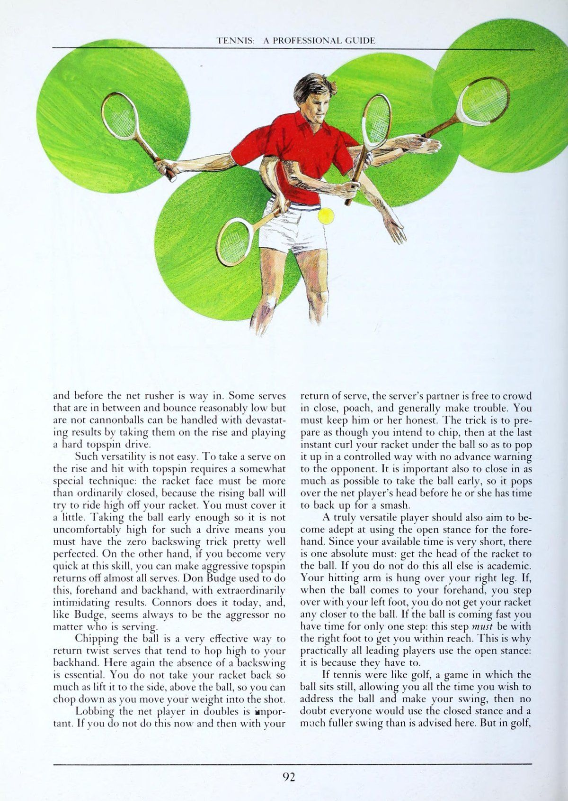
[English: Doubles Formations and Net Domination: Australian Formation & Poaching Tactics]
nhận bóng với cả hai tay vợt phía sau đường cuối sân, và "Peaches" Bartkowicz và Nancy Richey của Hoa Kỳ đã hình thành một mối quan hệ đối tác rất thành công vào cuối những năm 1960 khi không bao giờ chạm lưới, ngay cả khi giao bóng. Nancy và "Peaches" là những người tấn công và vận động hành lang cừ khôi. Bằng cách chơi lùi, họ đã tăng cơ hội giữ bóng trong cuộc. Và họ đang tuân theo nguyên tắc thứ hai của việc tăng gấp đôi: tinh thần đồng đội. Bởi vì mỗi người nhận ra sự miễn cưỡng của người kia trong việc thực hiện tư thế vô lê trên lưới, họ đã ném tư thế đánh đôi truyền thống ra ngoài cửa sổ. Sức mạnh của họ với tư cách là những tay vợt cơ bản và sự sẵn sàng chơi cùng nhau của họ ở đó là quá đủ để đánh bại nhiều đội giao bóng và bắt volley mà họ phải đối mặt. Làm việc theo nhóm rất quan trọng trong đánh đôi vì hai lý do. Đầu tiên, một đội chơi song song sẽ mạnh hơn một đội chơi lên và lùi. Vì vậy, các đội nên gắn bó với nhau về mặt thể chất. Nếu đối tác của bạn lên lưới, bạn cũng nên làm như vậy, và nếu đối tác của bạn rút lui để che một cú lốp bóng (lob), thì bạn cũng vậy.
Thứ hai, hai tay vợt trên sân cùng nhau phải hỗ trợ lẫn nhau để đội thi đấu tốt. Giao tiếp giữa các đối tác là rất quan trọng để giữ tinh thần và nhiệt huyết; gần như không thể chơi tốt đôi trong im lặng. Các đội giỏi bao gồm các đối tác tôn trọng ý kiến của nhau, cùng nhau lên kế hoạch chiến lược, khen ngợi nhau về những cú đánh dẫn đến cú đánh bóng và nói chung là tích cực khi chơi cùng nhau.
Là một ví dụ về tinh thần đồng đội tốt, Đối tác của Người giao bóng, nhận thấy rằng Người giao bóng đang gặp khó khăn với giao bóng của mình trong một trò chơi cụ thể, có thể đề nghị bắt lưới can thiệp (poaching) thường xuyên hơn để giảm bớt áp lực cho Người giao bóng. Hoặc Đối tác của Server có thể tư vấn rằng hầu hết các lỗi của Server đều nằm ở lưới, những thông tin có thể giúp Server lấy lại phong độ. Dù thế nào đi nữa, Đối tác của Người giao bóng không âm thầm khắc phục những khó khăn của Người giao bóng mà tích cực giúp đỡ khắc phục những khó khăn đó.
Nguyên tắc thứ ba của đánh đôi, tấn công, được chia thành ba phân nhóm. Tấn công lãnh thổ bằng cách lấy lưới. Tấn công vật lý bằng cách lấy bóng càng sớm càng tốt ở mọi cơ hội. Và tấn công tinh thần bằng cách duy trì Sự tập trung như một đội trong suốt trận đấu. Lưới là điều quan trọng trong đánh đôi và bạn nên cố gắng hết sức để cải thiện khả năng vô lê của mình để có thể trở thành một tay vợt tấn công đánh đôi.
Hai tay vợt trên lưới cùng nhau chỉ có chiều rộng hơn chiều rộng của một sân đơn để phòng thủ là 9 feet, và tất cả chúng ta đều biết việc vượt qua một tay vợt đơn trên lưới sẽ khó đến mức nào. Vì vậy, hai người chơi đánh đôi trên lưới mang lại một cảm giác khó chịu vô cùng. Bằng cách chiếm lưới, những người chơi đánh đôi giỏi sẽ có được khoảng cách rộng hơn. Đội hình đánh đôi này cho phép bao phủ gần như hoàn toàn. ''Một lên, một lùi'' để lại một khu vực dễ bị tổn thương ở giữa mà không người chơi nào có thể che chắn được.
TENNIS: HƯỚNG DẪN CHUYÊN NGHIỆP Tiêu chuẩn tăng gấp đôi góc vị trí để chơi và nhiều cơ hội đánh xuống sân hơn cho người chiến thắng. Họ ở gần lưới hơn nên họ sẽ gặp ít khó khăn hơn khi đánh qua lưới. Rõ ràng, các tay vợt tấn công đôi đang tạo cho mình cơ hội tốt hơn để giữ bóng trong cuộc, đồng thời họ đang gây áp lực tấn công rất lớn lên đội kia. Vì vậy, hãy tấn công!
Bạn có thể cải thiện khả năng xâm lược lãnh thổ của mình bằng cách học cách chơi bóng sớm. Bạn càng hung hãn trên lưới thì bạn càng có nhiều góc và khoảng trống qua lưới. Bạn đứng càng gần để nhận giao bóng thì bạn càng sớm về lưới sau khi Trả giao bóng và đội giao bóng sẽ có ít thời gian hơn để đến được vị trí của họ trên lưới. Học cách giảm bớt cú đánh của bạn. Một cú đánh trả rất ngắn, gần giống như một cú vô lê, sẽ cho phép bạn đứng gần hơn và khuyến khích bạn đánh bóng ra phía trước, với toàn bộ trọng lượng của bạn dồn vào phía sau cú đánh. Khi giao bóng, hãy học cách giao bóng ở tốc độ %4 để bạn có thể tiến gần vào lưới cho cú vô lê đầu tiên của mình.
Tốc độ và tốc độ khi giao bóng ít có giá trị gấp đôi so với vị trí và tính nhất quán. Thực hiện cú giao bóng đầu tiên của bạn sâu về phía trái tay và áp sát cho cú vô lê đầu tiên của bạn và ngay cả những tay vợt giỏi cũng sẽ gặp khó khăn trong việc bẻ giao bóng của bạn. Cuối cùng, tấn công tinh thần bằng cách duy trì Sự tập trung của bạn. Rất nhiều trận đấu đôi diễn ra trong ba set vì đội thắng set đầu tiên sẽ tạm thời thư giãn trong khi đội kia bắt đầu thi đấu và trong vài phút nữa họ sẽ bắt đầu set thứ ba quyết định.
Những người chơi đôi giỏi khuyến khích nhau liên tục hung hãn. Một lần nghỉ giao bóng là không đủ và một hiệp cũng không đủ. Đội đánh đôi nhẹ nhõm vì dẫn trước đang chuốc lấy rắc rối. Tâm lý sa sút ngay lập tức dẫn đến thiếu quyết liệt và quyết đoán trên lưới, và ngay sau đó, đội thua nhận ra rằng họ có thể giành chiến thắng bằng lối chơi hung hãn, và bây giờ bạn lại phải đấu chó thay vì một chiến thắng dễ dàng.
Hãy ghi nhớ những nguyên tắc nhân đôi này sẽ cung cấp cho bạn những hiểu biết mới mẻ về các vị trí bạn nên đảm nhận trên sân trong các vai trò khác nhau của mình là Người giao bóng, Đối tác của Người giao bóng, Người nhận và Đối tác của Người nhận. Hầu hết những người chơi đánh đôi không bao giờ ngừng suy nghĩ về lý do tại sao họ đảm nhận những vị trí nhất định trên sân. Những người chơi đánh đôi mới bắt đầu theo dõi các trận đánh đôi đang được chơi và bằng cách quan sát, họ sớm phát hiện ra rằng bốn người chơi (Người chủ, Đối tác của Người giao bóng, Người nhận và Đối tác của Người nhận) thường đảm nhận các vị trí giống nhau trước khi giao bóng, vì vậy họ làm theo. Nhưng có những lý do tại sao những vị trí này được đảm nhận, và nếu bạn sử dụng cái đầu của mình trong thế đôi, bạn sẽ thấy rằng thường có những lý do tại sao những vị trí này không nên được đảm nhận một cách tự động.
Chúng ta hãy xem xét các vị trí đánh đôi tiêu chuẩn và lý do tại sao chúng là tiêu chuẩn. Sau đó chúng ta sẽ thảo luận về một số quan điểm thay thế và lý do cho chúng. Trong sơ đồ, cả bốn người chơi đều ở vị trí bình thường (hoặc tiêu chuẩn) để đánh đôi trước điểm đầu tiên. Người giao bóng (S) đứng rộng để che chắn cú Trả giao bóng của Người nhận (R), cú Trả giao bóng này sẽ ở góc Đánh chéo sân (cross-court) so với Đối tác của Người giao bóng (SP) trên lưới. Đối tác của người nhận (RP) đứng trên vạch giao bóng trên nửa sân của mình, sẵn sàng tiến về phía trước hoặc rút lui khi điểm phát triển. Nếu Người nhận trả về rộng và thấp, Đối tác của Người nhận sẽ chuyển sang lưới; tuy nhiên, nếu Người nhận trả về mức cao và nhẹ, Đối tác của Người nhận sẽ vội vàng rút lui. Ở trình độ chuyên môn cao nhất, cả bốn tay vợt sẽ tiến về phía lưới hầu hết thời gian, ngay khi bóng vào cuộc. Đó là bởi vì tất cả họ đều biết rằng những cú đánh đôi tốt sẽ giành chiến thắng trên lưới, vì vậy đó là nơi họ sẽ đến. Tuy nhiên, ở đầu bên kia của quang phổ, sẽ là vô nghĩa nếu yêu cầu một tay vợt mới bắt đầu, chưa học cách vô lê, lao vào lưới chỉ vì anh ta hoặc cô ta đang chơi đôi. Và có nhiều vùng xám ở giữa. Vì vậy, chúng ta hãy xem xét kỹ hơn bốn vị trí đánh đôi cơ bản của mình và sau đó là một số vị trí thay thế.
Người giao bóng thường đứng khá rộng để giao bóng nhằm có thể bao quát góc trả bóng khi họ vào lưới trong cú vô lê đầu tiên, sau khi giao bóng. Tuy nhiên, nhiều tay vợt câu lạc bộ không thực sự biết cách giao bóng và vô lê, và vì vậy họ đứng lùi lại sau khi giao bóng. Điều này dẫn đến "One Up One Back", một đội hình phổ biến cho các câu lạc bộ đôi. Ưu điểm của đội hình này là người chơi ở sân sau có thể che bóng qua đầu đối tác, trong khi người chơi trên lưới có thể tự do di chuyển trên lưới và Sự tự tin rằng đối tác sẽ che chắn phía sau mình. Một đội gồm một tay vợt thích lưới và một tay vợt ghét lưới sẽ phát hiện ra đội hình này rất nhanh. Tuy nhiên, nhược điểm là đội hình “One Up One Back” để lại một khoảng trống ở đường chéo giữa họ, và một đội có tư duy tấn công chắc chắn sẽ khai thác được điểm yếu đó.
(Xem hình minh họa.) Đối với những người chơi sẵn sàng và có khả năng thực hiện cú giao bóng của họ vào lưới, vị trí giao bóng gần điểm giữa hơn thường sẽ mang lại lợi ích ở hầu hết các cấp độ chơi. Bằng cách di chuyển về phía trung tâm, người giao bóng có thể dễ dàng giao bóng từ trung tâm hơn đến Cú trái tay (backhand) tay của người nhận thuận tay phải, điều này cho phép Đối tác của người giao bóng tự do hơn để tiến vào trung tâm và bắt lưới can thiệp (poaching). Hơn nữa, một người thuận tay phải trên sân Điểm 40–40 (deuce) thường có cú thuận tay (forehand) mạnh và Cú trái tay (backhand) tay yếu hơn. Và Điểm yếu của TENNIS ''One Up, One Back': HƯỚNG DẪN CHUYÊN NGHIỆP Đứng gần tâm điểm khi giao bóng cuối cùng, bằng cách giao bóng xuống giữa sân, người giao bóng buộc người nhận phải đánh từ trong ra ngoài, hoặc Đánh chéo sân (cross-court) ngược, Trả giao bóng trái tay. Đây là một cú đánh cực kỳ khó, một trong những cú khó nhất trong quần vợt. Không chỉ là một cú trả bóng khó thực hiện, mà cả người giao bóng đã buộc nó (do vị trí của anh ta hoặc cô ta gần với đường giữa) thường sẽ có thể tung cú vô lê về phía mình hoặc cú thuận tay (forehand) của cô ấy, điều này tốt hơn là chơi cú vô lê trái tay đối với hầu hết người chơi. Tất nhiên, nhược điểm là cú trả bóng ngắn, góc rộng gần như chắc chắn là người chiến thắng. Sau đó, một lần nữa, nếu đối phương của bạn có thể đánh được góc ngắn đó từ cú Trả giao bóng trái tay một cách nhất quán, thì bạn có thể đang vượt quá giới hạn của mình. Vì tất cả những lý do này, bạn nên thử nghiệm lập trường giao bóng của mình cho sân đấu Điểm 40–40 (deuce).
Ngược lại, việc Giao bóng / Cú giao bóng sân đấu quảng cáo mang lại ít sự lựa chọn hơn nhiều. Biến thể duy nhất ở đây có thể liên quan đến việc đứng rất rộng, để có được góc nghiêng mạnh hơn vào cú trái tay (backhand) của Người nhận. Đối tác của bạn vẫn có thể thực hiện các cú trả bóng ở giữa vì một cú trả bóng trái tay ở cuối đường sẽ rất khó khăn. Ở cấp độ câu lạc bộ, nơi mà hầu hết người chơi thiên về các cú thuận tay (forehand) của họ, chiến lược tốt có thể liên quan đến tư thế giao bóng trong đường đánh đôi, do đó, Người chủ có thể chơi các cú thuận tay (forehand) từ sân sau so với cú trả bóng có góc dự kiến.
Đối tác của người giao bóng sẽ luôn đảm nhận một vị trí trên lưới nơi họ có thể theo dõi những cú giao bóng tốt của đối tác bằng những cú vô lê dễ dàng dành cho người chiến thắng. Hầu hết những người chơi trung cấp có xu hướng đứng về phía con hẻm, nhưng những người chơi đẳng cấp thế giới luôn chiếm vị trí gần như chính xác ở giữa ô giao bóng của họ. Ở cấp độ của họ, họ biết rằng sự bùng nổ của cú giao bóng, dù là cú giao bóng đầu tiên hay thứ hai, sẽ cản trở bất kỳ cú trả bóng nào trong hẻm, vì vậy họ liên tục nhìn vào giữa. Tuy nhiên, ở trình độ trung cấp, đặc biệt là ở lần giao bóng thứ hai, Người nhận thường có thể thực hiện cú thuận tay (forehand) lớn, vì vậy Đối tác của người giao bóng phải ý thức hơn về con hẻm trong sân Điểm 40–40 (deuce). Vị trí của cú giao bóng rất quan trọng. Nếu Đối tác của Người giao bóng biết rằng Người chủ có thể kiểm soát cả hai quả giao bóng đến trung tâm sân, anh ta hoặc cô ta có thể thư giãn về con hẻm và tập trung vào trung tâm; các góc Trả giao bóng từ giữa sân đến ngõ hẻm không tốt lắm. Nếu Đối tác của người giao bóng cao và có khả năng vượt qua tốt, anh ấy hoặc cô ấy có thể thử chơi ở gần lưới hơn để có những cú vô lê hiệu quả hơn. Nhiều người chơi từ chối Cú lốp bóng (lob) khi Trả giao bóng, và nếu đúng như vậy, tại sao lại phải lùi lại để bảo vệ họ? Nếu họ Cú lốp bóng (lob), hãy điều chỉnh vị trí của bạn.
Khi Người giao bóng giao bóng tới phần sân trái tay, thậm chí còn có ít lý do hơn để che sân, vì cú trả trái tay dọc theo đường biên là một cú đánh rất khó. Nhưng nếu Người giao bóng thứ hai yếu và Đứng rộng khi giao bóng tới sân quảng cáo, để bảo vệ Người nhận sẽ di chuyển rộng khi người giao bóng di chuyển rộng trái tay yếu TENNIS: HƯỚNG DẪN CHUYÊN NGHIỆP oak | Đối tác của Người giao bóng S đứng ở giữa ô giao bóng để đối tác của Người giao bóng điều chỉnh tư thế trên lưới để bảo vệ điểm bắt đầu hẻm.
ở lần giao bóng thứ hai. Người nhận chạy xung quanh nó để Cú thuận tay (forehand), tốt hơn hết bạn nên ở đó để bảo vệ con hẻm đó! Vị trí của người nhận được quyết định bởi vị trí của Người giao bóng và cường độ giao bóng. Nhiều người chơi mắc sai lầm khi đứng sau vạch cuối sân một bước cho mọi kiểu giao bóng—rõ ràng là họ không sử dụng đầu của mình! Người nhận phải chiếm một vị trí gần như chia đôi các góc có thể có của Người giao bóng, đồng thời bảo vệ một chút khỏi cú giao bóng rộng sẽ khiến người giao bóng ra khỏi sân. Cú giao bóng rộng phải được trả ngang cơ thể một cách nghiêm ngặt để tránh người chơi lưới, vì vậy bên này phải được bảo vệ phần nào. Đó là lý do tại sao các tay vợt đánh đôi đẳng cấp thế giới thường đứng gần đường biên để nhận giao bóng. Mặc dù họ trông dễ bị tổn thương trước một quả giao bóng ở giữa, nhưng họ biết việc di chuyển sang bên đó sẽ giúp họ thực hiện cú trả bóng tương đối an toàn trong khi bị kéo căng, một điều không đúng khi quả giao bóng rộng.
Nếu bạn là một tay vợt có cú thuận tay (forehand) mạnh và Cú trái tay (backhand) tay yếu, bạn có thể sẽ muốn điều chỉnh vị trí nhận bóng của mình để có thể nhận được càng nhiều cú trả bóng từ cú thuận tay (forehand) càng tốt. Bạn có thể bỏ một vài con át bằng cách di chuyển sang để bảo vệ trái tay của mình, nhưng điều đó có thể tốt hơn là một loạt lỗi từ phía dễ bị tổn thương đó. Tất nhiên, về lâu dài, bạn phải chơi các cú trả bóng trái tay để cải thiện về mặt đó. Ở đây, bạn phải đưa ra quyết định dựa trên các ưu tiên ngắn hạn và dài hạn của mình với tư cách là một người chơi: khai thác cú thuận tay (forehand) mạnh hơn để đạt được lợi ích ngay bây giờ, với nguy cơ không bao giờ phát triển Cú trái tay (backhand) tay của bạn để thành công sau này. Sự lựa chọn là của bạn, nhưng bạn phải nhận ra rằng bạn phải lựa chọn!
Trường hợp hầu hết người chơi mắc lỗi là không điều chỉnh vị trí nhận bóng của họ về phía trước để tận dụng các người giao bóng yếu. Tại sao lại đứng phía sau (hoặc trên) đường cuối sân để nhận một cú giao bóng yếu khi bạn có thể di chuyển trong sáu hoặc bảy feet? Bằng cách chơi lượt trả lại sớm hơn, bạn cướp đi thời gian của người giao bóng để chuẩn bị cho lượt trả lại, bạn tiến gần hơn đến vị trí lưới thuận lợi và bạn giúp Đối tác của người giao bóng có ít thời gian hơn để giành lấy lượt trả lại của bạn. Rõ ràng, bạn sẽ có lợi nếu tiến xa nhất có thể, bất cứ khi nào có thể.
Ngoài việc chuyển sang giao bóng yếu, nếu bạn thiên về cú đánh này hơn cú đánh khác, hãy đảm bảo rằng bạn trả lại những cú giao bóng yếu bằng cú đánh mạnh hơn của mình. John Newcombe nổi tiếng với cú thuận tay (forehand) chạy vòng quanh này ở cả nội dung đánh đơn và đánh đôi. Bỏ lỡ quả giao bóng đầu tiên với "Newk" ở một điểm quan trọng và bạn biết rằng mình đang nhìn chằm chằm vào nòng súng - cú thuận tay (forehand) của anh ta. Nếu nó hiệu quả với Newcombe thì nó có thể hiệu quả với bạn.
Vị trí của người nhận chia đôi các góc của quả giao bóng, nhưng hơi thiên về phía thuận tay. TENNIS: HƯỚNG DẪN CHUYÊN NGHIỆP Những người chơi mạnh sẽ luôn cố gắng theo dõi cú Trả giao bóng của họ và chiếm lưới, nhưng nếu bạn không Sự tự tin với cú vô lê của mình, bạn có thể lùi lại. Điều này thường có nghĩa là bạn sẽ ở trong đội hình "One Up One Back" đã được thảo luận trước đó ở vị trí Người giao bóng. Ở đây, những ưu điểm và nhược điểm tương tự cũng đúng đối với Người giao bóng và Đối tác. Nói chung, tốt hơn hết bạn nên tham gia một số bài học về cú volley và học cách vào lưới là nơi thú vị—và đó là nơi bạn giành chiến thắng thường xuyên hơn.
Vị trí của Đối tác nhận là vị trí bị hiểu lầm nhiều nhất trong đánh đôi. Chúng tôi đã chứng kiến các tay vợt bị tiêu diệt hết điểm này đến điểm khác ở vị trí "nửa chừng" và họ không bao giờ điều chỉnh, đơn giản vì ai đó đã từng nói với họ rằng họ nên đứng trên vạch giao bóng. Lập trường của Đối tác nhận trên đường giao bóng chỉ là vị trí khởi đầu! Sau khi điểm đang diễn ra, Đối tác của Người nhận nên rút lui hoặc tiến lên, tùy thuộc vào mức độ quay trở lại của Người nhận. Nếu Người nhận ném nhầm một tay vợt yếu vào lưới, Đối tác của Người nhận phải nhanh chóng rút lui và cố gắng bảo vệ cú vô lê hoặc Cú đập trên đầu (smash) bóng sắp tới theo hướng của mình. Nhưng nếu Người nhận thực hiện cú trả bóng quá mạnh và thấp, Đối tác của Người nhận nên di chuyển nhanh chóng và tìm cơ hội để đánh chặn bằng một cú vô lê.
Ngược lại, cùng một Người giao bóng bắn đạn đại bác trong lần giao bóng đầu tiên có thể đưa ra một quả bóng phồng cho lần giao bóng thứ hai. Bây giờ Đối tác của Người nhận phải di chuyển từ vị trí cơ bản lên vị trí lưới, giống như thể đối tác đang giao bóng thay vì nhận! Có lý do nào tại sao không? Cú giao bóng không phải là mối đe dọa và người nhận chắc chắn sẽ trả đũa mạnh mẽ, vì vậy hãy tận dụng tình huống này và lao thẳng vào lưới để thực hiện cú vô lê chiến thắng.
Cú giao bóng thứ hai yếu là cơ hội để đội nhận giao bóng lật ngược thế cờ cho đội Giao bóng. Nếu Người nhận di chuyển tốt về phía trước trong lần giao bóng thứ hai và Đối tác của Người nhận chiếm vị trí trên lưới, Đội nhận sẽ đánh bại Đội giao bóng về lưới và sẽ giành được phần lớn số điểm! Tóm lại, không có một vị trí thích hợp nào để định vị bản thân trong các trận đấu đôi, cho dù bạn là Người giao bóng, Người nhận, Đối tác của Người giao bóng hay Đối tác của Người nhận. Vị trí của mọi người phụ thuộc vào các biến số mà chúng tôi đã đề cập. Định vị đôi tốt có nghĩa là sử dụng cái đầu của bạn!
Trong số các tay vợt hàng đầu hiện nay chỉ có John McEnroe liên tục chơi đánh đôi. Mối quan hệ của anh ấy với đối tác Peter Fleming là một ví dụ hoàn hảo về tinh thần đồng đội tốt. John là một tay vợt đánh đôi xuất sắc, hiếm khi chơi ít hơn người nhận giao bóng để Trả giao bóng thứ hai. một cách uyển chuyển. Ngược lại, Peter Fleming là McEnroe và Fleming đảm nhận các vị trí tích cực để đối tác của Người nhận đánh chặn trả lại quả giao bóng thứ hai.
TENNIS: NGƯỜI HƯỚNG DẪN CHUYÊN NGHIỆP, một tay đánh lớn có thể "bật" và "tắt" trong R cùng một trận đấu. (Xếp hạng đơn của Fleming trên máy tính ATP dao động trong khoảng từ 100 đến 400.) Nhưng John không bao giờ chỉ trích Peter trong một trận đấu; anh ấy luôn ủng hộ. John Sự tự tin rằng anh ấy có thể cầm chân đội của họ trong trận đấu cho đến khi Peter trở lại phong độ và đánh bại một vài người chiến thắng.
Và Peter, biết rằng John đang ở phía sau anh ta 100 phần trăm, tiếp tục giao bóng chăm chỉ và sử dụng kích thước 6' 5" của mình để che lưới sau những cú giao bóng của John và trả về cho đến khi các cú đánh của chính anh ta bắt đầu tìm lại dấu ấn. Ngay cả khi anh ta chơi kém, Peter hiếm khi thể hiện sự lo lắng của mình—làm như vậy sẽ khiến John thất vọng và chỉ có thể khuyến khích đối phương. Xếp hạng số một thế giới của McEnroe và Fleming là bằng chứng cho tính hiệu quả của tinh thần đồng đội của họ.
Ở trình độ cao của McEnroe và Fleming, một cú sút hiếm khi giành được điểm. McEnroe có một cú giao bóng tuyệt vời, như mọi người đều biết, nhưng anh ấy cần một đối tác năng nổ trên lưới để tận dụng điểm yếu, trả lại những cú giao bóng bắt buộc của anh ấy. Vì vậy, làm việc theo nhóm là cần thiết để giữ giao bóng. Tinh thần đồng đội thậm chí còn quan trọng hơn khi nhận giao bóng, vì cả hai người chơi phải làm việc cùng nhau để vượt qua Điểm lợi thế (advantage) của đội giao bóng.
McEnroe và Fleming thường sử dụng đội hình tiếp nhận cho phép họ áp dụng chiến thuật được gọi là "trôi" hoặc "đánh chặn". Vì họ muốn giành điểm trên lưới (chiến lược quan trọng nhất trong đánh đôi nâng cao), ngay cả khi đội kia đang giao bóng S, họ đã gây áp lực rất lớn cho những lần giao bóng thứ hai bằng cách đặt Đối tác của người nhận gần như ở chữ "T", nơi anh ta có thể tung cú vô lê đầu tiên kém cỏi của Người giao bóng. Trong đội hình này, họ đang đánh bạc rằng Người nhận sẽ có thể Trả giao bóng ở mức thấp, buộc Người giao bóng phải tung cú vô lê lên và Đối tác của Người nhận hiện đang ở vị trí hoàn hảo để chặn cú vô lê yếu đầu tiên bằng một người chiến thắng cú vô lê hung hãn. Người nhận phải thiết lập trận đấu với một pha trả bóng tốt và Đối tác của người nhận sẽ Kết thúc cú đánh điểm bằng một cú vô lê chiến thắng. Người bắt volley (Đối tác của người nhận) không phải lúc nào cũng bắt gặp vì nếu anh ta làm vậy, Người chủ sẽ bắt đầu bắt volley xuống vạch vôi để tìm người chiến thắng.
Người Úc gọi chiến thuật này là "Trôi" hoặc '''Đánh chặn." McEnroe và Fleming đã tận dụng nó cực kỳ hiệu quả, và cách chọn vị trí hung hãn của họ khiến những tay vợt vô lê bị đe dọa mắc nhiều lỗi. Tinh thần đồng đội tương tự đã được Tony Trabert và Vic Seixas sử dụng hiệu quả trong trận đấu đôi quyết định của Davis Cup 1954 tại Brisbane, Australia. Mặc dù Lew Hoad và Ken Rosewall được ưu ái giành chiến thắng trong trận đánh đôi, Trabert và Seixas đã phát triển một hệ thống tín hiệu bắt lưới can thiệp (poaching) đội hình "Úc" giúp họ có Điểm lợi thế (advantage). Trước Đội tuyển Davis Cup người Mỹ và Tây Ban Nha, TENNIS 1965: MỘT HƯỚNG DẪN CHUYÊN NGHIỆP được Giao bóng / Cú giao bóng, Đối tác của người giao bóng sẽ quay lưng về phía lưới (và đối phương) và dùng tín hiệu tay để cho Người chủ biết anh ta có định bắt lưới can thiệp (poaching) hay không.
Hoad và Rosewall đã bị hoãn trận đấu bởi lối chơi đồng đội quyết liệt đó và Davis Cup đã thuộc về Mỹ. Một đội hình đánh đôi nâng cao khác thường được gọi là "Australian", sau khi một số đội Australia đã sử dụng thành công nó vào những năm 1920, nhưng ở Australia chúng tôi gọi nó là "Song song". Dù bạn gọi nó là gì đi nữa, mục đích của đội hình là buộc Người tiếp nhận thay Đổi hướng bóng quay trở lại của mình. Thông thường chúng tôi sử dụng đội hình khi một tay vợt trở lại cực kỳ tốt. Bằng cách đặt Đối tác của Người giao bóng ở cùng một phía sân với Người chủ, Người nhận buộc phải thay đổi việc Trả giao bóng của mình từ Đánh chéo sân (cross-court) sang dọc biên và đôi khi sự thay đổi này đủ để làm giảm hiệu quả của việc Trả giao bóng. Ham Richardson và Alex Olmedo đã lật ngược thế cờ với chúng ta ở Davis Cup 1958 khi chơi "người Úc" trước những pha trả bóng Đánh chéo sân (cross-court) hiệu quả của Neale Fraser ở phần sân bên trái (với Mal Anderson là đồng đội), vô hiệu hóa những quả trả bóng của Fraser một cách hiệu quả.
Những người chơi kém tiến bộ hơn một chút có thể muốn thử đội hình "Úc" ở phần sân trái tay để cho Người giao bóng thực hiện cú vô lê thuận tay, thay vì cú vô lê trái tay đầu tiên thường trả lời một quả giao bóng Đánh chéo sân (cross-court) trong đội hình bình thường. Ngoài ra, bằng cách chơi "Tandem" Người giao bóng có Điểm lợi thế (advantage) là thực hiện cú vô lê đầu tiên của mình mà không bị người chơi lưới đối phương đe dọa ngay trước mặt họ, điều này có thể quan trọng về mặt tâm lý.
Lưu ý rằng tất cả các đội hình mà chúng tôi đã đề xuất đều đòi hỏi lối chơi tích cực trên lưới. Đó là bởi vì các trận đấu đôi nâng cao được chơi và giành chiến thắng trên lưới. Vì vậy, hãy tự mình lên đó! Rop Laver Roy EMERSON lO Chuẩn bị cho các trận đấu nếu bạn nghiêm túc với môn quần vợt của mình, sớm hay muộn bạn cũng sẽ tham gia một trận đấu trong giải đấu. Cạnh tranh là lò thử thách định hình trò chơi của bạn. Điểm yếu và điểm mạnh đều có xu hướng bị phóng đại bởi áp lực đi kèm với bất kỳ cuộc thi nào, vì vậy hãy xem mỗi trận đấu như một cơ hội để tìm hiểu thêm một chút về bản thân và trò chơi của bạn.
Đối với những người chơi mới tham gia thi đấu và ngay cả đối với một số người chơi trình độ cao, một ý tưởng giảm căng thẳng luôn dẫn đến sự tiến bộ là bước vào một trận đấu với một hoặc hai bàn thắng duy nhất. Ví dụ, có thể bạn biết rằng trước đây bạn đã gặp khó khăn khi Cú trái tay (backhand) dưới áp lực, vì vậy mục tiêu của bạn cho trận đấu sắp tới có thể là thực sự "bật" trái tay đó trong những tình huống mà trước đây bạn luôn có xu hướng đánh một lát hoặc một cú lốp bóng (lob) yếu. Bằng cách tập trung vào mục tiêu nhỏ hơn, cụ thể đó, bạn có thể thấy rằng khả năng tập trung tổng thể của bạn được cải thiện trong suốt trận đấu vì bạn không bị phân tâm bởi những suy nghĩ thắng và/hoặc thua, những suy nghĩ thường có thể cản trở hiệu suất của bạn bằng cách gia tăng căng thẳng. Ngoài việc giảm căng thẳng trên sân, việc đặt ra các mục tiêu cụ thể cho các trận đấu của bạn có thể giúp bạn tiến bộ nhanh hơn với tư cách là một tay vợt, bằng cách tập trung vào các chi tiết cụ thể và có thể giảm tác động tiêu cực của việc thua một trận đấu. Ngay cả khi bạn thua một trận đấu, bạn vẫn có thể đạt được một số kết quả tích cực bằng cách đạt được một hoặc hai mục tiêu mà bạn đặt ra trước cho mình, điều này sẽ giúp bạn mong chờ một ngày khác và một trận đấu khác.
Căng thẳng là một vấn đề nghiêm trọng ảnh hưởng đến mọi người tham gia giải đấu. Những đối thủ giỏi nhất là những người học cách sử dụng sự căng thẳng do cạnh tranh tạo ra để phát huy phong độ quần vợt tốt nhất của họ. Tuy nhiên, đối với hầu hết chúng ta, căng thẳng mang lại điều tồi tệ nhất. Khuỷu tay của chúng ta khóa lại, đầu gối của chúng ta bị đóng băng và bóng đi vào lưới hoặc lao vào điểm dừng. Có lẽ cách tốt nhất để biến sự căng thẳng của cuộc cạnh tranh thành một điều tích cực đối với bạn là đảm bảo rằng bạn đã chuẩn bị kỹ lưỡng mọi cách có thể cho trận đấu của mình. Xét cho cùng, việc đánh một quả bóng tennis khá khó khăn ngay cả khi bạn chỉ đang đánh bóng qua lưới. Càng khó khăn hơn khi người kia đang cố gắng ngăn cản bạn đánh bóng thành công. Và khi bạn thêm những mối nguy hiểm như khán giả, bạn bè, mặt trời, gió và vô số yếu tố khác, thì ngay cả việc tiếp xúc cũng có thể giống như một chiến thắng. Vì vậy, người chơi càng thành công thì học cách loại bỏ càng nhiều yếu tố không chắc chắn càng tốt. Bằng cách đó, người đó có thể tự do tập trung vào nhiệm vụ trước mắt và loại bỏ mọi lý do bào chữa cho việc thực hiện kém. Mặt khác, nhiều người chơi câu lạc bộ dường như mời gọi sự phân tâm, có lẽ vì vậy họ sẽ có lý do thuận tiện để thất bại. Nhưng nếu bạn nghiêm túc với cuộc thi mà bạn đã tham gia, bạn sẽ muốn đạt phong độ cao nhất và cách duy nhất để đảm bảo điều đó là với Ly, TENNIS: HƯỚNG DẪN CHUYÊN NGHIỆP
Chuẩn Bị Cho Trận Đấu Của Fred Stolle & Thích Ứng Mặt Sân Của Paul Gagon
Vitas Gerulaitis, xử lý lại việc chuyển đổi TENNIS: chuẩn bị theo ba cách khác nhau: về mặt thủ tục, thể chất và tinh thần. . Chuẩn bị thủ tục đề cập đến tất cả các chi tiết cần được quan tâm trước khi bắt đầu trận đấu của bạn. Hầu hết người chơi đều biết đủ để kiểm tra thiết bị của mình trước, nhưng vô số người chơi đã làm tổn hại đến cơ hội của họ do bất cẩn về chi tiết này hay chi tiết khác ảnh hưởng đến trận đấu của họ. Đã bao nhiêu lần bạn thấy một người tham gia giải đấu tranh cãi với* giám đốc giải đấu về số USTA của họ mà họ quên mang theo?
Hoặc đã bao nhiêu lần bạn đến một địa điểm đúng lúc trận đấu diễn ra mà không cho mình cơ hội thư giãn? Tôi thấy những điều này xảy ra ở mọi giải đấu tôi tham dự. Và tôi có thể đảm bảo rằng sự căng thẳng gia tăng từ những sự cố này chưa bao giờ giúp ích được gì cho một trong những tay vợt mà tôi đã theo dõi. Vì vậy, bạn không nên khác nhau. Gửi bài viết của bạn trước thời hạn và gọi điện hoặc viết thư ngay sau thời hạn để xác nhận rằng bài viết của bạn thực sự đã được nhận. Khi bạn xác nhận việc chấp nhận tham gia, bạn cũng có thể biết được ngày, địa điểm và thời gian của trận đấu đầu tiên. Hãy nhớ hỏi tên của người bạn đang nói chuyện và viết nó ra cùng với thông tin của bạn. Nếu mắc lỗi, hồ sơ của bạn sẽ rất quan trọng. Và hãy chắc chắn để được cụ thể với câu hỏi của bạn. Một tay vợt Davis Cup người Úc từng kêu gọi tham gia giải Grand Prix trị giá 100.000 đô la vào chiều thứ Ba sau trận đấu đơn của anh ấy và hỏi liệu anh ấy có lịch thi đấu đôi vào thứ Tư không. Câu trả lời là "không." Vào lúc 10 giờ tối. Đêm đó anh ấy đã bị loại khỏi trận đấu đôi, theo lịch trình "Tối thứ Ba! Anh ấy rất buồn, nhưng anh ấy chỉ có thể tự trách mình. Anh ấy không hỏi về tối thứ Ba. Khi bạn biết thời gian và địa điểm mình chơi, hãy lên kế hoạch về cách bạn sẽ đến địa điểm đó và quay lại. Nếu bạn chưa từng đến đó trước đây, hãy nhận chỉ dẫn cụ thể và dành thêm thời gian cho sự nhầm lẫn. Dù sao thì bạn cũng nên dành thêm thời gian để lái xe, bởi vì hầu hết những người tôi biết thường đánh giá thấp thời gian cần thiết và cuối cùng sẽ tăng tốc trong 15 dặm cuối cùng để đến địa điểm và lao thẳng đến sân đấu — không phải là một cách hay để bắt đầu.
Miễn là bạn nhận được chỉ dẫn tốt và dành nhiều thời gian, bạn sẽ có thể đăng ký tại địa điểm với giám đốc giải đấu, tìm hiểu xem trận đấu của bạn đã được chỉ định ở đâu và vẫn có thời gian đi dạo quanh địa điểm một lúc hoặc thư giãn. Tất nhiên, bạn sẽ nhớ mang theo một số tiền bổ sung, sổ séc, hồ sơ đăng ký đã xác nhận, tư cách thành viên USTA và hồ sơ điện thoại về ngày giờ trận đấu của bạn, vì vậy sẽ không có vấn đề gì khi nhận phòng.
Biết rằng bạn đã xem xét trước mọi vấn đề có thể xảy ra sẽ cho phép bạn tự do HƯỚNG DẪN CHUYÊN NGHIỆP tập trung vào trận đấu bạn sắp chơi và bạn có thể muốn sử dụng vài phút trước để xem lại thiết bị của mình. Bạn có ít nhất hai vợt, tốt nhất là ba vợt—tất cả đều có cùng số dư, tất cả đều mới được xâu chuỗi—để bạn có thể thay vợt mà không mất hiệu quả nếu dây bị đứt. Nếu bạn giống như Vitas Gerulaitis, bạn có sẵn rất nhiều băng gạc để quấn lại tay cầm mỗi lần thay đổi. Trong túi của bạn, bạn cũng có khăn tắm, quần áo dự phòng để thay, thêm giày thể thao và dây buộc, và bất cứ thứ gì bạn muốn sử dụng trên tay cầm của mình—nhựa, mùn cưa, bất cứ thứ gì. Tôi luôn ưu tiên mùn cưa như một cách tự nhiên để giữ cho tay mình khô ráo, nhưng không phải sân tennis nào cũng được trang bị cưa và gỗ cũ gần đó, vì vậy nếu muốn mùn cưa, tôi nhớ mang theo mùn cưa của riêng mình. Hầu hết các giải đấu lớn cũng cung cấp đồ uống tại sân, nhưng nếu bạn thích một loại đồ uống cụ thể nào đó khi thi đấu, hãy mang theo đồ uống đó thay vì có nguy cơ bị thất vọng.
Việc chuẩn bị sẵn sàng và đặt sẵn tất cả thiết bị của bạn là điều quan trọng, nhưng thiết bị quan trọng nhất chính là cơ thể của bạn. Bây giờ là thời điểm tốt để xem lại sự chuẩn bị về thể chất của bạn. Bạn đã biết trước mình sẽ tham gia giải đấu này nên bạn đã dành thời gian luyện tập trên cùng bề mặt với sân thi đấu, sử dụng bóng thi đấu. Vì bề mặt thường cho biết mức độ tấn công của bạn và mức độ phòng thủ nên bạn đã chuẩn bị các phương pháp luyện tập của mình một cách thích hợp. Nếu bạn đang chơi trên nền xi măng nhanh, bạn đã làm việc đặc biệt chăm chỉ trong các cú giao bóng, vô lê cũng như khi Trả giao bóng. Nếu giải đấu diễn ra trên sân đất nện chậm, bạn đã nhấn mạnh tính nhất quán và chiều sâu của cú đánh nền.
Nếu bạn phải bay tới giải đấu, bạn có thể phải đối mặt với các điều kiện khí hậu khác nhau và bạn đã cố gắng lường trước chúng trong quá trình luyện tập. Ví dụ: nếu bạn bay đến nơi có khí hậu ấm hơn, bạn nên mặc thêm quần áo trong một vài lần tập luyện để mô phỏng lượng nhiệt tăng thêm mà bạn sẽ phải đối mặt. Tất nhiên, giải pháp tốt nhất cho các vấn đề về khí hậu là đến đủ sớm để thích nghi một cách tự nhiên, nhưng điều này không phải lúc nào cũng khả thi, vì vậy hãy sử dụng trí tưởng tượng của bạn.
Trí tưởng tượng cũng rất cần thiết khi bạn chọn đối tác luyện tập. Cố gắng tìm sự kết hợp giữa những người chơi mạnh hơn và yếu hơn. Đối đầu với những người chơi yếu hơn, bạn có thể khắc phục điểm yếu của mình, giữ điểm mạnh của mình để dự phòng, trong khi đối đầu với những người chơi mạnh hơn, những người chắc chắn sẽ khai thác điểm yếu của bạn, bạn phải phát huy điểm mạnh của mình ngay từ đầu để có thể cạnh tranh. Trong cả hai trường hợp, hãy nhớ thực hiện một số bài tập trước khi chơi. Sự kết hợp giữa cách chơi và bài tập thích hợp là tùy thuộc vào mỗi người chơi và huấn luyện viên, nhưng hãy nhớ rằng trong các giải đấu, tất cả những gì bạn làm chỉ là chơi, vì vậy việc luyện tập của bạn có thể nên bao gồm nhiều bài tập, với một vài hiệp tập khi thời gian giải đấu đến gần.
Khi bạn thấy mình thực sự có mặt. trang web, đang chờ tôi trận đấu của bạn, thực hiện các bài tập khởi động và thể dục mềm mại tương tự mà bạn sử dụng trước khi luyện tập và nếu có thể, hãy tập một cú đánh trong 15 đến 20 phút, vừa đủ để điều chỉnh các cú đánh của bạn, đổ mồ hôi và giảm bớt một chút căng thẳng thần kinh. Hầu hết người chơi đều có sở thích cá nhân về cường độ và thời gian luyện tập khi giải đấu đến gần. Một số, chẳng hạn như Martina Navratilova, tiếp tục luyện tập chăm chỉ không chỉ cho đến hết giải đấu. Nhưng không phải ai cũng áp đảo đối thủ một cách triệt để như Martina trong năm qua, vì vậy hầu hết các tay vợt đều giảm dần buổi tập của mình ở một mức độ nào đó để có thể sảng khoái, nghỉ ngơi và háo hức cho các trận đấu trong giải đấu. Luyện tập có thể tạo nên sự hoàn hảo nhưng luyện tập quá nhiều cũng có thể khiến bạn trở nên cũ kỹ. Mỗi người chơi cần tìm ra số tiền tối ưu cho mình.
Cuối cùng, trong vài phút cuối trước khi trận đấu của bạn được gọi, bạn có thể muốn xem lại sự chuẩn bị tinh thần của mình cho giải đấu. Trong các buổi luyện tập, bạn đã thực hiện những điều chỉnh tinh thần thích hợp cho bề mặt mà bạn sẽ chơi. Đối với các bề mặt nhanh hơn, bạn tập trung vào tính hung hãn, trong khi các bề mặt chậm hơn đòi hỏi sự kiên nhẫn và nhất quán. Trước và trong suốt giải đấu, bạn sẽ sử dụng các kỹ thuật hình dung và tư duy tích cực. Quần vợt là một môn thể thao dễ tiếp cận một cách tiêu cực, vì vậy bạn đã nỗ lực đặc biệt trong luyện tập để phát huy những kỹ năng và kết quả tích cực của mình, đặc biệt là khi giải đấu đang đến gần. Cùng với suy nghĩ tích cực, bạn đã dành 10 đến 15 phút mỗi đêm để hình dung mình chơi tốt trong giải đấu, giành chiến thắng hết điểm này đến điểm khác, chơi theo các kỹ thuật, chiến thuật và chiến lược mà bạn đã áp dụng trong luyện tập. Bây giờ, ngay trước trận đấu thực sự của bạn, hãy dành một vài khoảnh khắc riêng tư để hình dung lại và hít thở sâu để giữ cho bản thân thư giãn và sẵn sàng.
Khi bạn cảm thấy căng thẳng trên sân, việc hít thở sâu có thể xoa dịu nỗi sợ hãi của bạn và nhắc nhở bạn về quá trình luyện tập, luyện tập và hình dung của mình, đồng thời giúp bạn chơi tốt hơn. Bất cứ khi nào có thể, hãy tìm hiểu đối thủ sắp tới của bạn trong một giải đấu để bạn biết được điểm mạnh và điểm yếu của họ. Sau đó, bạn có thể xây dựng chiến lược trước thay vì phải suy nghĩ kỹ trước khi ra sân. Ngoài ra, trong trận đấu, hãy sử dụng các thay đổi để thư giãn và xem lại chiến lược của bạn.
À, giám đốc giải đấu vừa triệu tập trận đấu của bạn. Tay vợt kia có thể giỏi nhưng bạn biết họ không thể chuẩn bị tốt hơn bạn. Chúc may mắn! Frep STOLLE IT Rèn luyện tinh thần cho quần vợt Các lớp ở mọi cấp độ đã trải qua những thay đổi lớn về khả năng do những thay đổi trong thái độ tinh thần. Có người chơi rất hay đến mức giành được chiến thắng trong một trận đấu quan trọng nhưng rồi lại thất bại. Những người khác cạnh tranh hiệu quả với những người chơi mà họ biết mình có thể đánh bại, nhưng lại kém cỏi trước những đối thủ vượt trội. Hầu hết các tay vợt đều “nghẹt thở” trong những tình huống căng thẳng, mất bình tĩnh khi bị khiêu khích hoặc đầu óc lơ đãng khi gặp đối thủ kém cỏi ở những trận đấu không quan trọng. Tầm quan trọng số 1 của thái độ tinh thần trong thi đấu quần vợt đã được công nhận rộng rãi. Nhiều người đã kết luận rằng quần vợt, hơn hầu hết các môn thể thao, là một "trò chơi tinh thần". Vì khía cạnh tinh thần của quần vợt rất quan trọng nên một chương trình rèn luyện tinh thần rõ ràng là cần thiết để đạt được thành tích tối đa. Nó nên được tích hợp với các chương trình quan trọng khác liên quan đến trình độ kỹ năng của người chơi. Các cú đánh, chiến lược, sự nhanh nhẹn và nhanh chóng, sức mạnh, sức bền, tính linh hoạt và dinh dưỡng đều cần sự chú ý của từng cá nhân. Các chương trình đào tạo trong từng lĩnh vực này góp phần cải thiện lối chơi. Mặc dù một số huấn luyện viên và tay vợt có thể để mặc một hoặc nhiều lĩnh vực này cho cơ hội, nhưng một chế độ tập luyện cụ thể rõ ràng sẽ hiệu quả hơn. Chương trình rèn luyện tinh thần sau đây đã hình thành một cách thực tế đối với tôi qua nhiều năm huấn luyện ở trường đại học, chỉ đạo trại quần vợt và thi đấu trong các giải đấu.
Mục tiêu và lợi ích Mục tiêu của việc rèn luyện tinh thần khi chơi quần vợt là đạt được trạng thái tinh thần giúp tối đa hóa khả năng đạt được thành tích cao. Những đối thủ cạnh tranh tinh thần có kỹ năng có thể tạo ra trạng thái tinh thần lý tưởng bất cứ khi nào cần thiết. Trạng thái này có thể được mô tả tốt nhất bằng cách xác định những cảm xúc và thái độ quan trọng đặc trưng cho các tay vợt được rèn luyện về mặt tinh thần. Họ thoải mái và bình tĩnh bên trong, nhưng vẫn di chuyển ở mức năng lượng cao. Cực kỳ Sự tự tin về khả năng chơi của mình, họ cảm thấy không có động lực thuyết phục nào để chứng tỏ bản thân với người khác.
Những đối thủ cạnh tranh tinh thần lành nghề vẫn tập trung vào thời điểm hiện tại, tránh những cạm bẫy khi nhắc lại quá khứ hoặc lo lắng về tương lai. Biết rằng họ hoàn toàn kiểm soát được hành động và cảm xúc của mình, họ vẫn là diễn viên chứ không phải là kẻ phản ứng trong mọi tình huống mới. Chơi quần vợt rất vui, đối thủ quần vợt được đánh giá cao và việc thua cuộc không làm giảm nhiệt huyết của họ. Mỗi thất bại sẽ trở thành động lực cho nỗ lực đổi mới. Cuối cùng, những người chơi có trí tuệ điêu luyện, thích bản thân và những gì họ đã đạt được, nhưng không bao giờ coi thường người khác để đạt được cảm giác về giá trị bản thân. Thay vào đó, họ biết rằng thông qua việc nâng cao người khác, cả họ và những người khác đều được nâng cao.
Bắt tay vào một chương trình rèn luyện tinh thần hoàn chỉnh sẽ đưa bạn đến một số lợi ích quan trọng được mong đợi. Bạn sẽ trải nghiệm một mức độ chơi nhất quán hơn trong mọi tình huống. Khả năng TUYỆT VỜI TÂM TRÍ CHO TENNIS của bạn để xử lý áp lực, các tình huống trầm trọng hơn và những tình huống khó khăn nhàm chán sẽ được cải thiện. Việc luyện tập sẽ trở nên thú vị hơn và tỷ lệ kiệt sức sẽ giảm đi. Bạn sẽ cảm thấy tốt hơn về bản thân và từ đó, sẽ có mối quan hệ tốt hơn với người khác. Vì những trận thua và lối chơi kém cỏi sẽ không làm phiền bạn nhiều nên con đường của bạn sẽ được thông thoáng để đạt được 'mức độ tinh thần thể thao cao hơn và hành vi chung trên sân'. Bạn sẽ cảm thấy muốn nỗ lực tối đa để hoàn thành mục tiêu của mình ngay cả khi mọi thứ không diễn ra theo ý bạn. Nói chung, sự đánh giá cao của bạn về quần vợt và các giai đoạn khác của cuộc sống sẽ được nâng cao.
Tóm tắt chương trình Một chương trình rèn luyện tinh thần hoàn chỉnh dành cho quần vợt vượt ra ngoài sân quần vợt. Điều kiện của bạn bắt đầu từ khi bạn sinh ra và bị ảnh hưởng bởi nhiều mối quan hệ khác nhau. Mặc dù khó có thể tách rời hoàn toàn các thành phần nhưng chương trình được chia thành 8 khu vực. Chúng bao gồm: (1) Sự Sự tự tin, (2) phát triển thái độ cạnh tranh, (3) làm mẫu, (4) kỹ thuật thư giãn tập trung, (5) tự nói chuyện, (6) hình dung, (7) đặt mục tiêu và (8) thói quen rèn luyện tinh thần hàng ngày.
Chương trình sẽ đơn giản hơn nếu loại bỏ ba thành phần đầu tiên. Khi Sự Sự tự tin, phát triển thái độ cạnh tranh và hình mẫu được đưa vào, mọi giai đoạn trong cuộc đời của tay vợt và huấn luyện viên đều được tham gia. Mặt khác, một cách tiếp cận hạn chế hơn sẽ không hiệu quả bằng vì sức sống nói chung có thể dễ dàng chống lại chương trình rèn luyện tinh thần mà huấn luyện viên hoặc tay vợt không hề hay biết. Khi điều này xảy ra, sự vỡ mộng về tiềm năng rèn luyện tinh thần sẽ tăng lên. Thật vậy, một số huấn luyện viên và tay vợt có thái độ bất an, thái độ và thói quen khiến bất kỳ chương trình tập luyện nào cũng thất bại. Vì vậy, một cách tiếp cận tổng thể liên quan đến tất cả tám lĩnh vực rèn luyện tinh thần rõ ràng là tốt nhất.
Sự Sự tự tin Sự Sự tự tin thực sự là nền tảng cơ bản mà phần còn lại của chương trình rèn luyện tinh thần phụ thuộc vào. Chìa khóa của Sự Sự tự tin là kiến thức bên trong về việc được chấp nhận vô điều kiện - biết rằng bạn được yêu thương, rằng bạn quan trọng trong mắt những người quan trọng đối với bạn. Tình yêu và tầm quan trọng này không phụ thuộc vào bất cứ điều gì bạn được mong đợi làm hoặc hoàn thành. Trong thần học Kitô giáo, việc Chúa chấp nhận bạn được gọi là ân sủng. Chúa yêu bạn bất kể bạn có thể phạm tội ác gì, chỉ vì bạn là bạn.
Alcoholics Anonymous dạy rằng người nghiện rượu trước tiên phải được yêu thương với tất cả những khuyết điểm của họ như một điều kiện tiên quyết để phục hồi. Cha mẹ hiệu quảHãy hít thở sâu, các chuyên gia tư vấn nhấn mạnh rằng trẻ em phải được yêu thương vì chúng là con của cha mẹ chứ không phải vì chúng đã sống theo những hy vọng hay kỳ vọng của cha mẹ. Theo cách tương tự, các huấn luyện viên nói rõ rằng mỗi tay vợt đều được ngưỡng mộ và tôn trọng như nhau, bất kể những trận thua hay thất bại nặng nề. Tất nhiên, điểm mấu chốt là bạn cảm thấy hài lòng về bản thân, ngay cả khi lối chơi kém cỏi của bạn là không thể tha thứ được và nguyên nhân dẫn đến việc mất chức vô địch lẽ ra thuộc về bạn.
Sự Sự tự tin được xây dựng dựa trên sự chấp nhận của con người chứ không phải những khuyết điểm của con người. Mặc dù nhiều người trong chúng ta gặp khó khăn trong việc phân biệt giữa mình là ai và mình làm gì, nhưng sự khác biệt này rất quan trọng. Thiên Chúa chấp nhận tội nhân, nhưng không chấp nhận tội lỗi. Các gia đình chấp nhận người nghiện rượu nhưng không chấp nhận những hành động thiếu suy nghĩ của họ. Cha mẹ yêu thương con cái nhưng không hề có những hành vi ích kỷ của con. Các huấn luyện viên ngưỡng mộ các tay vợt của họ, nhưng không ngưỡng mộ những hành động phi thể thao của họ. Và chúng ta yêu bản thân mình, nhưng không thiếu sự cởi mở. Sự chấp nhận thực sự sẽ không bao giờ có ý nghĩa và cũng không đạt được sự xuất sắc nếu không đánh giá đầy đủ sự khác biệt giữa một người và hành động của họ.
Sự thiếu Sự tự tin thực sự có thể được nhận thấy theo nhiều cách trong môi trường quần vợt. Có thể thấy khi nhu cầu gây ấn tượng với người khác trở nên quá mạnh mẽ. Một số tay vợt cần phải chơi vị trí số một trong đội hoặc không chơi chút nào. Những người khác muốn được quảng cáo trên báo chí, khán giả, unddiTENNIS của huấn luyện viên: MỘT HƯỚNG DẪN CHUYÊN NGHIỆP thu hút sự chú ý, hoặc ai biết điều gì khác để cảm thấy hài lòng khi chơi quần vợt của họ. Người ta thường nói về việc “chứng tỏ” bản thân. Khoe khoang là một dấu hiệu khác của sự bất an. Tất cả những người này đều tự hỏi: "Họ sẽ nghĩ gì nếu tôi thua?" Người Sự tự tin không quan tâm "họ" sẽ nghĩ gì.
Sự thiếu Sự tự tin cũng có thể được thấy ở hành vi ngược đãi bản thân. Những người chơi hét lên những lời tục tĩu về bản thân hoặc lạm dụng thiết bị của họ rõ ràng là không cảm thấy hài lòng về bản thân. Điều này khiến họ đối xử với người khác theo cách tương tự. Bằng cách hạ thấp người khác, họ hy vọng trong quá trình đó mình sẽ khiến mình trông đẹp hơn. Họ nghi ngờ điều tồi tệ nhất ở người khác, và từ đó phát hiện ra rằng nhiều đối thủ của họ thường mắc lỗi hoặc gian lận. Sự kết nối giữa họ và những người khác rất bền chặt nhưng những người bất an thường không nhận ra điều này.
Khi thiếu Sự tự tin, huấn luyện viên và đồng đội cần nói và làm những điều để tạo dựng Sự Sự tự tin. Những lời phát biểu sau đây, được nói đúng lúc và đúng cách, sẽ có tác dụng đó. "Gee, tôi thật may mắn khi có bạn trong đội của chúng tôi." "Tôi thích làm việc với các bạn." "Bạn thực sự đã cống hiến tất cả những gì bạn có ngày hôm nay." "Sự giao bóng của bạn (trái tay, đánh đầu, vô lê, v.v.) đang thực sự được cải thiện." "Ví dụ của bạn thực sự là nguồn cảm hứng cho những người còn lại trong nhóm." "Cảm ơn vì đã giúp tôi. Tôi thực sự đánh giá cao điều đó." "Bạn là một người tốt." Những câu nói này và nhiều câu nói tương tự khác cần được kết hợp với một nụ cười và có lẽ là một cái ôm hoặc một cái bắt tay. Sử dụng tên của mọi người, chia sẻ những suy nghĩ quan trọng với họ, bắt đầu liên lạc với họ, dành thời gian cho họ, nhìn thẳng vào mắt họ khi bạn nói chuyện với họ và lắng nghe cẩn thận những gì họ nói. Luôn đánh giá cao mọi người, ngay cả khi họ không đáp ứng được kỳ vọng của bạn. Hãy thành thật tin rằng bạn đang làm việc với một số viên ngọc đẹp nhất trong sự sáng tạo của Chúa. Nếu bạn không cảm thấy như vậy về họ, bạn sẽ không góp phần vào Sự Sự tự tin của họ một cách tối ưu.
Bản thân bạn cũng vậy. Trừ khi bạn biết rằng bạn là người quý giá nhất trong mắt Chúa, bạn sẽ không bao giờ Sự tự tin như bạn có thể. Sự Sự tự tin vào khả năng thực hiện các nhiệm vụ khác nhau của bạn chỉ có thể được xây dựng thông qua việc thực hiện chúng thành công. Sẽ phản tác dụng nếu lặp lại những nỗ lực không thành công chỉ với quyết tâm kiên định tiếp tục cố gắng. Việc luyện tập, bài học và diễn tập quần vợt cần phải được lên kế hoạch để xây dựng Sự Sự tự tin. Điều quan trọng là phải chơi ở mức độ khó chính xác. Nếu không thể đạt được thành công sau vài lần thử, nhiệm vụ nên được đơn giản hóa. Điều này có thể được thực hiện bằng nhiều cách, tùy thuộc vào tình hình. Người chơi có thể được di chuyển đến gần lưới hơn, tốc độ của bóng có thể giảm đi, độ dài của cú vung có thể được rút ngắn, mục tiêu có thể được đưa xa hơn vào trong đường biên, bóng có thể được đánh cao hơn trên lưới, độ xoáy của bóng có thể tăng lên hoặc chỉ có thể tập trung vào một phần của cú đánh. Khi đạt được thành công, mức độ khó lại có thể tăng lên.
Huấn luyện viên có kỹ năng giúp đỡ các học trò của họ xây dựng năng lực và Sự Sự tự tin sẽ chọn cấp độ khởi đầu phù hợp. Khi đạt được thành công ngay lập tức, họ sẽ thường xuyên đưa ra những lời khen ngợi trung thực và cụ thể. Nếu nhiệm vụ mới sắp tới là chuẩn bị vai sớm hơn cho cú thuận tay (forehand), thì cụm từ "Chuẩn bị vai đẹp!" hoặc '"Đó là cách chuẩn bị sớm!" sẽ được nghe thường xuyên. Thỉnh thoảng chúng ta nên nghe, '""Bạn đã hơi muộn về việc đó." Một nguyên tắc chung là ba lời khen ngợi cho mỗi lời phê bình mang tính xây dựng. Người chơi cần phản hồi liên tục. Khi họ thành thạo một kỹ năng cụ thể, lời khen ngợi bằng lời nói về khía cạnh đó trong trò chơi của họ sẽ không còn cần thiết nữa; Sự tập trung sẽ chuyển sang thứ khác. Điều đó cũng sẽ qua, nhưng người hướng dẫn không bao giờ nên ngừng thể hiện sự đánh giá cao và tán thành.
Phát triển thái độ cạnh tranh Lý tưởng nhất là bạn cần tìm ra những thái độ giúp bạn thể hiện tốt khi sự cạnh tranh gay gắt, mức đặt cược cao và áp lực lớn. Bạn nên chờ đợi cảm giác phấn khích khi bị hạ điểm trong ván đấu Loạt đánh quyết định (tiebreak) ở set thứ ba. Bạn sẽ có thể thấy mình đưa ra quan điểm tất cả những gì bạn có mà không sợ hậu quả. Bạn có thể chơi không tốt và thua một người chơi kém hơn, nhưng điều này không làm bạn lo lắng chút nào. Sự cạnh tranh là những gì bạn yêu thích.
Với tư cách là một đối thủ, bạn cũng sẽ cần một thái độ giúp bạn vượt qua những thời điểm sa sút trong trò chơi. Khi thua lỗ chồng chất và quần vợt không còn thú vị như trước nữa, bạn sẽ cần phải tiếp tục. Khi đối thủ gian lận và tước đi chức vô địch vốn dĩ thuộc về bạn, bạn cần phải chấp nhận điều đó. Khi bạn bị xúc phạm và sự chính trực của bạn bị thách thức, bạn cần phải không nản lòng.
Khi bạn làm việc chăm chỉ nhất mà vẫn chưa đạt được mục tiêu, bạn phải đương đầu với hoàn cảnh. Cuối cùng, khi bạn đối xử tôn trọng với người khác và họ dường như không quan tâm đến cảm xúc của bạn, bạn cần có một thái độ hỗ trợ bạn. Nếu bạn đã được rèn luyện tốt về mặt tinh thần, bạn sẽ được chuẩn bị cho tất cả những bước phát triển này. Có ba kỳ vọng chính gây ra vấn đề cho đối thủ cạnh tranh. Một điều bắt nguồn từ sự nhấn mạnh đặc biệt vào chiến thắng. Không nghi ngờ gì rằng tiền thưởng và chức vô địch được quyết định bằng chiến thắng. Ngay cả việc thành lập trường ĐÀO TẠO TÂM TRÍ CHO đội TENNIS cũng phụ thuộc vào thành tích của mỗi người. Mỗi trận đấu quan trọng đều được theo sau bởi câu hỏi không thể tránh khỏi, "Bạn có thắng không?" Trong các giải đấu loại trực tiếp, thậm chí quyền tiếp tục tham gia còn phụ thuộc vào chiến thắng.
Tuy nhiên, việc quá chú trọng vào chiến thắng khiến nhiều người không thể chơi Sự tự tin ở những thời điểm quan trọng. Ở điểm cuối cùng của tie break set thứ ba, bạn có thể chắc chắn giành chiến thắng không? Hãy xem xét tất cả những điều có thể xảy ra không ổn ở bất kỳ điểm nào: một cú nảy không tốt, một cú sút may mắn chệch khỏi băng, một cuộc gọi nhầm đường, một cơn gió bất ngờ hoặc một nỗ lực siêu phàm của đối thủ. Nếu bạn đánh giá thành công của mình bằng chiến thắng nhưng không thể kiểm soát được kết quả trận đấu, nỗi sợ thua sẽ làm giảm hiệu suất của bạn.
Vì vậy, thành công cần phải dựa trên một điều gì đó ngoài chiến thắng nếu muốn chơi "Điểm quan trọng (big point)" với Sự Sự tự tin thực sự. Kỳ vọng thứ hai gây khó khăn cho đối thủ là họ chơi tốt. Tôi từng nghe các tuyển thủ nói rằng thắng thua không quan trọng miễn là họ chơi tốt. Thoạt nhìn, thái độ này có vẻ mang lại nhiều tiềm năng hơn là việc tập trung vào chiến thắng. Bạn chỉ có chính mình để lo lắng. Thành công của bạn không bị cản trở bởi những cuộc gọi đường xấu, những hành động tự nhiên hoặc những nỗ lực anh hùng của đối thủ. Các yếu tố ngoài tầm kiểm soát của bạn không đe dọa. Sự Sự tự tin được xây dựng ngay cả khi nỗ lực thất bại. Điều quan trọng là chơi tốt chứ không phải chiến thắng.
Nhưng yêu cầu của bản thân rằng bạn phải chơi tốt có thể làm suy giảm Sự Sự tự tin của bạn hơn là nhấn mạnh vào chiến thắng. Nếu bạn cần chiến thắng, bạn thường có thể tìm một giải đấu có những người chơi có trình độ thấp hơn. Nhưng bạn có thể làm gì khi bạn mong muốn chơi tốt nhưng lại không thể chơi tốt, cho dù bạn có luyện tập và cố gắng cải thiện đến đâu? Tôi đã chứng kiến các tay vợt mất bình tĩnh, ném vợt sau những cú đánh kém, hoặc hét toáng lên: "Làm sao có ai có thể bỏ lỡ một cú đánh dễ dàng như vậy? Ngay cả một đứa trẻ hai tuổi cũng có thể chơi tốt hơn!" Tất cả những gì họ mong đợi là chơi tốt nhưng mục tiêu đó lại vuột khỏi tầm tay họ.
Điều đó không có gì đáng ngạc nhiên. Mong đợi chơi tốt vào thời điểm quan trọng nhất cũng giống như cho rằng bạn là Siêu nhân. John McEnroe, khi đấu với Arthur Ashe với giá 100.000 đô la và danh hiệu lớn nhất trong sự nghiệp của anh ấy, đã mắc lỗi kép ba lần liên tiếp ở điểm ấn định và tiếp tục thua set. Nếu McEnroe làm được điều này thì làm sao có thể tránh được thảm họa không kịp thời ở những trận đấu quan trọng? Hãy thành thật với chính mình; bạn biết khả năng chơi của bạn kém đến mức nào.
Đôi khi lối chơi kém cỏi đến rồi đi, đôi khi nó kéo dài cả giải đấu. Bạn đang đùa ai vậy nếu bạn thay đổi từ kỳ vọng tập trung vào chiến thắng sang kỳ vọng nhấn mạnh vào việc chơi tốt. Hình dung trình tự các cú đánh, TENNIS: HƯỚNG DẪN CHUYÊN NGHIỆP Kỳ vọng bất lợi thứ ba làm suy yếu thái độ cạnh tranh mạnh mẽ là bạn phải luôn được đối xử công bằng. Giống như những kỳ vọng tập trung vào chiến thắng và chơi tốt, tôi khiến bạn dễ bị tổn thương. Bạn không kiểm soát được cách người khác sẽ hành động. Nếu hành động và thái độ của họ quyết định hướng đi của bạn thì bạn sẽ bị hạn chế nghiêm trọng.
Một đối thủ cạnh tranh mạnh phải vẫn là một diễn viên khá mỏng như một lò phản ứng. Vì vậy, đừng sốc khi huấn luyện viên xếp bạn ở vị trí thứ năm trong nội dung đánh đơn và bạn biết rằng mình xứng đáng được chơi ở vị trí số một. Đừng nản lòng khi bạn đã gọi đường của mình một cách công bằng trong khi đối thủ của bạn lại gian lận. Khi bạn đã làm việc chăm chỉ với trò chơi của mình và dường như không nhận thấy sự cải thiện nào, hãy kiên nhẫn. Khi bạn bắt đầu cảm thấy tức giận vì hoàn cảnh của mình có thể bất công đến mức nào, hãy dừng lại và suy nghĩ. Công bằng đến mức nào khi bạn có được sức khỏe tốt trong khi những người khác thì không? Công bằng đến mức nào khi bạn còn có thể chơi tennis trong khi rất nhiều người trên thế giới phải cống hiến hết sức lực cho nhiệm vụ tìm đủ thức ăn để sống sót? Nhiều điều trong cuộc sống không công bằng. Nếu bạn để điều này làm ảnh hưởng đến thái độ của bạn khi thi đấu, bạn sẽ không bao giờ có tinh thần vững vàng như bạn có thể.
Trong khi những kỳ vọng tập trung vào chiến thắng, chơi tốt và công bằng có thể cản trở bạn trong nhiều tình huống khó khăn, thì có một thái độ thay thế có thể giúp bạn tự do để cố gắng hết sức. Khái niệm chính là nỗ lực tối đa. Rõ ràng là tại sao Avis lại áp dụng phương châm "Chúng tôi cố gắng hơn nữa". Bạn có thể cảm thấy hài lòng khi đưa ra một thử thách "thử thách ở trường đại học cũ". Trong bất kỳ tình huống căng thẳng, cạnh tranh nào, bạn đều có sức mạnh để thử. Nếu thành công dựa trên nỗ lực, bạn sẽ có được thành công trong tầm tay.
Bây giờ hãy hình dung bản thân bạn đang ở trong thế giằng co căng thẳng ở set thứ ba. Vì trận đấu đã đi xa đến thế nên bạn không thể chắc chắn về chiến thắng. Tuy nhiên, sức mạnh và Sự Sự tự tin để đối mặt với tình huống này có thể dựa trên việc bạn biết mình sẽ cố gắng. Đối thủ của bạn có thể đánh một cú Giao bóng ăn điểm trực tiếp (ace) khiến bạn bị bẹp chân, nhưng bạn có thể cảm thấy hài lòng nếu bạn đang cố gắng trả bóng. Bạn có thể tình cờ "thổi" một quả Bóng ngon ăn (sitter) dàng gần lưới, nhưng điều đó sẽ không tiêu diệt được bạn vì bạn biết mình đã cố gắng. Bạn có thể thắng hoặc thua, nhưng điều đó không quan trọng miễn là bạn đã nỗ lực tối đa.
Bạn có thể chơi tốt hay không, điều đó không có gì khác biệt. Nỗ lực hết mình mới là điều quan trọng. Ai có thể yêu cầu nhiều hơn? Sự Sự tự tin phát triển từ sự chắc chắn. Những nỗ lực “hết mình” đầy Sự tự tin thường giúp bạn chơi tốt—nhưng không phải lúc nào cũng vậy. Khi bạn chơi tốt - bạn có thể thắng, nhưng không nhất thiết phải như vậy. Khi nỗ lực là tiêu chí duy nhất thì thành công nằm trong tầm kiểm soát của bạn.
Hình mẫu tốt Karen Gibbs Mô hình hóa vai trò Khái niệm thái độ đúng đắn đối với cạnh tranh là một bước tiến quan trọng. Nghe có vẻ đơn giản: bắt đầu từ ngày mai, bạn sẽ ra sân và nỗ lực hết mình cho trận đấu. Sẽ không có gì quan trọng nữa và nhiều lo lắng trước đây của bạn sẽ biến mất. Tuy nhiên, những thái độ đối lập đã ăn sâu vào tâm trí hầu hết chúng ta. Nhiều điều chúng ta làm và nói bộc lộ lòng trung thành trái ngược nhau.
Ngôn ngữ cơ thể—cử chỉ và biểu cảm của chúng ta có thể truyền tải một thông điệp khác với thông điệp được nói ra. Hầu hết chúng ta đều nhận ra rằng hành động có ý nghĩa hơn lời nói. Chúng tôi không muốn trở thành những kẻ đạo đức giả; chúng tôi muốn sống theo những triết lý mà chúng tôi tuyên xưng. Rất nhiều yếu tố trong văn hóa Mỹ coi chiến thắng là điểm mấu chốt, thước đo cuối cùng của thành công. Những người phản đối quan điểm này bị coi là nghi ngờ - là những người duy tâm ngây thơ, xa rời thực tế. Các đối thủ cạnh tranh đạt được sự công nhận bằng cách chiến thắng. Huấn luyện viên giữ được công việc của họ nếu họ giành chiến thắng.
Các quốc gia tự kiểm soát số phận của mình nếu họ thắng chiến tranh. Cố gắng thôi chưa đủ theo quan niệm thông thường của người Mỹ, bạn cần phải chiến thắng. Có gì đáng ngạc nhiên khi thái độ này được truyền đạt thông qua hành động của chúng ta, ngay cả khi chúng ta đang khẳng định tầm quan trọng của nỗ lực? Nếu chúng ta không chịu từ bỏ nhu cầu chiến thắng, chúng ta sẽ mang theo những áp lực ức chế.
ĐIỀU TRỊ TÂM THẦN CHO TENNIS Mọi người sẽ cho rằng việc nhấn mạnh vào chiến thắng là cần thiết. Nếu trò chơi quần vợt không được chơi để giành chiến thắng thì đó thậm chí không phải là quần vợt. Tất cả chiến lược quần vợt đều dựa trên việc cố gắng giành điểm chứ không phải để mất điểm. Tất cả các mùa giải của đội đều dựa trên việc cố gắng giành chức vô địch chứ không phải để đánh mất chúng. Điều này rõ ràng là đúng, nhưng những điểm này không làm gì để phủ nhận sự nhấn mạnh đúng đắn vào nỗ lực. Cố gắng hướng tới chiến thắng, nhưng những phần thưởng quan trọng cần phải được tìm thấy trong chính sự nỗ lực.
Thắng hay thua không phải là thước đo chính xác cho sự thành công. Với những điểm này trong đầu, hãy xem xét việc cha mẹ có thể trở thành hình mẫu khó hiểu như thế nào. Một mặt, họ có thể nói với con rằng chỉ có nỗ lực mới là quan trọng. Mặt khác, sau một trận đấu, trước tiên họ muốn biết liệu con trai hay con gái mình có thắng hay không. Họ thắc mắc tại sao mình lại phải thua một người đã bị đánh bại dễ dàng như vậy trước đó. Cha mẹ khoe khoang với bạn bè, người thân về chiến thắng chứ không phải nỗ lực tốt. Các tờ báo được gửi thông tin chi tiết sau những chiến thắng lớn hoặc chức vô địch. Phần lớn thời gian được dành cho việc xếp hạng và thảo luận xem ai đó nên ở trên hay dưới người khác. Trường đại học được thảo luận và các bậc phụ huynh nói rõ rằng con họ sẽ nhận được học bổng sẽ tốt như thế nào. Với rất nhiều tiền được đầu tư vào các bài học, đi lại, thiết bị, v.v., một học bổng sẽ mang lại lợi tức đầu tư tốt cho họ.
Huấn luyện viên cũng có thể truyền đi những tín hiệu trái ngược nhau. Trong khi tuyên bố rằng nỗ lực là quan trọng nhất, họ có thể bỏ qua những tay vợt có kỹ năng kém, những người có thể đang cố gắng nhiều hơn bất kỳ ai khác trong đội. Thay vào đó họ có thể dành phần lớn thời gian với những tay vợt hàng đầu. Khi họ nói về những đội bóng trong quá khứ của mình, họ có thể tập trung vào những chức vô địch đã giành được. Hộp trưng bày có hình đội có thể nhấn mạnh thứ hạng của người chơi. Trở thành thành viên của top 6 hoặc giành chức vô địch có thể bị căng thẳng. Chỉ trích người chơi khi họ thua và chỉ phấn khởi sau khi thắng cũng có thể là điều đáng lo ngại.
Người chơi cũng có thể là những hình mẫu tồi. Mặc dù khẳng định rằng nỗ lực là quan trọng nhưng họ tỏ ra khó chịu rõ ràng khi thua hoặc chơi kém. Họ tự coi mình và đồng đội là "kẻ bóp cổ" khi phong độ của họ giảm sút trong những tình huống quan trọng, đầy căng thẳng. Họ trở nên phấn khích khi chức vô địch đang bị đe dọa, nhưng lại khó tập trung hoặc thậm chí khó quan tâm đến việc thi đấu trong khi luyện tập.
Sau khi suy ngẫm, bạn có thể nhận ra rằng chiến thắng chứ không phải nỗ lực thường là mục tiêu, ngay cả đối với những huấn luyện viên đang tìm cách nhấn mạnh đến việc cố gắng. Hãy xem xét tầm quan trọng hiện tại của Bjorn Borg ở Thụy Điển, nơi Tập trung vào bóng khỏi vợt đối thủ, nảy trên sân và tiếp xúc, TENNIS: HƯỚNG DẪN CHUYÊN NGHIỆP. Cả một thế hệ tay vợt trẻ dường như đã sao chép trái tay bằng hai tay, Xoáy lên cực cao và khí chất lạnh lùng trên sân của anh ấy. Mặt khác, hãy lưu ý đến ảnh hưởng ở Hoa Kỳ của John McEnroe, người có tính khí nóng nảy, tinh thần chiến đấu kém và lập trường Giao bóng / Cú giao bóng độc đáo đã gây được nhiều tai tiếng.
Có những ngôi sao quần vợt Mỹ khác đưa ra những ví dụ điển hình hơn. Ví dụ, hãy xem xét Chris Evert Lloyd, Arthur Ashe và Stan Smith. Mỗi người trong chúng ta có lẽ đều biết một người bạn có khả năng truyền cảm hứng đặc biệt. Tôi có may mắn được biết Karen Gibbs, một cô gái trẻ đáng yêu mà tôi sẽ chia sẻ câu chuyện của mình với bất kỳ ai chịu lắng nghe. Cô ấy là một hình mẫu tuyệt vời cho cả quần vợt và cuộc sống.
Karen Gibbs, được gọi trìu mến là '' Gibber," vào Cao đẳng Gustavus Adolphus vào mùa thu năm 1974. Trong năm thứ nhất, cô là một trong những tay vợt hàng đầu ở vùng thượng Trung Tây. cho đến khi căn bệnh ung thư Kết thúc cú đánh mùa giải của cô ấy. Một phần cánh tay phải của cô bị cắt cụt và cuộc đấu tranh giành sự sống của cô bắt đầu. Ngay lập tức Gibber quyết định rằng cô ấy sẽ chơi tennis thuận tay trái. Điều đáng ngạc nhiên là cô ấy lại được vào đội trong năm thứ hai và thậm chí còn giành chiến thắng trong trận đấu với Đại học Minnesota.
Khi bệnh ung thư lan rộng, các phương pháp điều trị bằng xạ trị và hóa trị đã khiến Karen rụng tóc và gần 50 pound. Trong tình trạng suy yếu, Gibber đã bị tách vai và Kết thúc cú đánh cuộc thi quần vợt của cô. Mặc dù vậy, cô ấy vẫn ở đó trong hầu hết các buổi tập, hướng dẫn phụ nữ thực hiện các bài tập điều hòa và hỗ trợ bằng mọi cách có thể. Cô qua đời vào ngày 18 tháng 8 năm 1977 ở tuổi 21.
Di sản của Karen vẫn chưa bị lãng quên. Cô vẫn được nhớ đến vì khả năng tìm thấy mặt tươi sáng của mình, bất kể chuyện gì xảy ra với cô. Việc mất khả năng sử dụng cánh tay phải khiến cô gặp khó khăn khi chơi bằng tay trái. Việc thường xuyên ở lại bệnh viện rất vui vì có nhiều khách đến thăm, việc giảm cân phù hợp với kế hoạch ăn kiêng của cô và việc bị hói khiến việc hóa trang Halloween trở nên dễ dàng hơn. Cô cảm thấy thoải mái khi chia sẻ những cảm xúc và ý tưởng của mình về bệnh ung thư, khuyết tật và nguy cơ tử vong sớm. Tuy nhiên, nếu có ai bắt đầu cảm thấy tiếc cho cô ấy, cô ấy sẽ nhanh chóng thay đổi cuộc trò chuyện.
Karen cũng thể hiện tinh thần thể thao tốt. Cô ấy thực sự quan tâm đến đối thủ cũng như đồng đội của mình. Cô hiếm khi bào chữa hoặc mất bình tĩnh. "Những lời xin lỗi," cô ấy tuyên bố, ""'làm giảm thành tích của đối thủ. Việc mất bình tĩnh của tôi cũng vậy. Trên thực tế, | tôi đang đổ lỗi cho một trận thua hoặc thành tích kém là do lỗi của mình hơn là ghi công cho đối thủ. Tôi không muốn làm điều đó. " Gibber là hình mẫu của cách tiếp cận chín chắn trong thi đấu quần vợt và cuộc sống. Cô phấn đấu để đạt được sự xuất sắc thông qua kỷ luật hàng ngày và tinh thần không nản lòng, coi mỗi thất bại mới là một cơ hội sáng tạo để đạt được nhiều thành tựu hơn. Cô muốn thắng nhưng không sợ thua. Cô muốn tiến bộ hơn, nhưng việc bắt đầu lại bằng tay trái không làm cô nản lòng. Cô muốn sống, và sự đe dọa của cái chết không ngăn cản cô. Gibber tiếp tục cố gắng, bất chấp mọi thứ, qua đó tiết lộ chìa khóa cho cả quần vợt và cuộc sống.
Câu chuyện này về Karen Gibbs được trưng bày trên các sân quần vợt của trường đại học được đặt tên để vinh danh cô. Phòng khách trong ký túc xá gần sân đấu trưng bày những bức ảnh và đoạn trích từ nhật ký của cô. Học bổng của trường đại học và trại quần vợt mùa hè mang tên cô và những tiêu chuẩn mà cô nêu gương. Tôi khó có thể tưởng tượng làm thế nào có ai có thể mô hình hóa tiêu chuẩn nỗ lực hết mình tốt hơn Karen. Bạn rất dễ từ bỏ quyết tâm tiếp tục cố gắng khi mọi thứ đang chống lại bạn. Ngay cả lời đe dọa về cái chết dường như cũng không ngăn cản được Karen. Chỉ vài tháng trước khi qua đời, cô đã viết trong nhật ký của mình: "Tôi cũng phải biết ơn những khó khăn, bởi vì đó là lúc tôi dường như thực sự trưởng thành và khám phá không chỉ những điều mới mẻ về bản thân mà còn cả những người xung quanh tôi.
tôi phải nhớ luôn biết ơn những gì mình có vì còn rất nhiều người kém cỏi hơn mình, và mình thực sự không có lý do gì để không biết ơn... HÃY XEM SỰ DUYỆT CỦA TÔI!!!" Kỹ thuật tập trung-thư giãn Cho đến nay, chương trình rèn luyện tinh thần này mô tả một phương pháp chung sẽ làm giảm xu hướng trở nên lo lắng, tức giận hoặc buồn chán của bạn. Cho dù bạn đã theo dõi chương trình tốt đến đâu, đôi khi bạn cũng sẽ thấy nghi ngờ về khả năng của chính mình. Trong những tình huống đặc biệt quan trọng, bạn có thể trở nên căng thẳng và chơi kém. Tâm trí của bạn đôi khi sẽ lang thang khi chơi với những đối thủ yếu hơn. Khi điều này xảy ra, bạn sẽ được hưởng lợi từ các kỹ thuật thư giãn tập trung có thể giúp bạn kiểm soát cảm xúc của mình.
Các kỹ thuật sau đây cần phải được thực hành nếu bạn muốn sử dụng chúng một cách hiệu quả. Bạn sẽ không bao giờ cân nhắc việc sử dụng một cú giao bóng mới mà bạn chưa từng thử trước đây nếu bạn gặp khó khăn với cú giao bóng thông thường của mình trong một giải đấu quan trọng. Đừng mong đợi những điều kỳ diệu từ các kỹ thuật thư giãn tập trung mà bạn chưa từng thử trước đây. Hiệu quả đến từ thực hành.
Hãy nhớ rằng các kỹ thuật cần phải thay đổi tùy theo nhu cầu của bạn vào lúc này. Một kỹ thuật TUYỆT VỜI TÂM TRÍ CHO TENNIS có thể hoạt động tốt trong vài phút. Sau đó, có thể cần phải chuyển sang một kỹ thuật khác để giải quyết vấn đề hiện tại. Vì lý do này, điều quan trọng là phải biết nhiều kỹ thuật thư giãn tập trung khác nhau.
Năm cách hiệu quả để sử dụng trong khi thi đấu là: (1) Giữa các điểm hít thở sâu và theo dõi chuyển động của hơi thở. Cảm nhận không khí khi nó đi qua mũi, đi xuống cổ họng và lấp đầy phổi. Dạ dày sẽ giãn ra khi phổi lấp đầy. Sau đó, khi bạn thở ra, hãy cảm nhận dạ dày co bóp trong khi không khí đi lên cổ họng và ra khỏi cơ thể. Chỉ cần bạn thở sâu và tập trung vào hơi thở, bạn sẽ tự động thư giãn và duy trì Sự tập trung. Khi thời gian nghỉ giữa các điểm Kết thúc cú đánh, trọng tâm sẽ chuyển trở lại quả bóng.
(2) Hình dung những gì bạn muốn làm trước mỗi điểm. Xem trình tự các cảnh quay diễn ra theo kế hoạch tổng thể mà bạn đã thiết lập. Bạn là người nắm quyền kiểm soát; bạn có khả năng thực hiện các cú đánh và chiến lược cần thiết. Ngay trước khi giao bóng hoặc Trả giao bóng, bạn cần có một vài khoảnh khắc hình dung tích cực. Bạn có thể làm điều này trong khi nảy bóng vài lần trước khi giao bóng hoặc khi bạn nhìn xuống đất một lúc trước khi Trả giao bóng.
(3) Tập trung vào ba điểm quan trọng khi mỗi điểm đang được diễn ra: bóng ra khỏi vợt của đối thủ, bóng nảy trên sân và bóng tiếp xúc với vợt của bạn. Vị trí đầu tiên cho bạn biết ngay vị trí bóng đang hướng tới. Vị trí thứ hai cho bạn biết bóng đã ra khỏi sân như thế nào. Và vị trí thứ ba buộc bạn phải quan sát bóng cho đến khi vợt của bạn tiếp xúc. Sự tập trung vào những điểm này sẽ được hỗ trợ nếu bạn tự nói với mình "đánh" ở điểm một, "nảy" ở điểm hai và "đánh" ở điểm ba. Sử dụng phương pháp "đánh-bật-đánh" hiệu quả hơn nhiều so với việc cố gắng theo dõi toàn bộ đường bay của quả bóng. Khi cố gắng làm điều sau, tâm trí bạn thường mệt mỏi và cuối cùng bạn không tập trung được gì cả.
(4) Tập trung vào điểm tiếp xúc giữa vợt của bạn và bóng cho đến khi bóng đi qua lưới. Tránh bị cám dỗ tìm kiếm vị trí của đối thủ, mục tiêu của bạn hoặc nơi bóng sẽ bay tới. Thật không may, hầu hết mọi người đều nhìn lên trước khi đánh bóng khi nó vẫn còn cách đó 5 hoặc 6 feet. Nhìn lên làm mất khả năng tập trung vào quả bóng, làm thay Đổi bên (switch) của đầu và cơ thể, đồng thời thường khiến vai quay sớm. Tất cả những hành động này làm cho việc tiếp xúc chắc chắn với bóng trở nên khó dự đoán hơn.
Giữ Sự tập trung vào việc tiếp xúc cho đến khi bóng đi qua lưới. Bởi vì sự cám dỗ nhìn lên rất mạnh đối với hầu hết mọi người nên các kỹ thuật bổ sung thường là cần thiết để giữ mắt ở điểm tiếp xúc. Ví dụ: bạn có thể muốn nói với chính mình "tập trung" hoặc "tập trung" sau khi liên lạc xong. Bạn cho phép mình tra cứu chỉ sau khi một trong các từ được lặp lại.
(5) Lặp lại một cụm từ hoặc hát thầm một bài hát cho chính bạn nghe giữa các điểm. 'Cụm từ có thể là "xem bóng" hoặc "Chúa là mục tử của tôi" hoặc "Nan Myo Horen Geikyo." Nó có thể là bất cứ điều gì, miễn là nó được lặp đi lặp lại cho đến khi điểm tiếp theo sẵn sàng bắt đầu. Ngoài ra, bất kỳ bài hát nào cũng có thể được hát, miễn là bạn tiếp tục hát nó. Hãy nhớ rằng, đối với đối thủ của bạn, hãy làm tất cả những điều này một cách thật lặng lẽ.
Thí sinh tự nói chuyện thường tự nói chuyện với chính mình trước, trong và sau cuộc thi. Những cuộc trò chuyện tự định hướng này có khả năng hỗ trợ bạn đáp ứng áp lực cạnh tranh hoặc giúp bạn tự hủy hoại bản thân. Điều quan trọng là bạn có thể phân biệt được sự tự nói chuyện tích cực và tiêu cực. Những thí sinh có kỹ năng rèn luyện tinh thần sẽ chỉ nói những điều tạo dựng được Sự Sự tự tin cho bản thân. Họ sẽ nói với chính mình theo cách khích lệ tương tự như cách họ nói với một đối tác đôi được kính trọng. Những từ đó có thể là reTENNIS: HƯỚNG DẪN CHUYÊN NGHIỆP i!
biểu diễn trước bất kỳ khán giả nào và thí sinh sẽ không cảm thấy xấu hổ. Thật không may, nhiều người trong chúng ta không bao giờ muốn thấy những suy nghĩ, những lời nói thầm lặng hoặc những lời lẩm bẩm trong hơi thở của mình được tiết lộ cho những người mà chúng ta trân trọng. Nhưng ai có thể là người đặc biệt hơn chính bạn? Có ba kiểu nói chuyện tự chuốc lấy thất bại chính cần được xác định và sửa chữa.
Một loại bao gồm những câu nói cổ điển như: "Bạn phải là tay vợt tệ nhất (người bắt volley, người giao bóng, người tiếp đất, v.v.) mà tôi từng thấy!" Hoặc "Tôi không thể tin được có người lại bỏ lỡ cơ hội đó!" Hoặc "Bạn xứng đáng nhận được giải thưởng vì sự ngu ngốc tuyệt đối của mình!" Lưu ý việc bổ sung sự mỉa mai vào tuyên bố cuối cùng. Tất cả những câu nói này khiến bạn thất vọng theo cách mà bạn sẽ không bao giờ cho là phù hợp với người khác.
Một kiểu nói chuyện tự chuốc lấy thất bại khác xảy ra khi bạn tự đặt ra cho mình những yêu cầu phi thực tế: "Pve phải thắng!" Hoặc “Không ai thua một đội yếu như họ”. Hoặc "Mọi người đã từng làm được bất cứ việc gì đều có thể thực hiện được kỹ năng này." Với mỗi câu nói này, bạn đã khiến bản thân dễ bị tổn thương, không thể đảm bảo thành công cho chính mình. Những tình huống "phải" này chắc chắn sẽ làm tăng mức độ lo lắng của bạn và rất có thể làm giảm hiệu suất làm việc của bạn.
Kiểu nói chuyện tự chuốc lấy thất bại thứ ba xảy ra khi bạn băn khoăn về quá khứ hoặc tương lai. Nếu bạn nhìn lại, việc nghi ngờ bản thân có thể rất tai hại. Những câu nói điển hình là: “Tại sao tôi không chơi quyết liệt hơn trong set đầu tiên?” Hoặc "Lẽ ra tôi không bao giờ nên gọi cú đánh đó là hay." Hoặc "Tại sao tôi lại để những trò hề của anh ấy (hoặc cô ấy) làm tôi khó chịu?" Nếu bạn nhìn về phía trước, lo lắng về tương lai có thể bao gồm những suy nghĩ như: "Trời ơi, tôi hy vọng chúng ta không làm hỏng trận đấu này". Hoặc "Tất cả bạn bè của tôi sẽ nghĩ gì khi xem kết quả của trận đấu này?" Mặt khác, việc tự nói chuyện tích cực sẽ hướng sự chú ý của bạn đến hiện tại, đến những cơ hội sáng tạo có thể có ngay bây giờ.
Khi những suy nghĩ tiêu cực xuất hiện, tốt nhất bạn nên nói: "Dừng lại!" Sau đó bắt đầu lặp đi lặp lại những thông điệp tích cực mà bạn muốn thống trị tâm trí mình. Việc thể hiện thái độ mà bạn muốn sẽ giúp ích cho dù bạn có thể không cảm thấy như vậy chút nào. Một bước đi Sự tự tin và nụ cười trên môi có thể giúp thay đổi những cảm xúc tiêu cực của bạn. Những cuộn băng kết hợp âm nhạc yêu thích của bạn với những suy nghĩ quan trọng cũng vậy. Ngoài ra, các áp phích và bảng hiệu được đặt ở những vị trí thường được xem có thể có tác động tích cực.
Huấn Luyện Tâm Lý, Dinh Dưỡng Đỉnh Cao, Y Học Phòng Ngừa & Đào Tạo Trẻ
Huấn Luyện Tâm Lý Đỉnh Cao Của Steve Wilkinson
mm ww wn Tự nói chuyện trước trận đấu TIÊU CỰC Tôi đã thua Joe ba lần. Tôi không có cơ hội. Tôi chưa sẵn sàng để chơi. Tôi đã Cú thuận tay (forehand) của mình một cách khủng khiếp cả tuần. Tôi biết nó sẽ làm tôi thất vọng. Chúng ta đừng thổi trận đấu tiếp theo này nữa. Tôi không thể tin được năm ngoái chúng tôi đã chơi tệ đến thế nào khi lọt vào vòng này. Vòng trước chúng tôi đã chơi quá tệ. Chúng tôi không có lời cầu nguyện nào trước đội bóng này nếu chơi như vậy.
Tôi rất lo lắng khi chơi trước đám đông. Tôi hy vọng không có nhiều người ở đó để xem. Chúng ta phải thắng trận này. Toàn bộ mùa giải của chúng tôi phụ thuộc vào nó. Tôi thực sự muốn chơi tốt trước mặt bố mẹ (hoặc bạn gái, tuyển trạch viên chuyên nghiệp, huấn luyện viên, v.v.). Chắc chắn sẽ rất thất vọng nếu họ đến tận nơi này để xem tôi thi đấu và sau đó tôi đã có một ngày tồi tệ.
Tích cực Tôi thích đóng vai những người đã đánh bại tôi trước đây. Thử thách sẽ mang lại điều tốt nhất trong tôi. Tôi khó có thể chờ đợi để chơi. Tôi là một tay vợt đa năng và tháo vát. Nếu một phần trò chơi của tôi tạm thời làm tôi thất vọng, tôi sẽ phụ thuộc vào những điểm mạnh khác của mình. Đây là trận đấu mà chúng tôi đã luyện tập cả năm. Chúng tôi đã sẵn sàng để chơi tốt.
Ai cũng có thể có một trận đấu tồi tệ. Chúng tôi đã chơi rất tốt trong tuần qua. Chúng tôi đã không chuẩn bị tinh thần cho trận đấu vừa qua, nhưng bây giờ chúng tôi chắc chắn đã sẵn sàng. Đối với tôi, việc có đám đông hay không không có gì khác biệt. Tôi chơi tốt như nhau trong cả hai tình huống. Tôi tập trung hoàn toàn vào trận đấu đến nỗi tôi thậm chí còn không chú ý đến đám đông. Sẽ thật tuyệt nếu giành chiến thắng, nhưng chúng tôi không cần phải thắng bất kỳ trận đấu nào. Sẽ rất vui nếu chúng ta nỗ lực hết mình trong trận đấu này.
Tôi không lo lắng về ấn tượng mình sẽ gây ra cho người khác. Tôi chơi để làm hài lòng chính mình. Tôi biết tôi sẽ hài lòng, vì thành công đối với tôi dựa trên nỗ lực tối đa. Bạn có thể chắc chắn rằng tôi sẽ cống hiến hết những gì tôi có cho trận đấu. Nm 6. 9. TENNIS: HƯỚNG DẪN CHUYÊN NGHIỆP Thi đấu Tự nói chuyện TIÊU CỰC Thật là một cú đánh ngu ngốc! Tôi hẳn là một tên ngốc khi đi Đánh chéo sân (cross-court) trong tình huống đó.
Tôi không thể tin được là mình đã bỏ lỡ cú sút dễ dàng đó! Mỗi khi tỷ số là 3-3 trong một trận đấu, tôi lại mất điểm cuối cùng. Tôi ở phía sau quá xa. Cố gắng có ích gì? Tôi phải trông giống như một kẻ ngốc! Những người chơi trì hoãn làm tôi khó chịu. Tôi không thể tin rằng anh ấy (hoặc cô ấy) sẽ thắc mắc về cuộc gọi của tôi. Anh ấy (hoặc cô ấy) có nghĩ tôi là kẻ lừa dối không? Hôm nay cú giao bóng của tôi tệ quá! Không có cách nào mà tôi có thể mong đợi chơi tốt khi những cú giao bóng 1 của tôi không hoạt động.
Anh ấy (hoặc cô ấy) đã lừa dối tôi! Tôi không thể tin được anh ấy (hoặc cô ấy) sẽ làm điều đó! Tôi đã làm việc rất chăm chỉ cho trận đấu này, và bây giờ nó sẽ bị lấy đi bởi hành vi gian lận của anh ấy (hoặc cô ấy). Tích cực Lần đó tôi đã chọn sai cú đánh. Lần sau tôi sẽ đi xuống dòng. Không sao đâu, tôi sẽ lấy cái tiếp theo. Tỷ số 3-3 không khác gì phần còn lại. Tôi chơi nó với Sự tập trung và năng lượng tương tự như những điểm khác.
Không cần phải lo lắng. Chỉ một điểm tại một thời điểm. Tôi đã từng thất bại nặng nề hơn thế này nhưng vẫn thắng. Hãy tiếp tục tập trung. Thở ra khi đánh cú đánh tiếp theo. Thêm thời gian có thể có lợi cho tôi. Khả năng tập trung vượt trội của tôi bây giờ sẽ thực sự có tác dụng với tôi. Tôi cảm thấy tốt về các cuộc gọi của tôi. Tôi luôn tạo điều kiện cho đối thủ của mình được lợi từ sự nghi ngờ. Cú giao bóng của tôi không diễn ra tốt như tôi mong đợi, nhưng không có lý do gì để lo lắng. Tất cả những gì tôi cần làm là tạo thêm một chút xoáy trong lần giao bóng đầu tiên của mình và dựa nhiều hơn vào những cú vô lê và sự nhanh nhẹn của mình. Tôi là một người chơi toàn diện, có thể sử dụng nhiều chiến lược khác nhau.
Anh ấy (hoặc cô ấy) đã phạm sai lầm. Điều đó chắc chắn sẽ xảy ra. Suy cho cùng thì anh ấy (hoặc cô ấy) cũng là con người. Tôi ở đây để nỗ lực hết mình cho trận đấu này, dù thắng hay thua. Đối thủ của tôi gọi đường xấu sẽ không ngăn cản tôi đạt được mục tiêu chính của mình. nm wn Tự nói chuyện sau trận đấu TIÊU CỰC Tại sao tôi lại giao bóng và ở lại điểm trận đấu? Tôi thật là một kẻ bóp cổ trong những tình huống nguy cấp!
Tôi đã khiến cả đội thất vọng khi thua cuộc. Vì tôi mà chúng tôi đã mất chức vô địch. Tôi cảm thấy rất tệ. Họ đã làm việc rất chăm chỉ cho việc này và sau đó tôi đã hủy hoại tất cả. Làm thế nào tôi có thể chơi kém như vậy? Tôi cảm thấy rất xấu hổ khi thua anh ấy (hoặc cô ấy). Thật là một chiếc vòng cổ tôi là! Mỗi lần có cơ hội thắng trận lớn, tôi tìm cách nào đó để thua. Tôi sẽ không bao giờ cải thiện được.
Tôi ghét luyện tập trong lúc suy sụp. Tôi không bao giờ được nghỉ ngơi. Tôi ghét sự cạnh tranh! Tôi thi đấu tệ hơn rất nhiều so với khi tập luyện. Tích cực là tôi đã phạm sai lầm khi ở lại điểm trận đấu. Lần sau tôi sẽ quyết liệt hơn. Dù tôi đã thua, tôi đã cống hiến hết sức lực cho trận đấu. Tôi cảm thấy tự hào về những đóng góp của mình cho đội. Chúng quan trọng hơn nhiều so với việc thắng hay thua.
Không có gì xấu hổ khi chơi kém. Nó xảy ra với những tay vợt giỏi nhất. Tôi có thể thua bất cứ ai và điều đó sẽ không làm tôi bận tâm. Tôi đã bỏ lỡ một cơ hội vàng để thắng một trận đấu lớn, nhưng tôi sẽ không mất thời gian để lo lắng về điều đó. Tôi sẽ lấy nó vào lần sau. Hôm nay tôi sẽ tiếp tục khắc phục những điểm yếu. Thông qua thực hành tôi sẽ cải thiện. Khi việc đi trở nên khó khăn, khó khăn sẽ đi.
Người thua cuộc chờ đợi thời gian nghỉ giải lao. Người chiến thắng tự tạo ra những bước đột phá thông qua việc luyện tập có kỷ luật. | tôi là người chiến thắng Tôi thích sự cạnh tranh. Nó mang lại những điều tốt nhất trong tôi. TENNIS: HƯỚNG DẪN CHUYÊN NGHIỆP Lặp lại một cụm từ hoặc hát một bài hát cho chính bạn nghe. hiệp ước với bạn. Với tất cả những chiến lược này, bạn cần nhớ rằng bạn đang kiểm soát được suy nghĩ và cảm xúc của chính mình. Bạn có thể thay đổi chúng để Giao bóng / Cú giao bóng mục đích riêng của bạn.
Tự nói chuyện có thể được đặt trong ba khung thời gian: trước, trong và sau trận đấu. Bằng cách đặt các nhận xét tiêu cực và tích cực cạnh nhau liên quan đến các tình huống điển hình tôi mong bạn sẽ thấy rõ quyền tự do lựa chọn của mình. Những gì bạn nói với chính mình sẽ tạo nên sự khác biệt lớn trong khả năng thực hiện của bạn. Vì vậy, thường những gì bạn mong đợi là những gì bạn nhận được. Hình dung Bạn cần thấy mình đang thể hiện thành công.
Trong tâm trí bạn, mục tiêu của bạn đã là một sự thật đã hoàn thành. Trước khi mỗi trận đấu diễn ra, bạn sẽ thấy mình thực hiện các kỹ năng và chiến lược sẽ mang lại chiến thắng. Trước mỗi điểm, bạn cảm nhận được chuỗi cú đánh sẽ giành được điểm. Khi bạn đánh, bạn sẽ thấy từng quả bóng rơi vào khu vực mục tiêu. Hình ảnh này được khắc sâu vào tâm trí bạn trước khi mắt bạn rời khỏi điểm tiếp xúc để theo dõi đường bay của quả bóng. Khi điều này xảy ra bạn đang hình dung.
Hành động trực quan không phải là một giấc mơ viển vông, một hy vọng mờ nhạt về cách bạn sẽ chơi vào một ngày nào đó. Vì vậy, bạn không nên hình dung mình là Bjorn Borg, tung ra những cú đánh mà bạn không thể ngờ tới bây giờ. Hình dung sẽ không khiến bạn làm những việc vượt quá trình độ kỹ năng hiện tại của bạn. Hãy tưởng tượng bạn đang đánh những cú đánh có tỷ lệ đánh cao và nhất quán. Chọn mục tiêu phù hợp với chiến lược tốt và trình độ kỹ năng của bạn. Hình dung là một cách để thấy trước cách bạn sẽ chơi ngày hôm nay—không phải hai năm nữa. Đừng mơ về những bức ảnh khó tin.
Hãy là một người theo chủ nghĩa hiện thực khách quan, thực dụng như bạn hình dung. Bạn đang giải phóng bản thân để làm những gì bạn có thể làm, chứ không phải những gì bạn hy vọng một ngày nào đó sẽ làm. Tầm nhìn của bạn cần được lặp đi lặp lại - càng thường xuyên càng tốt. Tất cả các giác quan của bạn nên được sử dụng—xúc giác, khứu giác, thính giác, vị giác và thị giác. Toàn bộ trải nghiệm trở nên sống động trong tâm trí bạn theo cách bạn muốn nó xảy ra. Bạn nhìn thấy đối thủ của mình, nghe thấy tiếng vợt đánh bóng, cảm nhận được áp lực của bàn tay lên cán vợt, ngửi thấy mùi thơm của những cây thông gần đó và nếm vị mặn trên môi sau một chuỗi những điểm dài và vất vả.
Hình dung xảy ra ở cả cấp độ tiềm thức và ý thức. Ở cấp độ tiềm thức, sóng alpha (7 đến 14 chu kỳ mỗi giây) được não phát ra. Trong trạng thái này, tâm trí trở nên gọn gàng và dễ tiếp thu nhất những gợi ý. Những ý tưởng được gieo vào thời điểm này sẽ tiếp tục ảnh hưởng đến bạn rất lâu sau đó, ngay cả khi những suy nghĩ có ý thức của bạn chuyển sang các chủ đề khác. Mặt khác, não phát ra sóng beta (14 đến 21 chu kỳ mỗi giây) ở cấp độ ý thức. Khi chế độ này được sử dụng, hiệu ứng hình ảnh sẽ mất ngay khi suy nghĩ của bạn chuyển sang chủ đề khác. Tuy nhiên, cả hai cấp độ hình dung đều quan trọng đối với một chương trình rèn luyện tinh thần. Lập trình Alpha được sử dụng để tác động đến cấp độ tiềm thức trong khi lập trình beta quan trọng ở cấp độ ý thức.
Lập trình alpha ở cấp độ tiềm thức thường đòi hỏi một môi trường yên tĩnh, nhẹ nhàng. Tốt nhất là một căn phòng biệt lập, nửa tối. Bạn có thể đạt được trạng thái sóng não alpha một cách tự nhiên ngay trước khi chìm vào giấc ngủ hoặc ngay sau khi thức dậy. Vì vậy, bạn nên cân nhắc việc lặp lại những hình ảnh nổi bật về bản thân khi chơi vào những thời điểm này. Tuy nhiên, vào thời điểm đó, huấn luyện viên không thể tiến hành một buổi trực quan hóa cấp độ alpha có tổ chức. Do đó, việc lập trình tiềm thức nhóm đòi hỏi các kỹ thuật thiền định có thể tạo ra trạng thái sóng não alpha. Bạn cần tập thở sâu, thư giãn với tâm trí tập trung vào một đối tượng tập trung nào đó. Có lẽ đối tượng hiệu quả nhất là sự chuyển động của hơi thở. Bạn có thể tập trung vào dạ dày, từ từ co lại khi thở ra và sau đó giãn ra nhanh hơn khi hít vào. Sau vài phút hít thở sâu theo cách này, bạn sẽ đạt được trạng thái alpha.
TẬP TRUYỀN TÂM TRÍ CHO TENNIS Lập trình Alpha trong môi trường nhóm có thể là một phần của buổi tập chính thức hoặc buổi sơ bộ để thi đấu. Không được phép nói chuyện ngoại trừ trưởng nhóm. Bạn có thể thư giãn và tập trung tốt nhất nếu nhắm mắt lại và nằm yên trên sàn. Người lãnh đạo cần một giọng nói chắc chắn, êm dịu. Khi đạt đến trạng thái alpha, bạn sẽ được yêu cầu tập trung sự chú ý vào những lĩnh vực cần củng cố.
Trong quá trình thiền định trước trận đấu, bạn nên hình dung các cú đánh, chiến lược, động tác bằng chân và thái độ tinh thần mà bạn sẽ cần để giành chiến thắng ngày hôm đó. Vào những ngày thực hành, các chủ đề quan trọng khác có thể được đề cập. Bạn cần được nhắc nhở để cố gắng khi bạn thất vọng, phản ứng một cách vô cảm khi bị khiêu khích và giữ bình tĩnh trước áp lực. Một số thất bại trong quá khứ của bạn có thể được nhớ lại. Sau đó, bạn hình dung ra kết quả tích cực của những sự kiện này. Bạn được khuyến khích nhận ra rằng cảm xúc, suy nghĩ và hành động của bạn xuất phát từ những lựa chọn tự do của chính bạn. Các bài tập hình dung ở trạng thái alpha ảnh hưởng đến tiềm thức và tăng khả năng các hành động trong tương lai sẽ phù hợp với mong muốn của bạn.
Điều quan trọng không kém là lập trình beta. Ngược lại với lập trình alpha đòi hỏi một môi trường yên tĩnh kèm theo thiền định, lập trình beta có thể thực hiện được trong bất kỳ môi trường nào. Bạn có thể đang ngồi trên Ô tô hoặc tàu hỏa, nghe huấn luyện viên giải thích về chương trình quần vợt của mình hoặc luyện tập điểm tiếp theo trong một trận đấu. Nếu bạn thấy mình thực hiện nhiệm vụ thành công thì bạn đang tiến hành đúng cách.
Bất cứ khi nào bạn thực hiện lập trình beta, trò chơi quần vợt của bạn sẽ mang lại những lợi ích. Tuy nhiên, ba lần đặc biệt quan trọng đối với người chơi trong giải đấu. Một là ngay trước khi trận đấu bắt đầu—thậm chí muộn nhất là khi khởi động trước trận đấu. Hãy tưởng tượng bạn đánh tốt và áp dụng một chiến lược hiệu quả. Các khu vực có khả năng xảy ra sự cố có thể được dự đoán trước và giải pháp trực quan. Bạn thấy mình kiểm soát được hành động và cảm xúc của chính mình chứ không bị kiểm soát bởi môi trường xung quanh.
Thời điểm quan trọng thứ hai để hình dung ở cấp độ beta là giữa các điểm. Trong thời gian này, trước tiên bạn hãy theo dõi hơi thở và chuyển động tương ứng của dạ dày. Khi bạn bắt đầu cảm thấy thoải mái, bạn hình dung rõ ràng mục tiêu cho cú giao bóng hoặc Trả giao bóng của mình. Bạn có ý tưởng về trình tự bắn sau đây và cách bạn sẽ giành được điểm. Bạn coi vấn đề là một thực tế đã hoàn thành cần được thực hiện chứ không phải là niềm hy vọng về cách mọi thứ sẽ diễn ra.
Lần thứ ba để hình dung là các điểm khi mỗi cú đánh được đánh. Bạn nên nhìn thấy trong đầu mình mục tiêu chính xác mà bạn đang hướng tới. Mắt của bạn phải dán chặt vào điểm tiếp xúc trong ít nhất một giây sau khi bạn đánh bóng. Trong thời gian này, bạn tiếp tục hình dung mục tiêu trong khi chống lại sự cám dỗ đi theo đường bay của quả bóng. Vì hầu hết mọi người bắt đầu nhìn về phía mục tiêu trước khi bóng tiếp xúc với vợt của họ, nên họ sẽ thay Đổi bên (switch) của đầu và cơ thể khi đánh bóng.
Có thể hiểu rằng chuyển động này làm tăng độ khó của cú đánh và giảm tính nhất quán. Do đó, việc hình dung (thay vì nhìn) sẽ cải thiện tính nhất quán đồng thời cung cấp cho não một điểm đến rõ ràng cho quả bóng. Vì vậy, người chơi thường chỉ cần đánh bóng. Khi được hỏi họ nhắm vào đâu, họ nói, "| chỉ cố gắng lấy lại bóng." 'Bàn thắng không chính xác đó che mờ những điều chỉnh cần được thực hiện trong các cú đánh tiếp theo, chẳng hạn như nếu hầu hết các cú đánh nền của họ đều không thành công ở phần sân đối phương. Hình dung cải thiện rõ ràng cơ chế cú đánh, điều chỉnh mục tiêu và tính nhất quán.
Hình ảnh hóa ở cả cấp độ alpha và beta là chìa khóa quan trọng để đạt được cấp độ chơi cao hơn. Tác động của nó là lớn nhất khi tầm nhìn của bạn được kết hợp với các kỹ thuật tự nói chuyện thích hợp, thư giãn tập trung và tất cả các lĩnh vực rèn luyện tinh thần khác. Chúng cùng nhau củng cố sự khôn ngoan của những từ sau: Tất cả đều nằm trong trạng thái tâm trí Nếu bạn nghĩ rằng mình bị đánh thì bạn đang bị đánh; Nếu bạn nghĩ. bạn không dám, bạn không; Nếu bạn nghĩ rằng bạn muốn thắng, nhưng bạn không thể, Gần như chắc chắn bạn sẽ không thắng, Nếu bạn nghĩ mình sẽ thua, bạn đã thua; Đối với thế giới này, bạn sẽ thấy Thành công bắt đầu từ ý chí của một người; Tất cả đều ở trạng thái tâm trí.
Đối với nhiều người, một cuộc đua đã bị thua. Thậm chí còn có một cuộc đua được chạy. Và nhiều kẻ hèn nhát đã thất bại. Ngay cả khi công việc của hắn đã bắt đầu. Hãy nghĩ lớn và việc làm của bạn sẽ phát triển. Hãy suy nghĩ nhỏ và bạn sẽ bị tụt lại phía sau. Hãy nghĩ rằng bạn có thể, và bạn sẽ làm được. Tất cả đều nằm trong trạng thái tinh thần. Nếu bạn cho rằng mình ở đẳng cấp cao hơn thì bạn đúng là như vậy; Bạn phải nghĩ cao để vươn lên; Bạn phải chắc chắn về bản thân mình trước khi bạn có thể giành được giải thưởng Cuộc chiến trong cuộc sống không phải lúc nào cũng thuộc về người mạnh hơn hay nhanh hơn.
Nhưng sớm hay muộn, người chiến thắng Là người nghĩ mình có thể. Thiết lập mục tiêu Một chương trình rèn luyện tinh thần mạnh mẽ được gắn kết với nhau bằng các mục tiêu được xác định rõ ràng và có thể đo lường được. Chúng được viếtTENNIS: giảm mười và sau đó được xem xét định kỳ. Mục tiêu bằng văn bản nhắc nhở bạn những gì bạn nên làm. Họ khuyến khích bạn sử dụng thời gian luyện tập một cách hiệu quả và cung cấp bản tóm tắt về tiến trình của bạn. Tất cả các yếu tố quan trọng của chương trình rèn luyện tinh thần có thể được kết hợp trong quá trình thiết lập mục tiêu của bạn.
Khi đặt mục tiêu, hãy giải quyết ba khoảng thời gian khác nhau. Đầu tiên, hãy quyết định những mục tiêu trước mắt, ngắn hạn. Quyết định những gì bạn muốn đạt được trong vài tuần thực hành tiếp theo. Những mục tiêu này có thể được chú ý rõ ràng khi bạn ra ngoài chơi. Một số trong số chúng có thể được thử cùng một lúc. Ví dụ: bạn có thể nỗ lực để đạt được 70% số lần giao bóng đầu tiên của mình trên sân giao bóng, giữ các cú đánh nền trong phạm vi 10 feet tính từ đường cuối sân, không bao giờ tỏ ra bất kỳ dấu hiệu tức giận nào trên sân và không bao giờ đặt câu hỏi về đường biên của đối thủ. Tuy nhiên, bạn sẽ đạt đến một điểm khi bạn không thể tập trung vào tất cả các mục tiêu của mình khi luyện tập. Khi điều này xảy ra, chúng cần được cắt giảm xuống mức có thể quản lý được.
Đặt các mục tiêu tầm ngắn vào một thẻ và mang nó đi thực hành. Đọc lại mục tiêu của bạn một vài lần trong thời gian nghỉ giải lao. Sau mỗi mục tiêu hãy tạo khoảng trống để tự đánh giá. Hãy tự đánh giá bản thân từ điểm 1 đến điểm 10 sau mỗi buổi luyện tập. Nếu bạn đạt điểm 10 trong ba lần luyện tập liên tiếp thì coi như mục tiêu đó đã tạm thời hoàn thành. Bây giờ hãy thêm một mục tiêu khác để thay thế mục tiêu đã hoàn thành. Bằng cách này, mục tiêu của bạn tiếp tục thay đổi với những thành tựu và ưu tiên mới.
Tuy nhiên, đôi khi mục tiêu có thể gây nản lòng và phản tác dụng. Khi điều này xảy ra, bạn cũng nên thoải mái bỏ qua mục tiêu. Ví dụ, tôi đã từng nghiên cứu để phát triển một cú đánh Xoáy lên, chuyền trái tay tốt hơn. Càng làm việc, tôi càng trở nên chán nản. Cuối cùng tôi đã phát triển được hội chứng viêm gân khuỷu tay (tennis elbow) nhờ những nỗ lực của mình. Tôi đã phải nghỉ chơi vài tháng. Khi tôi có thể chơi lại, tôi đã không tiếp tục luyện tập Cú trái tay (backhand) tay Xoáy lên của mình. Mục tiêu này đã không tạo cho tôi cảm giác tiến bộ hướng tới một trình độ chơi cao hơn, điều kiện tiên quyết cần thiết cho những mục tiêu có ý nghĩa.
Một thẻ mục tiêu ngắn hạn riêng biệt cho một trận đấu riêng lẻ có thể hữu ích, đặc biệt khi các mục tiêu luyện tập tập trung vào các cú đánh của bạn. Tham khảo thẻ khi bạn đổi bên. Mục tiêu trận đấu của bạn cần tập trung vào các chiến lược phát huy tối đa điểm mạnh của bạn và khai thác điểm yếu của đối thủ. Đồng thời giữ cho tâm trí của bạn thư giãn và tỉnh táo. Hãy tập trung vào thời điểm hiện tại và tránh nhắc lại quá khứ ("Tại sao tôi không làm điều này hay điều kia?") hoặc lo lắng về tương lai ("Tôi hy vọng mình không làm mất đi vị trí dẫn đầu trong hiệp đấu cuối cùng của mình").
Bên cạnh các mục tiêu ngắn hạn, các mục tiêu trung hạn cũng rất quan trọng. Những phần này có độ dài khác nhau MỘT HƯỚNG DẪN CHUYÊN NGHIỆP từ cuối mùa giải đến một năm kể từ bây giờ. Các thẻ riêng biệt có khoảng trống để tự đánh giá sau khoảng năm lần thực hành. Người chơi hàng ngày tự đánh giá bản thân hàng tuần, trong khi người chơi hai hoặc ba tuần một lần đánh giá lối chơi của họ sau mỗi hai hoặc ba tuần.
Nếu vì lý do nào đó mà bạn không thể thực hiện được một trong các mục tiêu của mình thì chỉ cần vẽ một đường thẳng qua khoảng trống thích hợp. Ngoại trừ tần suất, các thủ tục cho các mục tiêu ngắn và trung bình đều giống nhau. Củng cố thêm cho mục tiêu của bạn bằng cách đặt chúng trên bảng thông báo, góc gương hoặc các vị trí thường được xem khác. Những lời nhắc nhở liên tục giúp bạn tiếp tục theo đuổi lộ trình mà bạn đã vạch ra.
Nhóm mục tiêu thứ ba là lâu dài. Một đứa trẻ 12 tuổi có thể muốn chơi trong một đội bóng tốt ở trường đại học. Một người chơi ở trường đại học có thể mơ ước được đứng đầu bảng xếp hạng chuyên nghiệp. Một người mới bắt đầu trưởng thành có thể mong muốn trở thành người chơi hạng "A" một ngày nào đó. Một người chơi giải trí đang tìm kiếm sự thích thú và hoạt động thể chất tốt có thể cam kết chơi nhiều giờ một tuần. Dù mục tiêu dài hạn có thể là gì thì vẫn có thể có một kế hoạch thực tế để đưa bạn từ hiện tại đến nơi bạn muốn. Kế hoạch này và cam kết về thời gian mà nó yêu cầu được cân bằng với các ưu tiên khác. Các giá trị, mục đích và mối quan hệ cơ bản đều được xem xét. Hoạt động của bạn trên sân tennis được đưa vào quan điểm. Những xung đột tiềm ẩn có thể được dự đoán trước và bạn hy vọng được giảm thiểu. Mục tiêu của bạn trở nên thực tế hơn, phù hợp hơn và thỏa mãn hơn.
Trong khi theo đuổi mọi mục tiêu, hãy nhận ra rằng nỗ lực hướng tới một mục tiêu còn quan trọng hơn việc đạt được chính mục tiêu đó. Thái độ này phản ánh thực tế rằng cuộc sống là một hành trình hơn là một đích đến, một quá trình thay vì một trạng thái tĩnh. Một mục tiêu đã hoàn thành có thể được thưởng thức trong một thời gian ngắn, nhưng sau đó sự chú ý của bạn sẽ hướng về phía trước. Một sự cố được xử lý tương tự. Hãy rút ngắn thời gian thất vọng của bạn và sau đó hình thành mục tiêu mới để thu hút sự quan tâm, nhiệt tình và cống hiến của bạn.
Dù bạn chọn mục tiêu nào, hãy nhấn mạnh việc cố gắng. Bằng cách này, bạn có thể "thoải mái" về kết quả cuối cùng. Không có mục tiêu "phải" nào, không có mục tiêu nào phải hoàn thành. Hãy nỗ lực hết mình để đạt được mục tiêu, nhưng trong phân tích cuối cùng, hãy để nó xảy ra. Bạn không hoàn hảo hay toàn năng. Một số mục tiêu sẽ không đạt được cho dù bạn có cố gắng thế nào đi nữa, vì những lý do nằm ngoài tầm kiểm soát của bạn. Vì vậy, đừng ép buộc vấn đề, đừng đấu tranh chống lại bản thân và người khác khi sự căng thẳng sinh ra khiến bạn ngày càng rời xa mục tiêu của mình. Đôi khi cố gắng quá mức có thể tạo ra một vấn đề nghiêm trọng.
Bình thường cố gắng đóng một vai trò quan trọng trong các sự kiện cạnh tranh. Quảng cáo của Michelob Light mô tả niềm vui của việc cố gắng, "cố gắng" dù thắng hay thua, nỗ lực hết mình để đạt được mục tiêu chiến thắng. Mặc dù cuộc thi rất căng thẳng nhưng lối chơi dường như vẫn tồn tại trong giới hạn của tinh thần thể thao tốt. Khi cuộc thi Kết thúc cú đánh, tâm trạng tương tự lại chiếm ưu thế. Người thắng và kẻ thua vẫn đang có khoảng thời gian vui vẻ, tận hưởng tình bạn thân thiết, cùng nhau uống một ly rượu vui vẻ và khen ngợi nhau về thành tích của mình. Bạn có cảm giác rằng cả hai bên đều khó có thể đợi đến một ngày khác khi họ có thể tiếp tục cuộc chiến đó. Mọi người đều thành công vì họ đã cố gắng và cống hiến hết mình cho trò chơi.
Ngược lại với tầm nhìn của Michelob, một cảnh hậu trò chơi điển hình khác. Hãy tưởng tượng một phòng thay đồ chứa đầy những kẻ thua cuộc chán nản. Đầu họ cúi thấp trong khi đưa ra hết lý do này đến lý do khác. Họ tin rằng họ đã bị lừa để có được chiến thắng xứng đáng. Các huấn luyện viên đang thất vọng. Họ “nhai” tay vợt của mình vì những sai lầm “ngu ngốc” không đáng có. Họ không cảm thấy tự hào về những tiến bộ của mình vì không thể hài lòng với bất cứ điều gì sau một thất bại. Trong tình huống này, thành công dựa trên chiến thắng chứ không phải cố gắng.
Nỗ lực cũng rất quan trọng trong các buổi luyện tập. Bạn có thể đang thực hiện một cú trái tay (backhand) mới, nhanh nhẹn và nhanh nhẹn hơn hoặc cải thiện sức mạnh khi giao bóng. Thông thường, bạn sẽ lường trước được sự tiến bộ, nhưng đôi khi sẽ có một bước lùi trước khi đạt được tiến bộ. Khi bạn vượt qua độ tuổi thể chất đỉnh cao, trình độ của bạn có thể giảm xuống thay vì tăng lên. Nếu thời gian luyện tập của bạn giảm đi trong khi các ưu tiên khác trở nên quan trọng hơn, trình độ kỹ năng của bạn có thể giảm xuống. Nếu bạn so sánh mình với những người có nền tảng thể thao tốt hơn, bạn có thể không đạt tiêu chuẩn. Nỗi thất vọng vì không đạt được mức độ xuất sắc nhất định có thể còn tai hại hơn nỗi chán nản khi thua cuộc. Hãy nhớ rằng nhiều mục tiêu quan trọng có thể không đạt được.
Những cái mới có thể cần được xây dựng. Tuy nhiên, vượt qua mọi nghịch cảnh và thất bại, bạn có thể tiếp tục cố gắng. Thói quen rèn luyện tinh thần hàng ngày Nhiều yếu tố của chương trình rèn luyện tinh thần dành cho người chơi quần vợt này được kết hợp trong các bài tập viết sau đây, các khuyến nghị cho hành động hàng ngày và thói quen tập trung-thư giãn-hình dung. Bắt đầu bằng cách xem xét cẩn thận bảy phần trước. Sau đó điền vào bảng câu hỏi.
Thông tin này về bản thân bạn được sử dụng để hoàn thành các thẻ mục tiêu ngắn hạn, trung hạn và dài hạn, cũng như quy trình luyện tập 14 phút và quy trình 10 phút trước trận đấu. Hãy bắt đầu bằng cách điền chi tiết vào bảng câu hỏi sau. Đừng thử các hoạt động rèn luyện tinh thần khác mà không có bước quan trọng đầu tiên này. Bảng câu hỏi rèn luyện tinh thần I.
Bạn thích nhất điều gì? . . (1) về con người bạn? . . . (2) về trận đấu quần vợt của bạn? . . . (3) về huấn luyện viên hoặc chuyên gia của bạn với tư cách là một con người? . . . (4) về cách anh ấy hoặc cô ấy dạy? . . . (5) về các đối tác quần vợt của bạn với tư cách là con người? . . . (6) về cách họ chơi quần vợt? Hãy tập nói những điều này với bản thân và với nhau mỗi ngày. H. (1) Khả năng tự nói chuyện của bạn tích cực đến mức nào? Đánh giá bản thân theo thang điểm từ 1 đến 10 cho các nhận xét trước trận đấu, trong trận đấu và sau trận đấu. Hãy cho bản thân điểm 10 nếu bạn không ngại lặp lại nhận xét của mình trước khán giả trong nhà thờ. (2) Câu nói tiêu cực nào bạn lặp lại thường xuyên nhất?
(3) Bạn nên thay thế những câu nói tích cực nào cho những câu nói tiêu cực này? (4) Bạn sử dụng câu nói tích cực nào thường xuyên nhất? (5) Những tuyên bố tích cực nào khác có thể hữu ích nhất cho bạn? Hãy tập nói những câu tích cực với chính mình mỗi ngày. CHÀO. (1) Bài học quan trọng nhất bạn học được từ câu chuyện của Karen Gibbs là gì? (2) Người bạn ngưỡng mộ nhất là ai? Tại sao? (3) Bạn ngưỡng mộ chuyên gia quần vợt hàng đầu nào nhất? Tại sao? (4) Những đặc điểm nào là quan trọng nhất để bạn làm mẫu? Hãy thực hành những đặc tính đó hàng ngày.
IV. VI. TENNIS: HƯỚNG DẪN CHUYÊN NGHIỆP (1) Hãy hình dung bản thân bạn trong chuyển động chậm, đánh từng cú đánh một cách hoàn hảo. Hiện tại bạn quan sát thấy con chimactenciice nào không xuất hiện khi bạn đánh kém? Viết riêng từng nét. (2) Hãy hình dung bạn đang tập trung hoàn toàn. Hãy để ý đến thời điểm bóng rời khỏi vợt của đối thủ, khi bóng nảy lên và khi nó tiếp xúc với vợt của bạn. Hãy tưởng tượng rằng bạn đang nhìn thấy mục tiêu của mình trong tâm trí và chống lại sự cám dỗ nhìn lên quá sớm. Khi nào bạn có khả năng tập trung hoàn toàn nhất? Khi nào bạn gặp khó khăn nhất?
Bí quyết giúp bạn tập trung thường xuyên hơn là gì? (3) Hãy hình dung bạn đang chơi trận đấu hay nhất trong sự nghiệp. Nó xảy ra khi nào và ở đâu? Bạn đang chơi ai vậy? Mô tả các điều kiện chơi. Ai đang xem? Điều gì đang bị đe dọa? Bạn cảm thấy thế nào trong lòng? Có điều gì xảy ra ngay trước trận đấu khiến bạn chơi tốt không? Có điểm mấu chốt nào không? Bạn đã nghĩ gì khi chơi những điểm đó? Bạn đã nói gì với chính mình? Bạn có để ý đến quần áo bạn mặc và vợt bạn sử dụng không? Bạn cảm thấy thế nào sau khi trận đấu Kết thúc cú đánh? Bạn đã nói gì với đối thủ của mình? Người khác đã nói gì với bạn?
(1) Hãy hình dung một trận đấu mà bạn trở nên rất lo lắng và chơi kém cỏi. Sử dụng các câu hỏi ở IV-3 để mô tả tình huống. (2) Hãy hình dung một trận đấu mà bạn đã vượt qua được sự lo lắng và thi đấu tốt. Một lần nữa sử dụng các câu hỏi ở phần IV-3. (3) Hãy hình dung một trận đấu mà bạn trở nên rất tức giận và chơi kém cỏi. Sử dụng [V-3. Đồng thời xác định điều gì góp phần nhiều nhất vào sự tức giận của bạn. Có lý do nào không liên quan đến trận đấu, sự thất vọng liên quan đến lối chơi kém cỏi của bạn hay những điều đối thủ đã làm?
(4) Hãy hình dung một trận đấu mà bạn đã vượt qua cơn giận và thi đấu tốt. Sử dụng IV-3. (5) Hãy hình dung một trận đấu mà bạn trở nên chán nản, thờ ơ và chơi kém cỏi. Sử dụng IV-3. Xác định hoàn cảnh hoặc phong cách chơi khiến bạn cảm thấy nhàm chán nhất. (6) Hãy hình dung một trận đấu mà bạn đã vượt qua được sự nhàm chán và thi đấu tốt. Sử dụng IV-3. Chìa khóa thành công của bạn là gì?
(1) Ngoại trừ các thành viên trong gia đình hoặc người mà bạn có tình cảm lãng mạn, ai là người quan trọng nhất của bạn? (2) Bạn muốn được họ nhớ đến vì điều gì? (3) Ngoài trách nhiệm gia đình, mục đích quan trọng nhất trong cuộc sống của bạn là gì? (4) Việc bạn tham gia quần vợt có mối quan hệ gì với (các) mục đích quan trọng nhất trong cuộc sống của bạn? (5) Mục tiêu dài hạn (2 năm trở lên) của bạn cho quần vợt là gì? Hãy càng cụ thể càng tốt. (6) Mục tiêu trung hạn (cuối mùa giải hoặc năm) của bạn cho quần vợt là gì? Chúng có thực tế không? Bạn sẽ đo lường sự tiến bộ hướng tới mục tiêu của mình như thế nào?
Những mục tiêu này liên quan thế nào đến mục tiêu dài hạn của bạn? (7) Mục tiêu ngắn hạn trước mắt của bạn là gì? Liệu chúng có dẫn bạn đến những mục tiêu trung gian không? Sau khi viết câu trả lời cho bảng câu hỏi rèn luyện tinh thần, hãy chuẩn bị các thẻ mục tiêu ngắn hạn và trung hạn. Chuyển mục tiêu của bạn từ bảng câu hỏi sang hai thẻ riêng biệt, tạo khoảng trống cho điểm đánh giá vào những ngày thích hợp. Trên thẻ ngắn hạn phải có khoảng trống cho mỗi ngày luyện tập sau mỗi mục tiêu, trong khi trên thẻ trung hạn có khoảng trống cho khoảng năm buổi tập. Xếp hạng từ một đến mười được sử dụng ngoại trừ những trường hợp bạn không thể thực hiện được mục tiêu của mình. Sau đó vẽ một đường thẳng qua không gian thích hợp. Các mục tiêu được thêm hoặc bớt theo các tiêu chí đã nêu trước đó.
Sau khi hoàn thành bảng câu hỏi và thẻ mục tiêu, bạn đã sẵn sàng bắt đầu quy trình rèn luyện tinh thần kéo dài 14 phút để luyện tập quần vợt. Tìm một nơi yên tĩnh, không bị gián đoạn, nơi bạn có thể nằm ngửa và theo dõi chuyển động của hơi thở. Sáu phút rưỡi đầu tiên được dành để thư giãn hoàn toàn và bắt đầu hoạt động sóng não alpha của bạn. Bắt đầu bằng cách duỗi hai tay ra sau đầu và hướng ngón chân xuống dưới. Tiếp tục kéo dãn từng cơ trên cơ thể (% phút).
Sau đó hoàn toàn thư giãn, đặt cả hai tay lên bụng. Giả vờ rằng dạ dày của bạn là một quả bóng bay. Khi thở ra, hãy tưởng tượng rằng tay bạn đang đẩy hết không khí ra khỏi quả bóng trong khi bạn đếm chậm đến bốn. Khi bạn hít vào, hãy để không khí tràn vào quả bóng khi bạn đếm đến hai. Hơi thở của bạn êm và chậm (1% phút). Tiếp theo, tiến hành kỹ thuật thư giãn tăng dần, bắt đầu từ ngón chân của bạn. Căng chúng thật chặt trong khoảng mười giây. Sau đó thư giãn hoàn toàn trong khi thở sâu, theo dõi chuyển động của bụng và quan sát cảm giác thư giãn ở ngón chân và bàn chân. Sau 30 giây, thực hiện tương tự với chân, bụng, tay, ngực và vai, miệng và hàm, mắt và trán (4 phút). Thực hiện theo hơi thở sâu này (4 phút).
Sau khi bạn hoàn toàn thư giãn, hãy chuyển sang phần trung tâm của thói quen rèn luyện tinh thần. Hình dung một tình huống khiến bạn lo lắng. (Vào những ngày khác, bạn sẽ chọn những câu khiến bạn tức giận hoặc buồn chán.) Hãy ghi nhớ tất cả các chi tiết mà bạn đã tóm tắt trong bảng câu hỏi ở phần V-1. Sự việc trở nên sống động. Bạn cảm thấy rằng bạn đang ở đó, trải nghiệm lại nó (2 phút). Sau đó hãy để sự việc trôi qua khi bạn thư giãn hoàn toàn và theo dõi hơi thở của mình (% phút). Tiếp theo, hãy hình dung bạn đang vượt qua sự lo lắng trong tình huống tương tự hoặc tương tự như bạn đã tóm tắt ở phần V-2. Bạn có quyền tự do lựa chọn để bình tĩnh khi bạn biết các nguyên tắc rèn luyện tinh thần (2 milute).
Hít thở sâu lần nữa (4 phút). Sau đó hãy hình dung mình đang chơi tốt. Hãy ghi nhớ những quan sát bạn đã ghi lại trong bảng câu hỏi ở phần IV-3 (2 phút). Kết thúc buổi tập bằng hơi thở sâu (2 phút). Bên cạnh thói quen luyện tập kéo dài 14 phút, hãy sử dụng thói quen 10 phút để chuẩn bị trước trận đấu. Bắt đầu với động tác giãn cơ (2 phút), thở sâu (1 phút), thư giãn dần dần (3 phút) và thở sâu (% phút). Sau đó chuyển sang hình dung mình đánh bóng tốt (2 phút), thở sâu (% phút), hình dung bản thân sử dụng chiến thuật phù hợp để phát huy tối đa điểm mạnh và khai thác điểm yếu của đối thủ (2 phút) và thở sâu (% phút). Khả năng đối phó với sự lo lắng, tức giận và buồn chán đã được thấm nhuần qua quá trình luyện tập nhưng hiện tại nó không còn được lặp lại. Chỉ những suy nghĩ tích cực liên quan đến trận đấu sắp tới mới được dự tính.
Các quy trình rèn luyện tinh thần để sử dụng trong cả luyện tập và thi đấu đã được nêu trước đó. Khi bạn có những suy nghĩ tiêu cực hoặc cảm thấy những cảm xúc rối loạn, trước tiên bạn nên thầm hét lên với chính mình: "Dừng lại!" Sau đó theo dõi chuyển động của hơi thở trong vài giây. Điều này có thể khiến bạn thoát khỏi vòng xoáy tiêu cực đi xuống và khiến bạn sẵn sàng thử một hành động tích cực. Hãy nhớ những lời độc thoại tích cực trong mọi tình huống và các kỹ thuật thư giãn tập trung khác nhau. Sử dụng các kỹ thuật trực quan được đề xuất giữa các điểm và trong khi điểm đang được xử lý. Khi bạn đánh, bạn sẽ biết trong đầu mình quả bóng sẽ hướng tới đâu.
Quy trình rèn luyện tinh thần trước đây dành cho người chơi quần vợt cho thấy rõ rằng trạng thái tinh thần lý tưởng có thể học được và luyện tập. Bạn có thể là một đối thủ cạnh tranh có trí tuệ điêu luyện, di chuyển ở mức năng lượng cao trong khi bên trong vẫn thoải mái và bình tĩnh. 'Tác động của các tình tiết tăng nặng có thể được giảm bớt. Bạn có thể tiếp tục với nhận thức rằng bạn đang nắm quyền kiểm soát, rằng bạn là tác nhân chứ không phải là kẻ phản ứng.
Bạn có trong mình sức mạnh để khiến quần vợt trở nên thú vị, xây dựng niềm tin của người khác cũng như niềm tin của chính bạn và để chơi kiên định hơn. Bạn có thể nỗ lực hết mình, ngay cả khi dường như không có gì theo ý bạn. Kết quả là chất lượng cả quần vợt và cuộc sống đều cao hơn. STEVE WILKINSON Cách dạy bản thân chơi quần vợt Mỗi người hãy tự chơi quần vợt. Đây có thể không phải là cách tốt nhất để học trò chơi, nhưng nó là một cách thay thế nếu chuyên gia giảng dạy của câu lạc bộ địa phương của bạn đã đăng ký hoặc bạn không có tiền để học. Chương này sẽ hướng dẫn bạn cách thực hiện.
Bạn sẽ không cần nhiều thứ để bắt đầu: một cây vợt rẻ tiền, mô tả các nguyên tắc cơ bản về quần vợt (bạn có thể tìm thấy trong các chương trước của cuốn sách này) và rất nhiều kiên nhẫn. Đừng mong đợi bắt đầu học trên sân tennis. Bạn sẽ thoải mái hơn và có khả năng tập trung tốt hơn nếu lần đầu tiên tập luyện ở nhà trước gương mà không có bóng.
Hãy xem cuốn sách này và tìm hiểu các nguyên tắc cơ bản của từng cú đánh nền, từng cú một (để lại cú giao bóng sau). Đầu tiên hãy chú ý đến cách cầm vợt, sau đó là tư thế đứng và vị trí sẵn sàng, động tác xoay người về sau và xoay người, bước đi, điểm bắt đầu của cú vung, điểm tiếp xúc với bóng, và cuối cùng là bước tiếp theo. Bạn sẽ thấy dễ dàng nhất để học các cú đánh thông thường bằng cách sử dụng cách cầm vợt kiểu Eastern cho cú thuận tay (forehand) và trái tay và cách cầm vợt kiểu Continental cho cú giao bóng.
Bây giờ hãy thực hành cú đánh bạn đã học trước gương trước khi học cú đánh tiếp theo. Thực hành cú đánh từng bước một, dừng lại ở mỗi điểm kiểm tra đã đề cập trước đó và so sánh hình ảnh của bạn trong gương với hình ảnh minh họa trong cuốn sách này. Khi hài lòng rằng bạn đang sao chép các hình minh họa, hãy thử thực hiện cú xoay hoàn chỉnh. Không bị gãy cổ tay khi vung vợt. Giữ theo dõi của bạn trong ba giây. Kiểm tra Trọng tâm cơ thể khi Kết thúc cú đánh hành trình, trở về vị trí sẵn sàng và lặp lại. Nếu cú xoay hoàn toàn gây rắc rối cho bạn, hãy quay lại phương pháp từng bước một cách ngắn gọn. Thực hành cú đánh hoàn chỉnh cho đến khi bạn cảm thấy thoải mái với nó; sau đó học từng nét tiếp theo.
Sau một vài buổi tập ở nhà, bạn sẽ sẵn sàng thử đánh bóng. Trước khi ra sân, hãy xem lại các cú đánh của bạn trước gương. Sau đó lấy một xô bóng—những quả bóng cũ cũng được. Đặt mục tiêu ở phía bên kia của sân để nhắm tới. Sử dụng kỹ thuật đánh nảy, bắt đầu bằng cú thuận tay (forehand) và tiến tới cú trái tay (backhand). Bắt đầu với vợt của bạn trở lại. Thả tiền bảo lãnh bằng tay còn lại của bạn và nói to "nảy lên"; khi bạn tiếp xúc với quả bóng hãy nói "đánh". Cố gắng đánh quả bóng ở điểm nảy cao nhất của nó và đếm đến ba để kiểm tra Trọng tâm cơ thể của bạn.
Nếu bạn đang đứng ở giữa sân, lượt theo dõi của bạn nên chỉ vào cột lưới bên trái nếu bạn thuận tay phải, cột bên phải nếu bạn thuận tay trái. Nếu bạn không bao giờ đánh bóng gần mục tiêu, hãy thực hiện cú xoay, dừng vợt ở điểm tiếp xúc. Giữ vợt của bạn ở vị trí này và nắm nó bằng tay còn lại. Bây giờ hãy thả tay đang cầm của bạn ra và đưa ra phía sau vợt để nhìn qua Mặt vợt—đây là nơi bóng của bạn
Dinh Dưỡng Cho Hiệu Suất Tối Đa Của TS. Robert Haas
Đó là lý do tại sao tôi khuyên tất cả các vận động viên nên uống một lít nước trước khi hoạt động thể chất, sau đó tiêu thụ một lít nước ở Jeast trong mỗi nửa giờ. Trên thực tế, các tay vợt người Úc đã làm đúng trong nhiều năm. của 'tập thể dục hoặc cạnh tranh liên tục'. Các nhà vô địch như Lew Hoad, Ken Rosewall và Rod Laver đã bổ sung lượng chất lỏng bị mất trong cơ thể bằng đồ uống làm từ nước và nước cam—một hỗn hợp rất gần với khuyến nghị thay thế chất lỏng của ACSM.
Dinh dưỡng sau trận đấu Những gì bạn ăn sau trận đấu hoặc tập luyện cũng quan trọng như những gì bạn ăn trước đó và một lần nữa, lượng carbohydrate phức tạp đóng vai trò quan trọng trong việc tiếp nhiên liệu cho cơ thể đang cạn kiệt chất dinh dưỡng và mệt mỏi khi thi đấu của bạn. Tuy nhiên, dinh dưỡng sau khi chơi đòi hỏi bạn cũng phải ăn nguồn protein ít chất béo (thường là từ động vật) cùng với những carbohydrate phức hợp cực kỳ quan trọng đó.
Martina Navratilova biết giá trị của bữa ăn sau trận đấu hợp lý về mặt khoa học và cô ấy 4 nhẹ nhàng tuân thủ các khuyến nghị về dinh dưỡng của tôi để bổ sung năng lượng dự trữ và nuôi dưỡng cơ thể đang thiếu chất dinh dưỡng sau mỗi trận đấu. Martina thích các nguồn protein động vật như thịt gia cầm, thịt gà hoặc gà tây; hải sản như cá tuyết, scrod, tôm hùm, cá bơn, đế; và một con vịt Bắc Kinh "ăn gian" không thường xuyên nhưng rất xứng đáng. Cô cũng chọn các sản phẩm từ sữa gầy hoặc ít béo như phô mai, sữa chua và sữa để bổ sung protein cũng như canxi, magie và vitamin B. (Người ăn chay có thể chọn đậu phụ [phô mai đậu nành] và/hoặc các loại đậu, đậu Hà Lan và đậu lăng làm nguồn protein tốt sau trận đấu.) Để tiếp nhiên liệu một cách khoa học cho cơ thể và chuẩn bị đúng cách cho trận đấu hoặc buổi tập luyện ngày hôm sau, hãy chọn các loại thực phẩm carbohydrate phức hợp như mì ống, khoai tây, bánh mì nguyên hạt, trái cây và rau quả, đồng thời bổ sung các thực phẩm chủ yếu có hiệu suất cao nhất này bằng 4 ounce nguồn protein ít chất béo như hải sản hoặc thịt gia cầm. (Người ăn chay nên tiêu thụ khoảng hai cốc đậu, đậu Hà Lan hoặc đậu lăng, hoặc khoảng 8 ounce đậu phụ.) Lời cuối cùng về chất béo Với một ngoại lệ, chất béo là chất dinh dưỡng không cần thiết cho cuộc sống con người. Axit linoleic, một loại dầu có nhiều trong ngũ cốc nguyên hạt, ngũ cốc, rau và một số loại cá, là loại "chất béo" duy nhất mà cơ thể cần. Trong khi các chất béo và dầu khác thực hiện các chức năng sinh học quan trọng thì axit linoleic là chất béo duy nhất mà chúng ta phải ăn để sống.
Việc ăn uống hiệu quả cao nhất yêu cầu bạn tiêu thụ không quá 20% lượng calo hàng ngày từ tổng lượng chất béo và dầu. Vì chất béo và dầu cung cấp 9 kilocalo mỗi gam, nên một vận động viên tiêu thụ 2000 kilocalories mỗi ngày không nên ăn quá 44 gam tổng lượng chất béo và dầu. Tôi khuyên các vận động viên trong tất cả các môn thể thao nên hạn chế tổng lượng chất béo ở mức từ 5 đến 20% tổng lượng calo hàng ngày vì hai lý do: (1) chất béo dư thừa trong chế độ ăn uống có thể làm giảm khả năng vận chuyển oxy tối đa của máu và do đó, có thể làm giảm sức mạnh hiếu khí và hiệu suất cao nhất và (2) chế độ ăn nhiều chất béo có thể làm tăng nguy cơ mắc bệnh tim mạch và các bệnh ung thư liên quan đến chế độ ăn kiêng.
Những khuyến nghị về dinh dưỡng trước đây là không có căn cứ và không phù hợp với các vận động viên ngày nay. Nếu bạn luôn muốn thi đấu hết mình, thì hãy quên chế độ ăn kiêng thể thao giàu protein, nhiều chất béo truyền thống và áp dụng các khuyến nghị về chế độ ăn nhiều carbohydrate, ít chất béo của tôi. Bạn thực sự có thể tạo ra những thành tích đỉnh cao về mặt dinh dưỡng - chỉ cần hỏi Jimmy, Martina hoặc bất kỳ vận động viên chuyên nghiệp nào khác mà tôi đã tư vấn. Những nhà vô địch này không chơi để thua; họ ăn để giành chiến thắng.
Làm chậm lão hóa bằng chất chống oxy hóa Chất chống oxy hóa giúp bảo vệ chúng ta khỏi lão hóa sớm và các hóa chất gây hại trong nguồn cung cấp thực phẩm, không khí và nước. Không ai trong chúng ta có thể thoát khỏi tình trạng ô nhiễm môi trường phổ biến, chất béo ôi và dầu trong chế độ ăn uống cũng như các gốc tự do (cấu trúc nguyên tử và phân tử có hại gây tổn hại cho tế bào của cơ thể) bằng các chất chống oxy hóa như vitamin E, C và beta-carotene (pro-vitamin A).
Tôi thực sự khuyên bạn nên bổ sung những chất này và các chất chống oxy hóa quan trọng khác trước tiên từ thực phẩm bạn ăn và sau đó, nếu cần, từ các chất bổ sung nguyên chất. Vì nền tảng của chế độ chống oxy hóa thích hợp bắt đầu từ chế độ ăn kiêng, đây là danh sách các loại thực phẩm bạn có thể thưởng thức đồng thời nhận được lợi ích chống lão hóa và tăng cường sức khỏe của chất chống oxy hóa. Beta-caroten.
Beta-carotene là một dạng vitamin A không độc hại, có thể bảo vệ phổi của bạn chống lại ô nhiễm không khí, khói thuốc lá và các chất gây hại khác. Nó thúc đẩy chức năng phổi khỏe mạnh và có thể bảo vệ chúng ta chống lại một số dạng ung thư do môi trường gây ra. Nó là chất tẩy gốc tự do tuyệt vời và có thể được tìm thấy rất nhiều trong siêu thị địa phương của bạn.
Khoai lang, khoai mỡ, bí vàng cứng và cà rốt chỉ là một số loại rau cung cấp lượng beta-carotene dồi dào. Vitamin C. Vitamin C, vitamin chống bệnh scorbut, là một chất tẩy gốc tự do mạnh mẽ khác. Trong khi các nhà khoa học tiếp tục tranh luận về tính hiệu quả của nó trong việc ngăn ngừa và cải thiện bệnh cảm lạnh thông thường thì khả năng chống oxy hóa của vitamin C đã được nhiều người biết đến. rENNIS: HƯỚNG DẪN CHUYÊN NGHIỆP để vô hiệu hóa các hóa chất gây ung thư trong thực phẩm của chúng ta như nitrat và thuốc trừ sâu. Vitamin C là loại vitamin tan trong nước, dễ bị phá hủy hoặc mất đi khi nấu nướng và bảo quản thực phẩm. Một dạng vitamin C hòa tan trong chất béo, ascorby] palmitate, cũng có thể giúp bảo vệ tế bào khỏi sự tấn công của gốc tự do và có sẵn trong một số chế phẩm vitamin không kê đơn.
Mẹ Thiên nhiên đã bổ sung Vitamin C vào cà chua, trái cây họ cam quýt, bông cải xanh và nhiều loại trái cây, rau quả khác. VitaminFE. Vitamin E có trong ngũ cốc và rau chưa tinh chế và là chất khử hoạt tính gốc tự do mạnh. Một chế độ ăn nhiều chất béo, chẳng hạn như chế độ ăn kiêng thông thường của người Mỹ, không chỉ chứa một lượng nhỏ vitamin E mà còn phá hủy một lượng lớn chất chống oxy hóa quan trọng này. Gạo lứt, bột yến mạch, lúa mì nguyên hạt và đậu nành cung cấp nguồn cung cấp dồi dào chất chống oxy hóa đa năng này.
Selen. Nghiên cứu gần đây đã chỉ ra rằng tần suất ung thư tăng lên ở những khu vực của Hoa Kỳ nơi hàm lượng selen trong đất kém. Mặc dù bằng chứng chưa thuyết phục, nhưng các nhà khoa học đã chỉ ra rằng chế độ ăn tinh chế cao gồm bột mì trắng, đường và thịt đỏ có chứa lượng chất chống oxy hóa mạnh này ở mức dưới mức tối ưu, hoạt động cùng với vitamin E để bảo vệ cơ thể chúng ta khỏi tổn thương gốc tự do.
Vì selen có thể gây độc ngay cả với một lượng nhỏ, hãy cố gắng lấy selen bạn cần từ ngũ cốc nguyên hạt, trái cây tươi và rau quả. Nếu bạn phải bổ sung selen, hãy dùng không quá 50-100 microgam mỗi ngày. Các chất bổ sung hiệu suất đỉnh cao mới Những người chơi quần vợt, thực ra là tất cả những người năng động, dường như đang tìm kiếm chất đặc biệt giúp họ tăng cường năng lượng, sức bền và sức chịu đựng.
Cuộc tìm kiếm 'vũ khí bí mật' về thể chất đã khai sinh ra một lĩnh vực dinh dưỡng chuyên biệt được gọi là công thái học sinh học (ergogenics), tức khoa học về các loại thực phẩm tăng cường năng lượng và chế phẩm dinh dưỡng cô đặc giúp tối ưu hóa hiệu suất thể thao đỉnh cao.
Tuy nhiên, nghiên cứu có trách nhiệm đã chỉ ra rằng một số hợp chất được cung cấp rộng rãi, hợp pháp và không cần kê đơn dường như thực sự mang lại Điểm lợi thế (advantage) cạnh tranh vào cuối tuần cho các vận động viên đẳng cấp thế giới. Mặc dù nghiên cứu về các chất này vẫn chưa có kết luận chắc chắn, nhưng có bằng chứng gợi ý rằng một hoặc nhiều chất sau đây có thể được chứng minh là một chất hỗ trợ sinh học thực sự.
Octacosanol. Octacosanol là một axit béo chuỗi thẳng, 28 carbon được tìm thấy trong dầu mầm lúa mì và các loại dầu thực vật khác. Các nhà khoa học đã thử nghiệm octacosanol trên động vật thí nghiệm với một số thành công và Hải quân Hoa Kỳ đã thử nghiệm nó trên thợ lặn. Octacosanol dường như tăng cường việc cung cấp và sử dụng oxy bởi các cơ hoạt động (bao gồm cả cơ tim) và do đó mang lại khả năng tăng sức bền và sức chịu đựng.
L-Carnitine. L-Carnitine là chất vận chuyển phân tử các axit béo từ tế bào chất của tế bào đến cơ quan sản xuất năng lượng của nó được gọi là ty thể. Do đó, L-Carnitine thúc đẩy quá trình đốt cháy chất béo hiệu quả với việc giải phóng hơn gấp đôi năng lượng có được từ protein hoặc carbohydrate. Mặc dù cơ thể con người có thể tổng hợp L-Carnitine từ các hóa chất khác, việc bổ sung L-Carnitine có thể giúp tăng cường sản xuất năng lượng hơn nữa. Tuy nhiên, cần nhiều nghiên cứu hơn trước khi chúng ta có thể chắc chắn về hiệu quả của L-Carnitine.
Coenzym Q-10. 'Đây là một phân tử vận chuyển điện tử giúp cơ thể chúng ta bổ sung nguồn cung cấp ATP (adenosine triphosphate), một hợp chất năng lượng cao cần thiết cho sự co cơ. Giống như L-Carnitine, co-enzym Q-10 có mặt ở hầu hết mọi tế bào trong cơ thể chúng ta, nhưng vận động viên có thể được hưởng lợi từ lượng bổ sung, đặc biệt là khi thi đấu hoặc tập luyện vất vả.
Nghiên cứu với co-enzym Q-10 sẽ cần phải thử nghiệm cẩn thận trong vài năm nữa trước khi các nhà khoa học có thể khẳng định một cách đúng đắn rằng đó là một chất sinh học thực sự. Nhu cầu dinh dưỡng đặc biệt của các tay vợt nữ Ban Thực phẩm và Dinh dưỡng của Viện Khoa học Quốc gia (NAS) gợi ý rằng phụ nữ nên ăn 1800-2200 kilocalories mỗi ngày để duy trì cân nặng lý tưởng. Nghiên cứu và kinh nghiệm lâm sàng của tôi đã thuyết phục tôi rằng đối với hầu hết phụ nữ, khuyến nghị này có thể là quá đáng. Hầu hết phụ nữ, ngay cả những người thích hoạt động thể chất thường xuyên, có xu hướng tăng cân trên 1800 kilocalo mỗi ngày.
Trên thực tế, nhiều phụ nữ năng động mà tôi từng tư vấn đã gặp khó khăn trong việc đạt được cân nặng lý tưởng cho đến khi họ giảm lượng tiêu thụ xuống dưới 1000 kilocalories mỗi ngày. Thật không may, nhiều chuyên gia dinh dưỡng vẫn tin rằng nếu bạn ăn ít hơn 3500 kilocalo so với mức bình thường mỗi tuần (hoặc nếu bạn đốt cháy cùng số calo đó thông qua tập thể dục), thì bạn sẽ giảm được 1 pound mỡ. Nếu cách lập luận đó là đúng thì hầu hết trong số 30-50 triệu người Mỹ thừa cân rõ rệt đều sẽ gầy gò | Hiện tại đang dành cho PE AK PE RFORMANCE. Sự thật về dinh dưỡng là cơ thể bạn, với tất cả trí tuệ của nó, vẫn chưa học được quy tắc 3500 lần ăn. Khi bạn giảm lượng thức ăn ăn vào hoặc tăng cường tập thể dục, hoặc cả hai, cơ thể bạn cuối cùng sẽ chậm lại tốc độ đốt cháy chất béo và cuối cùng bạn đạt đến điểm nguy hiểm của mọi người ăn kiêng có ý thức về cân nặng — mức bình nguyên đáng sợ! Những phụ nữ năng động tính toán lượng calo thực sự có thể cần năng lượng để duy trì cơ thể của họ nhiều hơn mức mà những người bạn béo hơn, lười biếng hơn của họ cần.
Đổ lỗi cho mẹ thiên nhiên. Ngay cả với tất cả sự hiểu biết của mình, cô vẫn chưa biết rằng đây là năm 1984; rằng bạn cho bữa tối vào lò vi sóng thay vì săn lùng và giết chết nó; rằng bạn lái xe đến cửa hàng tạp hóa để mua thực phẩm thay vì trồng, gieo hạt và thu hoạch. Bạn thấy đấy, Mẹ Thiên nhiên thân yêu vẫn nghĩ rằng bạn là người tiền sử. Vâng, tại sao không? Bạn vẫn sống trong cùng một cơ thể nguyên thủy, có cùng gen di truyền, như tổ tiên thời tiền sử của bạn. Đúng vậy, Mẹ Thiên nhiên, cũng như Ban Thực phẩm và Dinh dưỡng, vẫn còn đọng lại trong quá khứ.
Những phụ nữ năng động cần tập thể dục nhiều hơn và ít calo hơn họ tưởng. Một phụ nữ năng động vừa phải, tập thể dục 3–5 ngày một tuần và nặng khoảng 125 pound (và cao khoảng 5'5") có thể cần không quá 1400-1600 kilocalories mỗi ngày với chế độ ăn nhiều carbohydrate phức tạp, ít chất béo—loại mà tôi đã khuyến nghị và mô tả trong Eat to Win: The Sports Nutrition Bible (Rawson Associates, New York, 1983). lượng protein, chất béo, carbohydrate, vitamin và khoáng chất cho nhu cầu cá nhân của bạn, dựa trên giới tính, thành phần hóa học trong máu và các yêu cầu thể thao cụ thể của bạn.
Ủi Sắt Cần Sắt Phụ nữ năng động cần sắt chứ không phải từ chai hay viên nén. Cách đây rất lâu, một thiên tài quảng cáo đã phát minh ra cụm từ “máu mệt” cho loại thuốc bổ sung vitamin dạng lỏng giàu chất sắt nổi tiếng, và kể từ đó, nhiều thế hệ phụ nữ Mỹ đã lầm tưởng rằng (1) có thứ gọi là máu mệt mỏi, và (2) họ cần uống thuốc bổ sung sắt để có sức khỏe tốt.
Tên của một loại thuốc bổ sung sắt phổ biến thậm chí còn ngụ ý rằng nó được sản xuất đặc biệt dành cho phụ nữ. Bỏ qua Geritol và FemIron— nhường chỗ cho các loại đậu, đậu Hà Lan, đậu lăng, rau và trái cây! Ủy ban Thực phẩm và Dinh dưỡng của NAS khuyến nghị phụ nữ nên tiêu thụ 18 miligam sắt mỗi ngày, đặc biệt là sắt từ các nguồn động vật như thịt đỏ, thịt gia cầm và hải sản (sữa và phô mai là những nguồn cung cấp ít chất sắt). Những phụ nữ ăn theo chế độ ăn bình thường của người Mỹ sẽ phải tiêu thụ ít nhất 3000 kilocalories cũng như lượng quá nhiều sản phẩm động vật (có liên quan đến chất béo bão hòa và hàm lượng cholesterol) mỗi ngày để đáp ứng RDA cao tùy ý (mức khuyến nghị hàng ngày) đối với sắt. Khó hiểu hơn nữa, TENNIS đang mang thai: HƯỚNG DẪN CHUYÊN NGHIỆP và phụ nữ đang cho con bú không thể đáp ứng RDA về sắt thông qua lượng thức ăn ăn vào!
Chất bổ sung sắt đã được báo cáo là gây táo bón và kích ứng đường tiêu hóa, đồng thời cũng có liên quan đến tổn thương gan, thận và xương. Từ 1400 đến 1600 kilocalories mỗi ngày để duy trì cân nặng, 3000 kilocalories trở lên mỗi ngày để đáp ứng RDA của Hoa Kỳ cho sắt — liệu người phụ nữ hiện đại này '"Catch-22 Lượng sắt nạp vào lớn gây nguy cơ dinh dưỡng và thảm họa calo. Bạn có thể đáp ứng nhu cầu sắt của cơ thể một cách an toàn nếu tiêu thụ ngũ cốc và ngũ cốc chưa tinh chế, cùng với các loại đậu, rau lá sẫm màu và trái cây tươi. Trên loại thực phẩm giàu dinh dưỡng này chế độ ăn kiêng, bạn thậm chí sẽ đạt được RDA là 1,8 miligam sắt hàng ngày mà không gặp rủi ro về sức khỏe liên quan đến lượng calo dư thừa, chất béo bão hòa, cholesterol và protein — điều mà bạn không thể làm được nếu ăn chế độ ăn kiêng thông thường của người Mỹ đã qua chế biến quá mức.
Vấn đề về protein Mặc dù các nhà khoa học nghiên cứu từ lâu đã xác định rằng chế độ ăn giàu protein thúc đẩy bệnh loãng xương (một căn bệnh tiến triển ảnh hưởng chủ yếu đến phụ nữ dẫn đến mất canxi và khoáng chất từ xương, dẫn đến gãy xương và thoái hóa cột sống), nhiễm độc thai kỳ, tổn thương thận và tăng nguy cơ mắc bệnh tim và ung thư, RDA của Hoa Kỳ đối với protein vẫn ở mức quá cao.
Ban Thực phẩm và Dinh dưỡng đang nhận được thông báo—s-l-o-w-l-y. Kể từ năm 1941, hội đồng quản trị đã giảm hàm lượng protein RDA xuống tới 20%. Lượng protein RDA dành cho phụ nữ hiện nay vẫn còn quá cao, nhưng nếu Ủy ban Thực phẩm và Dinh dưỡng giữ đúng tiến độ, họ sẽ công bố lượng protein RDA tối ưu cho phụ nữ vào năm 2027! Xin đừng đợi đến lúc đó mới ăn đủ lượng protein. Ngay cả khi bạn dùng canxi và các chất bổ sung khoáng chất khác, các nghiên cứu đã chỉ ra rằng chế độ ăn giàu protein vẫn sẽ khiến canxi và khoáng chất bị mất đi nhiều hơn lượng bạn ăn vào.
Bạn không cần phải dựa vào sữa hoặc các sản phẩm từ sữa khác để có được canxi. Vì các sản phẩm từ sữa cung cấp cho những phụ nữ năng động ít chất sắt và không có chất xơ, tôi khuyên bạn nên chọn các loại rau có màu xanh đậm như bông cải xanh (đừng quá phụ thuộc vào rau bina để bổ sung canxi vì nó có chứa oxalat, ngăn cơ thể hấp thụ canxi có trong đó), các loại đậu, đậu Hà Lan hoặc đậu lăng là nguồn cung cấp canxi, chất xơ, vitamin và khoáng chất tuyệt vời. Nếu bạn đang cố gắng giảm lượng cholesterol nạp vào, hãy nhớ rằng không hề có một chút cholesterol nào trong vương quốc thực vật (spirulina—một loại tảo màu xanh lam—là ngoại lệ duy nhất đối với quy tắc này mà tôi đã tìm thấy).
Bông cải xanh cung cấp nhiều canxi nhất với lượng chất béo (và calo) ít nhất trong số các loại thực phẩm được liệt kê. ; Một lượng carbohydrate phức tạp cao (nhiều gạo lứt, ngũ cốc nguyên hạt và _ bánh mì, khoai tây, nhiều loại rau bao gồm các loại đậu, trái cây tươi), các sản phẩm sữa gầy (lên đến 1% cốc mỗi ngày nếu muốn), vài ounce thịt gia cầm và hải sản sẽ cung cấp quá đủ protein và canxi cho bất kỳ phụ nữ năng động nào, kể cả những người đang mang thai hoặc cho con bú. Hầu hết các chuyên gia dinh dưỡng và bác sĩ mà tôi trò chuyện đều quên rằng hàm lượng protein từ 6 đến 7% trong sữa mẹ là quá đủ cho những em bé sẽ tăng gấp đôi cân nặng khi sinh trong sáu tháng đầu đời. Không có giai đoạn tăng trưởng nào khác trong cuộc đời đòi hỏi nhiều protein đến vậy, tuy nhiên các chuyên gia dinh dưỡng ngày nay vẫn khuyến nghị phụ nữ mang thai nên tiêu thụ 74 gam protein mỗi ngày (nhiều hơn 30 gam so với mức họ khuyến nghị cho phụ nữ không mang thai) mặc dù thực tế là thai nhi cần ít hơn sáu gam protein mỗi ngày trong toàn bộ thời kỳ tăng trưởng 9 tháng của thai nhi!
Lượng carbohydrate phức tạp hấp thụ cao và lối sống năng động có thể giúp giảm nhu cầu về protein và canxi của phụ nữ; chế độ ăn giàu protein sẽ làm tăng chúng và cùng với việc lười vận động sẽ thúc đẩy chứng loãng xương và các bệnh thoái hóa khác. Tôi nghĩ thông điệp đã rõ ràng. Sức khỏe tối ưu đòi hỏi những phụ nữ năng động phải giảm lượng protein hiện đang cao và tăng tiêu thụ các loại đậu, ngũ cốc nguyên hạt và rau xanh đậm.
Y Học Thể Thao & Phòng Chống Khuỷu Tay Quần Vợt Của BS. Robert Nirschl
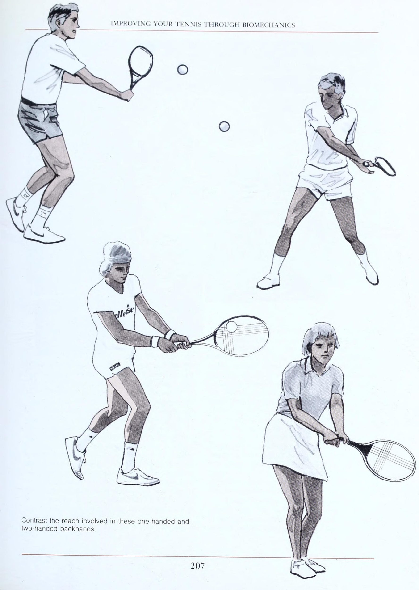
[English: Court Safety Standards, Conditioning Protocols & Injury Prevention Setup]
và Điều trị. Người chơi ở mọi cấp độ, từ người mới bắt đầu đến chuyên nghiệp, thường rất quan tâm đến thể dục. Ở những cấp độ cao hơn, người chơi lo lắng về việc có đủ thể lực để chơi tốt, trong khi ở những cấp độ thấp hơn, người chơi cố gắng chơi đủ sức để giữ thể lực. Nhưng không một tay vợt nào có thể đạt được thể lực chỉ bằng quần vợt. Và thật không may cho những người mới bắt đầu, chính những người chơi có kỹ năng cao hơn mới thu được lợi ích lớn nhất từ việc chơi quần vợt.
Lý do cho điều này là các tay vợt nâng cao và chuyên nghiệp có thể đánh bóng mạnh hơn, nhanh hơn và giữ bóng lâu hơn những tay vợt giải trí. Họ có nhiều khả năng tham gia vào các bài tập luyện cụ thể hơn và họ có động lực cao hơn để cải thiện thể lực của mình. Họ cũng chơi chăm chỉ và lâu hơn những người chơi giải trí. Kết quả là, họ có nhiều khả năng cải thiện các lĩnh vực thể lực phù hợp với quần vợt hơn.
Không thể phủ nhận rằng những người mới bắt đầu và những người chơi ở trình độ thấp hơn sẽ nhận được một số lợi ích về thể chất khi chơi quần vợt. Nhưng trình độ chuyên môn của người chơi rõ ràng ảnh hưởng đến mức độ lợi ích đó. Khi điều đó xảy ra, ngay cả những người chơi giải đấu chuyên nghiệp cũng không đạt được một số khía cạnh về thể lực. Vì vậy, người chơi quần vợt ở mọi cấp độ cần đánh giá điểm mạnh, điểm yếu của mình và đặt ra mục tiêu để cải thiện.
Hãy nhớ—không ai nên chơi quần vợt để có thân hình cân đối, thay vào đó mọi người nên có thân hình cân đối để chơi quần vợt. Điều hòa Không một môn thể thao nào có thể cung cấp một chương trình điều hòa tổng thể cho cơ thể con người. Tuy nhiên, chơi tenmis tự động cung cấp các yếu tố điều hòa, vì vậy tất cả người chơi có thể cải thiện thể lực chung của mình ở một mức độ nào đó trong khi họ phát triển kỹ năng chơi quần vợt của mình. Để điều hòa toàn diện, việc tập thể dục bổ sung là điều cần thiết. Một chương trình tập luyện phải chú ý nghiêm túc đến những điều sau: sức mạnh, tính linh hoạt, thể dục nhịp điệu và kỵ khí.
Sức mạnh Trong tất cả các bài tập dành riêng cho thể thao, bao gồm cả quần vợt, bạn càng chơi nhiều thì càng có nhiều khả năng tạo ra sự mất cân bằng cơ bắp, do đó có nguy cơ bị chấn thương. Sau đó, chúng ta sẽ thảo luận cách tránh các vấn đề trong những lĩnh vực này. [Sau đây là những điểm rắc rối tiềm ẩn của cơ thể đối với người chơi quần vợt. Cẳng tay. Các cơ uốn cong (cơ gấp) và duỗi thẳng (cơ duỗi) cẳng tay và các cơ lật lòng bàn tay lên (cơ ngửa) có xu hướng khá khỏe. Các cơ quay lật lòng bàn tay xuống cũng tương đối khỏe. Nhưng các cơ di chuyển cẳng tay sang bên (cơ lệch hướng tâm và cơ trụ) và các cơ duỗi thẳng (cơ duỗi) có đặc điểm là yếu và dễ bị chấn thương.
bal) TENNIS MỘT HƯỚNG DẪN CHUYÊN NGHIỆP 1, Lỗi trái tay: Thiếu động tác của phần thân dưới và vai dẫn đến chấn thương cẳng tay. Cánh tay. Cơ bắp tay và cơ tam đầu nói chung đều yếu, đáng kinh ngạc là so với cơ bắp tay — ngay cả ở những vận động viên đẳng cấp thế giới. Vai. Cơ xoay ngoài và cơ bả vai nhìn chung yếu hơn các nhóm cơ khác. Cổ và thân trên.
Các cơ ở cổ và thân trên nói chung là yếu. Bụng. 'Các cơ bụng đối diện (ví dụ: cơ bụng trái ở những người chơi thuận tay phải) thường khỏe hơn các cơ ở cùng bên. Đùi và háng. Cơ háng nhìn chung yếu hơn so với cơ chân, gân kheo và cơ hông-đùi. Chân. . Cơ bắp chân nhìn chung rất khỏe nhưng lại có điểm yếu ở cơ bắp chân trước.
Tính linh hoạt Chơi quần vợt giúp cải thiện rất ít tính linh hoạt, ngoại trừ khả năng xoay vai. Trên thực tế, việc chơi thường hạn chế sự linh hoạt ở cánh tay cầm vợt và ở chân. Giống như các môn thể thao khác liên quan đến chạy, chơi tennis liên tục sẽ làm săn chắc lưng, háng, gân kheo và bắp chân. Vì hầu hết mọi người đều chơi tennis chủ yếu bằng một cánh tay nên cơ duỗi cẳng tay sẽ chặt hơn nhiều ở khuỷu tay của cánh tay đó. Rõ ràng là hoạt động cải thiện tính linh hoạt đó phải đến từ một nguồn khác.
Thể dục nhịp điệu Quần vợt không phải là môn thể dục nhịp điệu như đạp xe, bơi lội và chạy, nhưng những người chơi trong giải đấu phát triển khả năng hiếu khí khá tốt. Thể dục kỵ khí Vì quần vợt về bản chất là một môn thể thao dừng lại và bắt đầu nên việc điều hòa kỵ khí của một số cơ nhất định (cánh tay, vai, bắp chân, bụng) là không thể tránh khỏi. Mục đích của cuộc thảo luận này là: bạn không thể đạt được trạng thái đỉnh cao và duy trì ở đó chỉ bằng cách chơi quần vợt. Và bạn không thể chơi quần vợt đã cá cược cho đến khi bạn có đủ sức khỏe. Câu trả lời là bài tập điều hòa. Những người chơi giải trí và thi đấu cũng nên xây dựng một chương trình tập luyện để tăng cường các cơ không đủ và tăng cường tính linh hoạt để chống lại tác động căng cứng của việc chơi quần vợt. Hãy hỏi bác sĩ để đánh giá thể lực cụ thể và thiết kế một chương trình tập luyện phù hợp với tình trạng và mức độ chơi của bạn.
Phòng Phòng ngừa chấn thương Bước đầu tiên rất quan trọng trong việc ngăn Phòng ngừa chấn thương là thiết lập các mục tiêu của bạn. Tham vọng chơi quần vợt của bạn có bao gồm thành tích đẳng cấp thế giới hay bạn hài lòng với trận đấu đôi nam nữ giao lưu mỗi tuần một lần? Hiểu được mục tiêu của mình sẽ giúp bạn thiết kế một chương trình tập luyện có thể ngăn Phòng ngừa chấn thương. Điều đặc biệt quan trọng đối với những người lớn học trò chơi hoặc chơi trò chơi này sau nhiều năm là phải xem lại lịch sử y tế của họ để có thể thiết kế một chương trình điều hòa thích hợp nhằm tăng cường sức mạnh cho bất kỳ vùng cơ thể nào có thể bị suy nhược khi bị căng thẳng.
Hãy xem xét một cựu tay vợt bóng đá bị chấn thương đầu gối ở tuổi 18 và mong muốn bắt đầu chơi quần vợt ở tuổi 45. Chơi quần vợt mà không có chương trình phục hồi đầu gối trước đó chắc chắn sẽ gây ra rắc rối. Khi bạn đã đặt ra mục tiêu, xem lại lịch sử y tế của mình và thiết kế một chương trình tập luyện phù hợp, điều quan trọng là phải phát triển kỹ thuật chơi quần vợt chính xác. Kỹ thuật đánh kém có thể nhanh chóng dẫn đến bong gân cổ tay, hội chứng viêm gân khuỷu tay (tennis elbow) hoặc viêm gân vai, vì vậy những người mới bắt đầu nên tìm kiếm sự trợ giúp hướng dẫn từ một chuyên gia được chứng nhận.
Những chấn thương sau đây thường liên quan đến lỗi kỹ thuật. FIEENESS, ĐIỀU KIỆN, CHẤT THƯƠNG TRƯỚC KHI VENTION VÀ TRE ATME! NI 2, Kỹ thuật vai: Góc 90° có thể gây chấn thương cho gân cơ xoay. Góc cao hơn giúp bảo vệ tốt hơn Bong gân cổ tay Vị trí cổ tay nằm ngửa quá mức là yếu tố phổ biến gây bong gân dây chằng ở bên ngón tay út (ulnar) của cổ tay cũng như mặt sau của cổ tay. Các học viên quần vợt thường lạm dụng lời khuyên của huấn luyện viên quần vợt là đặt cổ tay ngửa ra sau. Thật không may, ở vị trí này, khả năng hấp thụ sốc bằng không, có thể dẫn đến bong gân dây chằng cổ tay.
Hội chứng viêm gân khuỷu tay (tennis elbow) (bên) Kỹ thuật lỗi gây ra hội chứng viêm gân khuỷu tay (tennis elbow) bên là việc sử dụng quá mức cơ duỗi cổ tay cẳng tay, chẳng hạn như dẫn đầu bằng khuỷu tay hoặc đấm trái tay. Nguồn năng lượng và nguồn điều khiển tập trung ở các cơ tương đối yếu nên nhanh chóng “quá tải” dẫn đến viêm gân hội chứng viêm gân khuỷu tay (tennis elbow) bên. Tất nhiên, kiểu đánh đúng sẽ sử dụng cơ vai mạnh hơn, chuyển trọng lượng phù hợp và hoạt động của đầu gối.
Hội chứng viêm gân khuỷu tay (tennis elbow) (Trung gian) Tình trạng này thường xảy ra do tình trạng quá tải gây ra do lăn cẳng tay khi cố gắng thực hiện cú Xoáy lên. Các cú thuận tay (forehand) muộn liên tục - đòi hỏi phải Bật cổ tay quá mức cũng là một nguyên nhân phổ biến. Kiểu hành động này thường đi kèm với việc chuyển trọng lượng và hoạt động của đầu gối kém. Ngay cả những vận động viên thi đấu ở hạng đấu cũng trở thành nạn nhân của quần vợt hạng trung *NGUỒN "Chăm sóc cánh tay"' của Robert P. Nirschl, M.D. Được phép của Medical Sports, Inc. Publishing, Arlington, Virginia khuỷu tay. Trong trường hợp của họ, vấn đề là do chi phí hoạt động và phân phối. Khó khăn bắt nguồn từ việc tăng tốc đầu vợt ra khỏi vị trí cào lùi. Thật không may, kỹ thuật này lại hoàn toàn phù hợp, khiến căn bệnh trở nên khó chữa hơn.
Viêm gân vai Đối với những người chơi giải trí, việc giao bóng quá mức hoặc luyện tập qua đầu thường là nguyên nhân. Cảm giác đau ở phía trước vai. Bất kỳ kỹ thuật chơi quần vợt nào đặt cánh tay ở góc 90° so với thân người - chẳng hạn như giao bóng, đánh qua đầu và bất kỳ cú đánh theo sau cao nào đều gây khó chịu cho vòng quay. Lựa chọn thiết bị Ngoài kỹ thuật kém, thiết bị kém cũng có thể dẫn đến chấn thương quần vợt và việc sử dụng đúng thiết bị phù hợp có thể giúp bất kỳ người chơi nào tránh và/hoặc khắc phục nhiều vấn đề liên quan đến quần vợt.
Mặc dù bong gân cổ tay và viêm gân vai gây rắc rối cho một số người, nhưng hội chứng viêm gân khuỷu tay (tennis elbow) dễ dàng là vấn đề phổ biến nhất đối với người chơi quần vợt. Những gợi ý sau đây về thiết bị có thể giúp ngăn ngừa các vấn đề về hội chứng viêm gân khuỷu tay (tennis elbow) đối với người chơi quần vợt trưởng thành bình thường: 1. Vợt cỡ trung nhẹ (tầm 12/4 ounce) Đánh từ vị trí thích hợp là cách tốt nhất 1d. rENNIS: KÍCH CỠ TAY HƯỚNG DẪN CHUYÊN NGHIỆP Kích thước tay cầm phù hợp: Kỹ thuật của Robert P. Nirechi, M.D.
MEDICAL SPORTS, INC. 3801 N. Fairfax Dr, Suite 504 Arlington, Virginia 22203 (703) 525-8500 Chỉ đường (gmt nang) * Đặt điểm của tam giác trên 'đường lòng bàn tay thứ hai của bàn tay. * Đặt thước lên ngón đeo nhẫn * Xem sơ đồ * Thước giữ và các ngón tay luôn thẳng, * Đo đến đầu ngón đeo nhẫn + Để cố định bàn tay loft, hãy lật Hand'Sizer + Mossurement Ia kích thước tay cầm phù hợp của bạn.
Diagram ' 3, Hand Sizer: Kỹ thuật đo tay của Nirschl để xác định kích thước tay cầm thích hợp. Đo từ nếp gấp thứ 2 của lòng bàn tay đến đầu ngón đeo nhẫn để tránh hội chứng viêm gân khuỷu tay (tennis elbow). Một cây vợt nhẹ hơn giúp bạn dễ dàng đạt được vị trí chính xác hơn. Vì vậy, hãy tìm một cái phù hợp với trò chơi của bạn. Đặc biệt, khung than chì, composite than chì và kim loại có thiết kế OPS mang đến sự kết hợp giữa sức mạnh, trọng lượng nhẹ và khả năng cơ động. Khung cỡ trung bình có vẻ thích hợp hơn khung tiêu chuẩn hoặc cỡ lớn đối với hầu hết người chơi.
nm Kích thước cán vợt phù hợp—Để chắc chắn cán vợt của bạn có kích thước chính xác, hãy kiểm tra thang đo được minh họa ở đây. Phép đo được thực hiện giữa ngón tay dài và ngón đeo nhẫn vì đường này chia đôi lòng bàn tay từ ngón cái đến ngón út. 3. Dây—Mặc dù ban đầu dây ruột có thể dễ dàng hơn ở khuỷu tay, nhưng lợi ích sẽ biến mất khi ruột già đi. Vì vậy, loại nylon tốt có lẽ là tốt nhất cho hầu hết người chơi quần vợt.
Độ căng dây—Theo quan sát lâm sàng của tôi, độ căng dây trung bình 1 là tốt nhất cho cánh tay nhạy cảm và do đó, có lẽ nên sử dụng như một biện pháp phòng ngừa là khôn ngoan. Những người bị Viêm khuỷu ngoài (tennis elbow) khi chơi quần vợt nên căng vợt ít hơn 3 pound so với thông số kỹ thuật của nhà sản xuất. Tất nhiên, có rất nhiều sở thích cá nhân cần được xem xét khi chọn vợt. Trên thực tế, bạn nên thử nghiệm nhiều loại vợt khác nhau để biết khả năng chơi cũng như sự thoải mái.
y Nhưng hãy nhớ chọn trọng lượng đủ nhẹ để / ngăn cản hội chứng viêm gân khuỷu tay (tennis elbow). 5. Niềng răng phản lực — Niềng răng phản lực là những giá đỡ không đàn hồi giúp giảm quá tải lực và giảm đau. Đặc điểm của nẹp phản lực đích thực là thiết kế cong phù hợp với hình dạng hình nón của tay và chân, vật liệu không đàn hồi giúp tăng cường khả năng kiểm soát cơ và loại bỏ khả năng chèn ép dây thần kinh và tắc nghẽn mạch máu, đồng thời có nhiều dây đai căng để bệnh nhân có thể điều chỉnh. Các nghiên cứu cơ sinh học gần đây được thực hiện trong phòng thí nghiệm tại Đại học Illinois đã chỉ ra rằng nẹp phản lực làm thay đổi lực tác động tuần tự của cơ cũng như vận tốc góc trong và xung quanh vùng được nẹp. Đánh giá thống kê cho thấy việc sử dụng niềng răng phản lực đã giảm thiểu cường độ của các triệu chứng ở đại đa số bệnh nhân. Dựa trên các bằng chứng, chúng tôi có thể kết luận rằng việc sử dụng nẹp phản lực có thể đóng vai trò ngăn chặn các triệu chứng chấn thương và đau, miễn là bệnh nhân cũng thực hiện các bài tập rèn luyện sức mạnh.
Cường độ và thời gian hoạt động—Nhận thức về trình độ kỹ năng, thiết bị được sử dụng và điều kiện tổng thể là rất quan trọng trong việc thiết lập một chương trình tập thể dục. Những người thiếu điều kiện tham gia vào các hoạt động đột ngột, hung hãn hoặc hoạt động quá lâu sẽ dễ bị chấn thương (hội chứng chiến binh cuối tuần). Vì vậy, hãy tập thể dục nhưng đừng tập quá sức. Chăm sóc cấp cứu Quy trình chăm sóc cấp cứu tương tự đối với tất cả các thương tích trên cơ thể. Để nhớ các bước cần thực hiện để điều trị chấn thương khẩn cấp, hãy nghĩ đến GIÁ: P —Protection.
R—Nghỉ ngơi. Tôi – Băng. C—Nén. E—Độ cao. Việc bảo vệ có thể được thực hiện theo nhiều cách khác nhau. Tốt nhất là cho phép người bị thương kiểm tra vùng bị thương. Nếu có sự biến dạng rõ ràng của bộ phận bị thương, cần phải nẹp 1 giây (thậm chí Ww gõ vào bộ phận đó bằng gối hoặc bằng tạp chí cuộn nếu không có thiết bị phức tạp hơn). Khi bị chấn thương ở phần dưới cơ thể, vận động viên không nên cố gắng dồn toàn bộ trọng lượng lên chi dưới.
Sự nghỉ ngơi là người bạn đồng hành của sự bảo vệ. Di chuyển PHÙ HỢP, ĐIỀU TRỊ, PHÒNG NGỪA VÀ ĐIỀU TRỊ THƯƠNG TÍCH phần bị thương nên tránh. Mặt khác, cần khuyến khích chuyển động của các bộ phận không bị thương mà không gây đau cho bộ phận bị thương, vì điều này giúp giảm thiểu tình trạng teo cơ và tăng tốc độ lành vết thương. Nghỉ ngơi giúp ngăn Phòng ngừa chấn thương thêm và cho phép quá trình chữa lành diễn ra mà không bị cản trở. Nghỉ ngơi phải được hiểu không phải là vắng mặt trong hoạt động, mà là vắng mặt trong hoạt động lạm dụng.
Đá được sử dụng hiệu quả nhất cho các ứng dụng lạnh. Chườm lạnh có tác dụng ngăn chặn cơn đau, giảm co thắt và giảm nguy cơ chườm đá trong túi nhựa lên vùng bị thương, đắp 30 phút và nghỉ 30 phút, đã tỏ ra hiệu quả. Chườm đá sẽ hữu ích miễn là vẫn còn nguy cơ bị viêm/sưng. Việc xác định này được thực hiện bằng cách kiểm tra vùng bị thương để tìm dấu hiệu viêm (1.e. đau cục bộ, sưng tấy, nóng hoặc sốt ở vùng bị thương và đau ở vùng bị thương khi nghỉ ngơi). Nếu có bất kỳ dấu hiệu nào trong số này, nên tiếp tục chườm đá.
(Không: Đôi khi, tình trạng này có thể kéo dài gây sưng và viêm. Có thể vài ngày hoặc vài tuần.) Nén có tác dụng hữu ích để kiểm soát tình trạng sưng tấy. Cần hiểu rằng lực đàn hồi quá mức được áp dụng ở phần giữa của chi, chẳng hạn như đầu gối, có thể gây sưng tấy ở đầu xa (1.e. ở mắt cá chân và bàn chân). Do đó, băng nén nên được áp dụng bắt đầu từ phần cuối của chi. Ống bọc khí liên tục bơm chất lỏng ra khỏi chi đã chứng tỏ là một tiến bộ vượt trội trong việc kiểm soát và loại bỏ sưng tấy.
Độ cao giúp kiểm soát sưng tấy rất nhiều bằng cách khuyến khích dòng chất lỏng từ bộ phận bị thương đến tim. Để có hiệu quả, ee phải ở trên mức của tim. Chi dưới bị thương dù là đầu gối, chân, mắt cá chân hay bàn chân đều phải được nâng cao hơn vai để có kết quả tốt nhất. Các bộ phận của chi trên cũng phải được nâng cao hơn vai. Ví dụ, nếu có thể, một bàn tay bị thương nên được đỡ trên đỉnh đầu thay vì đeo dây đeo.
Chẩn đoán xác định là cực kỳ quan trọng. Sau khi thực hiện năm bước khẩn cấp trước đó, người bị thương phải được đưa ngay đến bác sĩ để chẩn đoán và điều trị. Điều này đặc biệt đúng trong các chấn thương dây chằng lớn ở chi dưới, đặc biệt là đầu gối, nơi việc sửa chữa bằng phẫu thuật sớm thường mang lại giải pháp lâu dài tốt nhất. (May mắn thay, hiếm khi xảy ra trong quần vợt.) chấn thương này là 4, Hỗ trợ Elb bên; Nẹp chống lực cho hội chứng viêm gân khuỷu tay (tennis elbow) bên Nẹp Counter-force thực sự có dạng hình nón, rộng, không đàn hồi và có nhiều dây đai căng để hỗ trợ được kiểm soát hoàn toàn, cong để phù hợp với Chăm sóc dứt khoát các chấn thương quần vợt thông thường Các thành phần cơ bản để chăm sóc dứt điểm cho tất cả các chấn thương trong thể thao, bao gồm cả chấn thương quần vợt, như sau: Viêm và kiểm soát cơn đau.
Xúc tiến chữa bệnh. Bài tập. Buộc kiểm soát quá tải. Phẫu thuật (khi có chỉ định). Viêm và đau có thể được kiểm soát hiệu quả bằng các bước được mô tả trong chăm sóc cấp cứu. Tất nhiên, các bác sĩ có sẵn nhiều loại thuốc chống viêm hơn. Một bác sĩ có kỹ năng chẩn đoán thể thao và sử dụng thuốc trị sưng tấy có thể tiếp cận từng chấn thương. Ngoài ra, các bác sĩ có quyền tiếp cận các liệu pháp vật lý trị liệu đã được chứng minh là hữu ích trong việc kiểm soát cơn đau và viêm.
là một trường hợp C duy nhất. Việc chữa lành có liên quan gián tiếp đến việc kiểm soát tình trạng viêm và đau. Tuy nhiên, thuốc chống viêm cũng như nghỉ ngơi không thực sự thúc đẩy quá trình chữa lành mà chỉ là công cụ giúp loại bỏ tình trạng trầm trọng hơn. Hiện tại, có hai lựa chọn cơ bản hữu ích trong việc thúc đẩy quá trình chữa lành. Tập thể dục phục hồi chức năng và kích thích điện áp cao.
Bài tập phục hồi chức năng rất cụ thể và chính xác, được giám sát chặt chẽ, chia độ và thực hiện tốt nhất dưới sự hướng dẫn của bác sĩ, nhà trị liệu vật lý hoặc huấn luyện viên thể thao được chứng nhận. Sách và tạp chí đưa ra nhiều bài tập khác nhau, nhưng việc thực hiện chúng là tùy theo quyết định của bệnh nhân bị thương và có thể dẫn đến chấn thương.
12] TENNIS HƯỚNG DẪN CHUYÊN NGHIỆP 5, /so'-fex Bài tập: Bài tập thuận tiện, hiệu quả để phục hồi và điều hòa, sử dụng điện trở dây căng *NGUỒN ''Chăm sóc cánh tay'' của Robert P. Nirschl, M.D Kích thích điện cao thế được bác sĩ chỉ định và được giám sát bởi nhà trị liệu vật lý hoặc huấn luyện viên thể thao. Tập thể dục có thể được chia thành hai loại chính: phục hồi chức năng và thể thao. Mục tiêu của loại đầu tiên là khuyến khích chữa bệnh và duy trì của các mô được chữa lành. Trong tập luyện thể thao, mục tiêu là giành chiến thắng và cải thiện kỹ năng. Vì các mục tiêu khác nhau nên chúng ta phải cẩn thận để không nhầm lẫn giữa nhu cầu tập luyện của mình.
Các chương trình tập luyện bao gồm các bài tập về sức mạnh, sức bền và sự linh hoạt. Trong giai đoạn đầu, các bài tập sức mạnh thường mang lại hiệu quả cao nhất. Các bài tập sức mạnh bao gồm isometrics, calisthenics, bài tập isoflex, isotonics và isokinetic. Tất cả năm điều này đều có một vị trí trong các chương trình thể dục và phục hồi chức năng. Thông thường, cả năm đều được quy định ở các giai đoạn khác nhau. Mỗi hệ thống cũng có thể được sử dụng theo những cách khác nhau — bằng cách thay đổi các cung chuyển động, lượng lực cản, số lần lặp lại, kỹ thuật tốc độ (tức là đẩy so với kéo).
Các chương trình sức bền sử dụng các hệ thống chung giống như các bài tập tăng cường sức mạnh, nhưng thường mức độ kháng lực giảm khi tốc độ tập luyện và số lần lặp lại tăng lên. Đối với hầu hết các vùng cơ thể bị thương, các bài tập để tăng độ dẻo dai không quan trọng lắm. Thật vậy, theo quan sát của tôi, việc tập thể dục linh hoạt sớm cho cơ gân kheo và háng sẽ khiến vết thương trở nên trầm trọng hơn hơn là giúp chữa lành, như người ta thường nghĩ. Nói chung, tính linh hoạt được đề cập đến cuối cùng - có thể ngoại trừ các bài tập dành cho vai.
Việc phục hồi chức năng đòi hỏi chúng ta phải vô hiệu hóa các thế lực vốn là công cụ gây ra thương tích. Các phương pháp có sẵn để kiểm soát tải lực lạm dụng đã được mô tả. Chúng bao gồm giằng chống lực, lựa chọn thiết bị phù hợp, sử dụng đúng kỹ thuật và chú ý theo dõi cường độ và thời gian hoạt động thể chất. Tôi đã kê đơn nẹp phản lực từ năm 1970 và đã có nhiều cơ hội để quan sát tác dụng hữu ích của nó trong nhiều lĩnh vực khác nhau, bao gồm hội chứng viêm gân khuỷu tay (tennis elbow), bong gân cổ tay, các vấn đề về lưng và bụng, chấn thương háng và đùi, đầu gối của người chạy bộ, nẹp ống chân và gai gót chân. Tuy nhiên, xin nhắc lại, mỗi nẹp phản lực phải được thiết kế phù hợp với giải phẫu của bộ phận bị thương và phải hỗ trợ vùng bị thương.
Kỹ thuật đúng là rất quan trọng để kiểm soát tình trạng quá tải lực có hại. Trong quần vợt, chúng ta may mắn vì kỹ thuật tốt là liều thuốc tốt. Tất cả các bệnh nhân bị hội chứng viêm gân khuỷu tay (tennis elbow), viêm gân vai hoặc bong gân cổ tay nên kiểm tra các cú đánh quần vợt và kỹ thuật tổng thể của họ để phát hiện bất kỳ thiếu sót nào. Sẽ là khôn ngoan nếu tìm kiếm sự hướng dẫn quần vợt chuyên nghiệp để khắc phục mọi vấn đề về cơ học quần vợt.
Cuối cùng, nếu người chơi hoạt động rời rạc và không nhất quán, họ sẽ gây ra chấn thương. Ngay cả khi chơi ổn định, căng thẳng và mệt mỏi vẫn có thể dẫn đến chấn thương. Phẫu thuật chỉ được chỉ định khi tất cả các lựa chọn khác đã cạn kiệt. Theo quan sát của tôi, sau một số loại phẫu thuật chữa viêm gân ở vai và khuỷu tay, một tay vợt có thể gặp khó khăn khi trở lại chơi quần vợt. Điều quan trọng là bệnh nhân phải thảo luận kỹ lưỡng với bác sĩ phẫu thuật của mình chính xác những gì được đề xuất và cách bác sĩ phẫu thuật đề xuất thực hiện điều đó. Nói chung, tốt hơn là nên tránh các thao tác trượt cơ quanh khuỷu tay và tránh bất kỳ sự bóc tách lớn nào của xương mỏm cùng vai hoặc cơ delta quanh vai. Nhìn chung, thành công của phẫu thuật ở khuỷu tay và vai là 85% chữa khỏi bệnh nN nN FIP NES, ĐIỀU TRỊ, PHÒNG NGỪA VÀ PHÒNG BỆNH và cải thiện 12% bằng cách sử dụng các kỹ thuật hiện đại.
Các chấn thương quần vợt phổ biến được điều trị trong nhiều năm tại Viện Y học Thể thao Virginia bao gồm, một cách tự nhiên, hội chứng viêm gân khuỷu tay (tennis elbow), viêm gân vai, bong gân cổ tay và các vấn đề về đầu gối, chân và lưng. Mô tả về phương pháp điều trị hội chứng viêm gân khuỷu tay (tennis elbow) bên của chúng tôi tại Viện Y học Thể thao Virginia sẽ nhằm minh họa sự quan tâm toàn diện dành cho tất cả các nạn nhân bị chấn thương trong thể thao. Hội chứng viêm gân khuỷu tay (tennis elbow) được điều trị bằng thuốc chống viêm và hoạt động quần vợt sẽ bị tạm dừng trong khoảng ba tuần. Việc điều trị tiếp tục bằng kích thích điện áp cao, xoáy nước sau đó xoa bóp, chương trình tập thể dục theo mức độ, xem xét đầy đủ về thiết bị và nẹp chống lực khuỷu tay bên.
Tiếp theo quy trình này là việc dần dần quay trở lại các hoạt động quần vợt, tập trung vào cơ chế đánh bóng, với sự hỗ trợ của một chuyên gia quần vợt được chứng nhận. Thời gian thông thường cần thiết cho việc điều trị này là từ hai đến ba tháng. Nếu các chương trình tập thể dục và quy trình phục hồi chức năng phù hợp đã được tuân thủ và bệnh nhân không có tiến triển gì trong giai đoạn này thì nên xem xét phẫu thuật để sửa chữa các mô bị tổn thương.
Nhưng hãy nhớ rằng phẫu thuật là biện pháp cuối cùng, được thực hiện khi tất cả các lựa chọn khác đã được thử và thất bại. Rosert P. Nirscuv., M.D. Lập kế hoạch và luyện tập hiệu quả để cải thiện môn quần vợt, bản thân đấu đối kháng không cung cấp đủ sự luyện tập để bạn cải thiện khả năng của mình ở nhiều cú đánh và cú đánh mà bạn cần để chơi tốt. Ví dụ: trong một trận đấu cụ thể, bạn có thể chỉ phải thực hiện bốn hoặc năm Cú đập trên đầu (smash) từ trên cao. Nếu cú đập của bạn yếu, bạn sẽ không thể cải thiện nó với số lần đánh ít ỏi đó. Thay vào đó, bạn cần có cơ hội lặp lại cú đánh nhiều lần. Điều tương tự cũng xảy ra với các cú đánh và cú đánh khác trong trò chơi. Kỹ năng đến từ sự lặp lại.
Chỉ thông qua thực hành lặp đi lặp lại, trong thời gian đó bạn tập luyện một cách có ý thức trên các điểm hình thức cụ thể trên các cú đánh cụ thể, bạn mới có thể học cách sử dụng các cú đánh một cách hiệu quả khi chơi nghiêm túc. Bạn có thể sắp xếp việc thực hành lặp đi lặp lại này cho chính mình với sự trợ giúp của một đối tác. Hãy hỏi những người bạn đang chơi của bạn để tìm một người muốn luyện tập cùng bạn. Bạn sẽ gặp chút khó khăn khi tìm một người có những khuyết điểm giống bạn trong trò chơi. Lên kế hoạch cho một số bài tập được thiết kế đặc biệt để giúp cả hai bạn khắc phục những thiếu sót đó.
Trong phần còn lại của chương này, tôi mô tả một số bài tập được các giáo viên và huấn luyện viên giàu kinh nghiệm sử dụng. Hãy nghiên cứu chúng một cách ngắn gọn và sau đó sử dụng càng nhiều càng phù hợp với nhu cầu của bạn. Khi bạn chọn bài tập, hãy bắt đầu bằng. phân tích cẩn thận trò chơi của bạn. Chia nhỏ trò chơi của bạn để bạn có thể xác định rõ nhất điểm mạnh và điểm yếu của mình. Bạn làm gì tốt nhất và bạn yếu nhất ở đâu?
Bạn Sự tự tin với những cú đánh nào và bạn không chắc chắn về những cú đánh nào? Những chiến thuật và chiến lược nào thường hiệu quả với bạn và những chiến thuật nào bạn hiếm khi sử dụng hoặc có lẽ không bao giờ sử dụng? Còn đối thủ của bạn thì sao? Chiến thuật và chiến lược nào của họ làm bạn khó chịu? Làm thế nào bạn có thể chơi tốt hơn trước những đối thủ đó? Bạn có những cú đánh và cú đánh để sử dụng hiệu quả khi chống lại chúng không?
Một cách hay để phân tích và hiểu trò chơi của bạn là chuẩn bị "Bảng phân tích biểu mẫu cá nhân". Một ví dụ về một được hiển thị. Phân tích từng nét trong tiết mục của bạn; các cú thuận tay (forehand) và trái tay cho các cú đánh nền và vô lê, giao bóng và Trả giao bóng, Cú lốp bóng (lob) và cú đập bóng smash, và các cú đánh đặc biệt khác như cú bỏ nhỏ (drop shot) (drop shot), Cú lốp bóng (lob) Xoáy lên, cú đánh tiếp cận (approach shot) cắt lát, v.v.
Sau đó, mô tả điểm mạnh hoặc điểm yếu của bạn trên mỗi cú đánh và/hoặc cú đánh. Khi bạn làm như vậy, hãy đánh giá cú đánh của bạn về hình thức và các cú đánh của bạn để sử dụng mang tính chiến thuật. Khi viết, hãy đánh giá chất lượng của từng nét và cú đánh, ở dạng tường thuật hoặc bằng những nhận xét ngắn gọn. Ở mặt sau của bảng phân tích, hãy chuẩn bị một hình ảnh đồ họa về trò chơi của bạn, như trong ví dụ. Đánh giá các cú đánh và cú đánh của bạn theo thang điểm từ một đến mười và vẽ đường ngoằn ngoèo để thể hiện mức độ đánh giá của chúng. Loại hình ảnh đồ họa này sẽ củng cố nhận xét của bạn được đưa ra trên bảng phân tích.
Nhưng quan trọng hơn, nó sẽ chỉ ra một cách sinh động sự cần thiết của một số loại thực hành nhất định.
Phát Triển Quần Vợt Trẻ & Lựa Chọn Học Viện Của Nick Bollettieri
| Vào ngày 6 tháng 10 tại Học viện quần vợt Nick Bollettieri, chúng tôi rất vui vì có thể giúp những tay vợt hàng đầu thuộc mọi phong cách đạt được hiệu quả cao nhất. Những tay vợt hiện tại của học viện bao gồm những nhà tạo mẫu đa dạng như Jimmy Arias, Eric Korita và Aaron Krickstein. Các trò chơi của họ đã trưởng thành ở học viện, nhưng chúng hoàn toàn khác nhau về mọi mặt. Arias nhỏ con, nhanh nhẹn và thực hiện trò chơi của mình dựa trên một cú thuận tay (forehand) sấm sét; Korita rất to lớn và dựa vào một cú giao Bóng tấn công; và Krickstein đã trừng phạt những pha đột phá của cả hai bên.
Triết lý thành công của chúng tôi đòi hỏi sự hiểu biết và tuân thủ các nguyên tắc mới nhất về dinh dưỡng và thể lực, được nuôi dưỡng bởi các mục tiêu và kế hoạch luyện tập hợp lý cũng như được củng cố bởi sự cạnh tranh trong giải đấu. Chúng tôi tin chắc rằng bất kỳ học sinh nào bắt chước chương trình học viện sau đây sẽ tiến bộ hơn. Hãy nhớ rằng, chìa khóa thành công là “Khả năng, sự cống hiến và kỷ luật”. Dinh dưỡng Không ai trở thành tay vợt thành công ngày nay mà không phải trả giá trong luyện tập. Nhưng, nếu cơ thể bạn không được chuẩn bị đúng cách thì làm sao bạn có thể trả được cái giá đó? Vì vậy, nền tảng của một tay vợt trẻ thành công phụ thuộc vào kiến thức về thói quen dinh dưỡng đúng đắn và kỷ luật để tránh bị cám dỗ. Đầu tiên và quan trọng nhất, hãy đảm bảo rằng chế độ ăn uống của bạn được cân bằng và bao gồm các nhóm thực phẩm cơ bản. Sự thiếu hụt bất kỳ điều nào trong số này có thể đồng nghĩa với rắc rối trên sân đấu.
Sữa và các sản phẩm từ sữa (hai lần mỗi ngày)—canxi, vitamin B2, B12 và A, khoáng chất và protein Bánh mì và ngũ cốc (hai lần mỗi ngày)—tinh bột, protein, vitamin B, sắt Thịt, Gia cầm, Cá và các loại hạt (hai lần mỗi ngày)—protein, vitamin và khoáng chất Rau xanh, vàng và lá (một lần mỗi ngày) vitamin A, E, B và khoáng chất Khoai tây và các loại trái cây và rau quả khác (một lần mỗi ngày) )—vitamin C, khoáng chất và protein Thứ hai, và gần như quan trọng đối với các tay vợt trẻ, hãy tránh "đồ ăn vặt". Kẹo, khoai tây chiên và các đồ ăn vặt khác có chứa đường và chất béo, chứa nhiều calo nhưng lại cung cấp rất ít vitamin và khoáng chất thiết yếu.
Thứ ba, theo dõi lượng thức ăn bạn ăn và thay đổi lượng ăn vào tương ứng với lượng bài tập bạn đang tập. Nếu bạn đang tập luyện và thi đấu chăm chỉ, bạn cần nhiều calo. Tuy nhiên, nếu bạn nghỉ ngơi từ một tuần trở lên, bạn phải hạn chế cảm giác thèm ăn, nếu không trò chơi của bạn sẽ bị ảnh hưởng khi bạn trở lại luyện tập và thi đấu tích cực. Jimmy Arias Luật ba giờ.
Từ khi Kết thúc cú đánh bữa ăn đến khi bắt đầu gắng sức, phải trôi qua ít nhất ba giờ. Đúng là dạ dày thường tiêu hóa bữa ăn trong vòng một tiếng rưỡi đến hai giờ, nhưng trước khi thi đấu, tay vợt luôn căng thẳng hơn, điều này làm chậm quá trình tiêu hóa. Người chơi không nên thi đấu với cái bụng no, nhưng cái bụng trống rỗng cũng không có lợi.
Thay vào đó, người chơi nên cung cấp cho mình một lượng carbohydrate vừa phải mỗi giờ cho đến giờ thi đấu. Bằng cách kết hợp tập thể dục với hai điều chỉnh hành vi đơn giản, bạn có thể giảm cân dễ dàng và nhất quán mà không ảnh hưởng đến mức năng lượng của bạn. Đầu tiên, hãy cắt bỏ đồ ăn nhẹ. Hãy dựa vào các bữa ăn để có thức ăn, và bạn sẽ ít có cơ hội bị cám dỗ bởi lượng calo đồ ăn vặt rỗng. Thứ hai, hãy giảm dần số lượng từng phần thức ăn mà bạn ăn.
Ăn kiêng Quan sát các vận động viên quần vợt trên đường đua, người ta có thể thấy rằng nhiều người thực sự thừa cân. Tại học viện, chúng tôi có "Câu lạc bộ những người theo dõi cân nặng" của riêng mình. Điều này là hoàn toàn tự nguyện vì việc ăn kiêng phải xuất phát từ bên trong. Chúng tôi, với tư cách là huấn luyện viên, chỉ có thể giúp đỡ và tư vấn cho các tay vợt. Cuối cùng, chính bạn phải là người kiểm soát chế độ ăn uống của mình. Aaron Krickstein Mọi người trong câu lạc bộ đều đặt mục tiêu giảm 2 pound mỗi tuần, tương đương với 7000 calo. Chúng ta giảm hai cân này bằng hai phương pháp: (1) giảm lượng thức ăn ăn vào và (2) tăng cường hoạt động thể chất. Điều rất quan trọng cần nhấn mạnh ở đây là phải ăn ba bữa một ngày. Đó là những thực phẩm như bánh rán, bánh ngọt, bánh quy, tất cả những món ngon từ máy bán đồ ăn nhẹ, món tráng miệng, nước ngọt, v.v. đều bị cắt bỏ hoàn toàn. Ngoài ra, không có sự giúp đỡ thứ hai.
Chương trình hoạt động thể chất có hình thức thể dục nhịp điệu, chạy bền, nhảy dây, luyện tập xen kẽ, luyện tập theo vòng, v.v. Ngoài chương trình thể dục cường độ cao thường xuyên của chúng tôi, những học sinh này còn phải tham gia các lớp học thêm này tối thiểu hai lần mỗi tuần. Ngoài ra, lượng calo nạp vào và đầu ra đều được theo dõi, do đó đảm bảo rằng tất cả lượng calo nạp vào đều được đốt cháy, cộng thêm 1000 calo mỗi ngày để đảm bảo giảm được 2 pound mỗi tuần. Điều này có vẻ chỉ mất đi một lượng nhỏ, nhưng mục tiêu của chúng tôi là biến nó thành một quá trình dần dần.
Người chơi không thể đột ngột thay đổi hoàn toàn chế độ ăn uống và cắt giảm bữa ăn khi họ dành tới bảy giờ mỗi ngày trên sân. Điều này thực sự đòi hỏi nhiều năng lượng. Ngoài ra, hầu hết các vận động viên vẫn đang trong giai đoạn phát triển và do đó cần năng lượng để phát triển thể chất. Do đó, việc ăn kiêng phải là một quá trình diễn ra từ từ và là điều mà vận động viên có thể chấp nhận được. Ngược lại, Crash TENNIS: chế độ ăn kiêng mà nhiều người thừa cân áp dụng lại làm suy yếu khả năng thể chất của bạn và thường dẫn đến một chu kỳ ăn kiêng để giảm cân, sau đó là ăn quá nhiều để lấy lại sức.
Yếu tố cuối cùng liên quan đến dinh dưỡng hợp lý liên quan đến thói quen uống rượu của bạn trước, trong và sau khi luyện tập và thi đấu. Mỗi vận động viên có thể trạng tốt đều cần bổ sung lượng nước bị mất do đổ mồ hôi khi tập luyện nặng và các vận động viên trẻ cũng không ngoại lệ. Chế độ ăn uống bình thường của bạn sẽ cung cấp cho bạn tất cả các vitamin và khoáng chất cần thiết. Nhưng việc bổ sung chất lỏng là rất quan trọng. Trước mỗi trận đấu hoặc buổi tập nặng, bạn nên định kỳ dừng uống nước (mỗi lần thay nước trong trận đấu), sau mỗi trận đấu hoặc buổi tập bạn nên tiếp tục uống nước. Nước thay thế những gì bạn mất đi nhanh hơn bất cứ thứ gì khác. Nước giải khát và nước tăng lực (chẳng hạn như Gatorade) có chứa các chất bổ sung ngăn cản cơ thể bạn hấp thụ nước nhanh chóng.
Nguyên tắc chung áp dụng sau cuộc thi 1. Trong giờ đầu tiên, tiêu thụ ít thức ăn. Bình tĩnh là điều đầu tiên. 2. Bổ sung lượng carbohydrate dự trữ bằng cách nạp vào cơ thể một lượng lớn carbohydrate. 3. Thay thế chất lỏng bị mất nhưng không vội vàng. 4. Không ăn nhiều chất béo 5. Lượng muối qua nước dùng, rau, trái cây. Điều hòa Nếu bạn hiểu và thực hiện đúng chế độ dinh dưỡng, bạn đã thiết lập được nền tảng cho sự thành công. Bây giờ, để tăng cơ hội thành công, bạn phải xây dựng trên nền tảng đó.
Rõ ràng là những tay vợt có thể trạng tốt sẽ có nhiều Điểm lợi thế (advantage) hơn so với những đối thủ có thể trạng kém hơn. Họ phục hồi nhanh hơn giữa các pha giao bóng, có cơ hội nhận bóng và đánh trả tốt hơn, ít mệt mỏi hơn và do đó, ít bị chấn thương hơn và biết rằng họ sẽ không lụi tàn trong một trận đấu khó khăn. Họ cũng có thể đánh mạnh hơn, di chuyển nhanh hơn và suy nghĩ nhanh hơn đối thủ. Rõ ràng điều kiện này sẽ tạo nên sự khác biệt giữa thắng và thua. Chỉ chơi quần vợt sẽ không giúp bạn đạt được trạng thái tốt nhất. Trận đấu cần được bổ sung bằng chương trình điều hòa ngoài sân.
Các vận động viên quần vợt của chúng tôi tuân theo một thói quen tập luyện nhằm cải thiện tất cả các yếu tố thể lực cho môn quần vợt; cụ thể là sự nhanh nhẹn, Trọng tâm cơ thể, sức bền của tim mạch, sức bền cơ bắp, tính linh hoạt, sức mạnh, sức mạnh, tốc độ và Thời gian phản xạ. HƯỚNG DẪN CHUYÊN NGHIỆP Để có được sự nhanh nhẹn, người chơi tham gia vào các bài tập khác nhau quanh sân và nhiều bài tập được thiết kế để cải thiện thành phần này. Sức bền của tim mạch đạt được bằng cách chạy hai hoặc ba dặm vài lần một tuần. Chạy cự ly là một cách tuyệt vời để xây dựng sức chịu đựng, đặc biệt là trong giai đoạn tiền mùa giải, nhưng vì quần vợt liên quan đến việc dừng và xuất phát nhiều và do đó giúp phục hồi nhịp tim nên tập luyện xen kẽ cũng là lý tưởng. Hình thức đào tạo này cũng giúp tăng cường đáng kể tốc độ. Chạy nước rút trên sân, nhấn mạnh vào việc bắt đầu nhanh và giữ Trọng tâm cơ thể, được chạy thường xuyên. Để thay thế, bạn có thể chạy theo các đường của sân, luôn hướng mặt vào lưới nên bạn buộc phải di chuyển lên, lùi và sang ngang.
Các thành phần của sức bền, sức mạnh và sức mạnh cơ bắp được phát triển thông qua Nautilus và việc sử dụng dây cao su và Tay cầm quần vợt Nick Bollettieri, bao gồm các bài tập kháng lực để cải thiện sức mạnh của cánh tay và chân. Mỗi học sinh tại học viện đều trải qua một chương trình Nautilus được cá nhân hóa được thiết kế để cải thiện những điểm yếu cụ thể, có thể là tay, chân, dạ dày, sức mạnh, sức mạnh, sức bền hoặc bất cứ thứ gì. Những cải tiến đáng kể đã đạt được sau chương trình này.
Tính linh hoạt được hỗ trợ bằng cách giãn cơ, được thực hiện một cách tôn giáo trước khi ra sân. Cả hai chương trình buổi sáng và buổi chiều đều bắt đầu và Kết thúc cú đánh với các bài tập kéo dài 20 phút dành riêng cho quần vợt. Ngoài ra, các lớp khắc phục được tiến hành mỗi tuần cho những người cần sự giúp đỡ cụ thể. Một người chơi có mức độ linh hoạt cao sẽ có tầm đánh tuyệt vời trên sân tennis và có khả năng tiếp cận những người khó để có được những cú đánh rộng và thấp. Tay vợt này cũng ít bị kéo cơ và rách cơ hơn.
Để rèn luyện khả năng phản xạ của bạn, hãy tập nhảy dây từ 5 đến 10 phút trong chế độ hàng ngày của bạn. Ở học viện, để thay đổi Nhịp điệu trận đấu, chúng tôi thường chơi trò chơi “Đi theo người lãnh đạo”, trong đó nhóm phải bắt chước động tác tay và chân của người lãnh đạo. Thể dục nhịp điệu (bài tập tim mạch với âm nhạc) là một hình thức rèn luyện thể chất mới. Đó là một cách tuyệt vời để tập thể dục và rất nhiều niềm vui. Chương trình của chúng tôi bắt đầu bằng việc khởi động qua tất cả các nhóm cơ, thả lỏng và kéo căng chúng. Sau đó, hoạt động mạnh mẽ hơn bắt đầu! Điều này bao gồm các bài tập để cải thiện sức bền của tim mạch, sự nhanh nhẹn, động tác bằng chân, sức mạnh, sức bền cơ bắp, khả năng giữ Trọng tâm cơ thể và hỗ trợ Phòng Phòng ngừa chấn thương. Buổi tập kéo dài 45 phút sau đó Kết thúc cú đánh bằng việc thư giãn.
Một khi bạn đã thiết lập được thói quen điều hòa, bạn sẽ cảm thấy mạnh mẽ và nhanh nhẹn hơn trên sân. Hãy tạo cảm giác mới về sức mạnh và sự nhanh chóng cho bạn bằng cách tập trung vào việc cải thiện khả năng vận động của bạn trong quá trình luyện tập. Tính cơ động là yếu tố quan trọng và thường bị bỏ qua trong thành công trong quần vợt. Bạn có thể có những cú đánh tốt nhất trên thế giới, nhưng chúng có ích gì nếu bạn không với tới được bóng? Vì vậy, trong thời gian luyện tập trên sân, hãy tập trung vào những điểm chính sau để cải thiện khả năng di chuyển của bạn: 1.
Hãy theo dõi bóng thật kỹ để có thể bắt đầu sớm hơn. 2. Giữ chân bạn di chuyển để bạn có thể đẩy bóng đi đúng hướng ngay khi bạn nhìn thấy bóng đang đi đến đâu. w Đừng bao giờ từ bỏ một quả bóng. Hãy cố gắng bằng mọi cách và bạn sẽ dần dần đạt được những quả bóng mà trước đây bạn chưa từng có được. 4. Khi bạn thực hiện một cú đánh tấn công từ đường biên ngang của mình, hãy dự đoán một cú trả bóng yếu và di chuyển lên phía trong đường biên ngang để bạn có thể dễ dàng tấn công bóng ngắn hơn.
Có rất nhiều lợi ích khác thu được từ chương trình tập luyện ngoài sân đấu. "Bein; § § thể lực tốt' làm giảm đáng kể khả năng bạn gặp chấn thương khi chơi quần vợt. Hơn nữa, nếu bạn vô tình dính chấn thương, thể lực tốt sẽ giúp bạn hồi phục nhanh chóng và hoàn toàn. Sự Sự tự tin của người chơi rõ ràng sẽ được giúp đỡ khi tình trạng của họ ở mức cao nhất.
Hãy nhớ rằng, khi thể chất của bạn sa sút trong một trận đấu, tinh thần của bạn cũng sa sút theo. Tất cả những lợi ích được đề cập trong chương này mang lại cho người chơi một sự thúc đẩy tâm lý tuyệt vời. Và việc giữ dáng sẽ làm tăng sự thích thú vì nó cải thiện việc chơi. Tỷ lệ quần vợt (Độ chính xác và nhất quán) Cho đến nay chúng tôi vẫn tập trung vào nền tảng thành công của môn quần vợt: cơ thể. Bây giờ, giả sử rằng bạn đang theo một chương trình dinh dưỡng và điều hòa vững chắc để chuẩn bị cho cơ thể, đã đến lúc xem xét bước tiếp theo trong quá trình xây dựng: tâm trí. Ngay cả vận động viên mạnh nhất, nhanh nhất còn sống cũng sẽ thất bại thảm hại trong môn quần vợt nếu anh ta hoặc cô ta không hiểu tỷ lệ phần trăm cơ bản của trò chơi.
Vì vậy, bạn phải nghiên cứu tỷ lệ phần trăm quần vợt và nghĩ ra các bài tập luyện tập khuyến khích bạn luyện tập các cú đánh của mình một cách chính xác về thể chất và tinh thần. Cơ sở của tỷ lệ phần trăm quần vợt có thể được tóm tắt theo ba nguyên tắc: 1. Giữ bóng trong cuộc (tính nhất quán). 2. Giữ bóng sâu (chính xác). 3. Tấn công bóng ngắn. Sự khác biệt về chân giữa cú sút Đánh chéo sân (cross-court) và cú sút dọc PENNIS: HƯỚNG DẪN CHUYÊN NGHIỆP Sự khác biệt về độ cao của lưới đối với cú sút Đánh chéo sân (cross-court) hoặc cú sút dọc biên Lưu ý rằng ba nguyên tắc này kết hợp cả tấn công và phòng thủ. 'Người chơi cấp dưới thành công là người nhận ra rằng mình phải thành thạo cả hai.
Nguyên tắc đầu tiên và quan trọng nhất là giữ bóng trong cuộc. Hầu như tất cả các trận đấu quần vợt đều thua chứ không phải thắng (lỗi luôn nhiều hơn người thắng), VẬY ưu tiên hàng đầu của bạn phải là giữ bóng trong cuộc bằng mọi giá. Hệ quả tất yếu của nguyên tắc giữ bóng trong cuộc là cản phá lưới và đánh chéo sân (cross-court). Nếu bạn đánh bóng vào lưới, bạn sẽ bị mất điểm, trong khi đó sẽ không bị phạt nếu đánh quá cao qua lưới. Như Bjorn Borg đã chứng minh rất rõ ràng, cách tốt nhất để đạt được khoảng trống lưới an toàn mà không phải hy sinh tốc độ là sử dụng Xoáy lên. Khi bạn đã dọn sạch lưới một cách nhất quán, bạn muốn sử dụng càng nhiều diện tích sân càng tốt.
'Một cú đánh trực tiếp (xuống đường biên) từ đường cuối sân (baseline) này sang đường cuối sân (baseline) khác có thể đi được 78 feet trước khi đi ra ngoài, trong khi một quả bóng đánh theo đường chéo (chéo) từ đường cuối sân (baseline) này đến đường cuối sân (baseline) khác đi được 82 feet trước khi đi ra ngoài. Vì vậy, ngoài việc đánh cao qua lưới để giữ bóng trong cuộc, hãy đánh chéo sân (cross-court). Một lợi ích nữa của việc đánh chéo sân (cross-court) là cú đánh của bạn sẽ đi qua lưới ở hoặc gần giữa sân, nơi chiều cao của lưới chỉ cao 3 feet so với chiều cao của lưới ở đường biên là 3,5 feet.
Sau khi bạn đã thành công trong việc nắm vững nghệ thuật giữ bóng trong cuộc, tiếp theo, bạn muốn trở nên chọn lọc hơn trong cách giữ bóng trong cuộc. Giữ bóng trong cuộc chắc chắn có tầm quan trọng hàng đầu, nhưng khi kỹ năng của đối phương được cải thiện thì điều đó có thể là chưa đủ. Nếu bạn đánh những cú đánh yếu và ngắn quá thường xuyên, bạn sẽ tạo cho đối thủ quá nhiều cơ hội để giành chiến thắng dễ dàng.
Vì vậy, nguyên tắc thứ hai của tỷ lệ tennis là giữ bóng sâu (độ chính xác). Chiều sâu thường được coi là vũ khí chiến thuật chính trong quần vợt vì chiều sâu hạn chế cơ hội tấn công của đối thủ, đồng thời buộc đối thủ phải mắc sai lầm hoặc đánh những đường bóng ngắn mà bạn có thể tấn công. Khoảng hở lưới cao là cách tốt nhất và dễ dàng nhất để đạt được Độ sâu của bóng mà không làm mất đi tính nhất quán, và Xoáy lên là kỹ thuật vuốt bóng lý tưởng để đạt được khoảng hở đó.
Giữ bóng trong cuộc và giữ bóng sâu chắc chắn sẽ dẫn đến lỗi của đối phương hoặc nhiều cơ hội bóng ngắn. Trường hợp có sai sót thì không cần phải nói thêm. Trong trường hợp bóng ngắn, nguyên tắc thứ ba được áp dụng: tấn công bóng ngắn. Nếu bạn không tấn công bóng ngắn khi có cơ hội, bạn sẽ tạo cho Đối thủ nhiều khoảng trống hơn để hoạt động. Anh ấy hoặc cô ấy sẽ sớm bắt đầu khai thác tính do dự của bạn bằng môn TENNIS trên sân: HƯỚNG DẪN CHUYÊN NGHIỆP Giải phóng lưới đưa bạn lên lưới bằng cú bỏ nhỏ (drop shot) (drop shot) và chuyền bạn hoặc Cú lốp bóng (lob) bạn. Ngoài ra, nếu không xử lý bóng ngắn một cách tấn công, bạn sẽ dễ bị đối thủ phản công thành công do vị trí sân dễ bị tổn thương. Vì vậy bạn phải học cách tấn công bóng ngắn. Khả năng tấn công thành công là điều tạo nên sự khác biệt giữa một tay vợt giỏi và một tay vợt xuất sắc. Trong sơ đồ kèm theo có nhãn "Khu vực sân đấu", sân được chia thành ba khu vực: phòng thủ, tấn công và tiêu diệt. Mục tiêu của bạn, khi bạn đã thành công trong việc giữ bóng trong và sâu, là di chuyển vào khu vực tấn công để thực hiện cú đánh tiếp cận (approach shot) hoặc người chiến thắng cú đánh nền, sau đó vào khu vực tiêu diệt để thực hiện cú vô lê. Nếu bạn có thể kiểm soát lưới, bạn sẽ có nhiều lựa chọn về cú đánh hơn và có thể kiểm soát được trận đấu. Hãy nhớ rằng bạn có thể nhìn thấy càng nhiều sân qua lưới thì bạn càng có thể thực hiện nhiều cú đánh đa dạng hơn. Trong sơ đồ tiếp theo, "Độ cản lưới", bạn có thể thấy sự khác biệt giữa Cú lốp bóng (lob), cú đánh nền, cú sút tiếp cận và cú vô lê trong khả năng cản phá lưới. Những cú lốp bóng (lob) từ khu vực phòng ngự đã phá lưới rất nhiều. Các cú đánh nền, từ khu vực phòng thủ hoặc khu vực tấn công, thường cách lưới ít nhất ba feet. Các cú đánh tiếp cận (approach shot), từ khu vực tấn công, được đánh cách mép lưới trong vòng 3 feet, cũng như các cú vô lê từ khu vực tiêu diệt. Theo nguyên tắc chung, bạn càng ở gần lưới thì cú đánh của bạn càng có ít khoảng trống. Nhưng khi bạn đến gần lưới hơn, bạn cần ít khoảng trống hơn vì khả năng mắc lỗi (vào lưới) giảm đi, trong khi cơ hội giành chiến thắng (có bề Mặt sân lớn hơn) tăng lên.
Là các biến thể bổ sung cho các khái niệm cơ bản về tỷ lệ phần trăm quần vợt đã nêu trước đây, những người chơi hàng đầu sẽ sử dụng các cú bỏ nhỏ (drop shot) (drop shot), quả bóng mặt trăng và các lát cắt để gây nhầm lẫn cho đối thủ. Việc sử dụng cú bỏ nhỏ (drop shot) (drop shot) có thể làm đối thủ mệt mỏi trong tình trạng kém hơn, có thể khai thác khả năng di chuyển lên xuống kém và có thể đưa người đánh bóng quyết tâm vào vị trí dễ bị tổn thương hơn trên lưới. Ngoài ra, những cú bỏ nhỏ (drop shot) (drop shot) không thường xuyên sẽ tăng thêm sức mạnh và sự đa dạng cho trò chơi cơ bản của riêng bạn vì đối thủ của bạn không đủ khả năng để chơi sâu, nhưng hầu hết đều bảo vệ khỏi cú bỏ nhỏ (drop shot) (drop shot).
Việc sử dụng bóng mặt trăng một cách thận trọng (một cú đánh rất cao, gần như một cú lốp bóng (lob), ném vào một pha đánh bóng chạm đất) có thể là một cách hiệu quả khác để thay đổi Nhịp điệu trận đấu của một pha đánh bóng và buộc đối thủ đến vị trí sâu hơn phía sau đường cuối sân. Cắt bóng là cách thứ ba để thay đổi Nhịp điệu trận đấu, và một quả bóng xoáy xuống cắt lát có thêm Điểm lợi thế (advantage) là độ nảy thấp. Sự kết hợp giữa độ nảy thấp và độ xoáy xuống thường có thể gây khó chịu cho người đánh sức mạnh phát triển mạnh về tốc độ. Ngoài ra, việc sử dụng độ nảy thấp của lát cắt trong cú đánh tiếp cận (approach shot) sẽ cho phép có thêm thời gian để đạt được vị trí lưới hiệu quả và buộc đối thủ của bạn phải đánh vào lưới của bạn.
O O Bài tập mục tiêu về chiều cao và chiều sâu TENNIS: HƯỚNG DẪN CHUYÊN NGHIỆP Kế hoạch và bài tập Mặc dù điều quan trọng là phải hiểu các nguyên tắc về tỷ lệ phần trăm quần vợt, nhưng điều quan trọng không kém là lập kế hoạch cho các buổi luyện tập của bạn để bạn luyện tập các cú đánh của mình trong các tình huống tỷ lệ phần trăm chính xác. Bạn nên tiếp cận mỗi buổi tập với cùng sự cam kết và quyết tâm như khi tham gia một trận đấu. Cách bạn luyện tập thường quyết định cách bạn chơi. Vì vậy, hãy quyết tâm cống hiến 100% cho mỗi quả bóng. Thực hành các cú đánh bạn sử dụng và các tình huống bạn gặp phải trong trận đấu; khắc phục điểm yếu của bạn; loại bỏ những lỗi bất cẩn; và hãy nhớ thay đổi thói quen của bạn theo định kỳ để tránh tình trạng ôi thiu.
Một buổi tập bình thường có thể bắt đầu bằng một số bài tập thể dục khởi động, sau đó là Cú đánh nhẹ (dink) để thả lỏng. Sau khi thực hiện các động tác đánh nền, vô lê, đánh đầu, giao bóng và trả bóng, sẽ có thời gian để xử lý các điểm yếu và/hoặc các cú đánh đặc biệt. Sau đó, cả hai người chơi có thể thực hiện các bài tập luyện cụ thể trước khi chơi các điểm, trò chơi hoặc trận đấu. Các bài tập thực hành được thiết kế để nhấn mạnh các nguyên tắc về tỷ lệ phần trăm quần vợt và cải tiến các kỹ thuật đánh bóng là một thành phần rất quan trọng để thực hành thành công. Một số bài tập phổ biến tại học viện như sau: 1.
Bài tập về Chiều cao và Chiều sâu—Mục tiêu: giữ bóng ở phần sân sau của đối phương bằng cách đánh bóng Nm cao phía trên lưới. Hoạt động: đặt mục tiêu cách đường cuối sân (baseline) sáu feet. Hai điểm sẽ được tính cho đến khi đối thủ đánh bóng thiếu mục tiêu. Trò chơi có thể được tới 21 điểm. Target Drill—Mục tiêu: cũng như phát triển tính nhất quán từ đường cuối sân (baseline). tăng độ chính xác. Hoạt động: đặt các mục tiêu đầu tiên, có thể là quả bóng, dây thừng, băng, v.v., để tạo thành một hình vuông có diện tích 4 foot.
Đặt mục tiêu cách cả đường cuối sân (baseline) và đường biên hai feet. Sau đó yêu cầu các đấu thủ đánh chéo sân (cross-court) hoặc dọc theo đường biên. Giữ bóng trong cuộc và yêu cầu người chơi tập trung bắn trúng mục tiêu. Hai chọi một từ Đường cuối sân (baseline)—Mục tiêu: phát triển tính nhất quán và tính di động. Hoạt động: hai người chơi ở đường cuối sân giữ bóng trong cuộc và di chuyển một người chơi từ bên này sang bên kia và lên xuống.
Vũ khí thuận tay—Mục tiêu: phát triển thuận tay bằng cách yêu cầu học sinh chạy xung quanh tất cả các quả bóng ngắn và đánh các cú thuận tay (forehand) mạnh. Hoạt động: được sử dụng với hai hoặc nhiều người chơi và người hướng dẫn. Huấn luyện viên đưa bóng cao ngắn về phía trái tay. Người chơi chạy xung quanh trái tay và Cú thuận tay (forehand) tấn công. Tay vợt theo sau cú sút vào lưới. Huấn luyện viên thực hiện cú vô lê. O O Bài tập hai chọi một TENNIS vũ khí thuận tay: HƯỚNG DẪN CHUYÊN NGHIỆP 5.
"Tiếp cận hai chọi hai và Điểm phát bóng —Mục tiêu: mài giũa các cú vô lê phản xạ và các cú đánh tiếp cận (approach shot). Hoạt động: hai tay vợt của một đội đứng trên lưới trong khi đội đối phương đang ở trên đường cuối sân. Bóng được huấn luyện viên đưa vào cuộc cho đội cuối sân. Đội cơ bản tiếp cận và tất cả các tay vợt thực hiện điểm. 6. Đổi bóng nhanh—Mục tiêu: rút ngắn cú đánh bóng sau trong cú vô lê. Thao tác: một đấu thủ đứng quay lưng về phía hàng rào. Người chơi O còn lại đứng trên đường cuối sân. Người chơi vô lê trở lại trở đi Người chơi quay lưng về phía hàng rào sẽ phải thực hiện một cú đánh lùi ngắn nếu không vợt sẽ chạm vào hàng rào. Sau một vài phút, người chơi sẽ thay Đổi bên (switch).
Các bài tập về Độ sâu của bóng, mục tiêu và hai chọi một nhấn mạnh các nguyên tắc đầu tiên của tỷ lệ quần vợt, giữ bóng ổn định trong cuộc chơi và đặt bóng sâu; trong khi các bài tập thuận tay, hai chọi hai và vô lê nhanh nhằm mục đích mở rộng các kỹ thuật tấn công của một người. Sự tập trung trong suốt mỗi buổi tập sẽ giúp bạn kiên định hơn từ đường cuối sân (baseline) và hiệu quả hơn khi tấn công. Luyện tập khi bạn chơi và chơi khi bạn luyện tập!
Tỷ lệ quần vợt không chỉ liên quan đến việc kiểm soát bóng; nó cũng liên quan đến việc kiểm soát tâm trí của bạn. Bạn phải có khả năng đương đầu với nghịch cảnh và đứng dậy sau những thất bại đáng thất vọng. Kỷ luật tự giác là điều cần thiết và tất cả người chơi phải học cách kiềm chế tính khí nóng nảy và tập trung trong suốt trận đấu. Cách duy nhất để thành thạo điều này là luyện tập Sự tập trung và tự chủ trong luyện tập giống như bạn có thể luyện tập một cú đánh cụ thể.
Giải đấu Các giải đấu mang lại phần thưởng cho nhiều giờ luyện tập và dùng như một cách để đánh giá sự tiến bộ của bạn với tư cách là một người chơi. Hãy tạo cho mình mọi cơ hội có thể để làm tốt bằng cách chuẩn bị kỹ càng trước. Cũng giống như việc chuẩn bị sớm cho một cú đánh tiếp đất mang lại cho bạn cơ hội tốt nhất để đánh sạch nó, việc chuẩn bị sớm cho một giải đấu sẽ mang lại cho bạn cơ hội chiến thắng cao nhất.
Trong những ngày trước giải đấu, hãy nhớ luyện tập trong những điều kiện tương tự như những gì bạn sẽ thi đấu. Mặc cùng một bộ quần áo, chơi trên cùng một bề mặt với cùng một quả bóng và sử dụng các cú đánh cũng như chiến thuật mà bạn định áp dụng trong các trận đấu. Hãy rút ngắn thời gian thực hành của bạn khi "ngày đầu tiên" đến gần, để bạn sẽ tươi mới và háo hức. Kiểm tra tất cả các thiết bị của bạn để chắc chắn rằng bạn đã chuẩn bị đầy đủ cho mọi tình huống. Vào một hoặc hai ngày cuối cùng trước giải đấu, hãy nhấn mạnh các bài tập phản ứng nhanh Tiếp cận hai chọi hai dành cho các cú vô lê và động tác đánh nền để rèn luyện phản xạ và rút ngắn Thời gian phản xạ của bạn.
Vào ngày khai mạc 'của giải đấu, hãy đảm bảo bạn chỉ đường chính xác đến địa điểm và đến sớm trước thời gian xuất phát để có đủ thời gian nhận phòng, thay đồ, quan sát xung quanh địa điểm, khởi động thể dục mềm dẻo và tập đánh trong 10 đến 15 phút nếu có sân. Khi bạn ra sân với đối thủ, hãy tận dụng thời gian khởi động để luyện tập tất cả các cú đánh của mình. Tập trung vào tính chính xác và nhất quán hơn là sức mạnh.
Khi trận đấu bắt đầu, hãy cố gắng thiết lập nhịp điệu của bạn để bạn có thể kiểm soát các cú đánh của mình và Nhịp điệu trận đấu của trận đấu. Đầu tiên hãy cố gắng đạt được sự nhất quán, sau đó là chiều sâu và khai thác các cơ hội chơi bóng ngắn của bạn. Nếu bạn đang giành được hầu hết số điểm, hãy bám sát khuôn mẫu của mình và tập trung vào việc hoàn thành từng điểm, từng trận đấu và từng hiệp đấu. Đừng thử nghiệm, hãy duy trì Sự tập trung. Tại điểm đặt và/hoặc điểm trận đấu, hãy nhớ điều gì đã đưa bạn đến đó và giữ bình tĩnh và bình tĩnh.
Nếu bạn thua, hãy cố gắng xác định xem nguyên nhân là do lỗi chơi của bạn hay do sức mạnh của đối thủ. Nếu trách nhiệm thuộc về bạn, hãy thắt chặt trò chơi của bạn. Hãy quyết tâm hơn để giành được mọi quả bóng, phá lưới ở độ cao lớn, đánh chéo sân (cross-court) và thực hiện quả giao bóng đầu tiên. Nếu đối thủ đang chơi quá tốt so với bạn, có thể bạn sẽ cần phải thay đổi lối chơi của mình một chút để thay đổi cán cân sức mạnh. Nếu đối thủ của bạn có cú giao bóng lớn, hãy tập trung vào việc trả bóng về khu vực sân lớn nhất hiện có. Nếu anh ta hoặc cô ta đang theo sau quả giao bóng để vào lưới một cách hiệu quả, hãy đi xuống vạch với một số cú Trả giao bóng và/hoặc tự mình tấn công quả giao bóng thứ hai. Trong các cuộc trao đổi cơ bản, hãy sử dụng đường xoáy xuống để làm chậm Nhịp điệu trận đấu của các điểm và mất thêm một chút thời gian giữa các điểm cũng như các lần chuyển đổi để làm chậm Nhịp điệu trận đấu của trận đấu. Nếu vẫn thất bại và bạn vẫn bị chơi trội hơn, hãy trở nên hung hãn hơn. Đánh bóng mạnh hơn một chút từ sân sau vào lưới thường xuyên hơn. Một chút hung hãn có thể đủ để khiến đối thủ của bạn mất hứng thú.
Tóm lại, để trở thành một tay vợt trẻ xuất sắc, trước tiên bạn cần thiết lập một nền tảng vững chắc với sự chú ý đến dinh dưỡng và thể lực, sau đó tìm hiểu các nguyên tắc về tỷ lệ phần trăm quần vợt (độ chính xác và nhất quán) và chăm chỉ thực hiện chúng trong luyện tập. Sự kết hợp của những nguyên tắc này, Sự tập trung và kỷ luật tự giác, có thể giúp bạn đạt phong độ tốt nhất khi thi đấu trong giải đấu.
Nick Bo.iettiert Trao đổi nhanh Bài tập cú volley Chọn Tennis Pro và Camp Cho dù bạn mới bắt đầu chơi quần vợt hay bạn là một tay vợt kỳ cựu muốn sửa một số thói quen xấu, một chuyên gia quần vợt có trình độ có thể giúp bạn nâng cao niềm vui chơi quần vợt. Lựa chọn chuyên gia phù hợp là một quyết định khó khăn nhưng quan trọng, phần lớn là do bất kỳ ai cũng có thể tự nhận mình là một vận động viên quần vợt chuyên nghiệp mà không cần bất kỳ đào tạo hay kinh nghiệm nào.
Do đó, bước đầu tiên trong việc lựa chọn của bạn là lấy danh sách các chuyên gia được USPTA chứng nhận trong khu vực của bạn. Danh sách này có thể được lấy theo yêu cầu từ văn phòng quốc gia USPTA theo địa chỉ sau: USPTA tại Saddlebrook P.O. Box 7077 Wesley Chapel (Tampa), Florida 34249 813-973-3777 Mặc dù một vận động viên quần vợt xuất sắc không cần phải là thành viên của USPTA, nhưng tư cách thành viên của USPTA đảm bảo rằng một vận động viên chuyên nghiệp đã vượt qua bài kiểm tra viết, giảng dạy và thi đấu chuyên sâu để có được chứng chỉ. Người đó cũng đã đáp ứng các yêu cầu về độ tuổi, kinh nghiệm và tài liệu tham khảo nhất định. Ngoài ra, thành viên của USPTA được cập nhật liên tục về các kỹ thuật giảng dạy mới nhất thông qua nhiều ấn phẩm, hội thảo giáo dục và hội nghị.
Bạn có thể chọn chuyên gia được chứng nhận từ danh sách này bằng nhiều cách. Trước tiên, bạn có thể nhờ bạn bè hoặc những người quen chơi quần vợt khác giới thiệu các chuyên gia. Hầu hết người chơi quần vợt đều đã học qua bài học và có thể cung cấp thông tin hữu ích. Tuy nhiên, điều quan trọng là phải biết lý do cụ thể từ bạn bè về việc thích hoặc không thích một chuyên gia cụ thể để bạn có thể liên hệ phản ứng của họ với tình huống của riêng bạn. Mục tiêu của họ có thể khác với mục tiêu của bạn.
Tiếp theo, hãy xem xét nền tảng chơi game và giảng dạy của các ứng viên tiềm năng để xem ứng viên nào có loại chứng chỉ phù hợp nhất với nhu cầu của bạn. Ví dụ: nếu bạn là một tuyển thủ trẻ mạnh mẽ, chuyên gia nào có thành tích làm việc cùng và phát triển các tuyển thủ trẻ có thứ hạng mạnh? Những chuyên gia nào đã được xếp hạng đàn em? Mặt khác, một số chuyên gia có thể không phải là những người chơi xuất sắc nhưng lại có nhiều kinh nghiệm giảng dạy đối với những người mới bắt đầu chơi.
Bước tiếp theo của bạn là quan sát ba hoặc bốn ứng viên hàng đầu của bạn đang giảng bài. Họ có phong cách nào mà bạn cảm thấy sẽ tạo động lực cho bạn không? Chuyên gia có thể hiện vẻ ngoài chuyên nghiệp trong cách ăn mặc và chải chuốt của mình không? Liệu người chuyên nghiệp có mang lại giá trị đầy đủ bằng cách đúng giờ không? Người chuyên nghiệp có lịch sự và giao tiếp trong bài học không? Cuối cùng, hãy thảo luận với các ứng viên cuối cùng về khả năng tham gia các buổi học, mức giá của họ và liệu CHỌN TENNIS PRO VÀ TRẠI mà họ đề xuất các bài học riêng, bán riêng hay nhóm cho bạn. (Các bài học nhóm thường tốt nhất cho người mới bắt đầu, cho các bài học về chiến lược và cho các buổi tập luyện.) Khi chọn chuyên gia của mình, bạn nên thảo luận về mục tiêu chơi quần vợt của mình và giải thích rõ ràng những gì bạn mong đợi đạt được trong các buổi học của mình. Chuyên gia sẽ cung cấp cho bạn một trò chơi hành động để hoàn thành mục tiêu của bạn. Cần thiết lập các biện pháp cụ thể để đánh giá sự cải thiện của bạn. Ví dụ: bạn có thể quan tâm đến việc cải thiện Độ sâu của bóng và tính nhất quán của cú trái tay (backhand) của mình. Khi bắt đầu bài học, bạn chỉ có thể đánh ba Cú trái tay (backhand) tay liên tiếp sâu hơn đường giao bóng và ở mức công bằng. Một mục tiêu hợp lý có thể là đạt được 10 môn liên tiếp sau một tháng với các bài học mỗi tuần một lần được bổ sung bởi ít nhất hai buổi thực hành theo quy định mỗi tuần.
Tiếp tục đánh giá chuyên môn quần vợt của bạn trong những buổi học đầu tiên. Người chuyên nghiệp có kết hợp cách tiếp cận của mình, sử dụng các cuộc trình diễn, nói chuyện và diễn tập không? Người đó có truyền đạt rõ ràng cho bạn những gì bạn cần làm chứ không chỉ những gì bạn không muốn làm không? Phần tóm tắt của mỗi bài học có được đưa ra ở cuối bài với các điểm kiểm tra chính mà bạn có thể nhớ không? Chuyên gia có chỉ định các buổi thực hành giữa các bài học với các bài tập cụ thể không? Nếu bạn có thể trả lời có cho hầu hết hoặc tất cả những câu hỏi này, thì bạn có một chuyên gia thực sự quan tâm đến sự cải thiện của bạn và đưa bạn đi trên con đường hướng tới thành công.
Chọn trại quần vợt Bước đầu tiên trong việc chọn trại quần vợt là có được danh sách đầy đủ các khả năng. Cả tạp chí Tennis và Tạp chí Quần vợt Thế giới đều xuất bản danh mục trại hàng năm vào tháng 1. Bạn có thể nhận được danh mục này với một khoản phí nhỏ bằng cách viết tạp chí tại các địa chỉ sau: TENNIS 495 Westport Avenue Box 5350 Norwalk, CT 06856 Wortp Tennis MAGAZINE CBS Consumer Publishing 1515 Broadway New York, NY 10036 Có nhiều loại trại khác nhau và ban đầu bạn nên quyết định loại nào phù hợp với nhu cầu của mình.
Đối với người lớn, có những trại tại các khu nghỉ dưỡng sang trọng thường cung cấp từ hai đến bốn giờ hướng dẫn quần vợt hàng ngày, cùng với ẩm thực tuyệt vời và nhiều hoạt động khác. Ngoài ra, còn có các chương trình chuyên sâu hơn cung cấp từ 5 đến 6 giờ hướng dẫn hàng ngày và nhiều chương trình hơn vào buổi tối dành cho những người chơi thực sự háo hức. Các chương trình này thường có ở những địa điểm ít sang trọng hơn (chẳng hạn như khuôn viên trường đại học) và có ít hoạt động thay thế hơn nhưng có nhiều hướng dẫn hơn với mức giá thấp hơn. Ngoài ra, còn có các trại đặc biệt dành cho một số nhóm nhất định (ví dụ: đơn, đôi, nữ) và/hoặc tập trung vào một số lĩnh vực quần vợt nhất định (ví dụ: đôi, đôi nam nữ, diễn tập, chiến thuật nâng cao) có thể phù hợp với nhu cầu của bạn hơn so với một chương trình chung.
Đối với thiếu niên, trại quần vợt được chia thành ba loại chung. Đầu tiên, có một loại trại tổng quát hơn tập trung vào quần vợt. Những trại này thường có từ hai đến ba giờ giảng dạy mỗi ngày, tỷ lệ học sinh/người hướng dẫn cao, các chương trình dành cho người mới bắt đầu đến trình độ trung cấp, người hướng dẫn ít kinh nghiệm hơn và mức phí thấp hơn. Trại chuyên môn về quần vợt thường chỉ tổ chức quần vợt vào ban ngày và các hoạt động không liên quan đến quần vợt diễn ra vào buổi tối. Dự kiến tỷ lệ sinh viên/người hướng dẫn thấp hơn, đội ngũ nhân viên giàu kinh nghiệm hơn và mức phí cao hơn ở loại trại này. Những người mới bắt đầu cho đến những người chơi nâng cao đều có thể tìm thấy trong các chương trình này.
Trong những năm gần đây, các trại nhằm vào những người chơi muốn có sự nghiệp chuyên nghiệp, học bổng đại học, thứ hạng tốt hơn và/hoặc vị trí tốt hơn trong các đội của trường đã mọc lên. Những "Trại chuẩn bị cho giải đấu" này thường bao gồm một số lượng lớn những người mới tham gia giải đấu cũng như những người chơi được xếp hạng. Nhấn mạnh vào các kỹ thuật/chiến thuật nâng cao, điều hòa và thi đấu trận đấu. (Một lời cảnh báo: những trại này hướng tới những người chơi có cú đánh cơ bản mạnh mẽ và sẵn sàng làm việc rất chăm chỉ. Nếu không có hai điều cơ bản này, những người chơi tham gia loại trại này thường sẽ thất vọng và/hoặc không hài lòng.) Nhận được lời giới thiệu cá nhân từ những người bạn đã tham dự trại có thể rất hữu ích. Chuyên gia địa phương của bạn cũng nên được tư vấn về đề xuất của họ. Các trại sẽ cung cấp số điện thoại của những người từng tham gia trại trong khu vực của bạn. Những người này cũng có thể hữu ích trong việc lựa chọn của bạn.
Việc khảo sát tài liệu do trại cung cấp sẽ cung cấp câu trả lời cho nhiều câu hỏi quan trọng. Nếu bạn vẫn còn những thắc mắc chưa được giải đáp sau khi đọc tài liệu này, hãy gọi điện cho trại và đặt câu hỏi với người điều hành trại. Sau đây là một số câu hỏi chính cần xem xét: 1. Ai chịu trách nhiệm? Giám đốc trại có bằng cấp phản ánh kinh nghiệm và thành công trong hoạt động trại cũng như hướng dẫn quần vợt không?
TENNIS HƯỚNG DẪN CHUYÊN NGHIỆP Trại hoạt động được bao lâu rồi? Trại hoạt động càng lâu thì khả năng giải quyết thành công nhiều vấn đề khởi nghiệp càng cao. Các trại dưới ba tuổi cần được xem xét kỹ lưỡng. Tỷ lệ sinh viên/giảng viên là gì? Các trại hàng đầu thường cung cấp không quá bốn hoặc năm sinh viên cho mỗi người hướng dẫn.
Thông tin xác thực của nhân viên là gì? Đội ngũ nhân viên thường bao gồm những người sau đây: a. huấn luyện viên quần vợt (đại học/trung học). b. các chuyên gia giảng dạy được chứng nhận. c. vận động viên quần vợt đại học. d. giáo viên trường học với một nền quần vợt. đ. sinh viên đại học với nền tảng quần vợt. f. cố vấn đào tạo (CIT'S)—học sinh trung học có nền tảng chơi quần vợt.
Các trại chất lượng tốt hơn có số lượng nhân viên thuộc loại a và b cao hơn, cộng với ít nhân viên ở loại ¢ và f. Số lượng tuyển sinh trung bình hàng tuần là bao nhiêu? Mặc dù không có câu trả lời hoàn hảo cho câu hỏi này, nhưng kích thước trung bình dưới 15 hoặc trên 100 sẽ gây ra một số lo ngại. Quá ít người chơi gây khó khăn cho việc sắp xếp các nhóm tương thích và cạnh tranh đa dạng. Các nhóm lớn có thể nêu ra các vấn đề về kiểm soát chất lượng giảng dạy, thời gian xét xử thích hợp và sự giám sát đầy đủ.
Lịch trình hàng ngày là gì? Các trại thường cung cấp từ hai đến sáu giờ giảng dạy mỗi ngày. Trong thời gian này, học sinh có thể được hướng dẫn theo nhóm, trình diễn, phân tích băng video, hướng dẫn riêng, đấu trận (có giám sát và không có giám sát), các phân đoạn luyện tập, các buổi học chiến lược (trên sân hoặc trong lớp), kéo giãn và rèn luyện. Đảm bảo trại bạn chọn có số lượng và loại hình hướng dẫn mà bạn muốn. Ví dụ, người mới bắt đầu có thể chỉ cần hai đến bốn giờ hướng dẫn tập trung vào việc phát triển kỹ thuật đánh tốt thông qua hướng dẫn nhóm, phân tích băng video và luyện tập. Mặt khác, một người chơi nâng cao có thể đang tìm kiếm một chương trình kéo dài sáu giờ, bao gồm một chương trình cân bằng, tập trung vào phát triển chiến lược và kỹ thuật bắn súng nâng cao. Trong mọi trường hợp, hãy đảm bảo định dạng đáp ứng nhu cầu của bạn.
Có những loại hoạt động xã hội nào ngoài quần vợt? Đối với người lớn, những điều này sẽ bao gồm CHỌN TENNIS PRO VÀ TRẠI 10. các bữa tiệc cocktail đã được lên kế hoạch hoặc các hoạt động khác cũng như các hoạt động tùy chọn có sẵn tại trại hoặc khu nghỉ dưỡng. Trại càng ít căng thẳng thì những tiện nghi này càng quan trọng. Nếu bạn dự định thực hiện một số hoạt động bổ sung, bạn nên hỏi xem sẽ phải trả thêm những khoản phí nào.
Dành cho thiếu niên, có đầy đủ các hoạt động buổi tối ngoài quần vợt tại các trại tốt hơn. Điều này đặc biệt quan trọng đối với những người tham gia ở lại lâu hơn một tuần. Điều gì xảy ra trong trường hợp mưa? Nếu trại có Sân trong nhà thì tỷ lệ học sinh/sân như thế nào được duy trì? Cần có tổ chức chuyên môn để xử lý hơn tám học sinh trên mỗi sân trong hơn một khoảng thời gian ngắn trong khi vẫn mang lại cho học sinh toàn bộ giá trị của chúng.
Các trại không có Sân trong nhà thường có một trong các chính sách sau: a. quỹ được cấp cho thời gian đã bỏ lỡ. b. một raincheck được đưa ra, không hoàn lại tiền. c. các hoạt động thay thế được cung cấp, không hoàn lại tiền. Điều quan trọng là phải biết chính sách của trại trước khi tham dự. Ngoài ra, hãy xác định khả năng mưa vào thời điểm và địa điểm bạn sẽ đến. Những thiết bị đặc biệt nào được sử dụng? Hầu hết các trại đều có cả băng video và Máy bắn bóng.
Loại hình giám sát nào được cung cấp (chỉ dành cho trại cơ sở)? Đây là một câu hỏi quan trọng đối với nhiều phụ huynh quan tâm và đó là một câu hỏi nên có. hãy chăm chỉ theo đuổi. Những tình huống cắm trại tốt nhất là những tình huống: a. có cách bố trí acamp giúp việc giám sát dễ dàng hơn. b. có tất cả hoặc hầu hết nhân viên sống cùng với học sinh. c. có thời gian tắt đèn được thực thi nghiêm ngặt (thường là vào khoảng chiều).
d. có một bộ nội quy trại được giải thích rõ ràng và được thi hành một cách công bằng. đ. không cho phép trại viên rời trại mà không có nhân viên đi cùng. Chi phí là bao nhiêu? Câu trả lời cho vấn đề này thường được kiểm tra tốt hơn trên cơ sở giảng dạy mỗi giờ. Để có được con số này, trước tiên hãy trừ tổng chi phí ước tính cho tiền phòng, tiền ăn và các hoạt động khác. Sau đó chia con số này cho số giờ giảng dạy được cung cấp. Mặc dù rẻ hơn không nhất thiết có nghĩa là tốt hơn, nhưng chi phí cho mỗi giờ giảng dạy mang lại cho bạn thêm một cơ sở để so sánh các trại.
Cuối cùng, khi bạn đã chọn được trại, hãy đảm bảo rằng bạn tham gia với tình trạng thể chất tốt và thái độ tinh thần đúng đắn, sẵn sàng thử nghiệm và học hỏi. Nếu làm vậy, bạn sẽ thấy một trại tốt là một cách tuyệt vời để cải thiện trò chơi của bạn và tận hưởng quá trình này. Mike EIKENBERRY Cải thiện quần vợt của bạn thông qua Cơ sinh học Trong số các tay vợt trong giải đấu, bạn nghĩ ai có phong độ tốt nhất? Đó là Chris Evert Lloyd, Martina Navratilova, Ivan Lendl hay Jimmy Connors? Bạn có thể ngạc nhiên khi tôi nói với bạn rằng thực sự không tồn tại một cách chơi tennis hoàn hảo! Bởi vì có rất nhiều cách cầm vợt liên quan đến trò chơi và các vòng quay khác nhau được sử dụng để chơi hiệu quả, nên có nhiều phương pháp tạo cú đánh khác nhau cực kỳ hiệu quả và cũng hiệu quả. Nhưng, làm thế nào tất cả những điều này áp dụng cho bạn? Một câu hỏi bạn cần tự hỏi mình là "Tôi phải làm gì để các cú đánh của mình hiệu quả và hiệu quả hơn?" Một số định luật vật lý rất cơ bản áp dụng cho quần vợt có thể giúp bạn trở thành một tay vợt giỏi hơn.
Một trong những nguyên tắc quan trọng nhất và phổ biến nhất là Định luật thứ ba của Newton: đối với mọi hành động đều có một phản ứng bình đẳng và ngược chiều. Một ví dụ điển hình về điều này là lực phản ứng mặt đất. Có một thực tế là phần lớn lực mà người chơi tạo ra khi đánh một cú đánh đều đến từ mặt đất. Bất kỳ người chơi quần vợt nào cố gắng nghiền nát mọi cú đánh bằng cách nhảy vào đó chỉ đang chuốc lấy rắc rối. Mặc dù nhiều người chơi thường nhảy lên khi thực hiện các cú đánh tiếp đất tốc độ cao, nhưng đối thủ trong hình cho thấy các vận động viên điêu luyện không rời khỏi mặt đất cho đến khi chạm đất ngay lập tức. Do đó, chúng tạo ra lực phản lực trên mặt đất cao và việc nhảy không đóng góp nhiều vào khả năng phản lực của chúng.